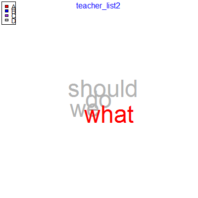
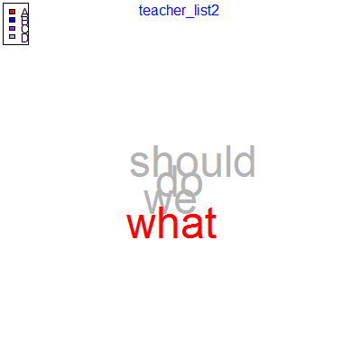

Find Associated Words.
Usage
word_associate(text.var, grouping.var = NULL, match.string, text.unit = "sentence",
extra.terms = NULL, target.exclude = NULL, stopwords = NULL, network.plot = FALSE,
wordcloud = FALSE, cloud.colors = c("black", "gray55"), title.color = "blue",
nw.label.cex = 0.8, title.padj = -4.5, nw.label.colors = NULL, nw.layout = NULL,
nw.edge.color = "gray90", nw.label.proportional = TRUE, nw.title.padj = NULL,
nw.title.location = NULL, title.font = NULL, title.cex = NULL, nw.edge.curved = TRUE,
cloud.legend = NULL, cloud.legend.cex = 0.8, cloud.legend.location = c(-0.03,
1.03), nw.legend = NULL, nw.legend.cex = 0.8, nw.legend.location = c(-1.54,
1.41), legend.override = FALSE, char2space = "~~", ...)
Arguments
- text.var
- The text variable.
- grouping.var
- The grouping variables. Default NULL generates one output for all text. Also takes a single grouping variable or a list of 1 or more grouping variables.
- match.string
- A list of vectors or vector of terms to associate in the text.
- text.unit
- The text unit (either
"sentence"or"tot". This argument determines what unit to find the match string words within. For example if"sentence"is chosen the function pulls all text for sentences the match string terms are found in. - extra.terms
- Other terms to color beyond the match string.
- target.exclude
- A vector of words to exclude from
the
match.string. - stopwords
- Words to exclude from the analysis.
- network.plot
- logical. If TRUE plots a network plot of the words.
- wordcloud
- logical. If TRUE plots a wordcloud plot of the words.
- cloud.colors
- A vector of colors equal to the
length of
match.string+1. - title.color
- A character vector of length one corresponding to the color of the title.
- nw.label.cex
- The magnification to be used for network plot labels relative to the current setting of cex. Default is .8.
- title.padj
- Adjustment for the title. For strings parallel to the axes, padj = 0 means right or top alignment, and padj = 1 means left or bottom alignment.
- nw.label.colors
- A vector of colors equal to the
length of
match.string+1. - nw.layout
- layout types supported by igraph. See
layout. - nw.edge.color
- A character vector of length one corresponding to the color of the plot edges.
- nw.label.proportional
- logical. If TRUE scales the network plots across grouping.var to allow plot to plot comparisons.
- nw.title.padj
- Adjustment for the network plot title. For strings parallel to the axes, padj = 0 means right or top alignment, and padj = 1 means left or bottom alignment.
- nw.title.location
- On which side of the network plot (1=bottom, 2=left, 3=top, 4=right).
- title.font
- The font family of the cloud title.
- title.cex
- Character expansion factor for the title. NULL and NA are equivalent to 1.0.
- nw.edge.curved
- logical. If TRUE edges will be curved rather than straight paths.
- cloud.legend
- A character vector of names
corresponding to the number of vectors in
match.string. Bothnw.legendandcloud.legendcan be set separately; or one may be set and by default the other will assume those legend labels. If the user does not desire this behavior use thelegend.overrideargument. - cloud.legend.cex
- Character expansion factor for the wordcloud legend. NULL and NA are equivalent to 1.0.
- cloud.legend.location
- The x and y co-ordinates to
be used to position the wordcloud legend. The location
may also be specified by setting x to a single keyword
from the list
"bottomright","bottom","bottomleft","left","topleft","top","topright","right"and"center". This places the legend on the inside of the plot frame at the given location. - nw.legend
- A character vector of names
corresponding to the number of vectors in
match.string. Bothnw.legendandcloud.legendcan be set separately; or one may be set and by default the other will assume those legend labels. If the user does not desire this behavior use thelegend.overrideargument. - nw.legend.cex
- Character expansion factor for the network plot legend. NULL and NA are equivalent to 1.0.
- nw.legend.location
- The x and y co-ordinates to be
used to position the network plot legend. The location
may also be specified by setting x to a single keyword
from the list
"bottomright","bottom","bottomleft","left","topleft","top","topright","right"and"center". This places the legend on the inside of the plot frame at the given location. - legend.override
- By default if legend labels are
supplied to either
cloud.legendornw.legendmay be set and if the other remains NULL it will assume the supplied vector to the previous legend argument. If this behavior is not desiredlegend.overrideshould be set to TRUE. - char2space
- Currently a road to nowhere.
Eventually this will allow the retention of characters as
is allowed in
trans.cloudalready. - ...
- Other arguments supplied to
trans.cloud.
Value
Returns a list: word frequency matricesWord
frequency matrices for each grouping variable.
dialogueA list of dataframes for each word list
(each vector supplied to match.string) and a final
dataframe of all combined text units that contain any
match string. match.termsA list of vectors of
word lists (each vector supplied to
match.string). Optionally, returns a word cloud
and/or a network plot of the text unit containing the
match.string terms.
Description
Find words associated with a given word(s) or a phrase(s). Results can be output as a network graph and/or wordcloud.
Examples
ms <- c(" I", "you") et <- c(" it", " no") word_associate(DATA2$state, DATA2$person, match.string = ms, wordcloud = TRUE, proportional = TRUE, network.plot = TRUE, nw.label.proportional = TRUE, extra.terms = et, cloud.legend =c("A", "B", "C", "D"), title.color = "blue", cloud.colors = c("red", "blue", "purple", "gray70"))
row group unit text 1 1 sam 1 Computer is fun. Not too fun. 2 2 greg 2 No its not, its dumb. 3 4 sam 4 You liar, it stinks! 4 5 greg 5 I am telling the truth! 5 7 greg 7 There is no way. 6 8 sam 8 I distrust you. 7 9 sally 9 What are you talking about? 8 11 greg 11 Im hungry. Lets eat. You already? 9 12 sam 12 I distrust you. 10 13 greg 13 There is no way. 11 15 greg 15 I am telling the truth! 12 17 greg 17 No its not, its dumb. 13 18 greg 18 Im hungry. Lets eat. You already? 14 19 sally 19 What are you talking about? 15 20 sam 20 You liar, it stinks! 16 21 greg 21 I am telling the truth! 17 22 sam 22 You liar, it stinks! 18 23 greg 23 There is no way. 19 24 greg 24 Im hungry. Lets eat. You already? 20 25 greg 25 I am telling the truth! 21 27 sam 27 Computer is fun. Not too fun. 22 30 sam 30 I distrust you. 23 31 greg 31 Im hungry. Lets eat. You already? 24 32 greg 32 No its not, its dumb. 25 33 sam 33 I distrust you. 26 36 sam 36 You liar, it stinks! 27 37 greg 37 There is no way. 28 38 sam 38 Computer is fun. Not too fun. 29 40 greg 40 I am telling the truth! 30 41 sam 41 You liar, it stinks! 31 42 greg 42 I am telling the truth! 32 44 sam 44 You liar, it stinks! 33 45 greg 45 No its not, its dumb. 34 46 sam 46 Computer is fun. Not too fun. 35 47 sam 47 I distrust you. 36 48 sam 48 Computer is fun. Not too fun. 37 49 sam 49 You liar, it stinks! 38 50 greg 50 There is no way. 39 51 greg 51 There is no way. 40 52 sally 52 What are you talking about? 41 53 sally 53 What are you talking about? 42 54 greg 54 I am telling the truth! 43 55 sam 55 I distrust you. 44 56 greg 56 Im hungry. Lets eat. You already? 45 57 greg 57 I am telling the truth! 46 58 greg 58 I am telling the truth! 47 59 greg 59 Im hungry. Lets eat. You already? 48 61 greg 61 There is no way. 49 62 sam 62 You liar, it stinks! 50 63 sally 63 What are you talking about? 51 65 sam 65 I distrust you. 52 67 sally 67 What are you talking about? 53 68 sam 68 I distrust you. 54 71 greg 71 There is no way. 55 74 greg 74 No its not, its dumb. Match Terms =========== List 1: is, its, it, i, im, you#====================================== #Note: You don't have to name the vectors in the lists but I do for clarity ms <- list( list1 = c(" I ", " you"), list2 = c(" wh") ) et <- list( B = c(" the", " on"), C = c(" it", " no") ) word_associate(DATA2$state, DATA2$person, match.string = ms, wordcloud = TRUE, proportional = TRUE, network.plot = TRUE, nw.label.proportional = TRUE, extra.terms = et, cloud.legend =c("A", "B", "C", "D"), title.color = "blue", cloud.colors = c("red", "blue", "purple", "gray70"))
row group unit text 1 3 teacher 3 What should we do? 2 4 sam 4 You liar, it stinks! 3 5 greg 5 I am telling the truth! 4 8 sam 8 I distrust you. 5 9 sally 9 What are you talking about? 6 11 greg 11 Im hungry. Lets eat. You already? 7 12 sam 12 I distrust you. 8 14 teacher 14 What should we do? 9 15 greg 15 I am telling the truth! 10 18 greg 18 Im hungry. Lets eat. You already? 11 19 sally 19 What are you talking about? 12 20 sam 20 You liar, it stinks! 13 21 greg 21 I am telling the truth! 14 22 sam 22 You liar, it stinks! 15 24 greg 24 Im hungry. Lets eat. You already? 16 25 greg 25 I am telling the truth! 17 30 sam 30 I distrust you. 18 31 greg 31 Im hungry. Lets eat. You already? 19 33 sam 33 I distrust you. 20 34 teacher 34 What should we do? 21 35 teacher 35 What should we do? 22 36 sam 36 You liar, it stinks! 23 39 teacher 39 What should we do? 24 40 greg 40 I am telling the truth! 25 41 sam 41 You liar, it stinks! 26 42 greg 42 I am telling the truth! 27 44 sam 44 You liar, it stinks! 28 47 sam 47 I distrust you. 29 49 sam 49 You liar, it stinks! 30 52 sally 52 What are you talking about? 31 53 sally 53 What are you talking about? 32 54 greg 54 I am telling the truth! 33 55 sam 55 I distrust you. 34 56 greg 56 Im hungry. Lets eat. You already? 35 57 greg 57 I am telling the truth! 36 58 greg 58 I am telling the truth! 37 59 greg 59 Im hungry. Lets eat. You already? 38 62 sam 62 You liar, it stinks! 39 63 sally 63 What are you talking about? 40 64 teacher 64 What should we do? 41 65 sam 65 I distrust you. 42 67 sally 67 What are you talking about? 43 68 sam 68 I distrust you. 44 72 teacher 72 What should we do? Match Terms =========== List 1: i, you List 2: whatword_associate(DATA2$state, list(DATA2$day, DATA2$person), match.string = ms)row group unit text 1 3 day 1.teacher 3 What should we do? 2 4 day 1.sam 4 You liar, it stinks! 3 5 day 1.greg 5 I am telling the truth! 4 8 day 1.sam 8 I distrust you. 5 9 day 1.sally 9 What are you talking about? 6 11 day 1.greg 11 Im hungry. Lets eat. You already? 7 12 day 1.sam 12 I distrust you. 8 14 day 1.teacher 14 What should we do? 9 15 day 1.greg 15 I am telling the truth! 10 18 day 1.greg 18 Im hungry. Lets eat. You already? 11 19 day 1.sally 19 What are you talking about? 12 20 day 1.sam 20 You liar, it stinks! 13 21 day 1.greg 21 I am telling the truth! 14 22 day 1.sam 22 You liar, it stinks! 15 24 day 1.greg 24 Im hungry. Lets eat. You already? 16 25 day 1.greg 25 I am telling the truth! 17 30 day 2.sam 30 I distrust you. 18 31 day 2.greg 31 Im hungry. Lets eat. You already? 19 33 day 2.sam 33 I distrust you. 20 34 day 2.teacher 34 What should we do? 21 35 day 2.teacher 35 What should we do? 22 36 day 2.sam 36 You liar, it stinks! 23 39 day 2.teacher 39 What should we do? 24 40 day 2.greg 40 I am telling the truth! 25 41 day 2.sam 41 You liar, it stinks! 26 42 day 2.greg 42 I am telling the truth! 27 44 day 2.sam 44 You liar, it stinks! 28 47 day 2.sam 47 I distrust you. 29 49 day 2.sam 49 You liar, it stinks! 30 52 day 2.sally 52 What are you talking about? 31 53 day 2.sally 53 What are you talking about? 32 54 day 2.greg 54 I am telling the truth! 33 55 day 2.sam 55 I distrust you. 34 56 day 2.greg 56 Im hungry. Lets eat. You already? 35 57 day 2.greg 57 I am telling the truth! 36 58 day 2.greg 58 I am telling the truth! 37 59 day 2.greg 59 Im hungry. Lets eat. You already? 38 62 day 2.sam 62 You liar, it stinks! 39 63 day 2.sally 63 What are you talking about? 40 64 day 2.teacher 64 What should we do? 41 65 day 2.sam 65 I distrust you. 42 67 day 2.sally 67 What are you talking about? 43 68 day 2.sam 68 I distrust you. 44 72 day 2.teacher 72 What should we do? Match Terms =========== List 1: i, you List 2: what#====================================== m <- list( A1 = c("you", "in"), #list 1 A2 = c(" wh") #list 2 ) n <- list( B = c(" the", " on"), C = c(" it", " no") ) word_associate(DATA2$state, list(DATA2$day, DATA2$person), match.string = m)row group unit text 1 3 day 1.teacher 3 What should we do? 2 4 day 1.sam 4 You liar, it stinks! 3 5 day 1.greg 5 I am telling the truth! 4 6 day 1.sally 6 How can we be certain? 5 8 day 1.sam 8 I distrust you. 6 9 day 1.sally 9 What are you talking about? 7 11 day 1.greg 11 Im hungry. Lets eat. You already? 8 12 day 1.sam 12 I distrust you. 9 14 day 1.teacher 14 What should we do? 10 15 day 1.greg 15 I am telling the truth! 11 18 day 1.greg 18 Im hungry. Lets eat. You already? 12 19 day 1.sally 19 What are you talking about? 13 20 day 1.sam 20 You liar, it stinks! 14 21 day 1.greg 21 I am telling the truth! 15 22 day 1.sam 22 You liar, it stinks! 16 24 day 1.greg 24 Im hungry. Lets eat. You already? 17 25 day 1.greg 25 I am telling the truth! 18 26 day 1.sally 26 How can we be certain? 19 30 day 2.sam 30 I distrust you. 20 31 day 2.greg 31 Im hungry. Lets eat. You already? 21 33 day 2.sam 33 I distrust you. 22 34 day 2.teacher 34 What should we do? 23 35 day 2.teacher 35 What should we do? 24 36 day 2.sam 36 You liar, it stinks! 25 39 day 2.teacher 39 What should we do? 26 40 day 2.greg 40 I am telling the truth! 27 41 day 2.sam 41 You liar, it stinks! 28 42 day 2.greg 42 I am telling the truth! 29 43 day 2.sally 43 How can we be certain? 30 44 day 2.sam 44 You liar, it stinks! 31 47 day 2.sam 47 I distrust you. 32 49 day 2.sam 49 You liar, it stinks! 33 52 day 2.sally 52 What are you talking about? 34 53 day 2.sally 53 What are you talking about? 35 54 day 2.greg 54 I am telling the truth! 36 55 day 2.sam 55 I distrust you. 37 56 day 2.greg 56 Im hungry. Lets eat. You already? 38 57 day 2.greg 57 I am telling the truth! 39 58 day 2.greg 58 I am telling the truth! 40 59 day 2.greg 59 Im hungry. Lets eat. You already? 41 62 day 2.sam 62 You liar, it stinks! 42 63 day 2.sally 63 What are you talking about? 43 64 day 2.teacher 64 What should we do? 44 65 day 2.sam 65 I distrust you. 45 66 day 2.sally 66 How can we be certain? 46 67 day 2.sally 67 What are you talking about? 47 68 day 2.sam 68 I distrust you. 48 69 day 2.sally 69 How can we be certain? 49 72 day 2.teacher 72 What should we do? Match Terms =========== List 1: you, stinks, telling, certain, talking List 2: whatword_associate(raj.act.1$dialogue, list(raj.act.1$person), match.string = m)row group unit text ... 1 3 Sampson 3 I mean, an we be in choler, we'll draw. 2 4 Gregory 4 Ay, while you live, draw your neck out o the collar. 3 5 Sampson 5 I strike quickly, being moved. 4 11 Sampson 11 True; and therefore women, being the weaker vessels, are ever thrust to the wall. therefore I will push Montague's men from the wall, and thrust his maids to the wall. 5 13 Sampson 13 'Tis all one, I will show myself a tyrant. when I have fought with the men, I will be cruel with the maids, and cut off their heads. 6 15 Sampson 15 Ay, the heads of the maids, or their maidenheads; take it in what sense thou wilt. 7 16 Gregory 16 They must take it in sense that feel it. 8 17 Sampson 17 Me they shall feel while I am able to stand. and tis known I am a pretty piece of flesh. 9 23 Sampson 23 Let us take the law of our sides; let them begin. 10 25 Sampson 25 Nay, as they dare. I will bite my thumb at them; which is a disgrace to them, if they bear it. 11 26 Abraham 26 Do you bite your thumb at us, sir? 12 28 Abraham 28 Do you bite your thumb at us, sir? 13 31 Sampson 31 No, sir, I do not bite my thumb at you, sir, but I bite my thumb, sir. 14 32 Gregory 32 Do you quarrel, sir? 15 34 Sampson 34 If you do, sir, I am for you. I serve as good a man as you. 16 37 Gregory 37 Say better. here comes one of my master's kinsmen. 17 39 Abraham 39 You lie. 18 40 Sampson 40 Draw, if you be men. Gregory, remember thy swashing blow. 19 41 Benvolio 41 Part, fools! Put up your swords; you know not what you do. 20 42 Tybalt 42 What, art thou drawn among these heartless hinds? Turn thee, Benvolio, look upon thy death. 21 44 Tybalt 44 What, drawn, and talk of peace! I hate the word, As I hate hell, all Montagues, and thee. Have at thee, coward! 22 46 Capulet 46 What noise is this? Give me my long sword, ho! 23 47 Lady Capulet 47 A crutch, a crutch! why call you for a sword? 24 48 Capulet 48 My sword, I say! Old Montague is come, And flourishes his blade in spite of me. 25 49 Montague 49 Thou villain Capulet,--Hold me not, let me go. 26 51 Prince 51 Rebellious subjects, enemies to peace, Profaners of this neighbour-stained steel,-- Will they not hear? What, ho! you men, you beasts, That quench the fire of your pernicious rage With purple fountains issuing from your veins, On pain of torture, from those bloody hands Throw your mistemper'd weapons to the ground, And hear the sentence of your moved prince. Three civil brawls, bred of an airy word, By thee, old Capulet, and Montague, Have thrice disturb'd the quiet of our streets, And made Verona's ancient citizens Cast by their grave beseeming ornaments, To wield old partisans, in hands as old, Canker'd with peace, to part your canker'd hate. If ever you disturb our streets again, Your lives shall pay the forfeit of the peace. For this time, all the rest depart away. You Capulet; shall go along with me. And, Montague, come you this afternoon, To know our further pleasure in this case, To old Free-town, our common judgment-place. Once more, on pain of death, all men depart. 27 52 Montague 52 Who set this ancient quarrel new abroach? Speak, nephew, were you by when it began? 28 53 Benvolio 53 Here were the servants of your adversary, And yours, close fighting ere I did approach. I drew to part them. in the instant came The fiery Tybalt, with his sword prepared, Which, as he breathed defiance to my ears, He swung about his head and cut the winds, Who nothing hurt withal hiss'd him in scorn. While we were interchanging thrusts and blows, Came more and more and fought on part and part, Till the prince came, who parted either part. 29 54 Lady Montague 54 O, where is Romeo? saw you him to-day? Right glad I am he was not at this fray. 30 55 Benvolio 55 Madam, an hour before the worshipp'd sun Peer'd forth the golden window of the east, A troubled mind drave me to walk abroad; Where, underneath the grove of sycamore That westward rooteth from the city's side, So early walking did I see your son. Towards him I made, but he was ware of me And stole into the covert of the wood. I, measuring his affections by my own, That most are busied when they're most alone, Pursued my humour not pursuing his, And gladly shunn'd who gladly fled from me. 31 56 Montague 56 Many a morning hath he there been seen, With tears augmenting the fresh morning dew. Adding to clouds more clouds with his deep sighs; But all so soon as the all-cheering sun Should in the furthest east begin to draw The shady curtains from Aurora's bed, Away from the light steals home my heavy son, And private in his chamber pens himself, Shuts up his windows, locks far daylight out And makes himself an artificial night. Black and portentous must this humour prove, Unless good counsel may the cause remove. 32 57 Benvolio 57 My noble uncle, do you know the cause? 33 59 Benvolio 59 Have you importuned him by any means? 34 60 Montague 60 Both by myself and many other friends. But he, his own affections counsellor, Is to himself--I will not say how true-- But to himself so secret and so close, So far from sounding and discovery, As is the bud bit with an envious worm, Ere he can spread his sweet leaves to the air, Or dedicate his beauty to the sun. Could we but learn from whence his sorrows grow. We would as willingly give cure as know. 35 61 Benvolio 61 See, where he comes. so please you, step aside; I'll know his grievance, or be much denied. 36 63 Benvolio 63 Good-morrow, cousin. 37 64 Romeo 64 Is the day so young? 38 65 Benvolio 65 But new struck nine. 39 67 Benvolio 67 It was. What sadness lengthens Romeo's hours? 40 68 Romeo 68 Not having that, which, having, makes them short. 41 69 Benvolio 69 In love? 42 72 Romeo 72 Out of her favour, where I am in love. 43 73 Benvolio 73 Alas, that love, so gentle in his view, Should be so tyrannous and rough in proof! 44 74 Romeo 74 Alas, that love, whose view is muffled still, Should, without eyes, see pathways to his will! Where shall we dine? O me! What fray was here? Yet tell me not, for I have heard it all. Here's much to do with hate, but more with love. Why, then, O brawling love! O loving hate! O any thing, of nothing first create! O heavy lightness! serious vanity! Mis-shapen chaos of well-seeming forms! Feather of lead, bright smoke, cold fire, sick health! Still-waking sleep, that is not what it is! This love feel I, that feel no love in this. Dost thou not laugh? 45 76 Romeo 76 Good heart, at what? 46 78 Romeo 78 Why, such is love's transgression. Griefs of mine own lie heavy in my breast, Which thou wilt propagate, to have it prest With more of thine. this love that thou hast shown Doth add more grief to too much of mine own. Love is a smoke raised with the fume of sighs; Being purged, a fire sparkling in lovers eyes; Being vex'd a sea nourish'd with lovers tears. What is it else? a madness most discreet, A choking gall and a preserving sweet. Farewell, my coz. 47 79 Benvolio 79 Soft! I will go along; An if you leave me so, you do me wrong. 48 80 Romeo 80 Tut, I have lost myself; I am not here; This is not Romeo, he's some other where. 49 81 Benvolio 81 Tell me in sadness, who is that you love. 50 82 Romeo 82 What, shall I groan and tell thee? 51 83 Benvolio 83 Groan! why, no. But sadly tell me who. 52 84 Romeo 84 Bid a sick man in sadness make his will. Ah, word ill urged to one that is so ill! In sadness, cousin, I do love a woman. 53 85 Benvolio 85 I aim'd so near, when I supposed you loved. 54 88 Romeo 88 Well, in that hit you miss. she'll not be hit With Cupid's arrow; she hath Dian's wit; And, in strong proof of chastity well arm'd, From love's weak childish bow she lives unharm'd. She will not stay the siege of loving terms, Nor bide the encounter of assailing eyes, Nor ope her lap to saint-seducing gold. O, she is rich in beauty, only poor, That when she dies with beauty dies her store. 55 90 Romeo 90 She hath, and in that sparing makes huge waste, For beauty starved with her severity Cuts beauty off from all posterity. She is too fair, too wise, wisely too fair, To merit bliss by making me despair. She hath forsworn to love, and in that vow Do I live dead that live to tell it now. 56 91 Benvolio 91 Be ruled by me, forget to think of her. 57 92 Romeo 92 O, teach me how I should forget to think. 58 93 Benvolio 93 By giving liberty unto thine eyes; Examine other beauties. 59 94 Romeo 94 'Tis the way To call hers exquisite, in question more. These happy masks that kiss fair ladies brows Being black put us in mind they hide the fair; He that is strucken blind cannot forget The precious treasure of his eyesight lost. Show me a mistress that is passing fair, What doth her beauty serve, but as a note Where I may read who pass'd that passing fair? Farewell. thou canst not teach me to forget. 60 95 Benvolio 95 I'll pay that doctrine, or else die in debt. 61 96 Capulet 96 But Montague is bound as well as I, In penalty alike; and tis not hard, I think, For men so old as we to keep the peace. 62 97 Paris 97 Of honourable reckoning are you both; And pity tis you lived at odds so long. But now, my lord, what say you to my suit? 63 98 Capulet 98 But saying o'er what I have said before. My child is yet a stranger in the world; She hath not seen the change of fourteen years, Let two more summers wither in their pride, Ere we may think her ripe to be a bride. 64 99 Paris 99 Younger than she are happy mothers made. 65 100 Capulet 100 And too soon marr'd are those so early made. The earth hath swallow'd all my hopes but she, She is the hopeful lady of my earth. But woo her, gentle Paris, get her heart, My will to her consent is but a part; An she agree, within her scope of choice Lies my consent and fair according voice. This night I hold an old accustom'd feast, Whereto I have invited many a guest, Such as I love; and you, among the store, One more, most welcome, makes my number more. At my poor house look to behold this night Earth-treading stars that make dark heaven light. Such comfort as do lusty young men feel When well-apparell'd April on the heel Of limping winter treads, even such delight Among fresh female buds shall you this night Inherit at my house; hear all, all see, And like her most whose merit most shall be. Which on more view, of many mine being one May stand in number, though in reckoning none, Come, go with me. Go, sirrah, trudge about Through fair Verona; find those persons out Whose names are written there, and to them say, My house and welcome on their pleasure stay. 66 101 Servant 101 Find them out whose names are written here! It is written, that the shoemaker should meddle with his yard, and the tailor with his last, the fisher with his pencil, and the painter with his nets; but I am sent to find those persons whose names are here writ, and can never find what names the writing person hath here writ. I must to the learned.--In good time. 67 102 Benvolio 102 Tut, man, one fire burns out another's burning, One pain is lessen'd by another's anguish; Turn giddy, and be holp by backward turning; One desperate grief cures with another's languish. Take thou some new infection to thy eye, And the rank poison of the old will die. 68 103 Romeo 103 Your plaintain-leaf is excellent for that. 69 104 Benvolio 104 For what, I pray thee? 70 105 Romeo 105 For your broken shin. 71 106 Benvolio 106 Why, Romeo, art thou mad? 72 107 Romeo 107 Not mad, but bound more than a mad-man is; Shut up in prison, kept without my food, Whipp'd and tormented and--God-den, good fellow. 73 108 Servant 108 God gi god-den. I pray, sir, can you read? 74 109 Romeo 109 Ay, mine own fortune in my misery. 75 110 Servant 110 Perhaps you have learned it without book. but, I pray, can you read any thing you see? 76 112 Servant 112 Ye say honestly. rest you merry! 77 113 Romeo 113 Stay, fellow; I can read. Signior Martino and his wife and daughters; County Anselme and his beauteous sisters; the lady widow of Vitravio; Signior Placentio and his lovely nieces; Mercutio and his brother Valentine; mine uncle Capulet, his wife and daughters; my fair niece Rosaline; Livia; Signior Valentio and his cousin Tybalt, Lucio and the lively Helena. A fair assembly. whither should they come? 78 115 Romeo 115 Whither? 79 117 Romeo 117 Whose house? 80 119 Romeo 119 Indeed, I should have ask'd you that before. 81 120 Servant 120 Now I'll tell you without asking. my master is the great rich Capulet; and if you be not of the house of Montagues, I pray, come and crush a cup of wine. Rest you merry! 82 121 Benvolio 121 At this same ancient feast of Capulet's Sups the fair Rosaline whom thou so lovest, With all the admired beauties of Verona. Go thither; and, with unattainted eye, Compare her face with some that I shall show, And I will make thee think thy swan a crow. 83 122 Romeo 122 When the devout religion of mine eye Maintains such falsehood, then turn tears to fires; And these, who often drown'd could never die, Transparent heretics, be burnt for liars! One fairer than my love! the all-seeing sun Ne'er saw her match since first the world begun. 84 123 Benvolio 123 Tut, you saw her fair, none else being by, Herself poised with herself in either eye. But in that crystal scales let there be weigh'd Your lady's love against some other maid That I will show you shining at this feast, And she shall scant show well that now shows best. 85 124 Romeo 124 I'll go along, no such sight to be shown, But to rejoice in splendor of mine own. 86 126 Nurse 126 Now, by my maidenhead, at twelve year old, I bade her come. What, lamb! what, ladybird! God forbid! Where's this girl? What, Juliet! 87 127 Juliet 127 How now! who calls? 88 128 Nurse 128 Your mother. 89 129 Juliet 129 Madam, I am here. What is your will? 90 130 Lady Capulet 130 This is the matter.--Nurse, give leave awhile, We must talk in secret.--nurse, come back again; I have remember'd me, thou's hear our counsel. Thou know'st my daughter's of a pretty age. 91 135 Nurse 135 Even or odd, of all days in the year, Come Lammas-eve at night shall she be fourteen. Susan and she--God rest all Christian souls!-- Were of an age. well, Susan is with God; She was too good for me. but, as I said, On Lammas-eve at night shall she be fourteen; That shall she, marry; I remember it well. Tis since the earthquake now eleven years; And she was wean'd,--I never shall forget it,-- Of all the days of the year, upon that day. For I had then laid wormwood to my dug, Sitting in the sun under the dove-house wall; My lord and you were then at Mantua.-- Nay, I do bear a brain.--but, as I said, When it did taste the wormwood on the nipple Of my dug and felt it bitter, pretty fool, To see it tetchy and fall out with the dug! Shake quoth the dove-house. twas no need, I trow, To bid me trudge. And since that time it is eleven years; For then she could stand alone; nay, by the rood, She could have run and waddled all about; For even the day before, she broke her brow. And then my husband--God be with his soul! A was a merry man--took up the child. Yea, quoth he, dost thou fall upon thy face? Thou wilt fall backward when thou hast more wit; Wilt thou not, Jule? and, by my holidame, The pretty wretch left crying and said Ay. To see, now, how a jest shall come about! I warrant, an I should live a thousand years, I never should forget it. Wilt thou not, Jule? quoth he; And, pretty fool, it stinted and said Ay.' 92 137 Nurse 137 Yes, madam. yet I cannot choose but laugh, To think it should leave crying and say Ay. And yet, I warrant, it had upon its brow A bump as big as a young cockerel's stone; A parlous knock; and it cried bitterly. Yea, quoth my husband fall'st upon thy face? Thou wilt fall backward when thou comest to age; Wilt thou not, Jule? it stinted and said Ay.' 93 138 Juliet 138 And stint thou too, I pray thee, nurse, say I. 94 140 Lady Capulet 140 Marry, that marry is the very theme I came to talk of. Tell me, daughter Juliet, How stands your disposition to be married? 95 142 Nurse 142 An honour! were not I thine only nurse, I would say thou hadst suck'd wisdom from thy teat. 96 143 Lady Capulet 143 Well, think of marriage now; younger than you, Here in Verona, ladies of esteem, Are made already mothers. by my count, I was your mother much upon these years That you are now a maid. Thus then in brief. The valiant Paris seeks you for his love. 97 144 Nurse 144 A man, young lady! lady, such a man As all the world--why, he's a man of wax. 98 146 Nurse 146 Nay, he's a flower; in faith, a very flower. 99 147 Lady Capulet 147 What say you? can you love the gentleman? This night you shall behold him at our feast; Read o'er the volume of young Paris face, And find delight writ there with beauty's pen; Examine every married lineament, And see how one another lends content And what obscured in this fair volume lies Find written in the margent of his eyes. This precious book of love, this unbound lover, To beautify him, only lacks a cover. The fish lives in the sea, and tis much pride For fair without the fair within to hide. That book in many's eyes doth share the glory, That in gold clasps locks in the golden story; So shall you share all that he doth possess, By having him, making yourself no less. 100 149 Lady Capulet 149 Speak briefly, can you like of Paris love? 101 150 Juliet 150 I'll look to like, if looking liking move. But no more deep will I endart mine eye Than your consent gives strength to make it fly. 102 151 Servant 151 Madam, the guests are come, supper served up, you called, my young lady asked for, the nurse cursed in the pantry, and every thing in extremity. I must hence to wait; I beseech you, follow straight. 103 154 Romeo 154 What, shall this speech be spoke for our excuse? Or shall we on without a apology? 104 155 Benvolio 155 The date is out of such prolixity. We'll have no Cupid hoodwink'd with a scarf, Bearing a Tartar's painted bow of lath, Scaring the ladies like a crow-keeper; Nor no without-book prologue, faintly spoke After the prompter, for our entrance. But let them measure us by what they will; We'll measure them a measure, and be gone. 105 156 Romeo 156 Give me a torch. I am not for this ambling; Being but heavy, I will bear the light. 106 157 Mercutio 157 Nay, gentle Romeo, we must have you dance. 107 158 Romeo 158 Not I, believe me. you have dancing shoes With nimble soles. I have a soul of lead So stakes me to the ground I cannot move. 108 159 Mercutio 159 You are a lover; borrow Cupid's wings, And soar with them above a common bound. 109 160 Romeo 160 I am too sore enpierced with his shaft To soar with his light feathers, and so bound, I cannot bound a pitch above dull woe. Under love's heavy burden do I sink. 110 161 Mercutio 161 And, to sink in it, should you burden love; Too great oppression for a tender thing. 111 162 Romeo 162 Is love a tender thing? it is too rough, Too rude, too boisterous, and it pricks like thorn. 112 163 Mercutio 163 If love be rough with you, be rough with love; Prick love for pricking, and you beat love down. Give me a case to put my visage in. A visor for a visor! what care I What curious eye doth quote deformities? Here are the beetle brows shall blush for me. 113 164 Benvolio 164 Come, knock and enter; and no sooner in, But every man betake him to his legs. 114 166 Mercutio 166 Tut, dun's the mouse, the constable's own word. If thou art dun, we'll draw thee from the mire Of this sir-reverence love, wherein thou stick'st Up to the ears. Come, we burn daylight, ho! 115 168 Mercutio 168 I mean, sir, in delay We waste our lights in vain, like lamps by day. Take our good meaning, for our judgment sits Five times in that ere once in our five wits. 116 169 Romeo 169 And we mean well in going to this mask; But tis no wit to go. 117 170 Mercutio 170 Why, may one ask? 118 173 Romeo 173 Well, what was yours? 119 175 Romeo 175 In bed asleep, while they do dream things true. 120 176 Mercutio 176 O, then, I see Queen Mab hath been with you. She is the fairies midwife, and she comes In shape no bigger than an agate-stone On the fore-finger of an alderman, Drawn with a team of little atomies Athwart men's noses as they lie asleep; Her wagon-spokes made of long spiders legs, The cover of the wings of grasshoppers, The traces of the smallest spider's web, The collars of the moonshine's watery beams, Her whip of cricket's bone, the lash of film, Her wagoner a small grey-coated gnat, Not so big as a round little worm Prick'd from the lazy finger of a maid; Her chariot is an empty hazel-nut Made by the joiner squirrel or old grub, Time out o mind the fairies coachmakers. And in this state she gallops night by night Through lovers brains, and then they dream of love; O'er courtiers knees, that dream on court'sies straight, O'er lawyers fingers, who straight dream on fees, O'er ladies lips, who straight on kisses dream, Which oft the angry Mab with blisters plagues, Because their breaths with sweetmeats tainted are. Sometime she gallops o'er a courtier's nose, And then dreams he of smelling out a suit; And sometime comes she with a tithe-pig's tail Tickling a parson's nose as a lies asleep, Then dreams, he of another benefice. Sometime she driveth o'er a soldier's neck, And then dreams he of cutting foreign throats, Of breaches, ambuscadoes, Spanish blades, Of healths five-fathom deep; and then anon Drums in his ear, at which he starts and wakes, And being thus frighted swears a prayer or two And sleeps again. This is that very Mab That plats the manes of horses in the night, And bakes the elflocks in foul sluttish hairs, Which once untangled, much misfortune bodes. This is the hag, when maids lie on their backs, That presses them and learns them first to bear, Making them women of good carriage. This is she-- 121 177 Romeo 177 Peace, peace, Mercutio, peace! Thou talk'st of nothing. 122 178 Mercutio 178 True, I talk of dreams, Which are the children of an idle brain, Begot of nothing but vain fantasy, Which is as thin of substance as the air And more inconstant than the wind, who wooes Even now the frozen bosom of the north, And, being anger'd, puffs away from thence, Turning his face to the dew-dropping south. 123 179 Benvolio 179 This wind, you talk of, blows us from ourselves; Supper is done, and we shall come too late. 124 180 Romeo 180 I fear, too early. for my mind misgives Some consequence yet hanging in the stars Shall bitterly begin his fearful date With this night's revels and expire the term Of a despised life closed in my breast By some vile forfeit of untimely death. But He, that hath the steerage of my course, Direct my sail! On, lusty gentlemen. 125 183 Second Servant 183 When good manners shall lie all in one or two men's hands and they unwashed too, tis a foul thing. 126 184 First Servant 184 Away with the joint-stools, remove the court-cupboard, look to the plate. Good thou, save me a piece of marchpane; and, as thou lovest me, let the porter let in Susan Grindstone and Nell. Antony, and Potpan! 127 186 First Servant 186 You are looked for and called for, asked for and sought for, in the great chamber. 128 188 Capulet 188 Welcome, gentlemen! ladies that have their toes Unplagued with corns will have a bout with you. Ah ha, my mistresses! which of you all Will now deny to dance? she that makes dainty, She, I'll swear, hath corns; am I come near ye now? Welcome, gentlemen! I have seen the day That I have worn a visor and could tell A whispering tale in a fair lady's ear, Such as would please. tis gone, tis gone, tis gone. You are welcome, gentlemen! come, musicians, play. A hall, a hall! give room! and foot it, girls. More light, you knaves; and turn the tables up, And quench the fire, the room is grown too hot. Ah, sirrah, this unlook'd-for sport comes well. Nay, sit, nay, sit, good cousin Capulet; For you and I are past our dancing days. How long is't now since last yourself and I Were in a mask? 129 190 Capulet 190 What, man! tis not so much, tis not so much. Tis since the nuptials of Lucentio, Come pentecost as quickly as it will, Some five and twenty years; and then we mask'd. 130 192 Capulet 192 Will you tell me that? His son was but a ward two years ago. 131 193 Romeo 193 [To a Servingman] What lady is that, which doth enrich the hand Of yonder knight? 132 195 Romeo 195 O, she doth teach the torches to burn bright! It seems she hangs upon the cheek of night Like a rich jewel in an Ethiope's ear; Beauty too rich for use, for earth too dear! So shows a snowy dove trooping with crows, As yonder lady o'er her fellows shows. The measure done, I'll watch her place of stand, And, touching hers, make blessed my rude hand. Did my heart love till now? forswear it, sight! For I ne'er saw true beauty till this night. 133 196 Tybalt 196 This, by his voice, should be a Montague. Fetch me my rapier, boy. What dares the slave Come hither, cover'd with an antic face, To fleer and scorn at our solemnity? Now, by the stock and honour of my kin, To strike him dead, I hold it not a sin. 134 197 Capulet 197 Why, how now, kinsman! wherefore storm you so? 135 198 Tybalt 198 Uncle, this is a Montague, our foe, A villain that is hither come in spite, To scorn at our solemnity this night. 136 199 Capulet 199 Young Romeo is it? 137 200 Tybalt 200 'Tis he, that villain Romeo. 138 201 Capulet 201 Content thee, gentle coz, let him alone; He bears him like a portly gentleman; And, to say truth, Verona brags of him To be a virtuous and well-govern'd youth. I would not for the wealth of all the town Here in my house do him disparagement. Therefore be patient, take no note of him. It is my will, the which if thou respect, Show a fair presence and put off these frowns, And ill-beseeming semblance for a feast. 139 202 Tybalt 202 It fits, when such a villain is a guest. I'll not endure him. 140 203 Capulet 203 He shall be endured. What, goodman boy! I say, he shall. go to; Am I the master here, or you? go to. You'll not endure him! God shall mend my soul! You'll make a mutiny among my guests! You will set cock-a-hoop! you'll be the man! 141 204 Tybalt 204 Why, uncle, tis a shame. 142 205 Capulet 205 Go to, go to; You are a saucy boy. is't so, indeed? This trick may chance to scathe you, I know what. You must contrary me! marry, tis time. Well said, my hearts! You are a princox; go. Be quiet, or--More light, more light! For shame! I'll make you quiet. What, cheerly, my hearts! 143 206 Tybalt 206 Patience perforce with wilful choler meeting Makes my flesh tremble in their different greeting. I will withdraw. but this intrusion shall Now seeming sweet convert to bitter gall. 144 207 Romeo 207 [To JULIET] If I profane with my unworthiest hand This holy shrine, the gentle fine is this. My lips, two blushing pilgrims, ready stand To smooth that rough touch with a tender kiss. 145 208 Juliet 208 Good pilgrim, you do wrong your hand too much, Which mannerly devotion shows in this; For saints have hands that pilgrims hands do touch, And palm to palm is holy palmers kiss. 146 209 Romeo 209 Have not saints lips, and holy palmers too? 147 210 Juliet 210 Ay, pilgrim, lips that they must use in prayer. 148 211 Romeo 211 O, then, dear saint, let lips do what hands do; They pray, grant thou, lest faith turn to despair. 149 212 Juliet 212 Saints do not move, though grant for prayers sake. 150 213 Romeo 213 Then move not, while my prayer's effect I take. Thus from my lips, by yours, my sin is purged. 151 214 Juliet 214 Then have my lips the sin that they have took. 152 215 Romeo 215 Sin from thy lips? O trespass sweetly urged! Give me my sin again. 153 216 Juliet 216 You kiss by the book. 154 217 Nurse 217 Madam, your mother craves a word with you. 155 218 Romeo 218 What is her mother? 156 219 Nurse 219 Marry, bachelor, Her mother is the lady of the house, And a good lady, and a wise and virtuous I nursed her daughter, that you talk'd withal; I tell you, he that can lay hold of her Shall have the chinks. 157 223 Capulet 223 Nay, gentlemen, prepare not to be gone; We have a trifling foolish banquet towards. Is it e'en so? why, then, I thank you all I thank you, honest gentlemen; good night. More torches here! Come on then, let's to bed. Ah, sirrah, by my fay, it waxes late. I'll to my rest. 158 224 Juliet 224 Come hither, nurse. What is yond gentleman? 159 226 Juliet 226 What's he that now is going out of door? 160 227 Nurse 227 Marry, that, I think, be young Petrucio. 161 230 Juliet 230 Go ask his name. if he be married. My grave is like to be my wedding bed. 162 231 Nurse 231 His name is Romeo, and a Montague; The only son of your great enemy. Match Terms =========== List 1: you, your, yours, young, younger, yourself, youth, you'll, in, being, begin, kinsmen, swashing, hinds, villain, stained, fountains, issuing, veins, pain, prince, beseeming, again, fighting, instant, winds, nothing, interchanging, window, mind, walking, into, measuring, pursuing, morning, augmenting, adding, cheering, curtains, windows, sounding, willingly, cousin, nine, having, dine, brawling, loving, thing, seeming, waking, mine, thine, sparkling, choking, preserving, assailing, saint, seducing, sparing, making, think, giving, examine, blind, passing, doctrine, reckoning, saying, within, according, invited, treading, limping, winter, inherit, find, painter, writing, burning, turning, infection, plaintain, shin, martino, valentine, rosaline, indeed, asking, wine, unattainted, maintains, seeing, since, against, shining, sitting, brain, crying, stinted, stint, lineament, looking, liking, hoodwink'd, bearing, painted, scaring, faintly, ambling, dancing, wings, sink, pricking, wherein, vain, meaning, going, things, finger, moonshine's, joiner, brains, fingers, tainted, smelling, tickling, cutting, thin, inconstant, wind, dropping, hanging, joint, grindstone, dainty, whispering, servingman, trooping, touching, kin, sin, kinsman, mutiny, princox, meeting, greeting, intrusion, shrine, fine, blushing, saints, chinks, trifling, wedding List 2: while, when, what, which, why, who, where, whence, whose, whereto, whipp'd, whither, whom, where's, wherein, whip, whispering, wherefore, what's(out <- with(mraja1spl, word_associate(dialogue, list(fam.aff, sex), match.string = m)))row group unit text ... 1 3 cap.m 3 I mean, an we be in choler, we'll draw. 2 4 cap.m 4 Ay, while you live, draw your neck out o the collar. 3 5 cap.m 5 I strike quickly, being moved. 4 13 cap.m 13 True; and therefore women, being the weaker vessels, are ever thrust to the wall. 5 17 cap.m 17 when I have fought with the men, I will be cruel with the maids, and cut off their heads. 6 19 cap.m 19 Ay, the heads of the maids, or their maidenheads; take it in what sense thou wilt. 7 20 cap.m 20 They must take it in sense that feel it. 8 21 cap.m 21 Me they shall feel while I am able to stand. 9 32 cap.m 32 Let us take the law of our sides; let them begin. 10 35 cap.m 35 I will bite my thumb at them; which is a disgrace to them, if they bear it. 11 36 mont.m 36 Do you bite your thumb at us, sir? 12 38 mont.m 38 Do you bite your thumb at us, sir? 13 41 cap.m 41 No, sir, I do not bite my thumb at you, sir, but I bite my thumb, sir. 14 42 cap.m 42 Do you quarrel, sir? 15 45 cap.m 45 If you do, sir, I am for you. 16 46 cap.m 46 I serve as good a man as you. 17 50 cap.m 50 here comes one of my master's kinsmen. 18 52 mont.m 52 You lie. 19 53 cap.m 53 Draw, if you be men. 20 54 cap.m 54 Gregory, remember thy swashing blow. 21 56 mont.m 56 Put up your swords; you know not what you do. 22 57 cap.m 57 What, art thou drawn among these heartless hinds? 23 61 cap.m 61 What, drawn, and talk of peace! 24 69 cap.f 69 What noise is this? 25 72 cap.f 72 why call you for a sword? 26 74 cap.f 74 Old Montague is come, And flourishes his blade in spite of me. 27 75 mont.m 75 Thou villain Capulet,--Hold me not, let me go. 28 77 escal.m 77 Rebellious subjects, enemies to peace, Profaners of this neighbour-stained steel,-- Will they not hear? 29 78 escal.m 78 What, ho! 30 79 escal.m 79 you men, you beasts, That quench the fire of your pernicious rage With purple fountains issuing from your veins, On pain of torture, from those bloody hands Throw your mistemper'd weapons to the ground, And hear the sentence of your moved prince. 31 80 escal.m 80 Three civil brawls, bred of an airy word, By thee, old Capulet, and Montague, Have thrice disturb'd the quiet of our streets, And made Verona's ancient citizens Cast by their grave beseeming ornaments, To wield old partisans, in hands as old, Canker'd with peace, to part your canker'd hate. 32 81 escal.m 81 If ever you disturb our streets again, Your lives shall pay the forfeit of the peace. 33 83 escal.m 83 You Capulet; shall go along with me. 34 84 escal.m 84 And, Montague, come you this afternoon, To know our further pleasure in this case, To old Free-town, our common judgment-place. 35 85 escal.m 85 Once more, on pain of death, all men depart. 36 86 mont.m 86 Who set this ancient quarrel new abroach? 37 87 mont.m 87 Speak, nephew, were you by when it began? 38 88 mont.m 88 Here were the servants of your adversary, And yours, close fighting ere I did approach. 39 90 mont.m 90 in the instant came The fiery Tybalt, with his sword prepared, Which, as he breathed defiance to my ears, He swung about his head and cut the winds, Who nothing hurt withal hiss'd him in scorn. 40 91 mont.m 91 While we were interchanging thrusts and blows, Came more and more and fought on part and part, Till the prince came, who parted either part. 41 92 mont.f 92 O, where is Romeo? 42 93 mont.f 93 saw you him to-day? 43 95 mont.m 95 Madam, an hour before the worshipp'd sun Peer'd forth the golden window of the east, A troubled mind drave me to walk abroad; Where, underneath the grove of sycamore That westward rooteth from the city's side, So early walking did I see your son. 44 96 mont.m 96 Towards him I made, but he was ware of me And stole into the covert of the wood. 45 97 mont.m 97 I, measuring his affections by my own, That most are busied when they're most alone, Pursued my humour not pursuing his, And gladly shunn'd who gladly fled from me. 46 98 mont.m 98 Many a morning hath he there been seen, With tears augmenting the fresh morning dew. 47 99 mont.m 99 Adding to clouds more clouds with his deep sighs; But all so soon as the all-cheering sun Should in the furthest east begin to draw The shady curtains from Aurora's bed, Away from the light steals home my heavy son, And private in his chamber pens himself, Shuts up his windows, locks far daylight out And makes himself an artificial night. 48 101 mont.m 101 My noble uncle, do you know the cause? 49 103 mont.m 103 Have you importuned him by any means? 50 105 mont.m 105 But he, his own affections counsellor, Is to himself--I will not say how true-- But to himself so secret and so close, So far from sounding and discovery, As is the bud bit with an envious worm, Ere he can spread his sweet leaves to the air, Or dedicate his beauty to the sun. 51 106 mont.m 106 Could we but learn from whence his sorrows grow. 52 107 mont.m 107 We would as willingly give cure as know. 53 108 mont.m 108 See, where he comes. 54 109 mont.m 109 so please you, step aside; I'll know his grievance, or be much denied. 55 112 mont.m 112 Good-morrow, cousin. 56 113 mont.m 113 Is the day so young? 57 114 mont.m 114 But new struck nine. 58 119 mont.m 119 What sadness lengthens Romeo's hours? 59 120 mont.m 120 Not having that, which, having, makes them short. 60 121 mont.m 121 In love? 61 124 mont.m 124 Out of her favour, where I am in love. 62 125 mont.m 125 Alas, that love, so gentle in his view, Should be so tyrannous and rough in proof! 63 126 mont.m 126 Alas, that love, whose view is muffled still, Should, without eyes, see pathways to his will! 64 127 mont.m 127 Where shall we dine? 65 129 mont.m 129 What fray was here? 66 132 mont.m 132 Why, then, O brawling love! 67 133 mont.m 133 O loving hate! 68 134 mont.m 134 O any thing, of nothing first create! 69 137 mont.m 137 Mis-shapen chaos of well-seeming forms! 70 139 mont.m 139 Still-waking sleep, that is not what it is! 71 140 mont.m 140 This love feel I, that feel no love in this. 72 143 mont.m 143 Good heart, at what? 73 145 mont.m 145 Why, such is love's transgression. 74 146 mont.m 146 Griefs of mine own lie heavy in my breast, Which thou wilt propagate, to have it prest With more of thine. 75 147 mont.m 147 this love that thou hast shown Doth add more grief to too much of mine own. 76 148 mont.m 148 Love is a smoke raised with the fume of sighs; Being purged, a fire sparkling in lovers eyes; Being vex'd a sea nourish'd with lovers tears. 77 149 mont.m 149 What is it else? 78 150 mont.m 150 a madness most discreet, A choking gall and a preserving sweet. 79 153 mont.m 153 I will go along; An if you leave me so, you do me wrong. 80 154 mont.m 154 Tut, I have lost myself; I am not here; This is not Romeo, he's some other where. 81 155 mont.m 155 Tell me in sadness, who is that you love. 82 156 mont.m 156 What, shall I groan and tell thee? 83 158 mont.m 158 why, no. 84 159 mont.m 159 But sadly tell me who. 85 160 mont.m 160 Bid a sick man in sadness make his will. 86 162 mont.m 162 In sadness, cousin, I do love a woman. 87 163 mont.m 163 I aim'd so near, when I supposed you loved. 88 167 mont.m 167 Well, in that hit you miss. 89 168 mont.m 168 she'll not be hit With Cupid's arrow; she hath Dian's wit; And, in strong proof of chastity well arm'd, From love's weak childish bow she lives unharm'd. 90 169 mont.m 169 She will not stay the siege of loving terms, Nor bide the encounter of assailing eyes, Nor ope her lap to saint-seducing gold. 91 170 mont.m 170 O, she is rich in beauty, only poor, That when she dies with beauty dies her store. 92 172 mont.m 172 She hath, and in that sparing makes huge waste, For beauty starved with her severity Cuts beauty off from all posterity. 93 173 mont.m 173 She is too fair, too wise, wisely too fair, To merit bliss by making me despair. 94 174 mont.m 174 She hath forsworn to love, and in that vow Do I live dead that live to tell it now. 95 175 mont.m 175 Be ruled by me, forget to think of her. 96 176 mont.m 176 O, teach me how I should forget to think. 97 177 mont.m 177 By giving liberty unto thine eyes; Examine other beauties. 98 178 mont.m 178 'Tis the way To call hers exquisite, in question more. 99 179 mont.m 179 These happy masks that kiss fair ladies brows Being black put us in mind they hide the fair; He that is strucken blind cannot forget The precious treasure of his eyesight lost. 100 180 mont.m 180 Show me a mistress that is passing fair, What doth her beauty serve, but as a note Where I may read who pass'd that passing fair? 101 183 mont.m 183 I'll pay that doctrine, or else die in debt. 102 184 cap.f 184 But Montague is bound as well as I, In penalty alike; and tis not hard, I think, For men so old as we to keep the peace. 103 185 escal.m 185 Of honourable reckoning are you both; And pity tis you lived at odds so long. 104 186 escal.m 186 But now, my lord, what say you to my suit? 105 187 cap.f 187 But saying o'er what I have said before. 106 188 cap.f 188 My child is yet a stranger in the world; She hath not seen the change of fourteen years, Let two more summers wither in their pride, Ere we may think her ripe to be a bride. 107 189 escal.m 189 Younger than she are happy mothers made. 108 192 cap.f 192 But woo her, gentle Paris, get her heart, My will to her consent is but a part; An she agree, within her scope of choice Lies my consent and fair according voice. 109 193 cap.f 193 This night I hold an old accustom'd feast, Whereto I have invited many a guest, Such as I love; and you, among the store, One more, most welcome, makes my number more. 110 194 cap.f 194 At my poor house look to behold this night Earth-treading stars that make dark heaven light. 111 195 cap.f 195 Such comfort as do lusty young men feel When well-apparell'd April on the heel Of limping winter treads, even such delight Among fresh female buds shall you this night Inherit at my house; hear all, all see, And like her most whose merit most shall be. 112 196 cap.f 196 Which on more view, of many mine being one May stand in number, though in reckoning none, Come, go with me. 113 197 cap.f 197 Go, sirrah, trudge about Through fair Verona; find those persons out Whose names are written there, and to them say, My house and welcome on their pleasure stay. 114 198 cap.m 198 Find them out whose names are written here! 115 199 cap.m 199 It is written, that the shoemaker should meddle with his yard, and the tailor with his last, the fisher with his pencil, and the painter with his nets; but I am sent to find those persons whose names are here writ, and can never find what names the writing person hath here writ. 116 201 cap.m 201 --In good time. 117 202 mont.m 202 Tut, man, one fire burns out another's burning, One pain is lessen'd by another's anguish; Turn giddy, and be holp by backward turning; One desperate grief cures with another's languish. 118 203 mont.m 203 Take thou some new infection to thy eye, And the rank poison of the old will die. 119 204 mont.m 204 Your plaintain-leaf is excellent for that. 120 205 mont.m 205 For what, I pray thee? 121 206 mont.m 206 For your broken shin. 122 207 mont.m 207 Why, Romeo, art thou mad? 123 208 mont.m 208 Not mad, but bound more than a mad-man is; Shut up in prison, kept without my food, Whipp'd and tormented and--God-den, good fellow. 124 210 cap.m 210 I pray, sir, can you read? 125 211 mont.m 211 Ay, mine own fortune in my misery. 126 212 cap.m 212 Perhaps you have learned it without book. 127 213 cap.m 213 but, I pray, can you read any thing you see? 128 216 cap.m 216 rest you merry! 129 218 mont.m 218 Signior Martino and his wife and daughters; County Anselme and his beauteous sisters; the lady widow of Vitravio; Signior Placentio and his lovely nieces; Mercutio and his brother Valentine; mine uncle Capulet, his wife and daughters; my fair niece Rosaline; Livia; Signior Valentio and his cousin Tybalt, Lucio and the lively Helena. 130 220 mont.m 220 whither should they come? 131 222 mont.m 222 Whither? 132 224 mont.m 224 Whose house? 133 226 mont.m 226 Indeed, I should have ask'd you that before. 134 227 cap.m 227 Now I'll tell you without asking. 135 228 cap.m 228 my master is the great rich Capulet; and if you be not of the house of Montagues, I pray, come and crush a cup of wine. 136 229 cap.m 229 Rest you merry! 137 230 mont.m 230 At this same ancient feast of Capulet's Sups the fair Rosaline whom thou so lovest, With all the admired beauties of Verona. 138 231 mont.m 231 Go thither; and, with unattainted eye, Compare her face with some that I shall show, And I will make thee think thy swan a crow. 139 232 mont.m 232 When the devout religion of mine eye Maintains such falsehood, then turn tears to fires; And these, who often drown'd could never die, Transparent heretics, be burnt for liars! 140 234 mont.m 234 the all-seeing sun Ne'er saw her match since first the world begun. 141 235 mont.m 235 Tut, you saw her fair, none else being by, Herself poised with herself in either eye. 142 236 mont.m 236 But in that crystal scales let there be weigh'd Your lady's love against some other maid That I will show you shining at this feast, And she shall scant show well that now shows best. 143 237 mont.m 237 I'll go along, no such sight to be shown, But to rejoice in splendor of mine own. 144 241 cap.f 241 What, lamb! 145 242 cap.f 242 what, ladybird! 146 245 cap.f 245 What, Juliet! 147 247 cap.f 247 who calls? 148 248 cap.f 248 Your mother. 149 250 cap.f 250 What is your will? 150 252 cap.f 252 --Nurse, give leave awhile, We must talk in secret. 151 253 cap.f 253 --nurse, come back again; I have remember'd me, thou's hear our counsel. 152 260 cap.f 260 Even or odd, of all days in the year, Come Lammas-eve at night shall she be fourteen. 153 265 cap.f 265 Tis since the earthquake now eleven years; And she was wean'd,--I never shall forget it,-- Of all the days of the year, upon that day. 154 266 cap.f 266 For I had then laid wormwood to my dug, Sitting in the sun under the dove-house wall; My lord and you were then at Mantua. 155 267 cap.f 267 -- Nay, I do bear a brain. 156 268 cap.f 268 --but, as I said, When it did taste the wormwood on the nipple Of my dug and felt it bitter, pretty fool, To see it tetchy and fall out with the dug! 157 271 cap.f 271 And since that time it is eleven years; For then she could stand alone; nay, by the rood, She could have run and waddled all about; For even the day before, she broke her brow. 158 275 cap.f 275 Thou wilt fall backward when thou hast more wit; Wilt thou not, Jule? 159 276 cap.f 276 and, by my holidame, The pretty wretch left crying and said Ay. 160 280 cap.f 280 quoth he; And, pretty fool, it stinted and said Ay. 161 283 cap.f 283 yet I cannot choose but laugh, To think it should leave crying and say Ay. 162 284 cap.f 284 And yet, I warrant, it had upon its brow A bump as big as a young cockerel's stone; A parlous knock; and it cried bitterly. 163 286 cap.f 286 Thou wilt fall backward when thou comest to age; Wilt thou not, Jule? 164 287 cap.f 287 it stinted and said Ay. 165 288 cap.f 288 And stint thou too, I pray thee, nurse, say I. 166 294 cap.f 294 Tell me, daughter Juliet, How stands your disposition to be married? 167 297 cap.f 297 were not I thine only nurse, I would say thou hadst suck'd wisdom from thy teat. 168 298 cap.f 298 Well, think of marriage now; younger than you, Here in Verona, ladies of esteem, Are made already mothers. 169 299 cap.f 299 by my count, I was your mother much upon these years That you are now a maid. 170 300 cap.f 300 Thus then in brief. 171 301 cap.f 301 The valiant Paris seeks you for his love. 172 302 cap.f 302 A man, young lady! 173 303 cap.f 303 lady, such a man As all the world--why, he's a man of wax. 174 305 cap.f 305 Nay, he's a flower; in faith, a very flower. 175 306 cap.f 306 What say you? 176 307 cap.f 307 can you love the gentleman? 177 308 cap.f 308 This night you shall behold him at our feast; Read o'er the volume of young Paris face, And find delight writ there with beauty's pen; Examine every married lineament, And see how one another lends content And what obscured in this fair volume lies Find written in the margent of his eyes. 178 310 cap.f 310 The fish lives in the sea, and tis much pride For fair without the fair within to hide. 179 311 cap.f 311 That book in many's eyes doth share the glory, That in gold clasps locks in the golden story; So shall you share all that he doth possess, By having him, making yourself no less. 180 314 cap.f 314 Speak briefly, can you like of Paris love? 181 315 cap.f 315 I'll look to like, if looking liking move. 182 316 cap.f 316 But no more deep will I endart mine eye Than your consent gives strength to make it fly. 183 317 cap.m 317 Madam, the guests are come, supper served up, you called, my young lady asked for, the nurse cursed in the pantry, and every thing in extremity. 184 318 cap.m 318 I must hence to wait; I beseech you, follow straight. 185 322 mont.m 322 What, shall this speech be spoke for our excuse? 186 325 mont.m 325 We'll have no Cupid hoodwink'd with a scarf, Bearing a Tartar's painted bow of lath, Scaring the ladies like a crow-keeper; Nor no without-book prologue, faintly spoke After the prompter, for our entrance. 187 326 mont.m 326 But let them measure us by what they will; We'll measure them a measure, and be gone. 188 328 mont.m 328 I am not for this ambling; Being but heavy, I will bear the light. 189 329 escal.m 329 Nay, gentle Romeo, we must have you dance. 190 331 mont.m 331 you have dancing shoes With nimble soles. 191 333 escal.m 333 You are a lover; borrow Cupid's wings, And soar with them above a common bound. 192 335 mont.m 335 Under love's heavy burden do I sink. 193 336 escal.m 336 And, to sink in it, should you burden love; Too great oppression for a tender thing. 194 337 mont.m 337 Is love a tender thing? 195 339 escal.m 339 If love be rough with you, be rough with love; Prick love for pricking, and you beat love down. 196 340 escal.m 340 Give me a case to put my visage in. 197 342 escal.m 342 what care I What curious eye doth quote deformities? 198 344 mont.m 344 Come, knock and enter; and no sooner in, But every man betake him to his legs. 199 349 escal.m 349 If thou art dun, we'll draw thee from the mire Of this sir-reverence love, wherein thou stick'st Up to the ears. 200 352 escal.m 352 I mean, sir, in delay We waste our lights in vain, like lamps by day. 201 353 escal.m 353 Take our good meaning, for our judgment sits Five times in that ere once in our five wits. 202 354 mont.m 354 And we mean well in going to this mask; But tis no wit to go. 203 355 escal.m 355 Why, may one ask? 204 358 mont.m 358 Well, what was yours? 205 360 mont.m 360 In bed asleep, while they do dream things true. 206 361 escal.m 361 O, then, I see Queen Mab hath been with you. 207 362 escal.m 362 She is the fairies midwife, and she comes In shape no bigger than an agate-stone On the fore-finger of an alderman, Drawn with a team of little atomies Athwart men's noses as they lie asleep; Her wagon-spokes made of long spiders legs, The cover of the wings of grasshoppers, The traces of the smallest spider's web, The collars of the moonshine's watery beams, Her whip of cricket's bone, the lash of film, Her wagoner a small grey-coated gnat, Not so big as a round little worm Prick'd from the lazy finger of a maid; Her chariot is an empty hazel-nut Made by the joiner squirrel or old grub, Time out o mind the fairies coachmakers. 208 363 escal.m 363 And in this state she gallops night by night Through lovers brains, and then they dream of love; O'er courtiers knees, that dream on court'sies straight, O'er lawyers fingers, who straight dream on fees, O'er ladies lips, who straight on kisses dream, Which oft the angry Mab with blisters plagues, Because their breaths with sweetmeats tainted are. 209 364 escal.m 364 Sometime she gallops o'er a courtier's nose, And then dreams he of smelling out a suit; And sometime comes she with a tithe-pig's tail Tickling a parson's nose as a lies asleep, Then dreams, he of another benefice. 210 365 escal.m 365 Sometime she driveth o'er a soldier's neck, And then dreams he of cutting foreign throats, Of breaches, ambuscadoes, Spanish blades, Of healths five-fathom deep; and then anon Drums in his ear, at which he starts and wakes, And being thus frighted swears a prayer or two And sleeps again. 211 366 escal.m 366 This is that very Mab That plats the manes of horses in the night, And bakes the elflocks in foul sluttish hairs, Which once untangled, much misfortune bodes. 212 367 escal.m 367 This is the hag, when maids lie on their backs, That presses them and learns them first to bear, Making them women of good carriage. 213 369 mont.m 369 Thou talk'st of nothing. 214 370 escal.m 370 True, I talk of dreams, Which are the children of an idle brain, Begot of nothing but vain fantasy, Which is as thin of substance as the air And more inconstant than the wind, who wooes Even now the frozen bosom of the north, And, being anger'd, puffs away from thence, Turning his face to the dew-dropping south. 215 371 mont.m 371 This wind, you talk of, blows us from ourselves; Supper is done, and we shall come too late. 216 373 mont.m 373 for my mind misgives Some consequence yet hanging in the stars Shall bitterly begin his fearful date With this night's revels and expire the term Of a despised life closed in my breast By some vile forfeit of untimely death. 217 380 cap.m 380 When good manners shall lie all in one or two men's hands and they unwashed too, tis a foul thing. 218 381 none.m 381 Away with the joint-stools, remove the court-cupboard, look to the plate. 219 382 none.m 382 Good thou, save me a piece of marchpane; and, as thou lovest me, let the porter let in Susan Grindstone and Nell. 220 385 none.m 385 You are looked for and called for, asked for and sought for, in the great chamber. 221 389 cap.f 389 ladies that have their toes Unplagued with corns will have a bout with you. 222 391 cap.f 391 which of you all Will now deny to dance? 223 392 cap.f 392 she that makes dainty, She, I'll swear, hath corns; am I come near ye now? 224 394 cap.f 394 I have seen the day That I have worn a visor and could tell A whispering tale in a fair lady's ear, Such as would please. 225 396 cap.f 396 You are welcome, gentlemen! 226 401 cap.f 401 More light, you knaves; and turn the tables up, And quench the fire, the room is grown too hot. 227 403 cap.f 403 Nay, sit, nay, sit, good cousin Capulet; For you and I are past our dancing days. 228 404 cap.f 404 How long is't now since last yourself and I Were in a mask? 229 406 cap.f 406 What, man! 230 408 cap.f 408 Tis since the nuptials of Lucentio, Come pentecost as quickly as it will, Some five and twenty years; and then we mask'd. 231 410 cap.f 410 Will you tell me that? 232 412 mont.m 412 [To a Servingman] What lady is that, which doth enrich the hand Of yonder knight? 233 415 mont.m 415 It seems she hangs upon the cheek of night Like a rich jewel in an Ethiope's ear; Beauty too rich for use, for earth too dear! 234 416 mont.m 416 So shows a snowy dove trooping with crows, As yonder lady o'er her fellows shows. 235 417 mont.m 417 The measure done, I'll watch her place of stand, And, touching hers, make blessed my rude hand. 236 423 cap.m 423 What dares the slave Come hither, cover'd with an antic face, To fleer and scorn at our solemnity? 237 424 cap.m 424 Now, by the stock and honour of my kin, To strike him dead, I hold it not a sin. 238 425 cap.f 425 Why, how now, kinsman! 239 426 cap.f 426 wherefore storm you so? 240 427 cap.m 427 Uncle, this is a Montague, our foe, A villain that is hither come in spite, To scorn at our solemnity this night. 241 428 cap.f 428 Young Romeo is it? 242 429 cap.m 429 'Tis he, that villain Romeo. 243 430 cap.f 430 Content thee, gentle coz, let him alone; He bears him like a portly gentleman; And, to say truth, Verona brags of him To be a virtuous and well-govern'd youth. 244 431 cap.f 431 I would not for the wealth of all the town Here in my house do him disparagement. 245 433 cap.f 433 It is my will, the which if thou respect, Show a fair presence and put off these frowns, And ill-beseeming semblance for a feast. 246 434 cap.m 434 It fits, when such a villain is a guest. 247 437 cap.f 437 What, goodman boy! 248 439 cap.f 439 go to; Am I the master here, or you? 249 443 cap.f 443 You'll make a mutiny among my guests! 250 444 cap.f 444 You will set cock-a-hoop! 251 446 cap.m 446 Why, uncle, tis a shame. 252 447 cap.f 447 Go to, go to; You are a saucy boy. 253 448 cap.f 448 is't so, indeed? 254 449 cap.f 449 This trick may chance to scathe you, I know what. 255 450 cap.f 450 You must contrary me! 256 453 cap.f 453 You are a princox; go. 257 456 cap.f 456 I'll make you quiet. 258 457 cap.f 457 What, cheerly, my hearts! 259 458 cap.m 458 Patience perforce with wilful choler meeting Makes my flesh tremble in their different greeting. 260 460 cap.m 460 but this intrusion shall Now seeming sweet convert to bitter gall. 261 461 mont.m 461 [To JULIET] If I profane with my unworthiest hand This holy shrine, the gentle fine is this. 262 462 mont.m 462 My lips, two blushing pilgrims, ready stand To smooth that rough touch with a tender kiss. 263 463 cap.f 463 Good pilgrim, you do wrong your hand too much, Which mannerly devotion shows in this; For saints have hands that pilgrims hands do touch, And palm to palm is holy palmers kiss. 264 464 mont.m 464 Have not saints lips, and holy palmers too? 265 465 cap.f 465 Ay, pilgrim, lips that they must use in prayer. 266 466 mont.m 466 O, then, dear saint, let lips do what hands do; They pray, grant thou, lest faith turn to despair. 267 467 cap.f 467 Saints do not move, though grant for prayers sake. 268 468 mont.m 468 Then move not, while my prayer's effect I take. 269 469 mont.m 469 Thus from my lips, by yours, my sin is purged. 270 470 cap.f 470 Then have my lips the sin that they have took. 271 471 mont.m 471 Sin from thy lips? 272 473 mont.m 473 Give me my sin again. 273 474 cap.f 474 You kiss by the book. 274 475 cap.f 475 Madam, your mother craves a word with you. 275 476 mont.m 476 What is her mother? 276 477 cap.f 477 Marry, bachelor, Her mother is the lady of the house, And a good lady, and a wise and virtuous I nursed her daughter, that you talk'd withal; I tell you, he that can lay hold of her Shall have the chinks. 277 483 cap.f 483 Nay, gentlemen, prepare not to be gone; We have a trifling foolish banquet towards. 278 485 cap.f 485 why, then, I thank you all I thank you, honest gentlemen; good night. 279 491 cap.f 491 What is yond gentleman? 280 493 cap.f 493 What's he that now is going out of door? 281 494 cap.f 494 Marry, that, I think, be young Petrucio. 282 499 cap.f 499 My grave is like to be my wedding bed. 283 500 cap.f 500 His name is Romeo, and a Montague; The only son of your great enemy. Match Terms =========== List 1: you, your, yours, young, younger, yourself, youth, you'll, in, being, begin, kinsmen, swashing, hinds, villain, stained, fountains, issuing, veins, pain, prince, beseeming, again, fighting, instant, winds, nothing, interchanging, window, mind, walking, into, measuring, pursuing, morning, augmenting, adding, cheering, curtains, windows, sounding, willingly, cousin, nine, having, dine, brawling, loving, thing, seeming, waking, mine, thine, sparkling, choking, preserving, assailing, saint, seducing, sparing, making, think, giving, examine, blind, passing, doctrine, reckoning, saying, within, according, invited, treading, limping, winter, inherit, find, painter, writing, burning, turning, infection, plaintain, shin, martino, valentine, rosaline, indeed, asking, wine, unattainted, maintains, seeing, since, against, shining, sitting, brain, crying, stinted, stint, lineament, looking, liking, hoodwink'd, bearing, painted, scaring, faintly, ambling, dancing, wings, sink, pricking, wherein, vain, meaning, going, things, finger, moonshine's, joiner, brains, fingers, tainted, smelling, tickling, cutting, thin, inconstant, wind, dropping, hanging, joint, grindstone, dainty, whispering, servingman, trooping, touching, kin, sin, kinsman, mutiny, princox, meeting, greeting, intrusion, shrine, fine, blushing, saints, chinks, trifling, wedding List 2: while, when, what, which, why, who, where, whence, whose, whereto, whipp'd, whither, whom, where's, wherein, whip, whispering, wherefore, what'snames(out)[1] "cap.f" "cap.m" "escal.m" "mont.f" "mont.m" [6] "none.m" "none.none" "dialogue" "match.terms"lapply(out$dialogue, htruncdf, n = 20, w = 20)$list1 row group unit text 1 3 cap.m 3 I mean, an we be in 2 4 cap.m 4 Ay, while you live, 3 5 cap.m 5 I strike quickly, be 4 13 cap.m 13 True; and therefore 5 19 cap.m 19 Ay, the heads of the 6 20 cap.m 20 They must take it in 7 32 cap.m 32 Let us take the law 8 36 mont.m 36 Do you bite your thu 9 38 mont.m 38 Do you bite your thu 10 41 cap.m 41 No, sir, I do not bi 11 42 cap.m 42 Do you quarrel, sir? 12 45 cap.m 45 If you do, sir, I am 13 46 cap.m 46 I serve as good a ma 14 50 cap.m 50 here comes one of my 15 52 mont.m 52 You lie. 16 53 cap.m 53 Draw, if you be men. 17 54 cap.m 54 Gregory, remember th 18 56 mont.m 56 Put up your swords; 19 57 cap.m 57 What, art thou drawn 20 72 cap.f 72 why call you for a s $list2 row group unit text 1 4 cap.m 4 Ay, while you live, 2 17 cap.m 17 when I have fought w 3 19 cap.m 19 Ay, the heads of the 4 21 cap.m 21 Me they shall feel w 5 35 cap.m 35 I will bite my thumb 6 56 mont.m 56 Put up your swords; 7 57 cap.m 57 What, art thou drawn 8 61 cap.m 61 What, drawn, and tal 9 69 cap.f 69 What noise is this? 10 72 cap.f 72 why call you for a s 11 78 escal.m 78 What, ho! 12 86 mont.m 86 Who set this ancient 13 87 mont.m 87 Speak, nephew, were 14 90 mont.m 90 in the instant came 15 91 mont.m 91 While we were interc 16 92 mont.f 92 O, where is Romeo? 17 95 mont.m 95 Madam, an hour befor 18 97 mont.m 97 I, measuring his aff 19 106 mont.m 106 Could we but learn f 20 108 mont.m 108 See, where he comes. $any row group unit text 1 3 cap.m 3 I mean, an we be in 2 4 cap.m 4 Ay, while you live, 3 5 cap.m 5 I strike quickly, be 4 13 cap.m 13 True; and therefore 5 17 cap.m 17 when I have fought w 6 19 cap.m 19 Ay, the heads of the 7 20 cap.m 20 They must take it in 8 21 cap.m 21 Me they shall feel w 9 32 cap.m 32 Let us take the law 10 35 cap.m 35 I will bite my thumb 11 36 mont.m 36 Do you bite your thu 12 38 mont.m 38 Do you bite your thu 13 41 cap.m 41 No, sir, I do not bi 14 42 cap.m 42 Do you quarrel, sir? 15 45 cap.m 45 If you do, sir, I am 16 46 cap.m 46 I serve as good a ma 17 50 cap.m 50 here comes one of my 18 52 mont.m 52 You lie. 19 53 cap.m 53 Draw, if you be men. 20 54 cap.m 54 Gregory, remember thout$cap.f$list1 row fam.aff&sex sentence 4 72 cap.f 72 6 74 cap.f 74 7 184 cap.f 184 8 187 cap.f 187 9 188 cap.f 188 12 192 cap.f 192 13 193 cap.f 193 14 194 cap.f 194 15 195 cap.f 195 16 196 cap.f 196 17 197 cap.f 197 28 248 cap.f 248 30 250 cap.f 250 32 252 cap.f 252 33 253 cap.f 253 40 260 cap.f 260 45 265 cap.f 265 46 266 cap.f 266 47 267 cap.f 267 51 271 cap.f 271 56 276 cap.f 276 60 280 cap.f 280 63 283 cap.f 283 64 284 cap.f 284 67 287 cap.f 287 68 288 cap.f 288 74 294 cap.f 294 77 297 cap.f 297 78 298 cap.f 298 79 299 cap.f 299 80 300 cap.f 300 81 301 cap.f 301 82 302 cap.f 302 85 305 cap.f 305 86 306 cap.f 306 87 307 cap.f 307 88 308 cap.f 308 90 310 cap.f 310 91 311 cap.f 311 94 314 cap.f 314 95 315 cap.f 315 96 316 cap.f 316 101 389 cap.f 389 103 391 cap.f 391 104 392 cap.f 392 106 394 cap.f 394 108 396 cap.f 396 113 401 cap.f 401 115 403 cap.f 403 116 404 cap.f 404 119 408 cap.f 408 120 410 cap.f 410 122 425 cap.f 425 123 426 cap.f 426 124 428 cap.f 428 125 430 cap.f 430 126 431 cap.f 431 128 433 cap.f 433 132 439 cap.f 439 136 443 cap.f 443 137 444 cap.f 444 139 447 cap.f 447 140 448 cap.f 448 141 449 cap.f 449 142 450 cap.f 450 145 453 cap.f 453 148 456 cap.f 456 150 463 cap.f 463 151 465 cap.f 465 152 467 cap.f 467 153 470 cap.f 470 154 474 cap.f 474 155 475 cap.f 475 156 477 cap.f 477 157 483 cap.f 483 159 485 cap.f 485 167 493 cap.f 493 168 494 cap.f 494 173 499 cap.f 499 174 500 cap.f 500 text 4 why call you for a sword? 6 Old Montague is come, And flourishes his blade in spite of me. 7 But Montague is bound as well as I, In penalty alike; and tis not hard, I think, For men so old as we to keep the peace. 8 But saying o'er what I have said before. 9 My child is yet a stranger in the world; She hath not seen the change of fourteen years, Let two more summers wither in their pride, Ere we may think her ripe to be a bride. 12 But woo her, gentle Paris, get her heart, My will to her consent is but a part; An she agree, within her scope of choice Lies my consent and fair according voice. 13 This night I hold an old accustom'd feast, Whereto I have invited many a guest, Such as I love; and you, among the store, One more, most welcome, makes my number more. 14 At my poor house look to behold this night Earth-treading stars that make dark heaven light. 15 Such comfort as do lusty young men feel When well-apparell'd April on the heel Of limping winter treads, even such delight Among fresh female buds shall you this night Inherit at my house; hear all, all see, And like her most whose merit most shall be. 16 Which on more view, of many mine being one May stand in number, though in reckoning none, Come, go with me. 17 Go, sirrah, trudge about Through fair Verona; find those persons out Whose names are written there, and to them say, My house and welcome on their pleasure stay. 28 Your mother. 30 What is your will? 32 --Nurse, give leave awhile, We must talk in secret. 33 --nurse, come back again; I have remember'd me, thou's hear our counsel. 40 Even or odd, of all days in the year, Come Lammas-eve at night shall she be fourteen. 45 Tis since the earthquake now eleven years; And she was wean'd,--I never shall forget it,-- Of all the days of the year, upon that day. 46 For I had then laid wormwood to my dug, Sitting in the sun under the dove-house wall; My lord and you were then at Mantua. 47 -- Nay, I do bear a brain. 51 And since that time it is eleven years; For then she could stand alone; nay, by the rood, She could have run and waddled all about; For even the day before, she broke her brow. 56 and, by my holidame, The pretty wretch left crying and said Ay. 60 quoth he; And, pretty fool, it stinted and said Ay. 63 yet I cannot choose but laugh, To think it should leave crying and say Ay. 64 And yet, I warrant, it had upon its brow A bump as big as a young cockerel's stone; A parlous knock; and it cried bitterly. 67 it stinted and said Ay. 68 And stint thou too, I pray thee, nurse, say I. 74 Tell me, daughter Juliet, How stands your disposition to be married? 77 were not I thine only nurse, I would say thou hadst suck'd wisdom from thy teat. 78 Well, think of marriage now; younger than you, Here in Verona, ladies of esteem, Are made already mothers. 79 by my count, I was your mother much upon these years That you are now a maid. 80 Thus then in brief. 81 The valiant Paris seeks you for his love. 82 A man, young lady! 85 Nay, he's a flower; in faith, a very flower. 86 What say you? 87 can you love the gentleman? 88 This night you shall behold him at our feast; Read o'er the volume of young Paris face, And find delight writ there with beauty's pen; Examine every married lineament, And see how one another lends content And what obscured in this fair volume lies Find written in the margent of his eyes. 90 The fish lives in the sea, and tis much pride For fair without the fair within to hide. 91 That book in many's eyes doth share the glory, That in gold clasps locks in the golden story; So shall you share all that he doth possess, By having him, making yourself no less. 94 Speak briefly, can you like of Paris love? 95 I'll look to like, if looking liking move. 96 But no more deep will I endart mine eye Than your consent gives strength to make it fly. 101 ladies that have their toes Unplagued with corns will have a bout with you. 103 which of you all Will now deny to dance? 104 she that makes dainty, She, I'll swear, hath corns; am I come near ye now? 106 I have seen the day That I have worn a visor and could tell A whispering tale in a fair lady's ear, Such as would please. 108 You are welcome, gentlemen! 113 More light, you knaves; and turn the tables up, And quench the fire, the room is grown too hot. 115 Nay, sit, nay, sit, good cousin Capulet; For you and I are past our dancing days. 116 How long is't now since last yourself and I Were in a mask? 119 Tis since the nuptials of Lucentio, Come pentecost as quickly as it will, Some five and twenty years; and then we mask'd. 120 Will you tell me that? 122 Why, how now, kinsman! 123 wherefore storm you so? 124 Young Romeo is it? 125 Content thee, gentle coz, let him alone; He bears him like a portly gentleman; And, to say truth, Verona brags of him To be a virtuous and well-govern'd youth. 126 I would not for the wealth of all the town Here in my house do him disparagement. 128 It is my will, the which if thou respect, Show a fair presence and put off these frowns, And ill-beseeming semblance for a feast. 132 go to; Am I the master here, or you? 136 You'll make a mutiny among my guests! 137 You will set cock-a-hoop! 139 Go to, go to; You are a saucy boy. 140 is't so, indeed? 141 This trick may chance to scathe you, I know what. 142 You must contrary me! 145 You are a princox; go. 148 I'll make you quiet. 150 Good pilgrim, you do wrong your hand too much, Which mannerly devotion shows in this; For saints have hands that pilgrims hands do touch, And palm to palm is holy palmers kiss. 151 Ay, pilgrim, lips that they must use in prayer. 152 Saints do not move, though grant for prayers sake. 153 Then have my lips the sin that they have took. 154 You kiss by the book. 155 Madam, your mother craves a word with you. 156 Marry, bachelor, Her mother is the lady of the house, And a good lady, and a wise and virtuous I nursed her daughter, that you talk'd withal; I tell you, he that can lay hold of her Shall have the chinks. 157 Nay, gentlemen, prepare not to be gone; We have a trifling foolish banquet towards. 159 why, then, I thank you all I thank you, honest gentlemen; good night. 167 What's he that now is going out of door? 168 Marry, that, I think, be young Petrucio. 173 My grave is like to be my wedding bed. 174 His name is Romeo, and a Montague; The only son of your great enemy. $list2 row fam.aff&sex sentence 1 69 cap.f 69 4 72 cap.f 72 8 187 cap.f 187 13 193 cap.f 193 15 195 cap.f 195 16 196 cap.f 196 17 197 cap.f 197 21 241 cap.f 241 22 242 cap.f 242 25 245 cap.f 245 27 247 cap.f 247 30 250 cap.f 250 48 268 cap.f 268 55 275 cap.f 275 66 286 cap.f 286 83 303 cap.f 303 86 306 cap.f 306 88 308 cap.f 308 103 391 cap.f 391 106 394 cap.f 394 117 406 cap.f 406 122 425 cap.f 425 123 426 cap.f 426 128 433 cap.f 433 130 437 cap.f 437 141 449 cap.f 449 149 457 cap.f 457 150 463 cap.f 463 159 485 cap.f 485 165 491 cap.f 491 text 1 What noise is this? 4 why call you for a sword? 8 But saying o'er what I have said before. 13 This night I hold an old accustom'd feast, Whereto I have invited many a guest, Such as I love; and you, among the store, One more, most welcome, makes my number more. 15 Such comfort as do lusty young men feel When well-apparell'd April on the heel Of limping winter treads, even such delight Among fresh female buds shall you this night Inherit at my house; hear all, all see, And like her most whose merit most shall be. 16 Which on more view, of many mine being one May stand in number, though in reckoning none, Come, go with me. 17 Go, sirrah, trudge about Through fair Verona; find those persons out Whose names are written there, and to them say, My house and welcome on their pleasure stay. 21 What, lamb! 22 what, ladybird! 25 What, Juliet! 27 who calls? 30 What is your will? 48 --but, as I said, When it did taste the wormwood on the nipple Of my dug and felt it bitter, pretty fool, To see it tetchy and fall out with the dug! 55 Thou wilt fall backward when thou hast more wit; Wilt thou not, Jule? 66 Thou wilt fall backward when thou comest to age; Wilt thou not, Jule? 83 lady, such a man As all the world--why, he's a man of wax. 86 What say you? 88 This night you shall behold him at our feast; Read o'er the volume of young Paris face, And find delight writ there with beauty's pen; Examine every married lineament, And see how one another lends content And what obscured in this fair volume lies Find written in the margent of his eyes. 103 which of you all Will now deny to dance? 106 I have seen the day That I have worn a visor and could tell A whispering tale in a fair lady's ear, Such as would please. 117 What, man! 122 Why, how now, kinsman! 123 wherefore storm you so? 128 It is my will, the which if thou respect, Show a fair presence and put off these frowns, And ill-beseeming semblance for a feast. 130 What, goodman boy! 141 This trick may chance to scathe you, I know what. 149 What, cheerly, my hearts! 150 Good pilgrim, you do wrong your hand too much, Which mannerly devotion shows in this; For saints have hands that pilgrims hands do touch, And palm to palm is holy palmers kiss. 159 why, then, I thank you all I thank you, honest gentlemen; good night. 165 What is yond gentleman? $search.terms.A1 [1] "you" "your" "yours" "young" [5] "younger" "yourself" "youth" "in" [9] "being" "begin" "kinsmen" "swashing" [13] "hinds" "villain" "stained" "fountains" [17] "issuing" "veins" "pain" "prince" [21] "beseeming" "again" "fighting" "instant" [25] "winds" "nothing" "interchanging" "window" [29] "mind" "walking" "into" "measuring" [33] "pursuing" "morning" "augmenting" "adding" [37] "cheering" "curtains" "windows" "sounding" [41] "willingly" "cousin" "nine" "having" [45] "dine" "brawling" "loving" "thing" [49] "seeming" "waking" "mine" "thine" [53] "sparkling" "choking" "preserving" "assailing" [57] "saint" "seducing" "sparing" "making" [61] "think" "giving" "examine" "blind" [65] "passing" "doctrine" "reckoning" "saying" [69] "within" "according" "invited" "treading" [73] "limping" "winter" "inherit" "find" [77] "painter" "writing" "burning" "turning" [81] "infection" "plaintain" "shin" "martino" [85] "valentine" "rosaline" "indeed" "asking" [89] "wine" "unattainted" "maintains" "seeing" [93] "since" "against" "shining" "sitting" [97] "brain" "crying" "stinted" "stint" [101] "lineament" "looking" "liking" "bearing" [105] "painted" "scaring" "faintly" "ambling" [109] "dancing" "wings" "sink" "pricking" [113] "wherein" "vain" "meaning" "going" [117] "things" "finger" "joiner" "brains" [121] "fingers" "tainted" "smelling" "tickling" [125] "cutting" "thin" "inconstant" "wind" [129] "dropping" "hanging" "joint" "grindstone" [133] "dainty" "whispering" "servingman" "trooping" [137] "touching" "kin" "sin" "kinsman" [141] "mutiny" "princox" "meeting" "greeting" [145] "intrusion" "shrine" "fine" "blushing" [149] "saints" "chinks" "trifling" "wedding" $search.terms.A2 [1] "while" "when" "what" "which" "why" [6] "who" "where" "whence" "whose" "whereto" [11] "whither" "whom" "wherein" "whip" "whispering" [16] "wherefore" $freqlist.cap.f_list1 $all WORD FREQ 1 and 40 2 the 38 3 you 33 4 a 31 5 I 31 6 in 23 7 of 21 8 to 21 9 that 18 10 my 17 11 is 14 12 have 13 13 for 12 14 it 11 15 as 10 16 her 10 17 all 9 18 she 9 19 will 9 20 be 8 21 now 8 22 your 8 $freqlist.cap.f_list2 $all WORD FREQ 1 and 13 2 what 13 3 you 11 4 I 10 5 the 10 6 a 9 7 of 7 8 this 7 9 thou 7 10 in 6 11 my 6 12 to 6 13 all 5 14 as 5 15 have 5 16 is 5 17 such 5 18 fair 4 19 it 4 20 more 4 21 night 4 22 on 4 23 when 4 24 which 4 25 why 4 26 wilt 4 $freqmat.cap.f_list1 184 187 188 192 193 194 195 196 197 248 250 252 253 260 265 266 a 0 0 2 1 1 0 0 0 0 0 0 0 0 0 0 0 about 0 0 0 0 0 0 0 0 1 0 0 0 0 0 0 0 according 0 0 0 1 0 0 0 0 0 0 0 0 0 0 0 0 accustom'd 0 0 0 0 1 0 0 0 0 0 0 0 0 0 0 0 again 0 0 0 0 0 0 0 0 0 0 0 0 1 0 0 0 agree 0 0 0 1 0 0 0 0 0 0 0 0 0 0 0 0 alike 1 0 0 0 0 0 0 0 0 0 0 0 0 0 0 0 all 0 0 0 0 0 0 2 0 0 0 0 0 0 1 1 0 alone 0 0 0 0 0 0 0 0 0 0 0 0 0 0 0 0 already 0 0 0 0 0 0 0 0 0 0 0 0 0 0 0 0 am 0 0 0 0 0 0 0 0 0 0 0 0 0 0 0 0 among 0 0 0 0 1 0 1 0 0 0 0 0 0 0 0 0 an 0 0 0 1 1 0 0 0 0 0 0 0 0 0 0 0 and 1 0 0 1 1 0 1 0 2 0 0 0 0 0 1 1 another 0 0 0 0 0 0 0 0 0 0 0 0 0 0 0 0 apparell'd 0 0 0 0 0 0 1 0 0 0 0 0 0 0 0 0 april 0 0 0 0 0 0 1 0 0 0 0 0 0 0 0 0 are 0 0 0 0 0 0 0 0 1 0 0 0 0 0 0 0 as 3 0 0 0 1 0 1 0 0 0 0 0 0 0 0 0 at 0 0 0 0 0 1 1 0 0 0 0 0 0 1 0 1 awhile 0 0 0 0 0 0 0 0 0 0 0 1 0 0 0 0 ay 0 0 0 0 0 0 0 0 0 0 0 0 0 0 0 0 bachelor 0 0 0 0 0 0 0 0 0 0 0 0 0 0 0 0 back 0 0 0 0 0 0 0 0 0 0 0 0 1 0 0 0 banquet 0 0 0 0 0 0 0 0 0 0 0 0 0 0 0 0 be 0 0 1 0 0 0 1 0 0 0 0 0 0 1 0 0 bear 0 0 0 0 0 0 0 0 0 0 0 0 0 0 0 0 bears 0 0 0 0 0 0 0 0 0 0 0 0 0 0 0 0 beauty's 0 0 0 0 0 0 0 0 0 0 0 0 0 0 0 0 bed 0 0 0 0 0 0 0 0 0 0 0 0 0 0 0 0 before 0 1 0 0 0 0 0 0 0 0 0 0 0 0 0 0 behold 0 0 0 0 0 1 0 0 0 0 0 0 0 0 0 0 being 0 0 0 0 0 0 0 1 0 0 0 0 0 0 0 0 beseeming 0 0 0 0 0 0 0 0 0 0 0 0 0 0 0 0 big 0 0 0 0 0 0 0 0 0 0 0 0 0 0 0 0 bitterly 0 0 0 0 0 0 0 0 0 0 0 0 0 0 0 0 blade 0 0 0 0 0 0 0 0 0 0 0 0 0 0 0 0 book 0 0 0 0 0 0 0 0 0 0 0 0 0 0 0 0 bound 1 0 0 0 0 0 0 0 0 0 0 0 0 0 0 0 bout 0 0 0 0 0 0 0 0 0 0 0 0 0 0 0 0 boy 0 0 0 0 0 0 0 0 0 0 0 0 0 0 0 0 brags 0 0 0 0 0 0 0 0 0 0 0 0 0 0 0 0 brain 0 0 0 0 0 0 0 0 0 0 0 0 0 0 0 0 bride 0 0 1 0 0 0 0 0 0 0 0 0 0 0 0 0 brief 0 0 0 0 0 0 0 0 0 0 0 0 0 0 0 0 briefly 0 0 0 0 0 0 0 0 0 0 0 0 0 0 0 0 broke 0 0 0 0 0 0 0 0 0 0 0 0 0 0 0 0 brow 0 0 0 0 0 0 0 0 0 0 0 0 0 0 0 0 buds 0 0 0 0 0 0 1 0 0 0 0 0 0 0 0 0 bump 0 0 0 0 0 0 0 0 0 0 0 0 0 0 0 0 but 1 1 0 2 0 0 0 0 0 0 0 0 0 0 0 0 by 0 0 0 0 0 0 0 0 0 0 0 0 0 0 0 0 call 0 0 0 0 0 0 0 0 0 0 0 0 0 0 0 0 can 0 0 0 0 0 0 0 0 0 0 0 0 0 0 0 0 cannot 0 0 0 0 0 0 0 0 0 0 0 0 0 0 0 0 capulet 0 0 0 0 0 0 0 0 0 0 0 0 0 0 0 0 chance 0 0 0 0 0 0 0 0 0 0 0 0 0 0 0 0 change 0 0 1 0 0 0 0 0 0 0 0 0 0 0 0 0 child 0 0 1 0 0 0 0 0 0 0 0 0 0 0 0 0 chinks 0 0 0 0 0 0 0 0 0 0 0 0 0 0 0 0 choice 0 0 0 1 0 0 0 0 0 0 0 0 0 0 0 0 choose 0 0 0 0 0 0 0 0 0 0 0 0 0 0 0 0 clasps 0 0 0 0 0 0 0 0 0 0 0 0 0 0 0 0 cock 0 0 0 0 0 0 0 0 0 0 0 0 0 0 0 0 cockerel's 0 0 0 0 0 0 0 0 0 0 0 0 0 0 0 0 come 0 0 0 0 0 0 0 1 0 0 0 0 1 1 0 0 comfort 0 0 0 0 0 0 1 0 0 0 0 0 0 0 0 0 consent 0 0 0 2 0 0 0 0 0 0 0 0 0 0 0 0 content 0 0 0 0 0 0 0 0 0 0 0 0 0 0 0 0 contrary 0 0 0 0 0 0 0 0 0 0 0 0 0 0 0 0 corns 0 0 0 0 0 0 0 0 0 0 0 0 0 0 0 0 could 0 0 0 0 0 0 0 0 0 0 0 0 0 0 0 0 counsel 0 0 0 0 0 0 0 0 0 0 0 0 1 0 0 0 count 0 0 0 0 0 0 0 0 0 0 0 0 0 0 0 0 cousin 0 0 0 0 0 0 0 0 0 0 0 0 0 0 0 0 coz 0 0 0 0 0 0 0 0 0 0 0 0 0 0 0 0 craves 0 0 0 0 0 0 0 0 0 0 0 0 0 0 0 0 cried 0 0 0 0 0 0 0 0 0 0 0 0 0 0 0 0 crying 0 0 0 0 0 0 0 0 0 0 0 0 0 0 0 0 dainty 0 0 0 0 0 0 0 0 0 0 0 0 0 0 0 0 dance 0 0 0 0 0 0 0 0 0 0 0 0 0 0 0 0 dancing 0 0 0 0 0 0 0 0 0 0 0 0 0 0 0 0 dark 0 0 0 0 0 1 0 0 0 0 0 0 0 0 0 0 daughter 0 0 0 0 0 0 0 0 0 0 0 0 0 0 0 0 day 0 0 0 0 0 0 0 0 0 0 0 0 0 0 1 0 days 0 0 0 0 0 0 0 0 0 0 0 0 0 1 1 0 deep 0 0 0 0 0 0 0 0 0 0 0 0 0 0 0 0 delight 0 0 0 0 0 0 1 0 0 0 0 0 0 0 0 0 deny 0 0 0 0 0 0 0 0 0 0 0 0 0 0 0 0 devotion 0 0 0 0 0 0 0 0 0 0 0 0 0 0 0 0 disparagement 0 0 0 0 0 0 0 0 0 0 0 0 0 0 0 0 disposition 0 0 0 0 0 0 0 0 0 0 0 0 0 0 0 0 do 0 0 0 0 0 0 1 0 0 0 0 0 0 0 0 0 door 0 0 0 0 0 0 0 0 0 0 0 0 0 0 0 0 doth 0 0 0 0 0 0 0 0 0 0 0 0 0 0 0 0 dove 0 0 0 0 0 0 0 0 0 0 0 0 0 0 0 1 dug 0 0 0 0 0 0 0 0 0 0 0 0 0 0 0 1 ear 0 0 0 0 0 0 0 0 0 0 0 0 0 0 0 0 earth 0 0 0 0 0 1 0 0 0 0 0 0 0 0 0 0 earthquake 0 0 0 0 0 0 0 0 0 0 0 0 0 0 1 0 eleven 0 0 0 0 0 0 0 0 0 0 0 0 0 0 1 0 endart 0 0 0 0 0 0 0 0 0 0 0 0 0 0 0 0 enemy 0 0 0 0 0 0 0 0 0 0 0 0 0 0 0 0 ere 0 0 1 0 0 0 0 0 0 0 0 0 0 0 0 0 esteem 0 0 0 0 0 0 0 0 0 0 0 0 0 0 0 0 eve 0 0 0 0 0 0 0 0 0 0 0 0 0 1 0 0 even 0 0 0 0 0 0 1 0 0 0 0 0 0 1 0 0 every 0 0 0 0 0 0 0 0 0 0 0 0 0 0 0 0 examine 0 0 0 0 0 0 0 0 0 0 0 0 0 0 0 0 eye 0 0 0 0 0 0 0 0 0 0 0 0 0 0 0 0 eyes 0 0 0 0 0 0 0 0 0 0 0 0 0 0 0 0 face 0 0 0 0 0 0 0 0 0 0 0 0 0 0 0 0 fair 0 0 0 1 0 0 0 0 1 0 0 0 0 0 0 0 faith 0 0 0 0 0 0 0 0 0 0 0 0 0 0 0 0 feast 0 0 0 0 1 0 0 0 0 0 0 0 0 0 0 0 feel 0 0 0 0 0 0 1 0 0 0 0 0 0 0 0 0 female 0 0 0 0 0 0 1 0 0 0 0 0 0 0 0 0 find 0 0 0 0 0 0 0 0 1 0 0 0 0 0 0 0 fire 0 0 0 0 0 0 0 0 0 0 0 0 0 0 0 0 fish 0 0 0 0 0 0 0 0 0 0 0 0 0 0 0 0 five 0 0 0 0 0 0 0 0 0 0 0 0 0 0 0 0 flourishes 0 0 0 0 0 0 0 0 0 0 0 0 0 0 0 0 flower 0 0 0 0 0 0 0 0 0 0 0 0 0 0 0 0 fly 0 0 0 0 0 0 0 0 0 0 0 0 0 0 0 0 fool 0 0 0 0 0 0 0 0 0 0 0 0 0 0 0 0 foolish 0 0 0 0 0 0 0 0 0 0 0 0 0 0 0 0 for 1 0 0 0 0 0 0 0 0 0 0 0 0 0 0 1 forget 0 0 0 0 0 0 0 0 0 0 0 0 0 0 1 0 fourteen 0 0 1 0 0 0 0 0 0 0 0 0 0 1 0 0 fresh 0 0 0 0 0 0 1 0 0 0 0 0 0 0 0 0 from 0 0 0 0 0 0 0 0 0 0 0 0 0 0 0 0 frowns 0 0 0 0 0 0 0 0 0 0 0 0 0 0 0 0 gentle 0 0 0 1 0 0 0 0 0 0 0 0 0 0 0 0 gentleman 0 0 0 0 0 0 0 0 0 0 0 0 0 0 0 0 gentlemen 0 0 0 0 0 0 0 0 0 0 0 0 0 0 0 0 get 0 0 0 1 0 0 0 0 0 0 0 0 0 0 0 0 give 0 0 0 0 0 0 0 0 0 0 0 1 0 0 0 0 gives 0 0 0 0 0 0 0 0 0 0 0 0 0 0 0 0 glory 0 0 0 0 0 0 0 0 0 0 0 0 0 0 0 0 go 0 0 0 0 0 0 0 1 1 0 0 0 0 0 0 0 going 0 0 0 0 0 0 0 0 0 0 0 0 0 0 0 0 gold 0 0 0 0 0 0 0 0 0 0 0 0 0 0 0 0 golden 0 0 0 0 0 0 0 0 0 0 0 0 0 0 0 0 gone 0 0 0 0 0 0 0 0 0 0 0 0 0 0 0 0 good 0 0 0 0 0 0 0 0 0 0 0 0 0 0 0 0 govern'd 0 0 0 0 0 0 0 0 0 0 0 0 0 0 0 0 grant 0 0 0 0 0 0 0 0 0 0 0 0 0 0 0 0 grave 0 0 0 0 0 0 0 0 0 0 0 0 0 0 0 0 great 0 0 0 0 0 0 0 0 0 0 0 0 0 0 0 0 grown 0 0 0 0 0 0 0 0 0 0 0 0 0 0 0 0 guest 0 0 0 0 1 0 0 0 0 0 0 0 0 0 0 0 guests 0 0 0 0 0 0 0 0 0 0 0 0 0 0 0 0 had 0 0 0 0 0 0 0 0 0 0 0 0 0 0 0 1 hadst 0 0 0 0 0 0 0 0 0 0 0 0 0 0 0 0 hand 0 0 0 0 0 0 0 0 0 0 0 0 0 0 0 0 hands 0 0 0 0 0 0 0 0 0 0 0 0 0 0 0 0 hard 1 0 0 0 0 0 0 0 0 0 0 0 0 0 0 0 hath 0 0 1 0 0 0 0 0 0 0 0 0 0 0 0 0 have 0 1 0 0 1 0 0 0 0 0 0 0 1 0 0 0 having 0 0 0 0 0 0 0 0 0 0 0 0 0 0 0 0 he 0 0 0 0 0 0 0 0 0 0 0 0 0 0 0 0 he's 0 0 0 0 0 0 0 0 0 0 0 0 0 0 0 0 hear 0 0 0 0 0 0 1 0 0 0 0 0 1 0 0 0 heart 0 0 0 1 0 0 0 0 0 0 0 0 0 0 0 0 heaven 0 0 0 0 0 1 0 0 0 0 0 0 0 0 0 0 heel 0 0 0 0 0 0 1 0 0 0 0 0 0 0 0 0 her 0 0 1 4 0 0 1 0 0 0 0 0 0 0 0 0 here 0 0 0 0 0 0 0 0 0 0 0 0 0 0 0 0 hide 0 0 0 0 0 0 0 0 0 0 0 0 0 0 0 0 him 0 0 0 0 0 0 0 0 0 0 0 0 0 0 0 0 his 0 0 0 0 0 0 0 0 0 0 0 0 0 0 0 0 hold 0 0 0 0 1 0 0 0 0 0 0 0 0 0 0 0 holidame 0 0 0 0 0 0 0 0 0 0 0 0 0 0 0 0 holy 0 0 0 0 0 0 0 0 0 0 0 0 0 0 0 0 honest 0 0 0 0 0 0 0 0 0 0 0 0 0 0 0 0 hoop 0 0 0 0 0 0 0 0 0 0 0 0 0 0 0 0 hot 0 0 0 0 0 0 0 0 0 0 0 0 0 0 0 0 house 0 0 0 0 0 1 1 0 1 0 0 0 0 0 0 1 how 0 0 0 0 0 0 0 0 0 0 0 0 0 0 0 0 i 2 1 0 0 3 0 0 0 0 0 0 0 1 0 1 1 i'll 0 0 0 0 0 0 0 0 0 0 0 0 0 0 0 0 if 0 0 0 0 0 0 0 0 0 0 0 0 0 0 0 0 ill 0 0 0 0 0 0 0 0 0 0 0 0 0 0 0 0 in 1 0 2 0 0 0 0 2 0 0 0 1 0 1 0 1 indeed 0 0 0 0 0 0 0 0 0 0 0 0 0 0 0 0 inherit 0 0 0 0 0 0 1 0 0 0 0 0 0 0 0 0 invited 0 0 0 0 1 0 0 0 0 0 0 0 0 0 0 0 is 1 0 1 1 0 0 0 0 0 0 1 0 0 0 0 0 is't 0 0 0 0 0 0 0 0 0 0 0 0 0 0 0 0 it 0 0 0 0 0 0 0 0 0 0 0 0 0 0 1 0 its 0 0 0 0 0 0 0 0 0 0 0 0 0 0 0 0 juliet 0 0 0 0 0 0 0 0 0 0 0 0 0 0 0 0 keep 1 0 0 0 0 0 0 0 0 0 0 0 0 0 0 0 kinsman 0 0 0 0 0 0 0 0 0 0 0 0 0 0 0 0 kiss 0 0 0 0 0 0 0 0 0 0 0 0 0 0 0 0 knaves 0 0 0 0 0 0 0 0 0 0 0 0 0 0 0 0 knock 0 0 0 0 0 0 0 0 0 0 0 0 0 0 0 0 know 0 0 0 0 0 0 0 0 0 0 0 0 0 0 0 0 ladies 0 0 0 0 0 0 0 0 0 0 0 0 0 0 0 0 lady 0 0 0 0 0 0 0 0 0 0 0 0 0 0 0 0 lady's 0 0 0 0 0 0 0 0 0 0 0 0 0 0 0 0 laid 0 0 0 0 0 0 0 0 0 0 0 0 0 0 0 1 lammas 0 0 0 0 0 0 0 0 0 0 0 0 0 1 0 0 last 0 0 0 0 0 0 0 0 0 0 0 0 0 0 0 0 laugh 0 0 0 0 0 0 0 0 0 0 0 0 0 0 0 0 lay 0 0 0 0 0 0 0 0 0 0 0 0 0 0 0 0 leave 0 0 0 0 0 0 0 0 0 0 0 1 0 0 0 0 left 0 0 0 0 0 0 0 0 0 0 0 0 0 0 0 0 lends 0 0 0 0 0 0 0 0 0 0 0 0 0 0 0 0 less 0 0 0 0 0 0 0 0 0 0 0 0 0 0 0 0 let 0 0 1 0 0 0 0 0 0 0 0 0 0 0 0 0 lies 0 0 0 1 0 0 0 0 0 0 0 0 0 0 0 0 light 0 0 0 0 0 1 0 0 0 0 0 0 0 0 0 0 like 0 0 0 0 0 0 1 0 0 0 0 0 0 0 0 0 liking 0 0 0 0 0 0 0 0 0 0 0 0 0 0 0 0 limping 0 0 0 0 0 0 1 0 0 0 0 0 0 0 0 0 lineament 0 0 0 0 0 0 0 0 0 0 0 0 0 0 0 0 lips 0 0 0 0 0 0 0 0 0 0 0 0 0 0 0 0 lives 0 0 0 0 0 0 0 0 0 0 0 0 0 0 0 0 locks 0 0 0 0 0 0 0 0 0 0 0 0 0 0 0 0 long 0 0 0 0 0 0 0 0 0 0 0 0 0 0 0 0 look 0 0 0 0 0 1 0 0 0 0 0 0 0 0 0 0 looking 0 0 0 0 0 0 0 0 0 0 0 0 0 0 0 0 lord 0 0 0 0 0 0 0 0 0 0 0 0 0 0 0 1 love 0 0 0 0 1 0 0 0 0 0 0 0 0 0 0 0 lucentio 0 0 0 0 0 0 0 0 0 0 0 0 0 0 0 0 lusty 0 0 0 0 0 0 1 0 0 0 0 0 0 0 0 0 madam 0 0 0 0 0 0 0 0 0 0 0 0 0 0 0 0 made 0 0 0 0 0 0 0 0 0 0 0 0 0 0 0 0 maid 0 0 0 0 0 0 0 0 0 0 0 0 0 0 0 0 make 0 0 0 0 0 1 0 0 0 0 0 0 0 0 0 0 makes 0 0 0 0 1 0 0 0 0 0 0 0 0 0 0 0 making 0 0 0 0 0 0 0 0 0 0 0 0 0 0 0 0 man 0 0 0 0 0 0 0 0 0 0 0 0 0 0 0 0 mannerly 0 0 0 0 0 0 0 0 0 0 0 0 0 0 0 0 mantua 0 0 0 0 0 0 0 0 0 0 0 0 0 0 0 1 many 0 0 0 0 1 0 0 1 0 0 0 0 0 0 0 0 many's 0 0 0 0 0 0 0 0 0 0 0 0 0 0 0 0 margent 0 0 0 0 0 0 0 0 0 0 0 0 0 0 0 0 marriage 0 0 0 0 0 0 0 0 0 0 0 0 0 0 0 0 married 0 0 0 0 0 0 0 0 0 0 0 0 0 0 0 0 marry 0 0 0 0 0 0 0 0 0 0 0 0 0 0 0 0 mask 0 0 0 0 0 0 0 0 0 0 0 0 0 0 0 0 mask'd 0 0 0 0 0 0 0 0 0 0 0 0 0 0 0 0 master 0 0 0 0 0 0 0 0 0 0 0 0 0 0 0 0 may 0 0 1 0 0 0 0 1 0 0 0 0 0 0 0 0 me 0 0 0 0 0 0 0 1 0 0 0 0 1 0 0 0 men 1 0 0 0 0 0 1 0 0 0 0 0 0 0 0 0 merit 0 0 0 0 0 0 1 0 0 0 0 0 0 0 0 0 mine 0 0 0 0 0 0 0 1 0 0 0 0 0 0 0 0 montague 1 0 0 0 0 0 0 0 0 0 0 0 0 0 0 0 more 0 0 1 0 2 0 0 1 0 0 0 0 0 0 0 0 most 0 0 0 0 1 0 2 0 0 0 0 0 0 0 0 0 mother 0 0 0 0 0 0 0 0 0 1 0 0 0 0 0 0 mothers 0 0 0 0 0 0 0 0 0 0 0 0 0 0 0 0 move 0 0 0 0 0 0 0 0 0 0 0 0 0 0 0 0 much 0 0 0 0 0 0 0 0 0 0 0 0 0 0 0 0 must 0 0 0 0 0 0 0 0 0 0 0 1 0 0 0 0 mutiny 0 0 0 0 0 0 0 0 0 0 0 0 0 0 0 0 my 0 0 1 2 1 1 1 0 1 0 0 0 0 0 0 2 name 0 0 0 0 0 0 0 0 0 0 0 0 0 0 0 0 names 0 0 0 0 0 0 0 0 1 0 0 0 0 0 0 0 nay 0 0 0 0 0 0 0 0 0 0 0 0 0 0 0 0 near 0 0 0 0 0 0 0 0 0 0 0 0 0 0 0 0 never 0 0 0 0 0 0 0 0 0 0 0 0 0 0 1 0 night 0 0 0 0 1 1 1 0 0 0 0 0 0 1 0 0 no 0 0 0 0 0 0 0 0 0 0 0 0 0 0 0 0 none 0 0 0 0 0 0 0 1 0 0 0 0 0 0 0 0 not 1 0 1 0 0 0 0 0 0 0 0 0 0 0 0 0 now 0 0 0 0 0 0 0 0 0 0 0 0 0 0 1 0 number 0 0 0 0 1 0 0 1 0 0 0 0 0 0 0 0 nuptials 0 0 0 0 0 0 0 0 0 0 0 0 0 0 0 0 nurse 0 0 0 0 0 0 0 0 0 0 0 1 1 0 0 0 nursed 0 0 0 0 0 0 0 0 0 0 0 0 0 0 0 0 o'er 0 1 0 0 0 0 0 0 0 0 0 0 0 0 0 0 obscured 0 0 0 0 0 0 0 0 0 0 0 0 0 0 0 0 odd 0 0 0 0 0 0 0 0 0 0 0 0 0 1 0 0 of 0 0 1 1 0 0 1 1 0 0 0 0 0 1 2 0 off 0 0 0 0 0 0 0 0 0 0 0 0 0 0 0 0 old 1 0 0 0 1 0 0 0 0 0 0 0 0 0 0 0 on 0 0 0 0 0 0 1 1 1 0 0 0 0 0 0 0 one 0 0 0 0 1 0 0 1 0 0 0 0 0 0 0 0 only 0 0 0 0 0 0 0 0 0 0 0 0 0 0 0 0 or 0 0 0 0 0 0 0 0 0 0 0 0 0 1 0 0 our 0 0 0 0 0 0 0 0 0 0 0 0 1 0 0 0 out 0 0 0 0 0 0 0 0 1 0 0 0 0 0 0 0 palm 0 0 0 0 0 0 0 0 0 0 0 0 0 0 0 0 palmers 0 0 0 0 0 0 0 0 0 0 0 0 0 0 0 0 paris 0 0 0 1 0 0 0 0 0 0 0 0 0 0 0 0 parlous 0 0 0 0 0 0 0 0 0 0 0 0 0 0 0 0 part 0 0 0 1 0 0 0 0 0 0 0 0 0 0 0 0 past 0 0 0 0 0 0 0 0 0 0 0 0 0 0 0 0 peace 1 0 0 0 0 0 0 0 0 0 0 0 0 0 0 0 pen 0 0 0 0 0 0 0 0 0 0 0 0 0 0 0 0 penalty 1 0 0 0 0 0 0 0 0 0 0 0 0 0 0 0 pentecost 0 0 0 0 0 0 0 0 0 0 0 0 0 0 0 0 persons 0 0 0 0 0 0 0 0 1 0 0 0 0 0 0 0 petrucio 0 0 0 0 0 0 0 0 0 0 0 0 0 0 0 0 pilgrim 0 0 0 0 0 0 0 0 0 0 0 0 0 0 0 0 pilgrims 0 0 0 0 0 0 0 0 0 0 0 0 0 0 0 0 please 0 0 0 0 0 0 0 0 0 0 0 0 0 0 0 0 pleasure 0 0 0 0 0 0 0 0 1 0 0 0 0 0 0 0 poor 0 0 0 0 0 1 0 0 0 0 0 0 0 0 0 0 portly 0 0 0 0 0 0 0 0 0 0 0 0 0 0 0 0 possess 0 0 0 0 0 0 0 0 0 0 0 0 0 0 0 0 pray 0 0 0 0 0 0 0 0 0 0 0 0 0 0 0 0 prayer 0 0 0 0 0 0 0 0 0 0 0 0 0 0 0 0 prayers 0 0 0 0 0 0 0 0 0 0 0 0 0 0 0 0 prepare 0 0 0 0 0 0 0 0 0 0 0 0 0 0 0 0 presence 0 0 0 0 0 0 0 0 0 0 0 0 0 0 0 0 pretty 0 0 0 0 0 0 0 0 0 0 0 0 0 0 0 0 pride 0 0 1 0 0 0 0 0 0 0 0 0 0 0 0 0 princox 0 0 0 0 0 0 0 0 0 0 0 0 0 0 0 0 put 0 0 0 0 0 0 0 0 0 0 0 0 0 0 0 0 quench 0 0 0 0 0 0 0 0 0 0 0 0 0 0 0 0 quickly 0 0 0 0 0 0 0 0 0 0 0 0 0 0 0 0 quiet 0 0 0 0 0 0 0 0 0 0 0 0 0 0 0 0 quoth 0 0 0 0 0 0 0 0 0 0 0 0 0 0 0 0 read 0 0 0 0 0 0 0 0 0 0 0 0 0 0 0 0 reckoning 0 0 0 0 0 0 0 1 0 0 0 0 0 0 0 0 remember'd 0 0 0 0 0 0 0 0 0 0 0 0 1 0 0 0 respect 0 0 0 0 0 0 0 0 0 0 0 0 0 0 0 0 ripe 0 0 1 0 0 0 0 0 0 0 0 0 0 0 0 0 romeo 0 0 0 0 0 0 0 0 0 0 0 0 0 0 0 0 rood 0 0 0 0 0 0 0 0 0 0 0 0 0 0 0 0 room 0 0 0 0 0 0 0 0 0 0 0 0 0 0 0 0 run 0 0 0 0 0 0 0 0 0 0 0 0 0 0 0 0 said 0 1 0 0 0 0 0 0 0 0 0 0 0 0 0 0 saints 0 0 0 0 0 0 0 0 0 0 0 0 0 0 0 0 sake 0 0 0 0 0 0 0 0 0 0 0 0 0 0 0 0 saucy 0 0 0 0 0 0 0 0 0 0 0 0 0 0 0 0 say 0 0 0 0 0 0 0 0 1 0 0 0 0 0 0 0 saying 0 1 0 0 0 0 0 0 0 0 0 0 0 0 0 0 scathe 0 0 0 0 0 0 0 0 0 0 0 0 0 0 0 0 scope 0 0 0 1 0 0 0 0 0 0 0 0 0 0 0 0 sea 0 0 0 0 0 0 0 0 0 0 0 0 0 0 0 0 secret 0 0 0 0 0 0 0 0 0 0 0 1 0 0 0 0 see 0 0 0 0 0 0 1 0 0 0 0 0 0 0 0 0 seeks 0 0 0 0 0 0 0 0 0 0 0 0 0 0 0 0 seen 0 0 1 0 0 0 0 0 0 0 0 0 0 0 0 0 semblance 0 0 0 0 0 0 0 0 0 0 0 0 0 0 0 0 set 0 0 0 0 0 0 0 0 0 0 0 0 0 0 0 0 shall 0 0 0 0 0 0 2 0 0 0 0 0 0 1 1 0 share 0 0 0 0 0 0 0 0 0 0 0 0 0 0 0 0 she 0 0 1 1 0 0 0 0 0 0 0 0 0 1 1 0 should 0 0 0 0 0 0 0 0 0 0 0 0 0 0 0 0 show 0 0 0 0 0 0 0 0 0 0 0 0 0 0 0 0 shows 0 0 0 0 0 0 0 0 0 0 0 0 0 0 0 0 sin 0 0 0 0 0 0 0 0 0 0 0 0 0 0 0 0 since 0 0 0 0 0 0 0 0 0 0 0 0 0 0 1 0 sirrah 0 0 0 0 0 0 0 0 1 0 0 0 0 0 0 0 sit 0 0 0 0 0 0 0 0 0 0 0 0 0 0 0 0 sitting 0 0 0 0 0 0 0 0 0 0 0 0 0 0 0 1 so 1 0 0 0 0 0 0 0 0 0 0 0 0 0 0 0 some 0 0 0 0 0 0 0 0 0 0 0 0 0 0 0 0 son 0 0 0 0 0 0 0 0 0 0 0 0 0 0 0 0 speak 0 0 0 0 0 0 0 0 0 0 0 0 0 0 0 0 spite 0 0 0 0 0 0 0 0 0 0 0 0 0 0 0 0 stand 0 0 0 0 0 0 0 1 0 0 0 0 0 0 0 0 stands 0 0 0 0 0 0 0 0 0 0 0 0 0 0 0 0 stars 0 0 0 0 0 1 0 0 0 0 0 0 0 0 0 0 stay 0 0 0 0 0 0 0 0 1 0 0 0 0 0 0 0 stint 0 0 0 0 0 0 0 0 0 0 0 0 0 0 0 0 stinted 0 0 0 0 0 0 0 0 0 0 0 0 0 0 0 0 stone 0 0 0 0 0 0 0 0 0 0 0 0 0 0 0 0 store 0 0 0 0 1 0 0 0 0 0 0 0 0 0 0 0 storm 0 0 0 0 0 0 0 0 0 0 0 0 0 0 0 0 story 0 0 0 0 0 0 0 0 0 0 0 0 0 0 0 0 stranger 0 0 1 0 0 0 0 0 0 0 0 0 0 0 0 0 strength 0 0 0 0 0 0 0 0 0 0 0 0 0 0 0 0 such 0 0 0 0 1 0 2 0 0 0 0 0 0 0 0 0 suck'd 0 0 0 0 0 0 0 0 0 0 0 0 0 0 0 0 summers 0 0 1 0 0 0 0 0 0 0 0 0 0 0 0 0 sun 0 0 0 0 0 0 0 0 0 0 0 0 0 0 0 1 swear 0 0 0 0 0 0 0 0 0 0 0 0 0 0 0 0 sword 0 0 0 0 0 0 0 0 0 0 0 0 0 0 0 0 tables 0 0 0 0 0 0 0 0 0 0 0 0 0 0 0 0 tale 0 0 0 0 0 0 0 0 0 0 0 0 0 0 0 0 talk 0 0 0 0 0 0 0 0 0 0 0 1 0 0 0 0 talk'd 0 0 0 0 0 0 0 0 0 0 0 0 0 0 0 0 teat 0 0 0 0 0 0 0 0 0 0 0 0 0 0 0 0 tell 0 0 0 0 0 0 0 0 0 0 0 0 0 0 0 0 than 0 0 0 0 0 0 0 0 0 0 0 0 0 0 0 0 thank 0 0 0 0 0 0 0 0 0 0 0 0 0 0 0 0 that 0 0 0 0 0 1 0 0 0 0 0 0 0 0 1 0 the 1 0 2 0 1 0 1 0 0 0 0 0 0 1 3 2 thee 0 0 0 0 0 0 0 0 0 0 0 0 0 0 0 0 their 0 0 1 0 0 0 0 0 1 0 0 0 0 0 0 0 them 0 0 0 0 0 0 0 0 1 0 0 0 0 0 0 0 then 0 0 0 0 0 0 0 0 0 0 0 0 0 0 0 2 there 0 0 0 0 0 0 0 0 1 0 0 0 0 0 0 0 these 0 0 0 0 0 0 0 0 0 0 0 0 0 0 0 0 they 0 0 0 0 0 0 0 0 0 0 0 0 0 0 0 0 thine 0 0 0 0 0 0 0 0 0 0 0 0 0 0 0 0 think 1 0 1 0 0 0 0 0 0 0 0 0 0 0 0 0 this 0 0 0 0 1 1 1 0 0 0 0 0 0 0 0 0 those 0 0 0 0 0 0 0 0 1 0 0 0 0 0 0 0 thou 0 0 0 0 0 0 0 0 0 0 0 0 0 0 0 0 thou's 0 0 0 0 0 0 0 0 0 0 0 0 1 0 0 0 though 0 0 0 0 0 0 0 1 0 0 0 0 0 0 0 0 through 0 0 0 0 0 0 0 0 1 0 0 0 0 0 0 0 thus 0 0 0 0 0 0 0 0 0 0 0 0 0 0 0 0 thy 0 0 0 0 0 0 0 0 0 0 0 0 0 0 0 0 time 0 0 0 0 0 0 0 0 0 0 0 0 0 0 0 0 tis 1 0 0 0 0 0 0 0 0 0 0 0 0 0 1 0 to 1 0 1 1 0 1 0 0 1 0 0 0 0 0 0 1 toes 0 0 0 0 0 0 0 0 0 0 0 0 0 0 0 0 too 0 0 0 0 0 0 0 0 0 0 0 0 0 0 0 0 took 0 0 0 0 0 0 0 0 0 0 0 0 0 0 0 0 touch 0 0 0 0 0 0 0 0 0 0 0 0 0 0 0 0 towards 0 0 0 0 0 0 0 0 0 0 0 0 0 0 0 0 town 0 0 0 0 0 0 0 0 0 0 0 0 0 0 0 0 treading 0 0 0 0 0 1 0 0 0 0 0 0 0 0 0 0 treads 0 0 0 0 0 0 1 0 0 0 0 0 0 0 0 0 trick 0 0 0 0 0 0 0 0 0 0 0 0 0 0 0 0 trifling 0 0 0 0 0 0 0 0 0 0 0 0 0 0 0 0 trudge 0 0 0 0 0 0 0 0 1 0 0 0 0 0 0 0 truth 0 0 0 0 0 0 0 0 0 0 0 0 0 0 0 0 turn 0 0 0 0 0 0 0 0 0 0 0 0 0 0 0 0 twenty 0 0 0 0 0 0 0 0 0 0 0 0 0 0 0 0 two 0 0 1 0 0 0 0 0 0 0 0 0 0 0 0 0 under 0 0 0 0 0 0 0 0 0 0 0 0 0 0 0 1 unplagued 0 0 0 0 0 0 0 0 0 0 0 0 0 0 0 0 up 0 0 0 0 0 0 0 0 0 0 0 0 0 0 0 0 upon 0 0 0 0 0 0 0 0 0 0 0 0 0 0 1 0 use 0 0 0 0 0 0 0 0 0 0 0 0 0 0 0 0 valiant 0 0 0 0 0 0 0 0 0 0 0 0 0 0 0 0 verona 0 0 0 0 0 0 0 0 1 0 0 0 0 0 0 0 very 0 0 0 0 0 0 0 0 0 0 0 0 0 0 0 0 view 0 0 0 0 0 0 0 1 0 0 0 0 0 0 0 0 virtuous 0 0 0 0 0 0 0 0 0 0 0 0 0 0 0 0 visor 0 0 0 0 0 0 0 0 0 0 0 0 0 0 0 0 voice 0 0 0 1 0 0 0 0 0 0 0 0 0 0 0 0 volume 0 0 0 0 0 0 0 0 0 0 0 0 0 0 0 0 waddled 0 0 0 0 0 0 0 0 0 0 0 0 0 0 0 0 wall 0 0 0 0 0 0 0 0 0 0 0 0 0 0 0 1 warrant 0 0 0 0 0 0 0 0 0 0 0 0 0 0 0 0 was 0 0 0 0 0 0 0 0 0 0 0 0 0 0 1 0 we 1 0 1 0 0 0 0 0 0 0 0 1 0 0 0 0 wealth 0 0 0 0 0 0 0 0 0 0 0 0 0 0 0 0 wean'd 0 0 0 0 0 0 0 0 0 0 0 0 0 0 1 0 wedding 0 0 0 0 0 0 0 0 0 0 0 0 0 0 0 0 welcome 0 0 0 0 1 0 0 0 1 0 0 0 0 0 0 0 well 1 0 0 0 0 0 1 0 0 0 0 0 0 0 0 0 were 0 0 0 0 0 0 0 0 0 0 0 0 0 0 0 1 what 0 1 0 0 0 0 0 0 0 0 1 0 0 0 0 0 what's 0 0 0 0 0 0 0 0 0 0 0 0 0 0 0 0 when 0 0 0 0 0 0 1 0 0 0 0 0 0 0 0 0 wherefore 0 0 0 0 0 0 0 0 0 0 0 0 0 0 0 0 whereto 0 0 0 0 1 0 0 0 0 0 0 0 0 0 0 0 which 0 0 0 0 0 0 0 1 0 0 0 0 0 0 0 0 whispering 0 0 0 0 0 0 0 0 0 0 0 0 0 0 0 0 whose 0 0 0 0 0 0 1 0 1 0 0 0 0 0 0 0 why 0 0 0 0 0 0 0 0 0 0 0 0 0 0 0 0 will 0 0 0 1 0 0 0 0 0 0 1 0 0 0 0 0 winter 0 0 0 0 0 0 1 0 0 0 0 0 0 0 0 0 wisdom 0 0 0 0 0 0 0 0 0 0 0 0 0 0 0 0 wise 0 0 0 0 0 0 0 0 0 0 0 0 0 0 0 0 with 0 0 0 0 0 0 0 1 0 0 0 0 0 0 0 0 withal 0 0 0 0 0 0 0 0 0 0 0 0 0 0 0 0 wither 0 0 1 0 0 0 0 0 0 0 0 0 0 0 0 0 within 0 0 0 1 0 0 0 0 0 0 0 0 0 0 0 0 without 0 0 0 0 0 0 0 0 0 0 0 0 0 0 0 0 woo 0 0 0 1 0 0 0 0 0 0 0 0 0 0 0 0 word 0 0 0 0 0 0 0 0 0 0 0 0 0 0 0 0 world 0 0 1 0 0 0 0 0 0 0 0 0 0 0 0 0 wormwood 0 0 0 0 0 0 0 0 0 0 0 0 0 0 0 1 worn 0 0 0 0 0 0 0 0 0 0 0 0 0 0 0 0 would 0 0 0 0 0 0 0 0 0 0 0 0 0 0 0 0 wretch 0 0 0 0 0 0 0 0 0 0 0 0 0 0 0 0 writ 0 0 0 0 0 0 0 0 0 0 0 0 0 0 0 0 written 0 0 0 0 0 0 0 0 1 0 0 0 0 0 0 0 wrong 0 0 0 0 0 0 0 0 0 0 0 0 0 0 0 0 ye 0 0 0 0 0 0 0 0 0 0 0 0 0 0 0 0 year 0 0 0 0 0 0 0 0 0 0 0 0 0 1 1 0 years 0 0 1 0 0 0 0 0 0 0 0 0 0 0 1 0 yet 0 0 1 0 0 0 0 0 0 0 0 0 0 0 0 0 you 0 0 0 0 1 0 1 0 0 0 0 0 0 0 0 1 you'll 0 0 0 0 0 0 0 0 0 0 0 0 0 0 0 0 young 0 0 0 0 0 0 1 0 0 0 0 0 0 0 0 0 younger 0 0 0 0 0 0 0 0 0 0 0 0 0 0 0 0 your 0 0 0 0 0 0 0 0 0 1 1 0 0 0 0 0 yourself 0 0 0 0 0 0 0 0 0 0 0 0 0 0 0 0 youth 0 0 0 0 0 0 0 0 0 0 0 0 0 0 0 0 267 271 276 280 283 284 287 288 294 297 298 299 300 301 302 305 a 1 0 0 0 0 3 0 0 0 0 0 1 0 0 1 2 about 0 1 0 0 0 0 0 0 0 0 0 0 0 0 0 0 according 0 0 0 0 0 0 0 0 0 0 0 0 0 0 0 0 accustom'd 0 0 0 0 0 0 0 0 0 0 0 0 0 0 0 0 again 0 0 0 0 0 0 0 0 0 0 0 0 0 0 0 0 agree 0 0 0 0 0 0 0 0 0 0 0 0 0 0 0 0 alike 0 0 0 0 0 0 0 0 0 0 0 0 0 0 0 0 all 0 1 0 0 0 0 0 0 0 0 0 0 0 0 0 0 alone 0 1 0 0 0 0 0 0 0 0 0 0 0 0 0 0 already 0 0 0 0 0 0 0 0 0 0 1 0 0 0 0 0 am 0 0 0 0 0 0 0 0 0 0 0 0 0 0 0 0 among 0 0 0 0 0 0 0 0 0 0 0 0 0 0 0 0 an 0 0 0 0 0 0 0 0 0 0 0 0 0 0 0 0 and 0 2 2 2 1 2 1 1 0 0 0 0 0 0 0 0 another 0 0 0 0 0 0 0 0 0 0 0 0 0 0 0 0 apparell'd 0 0 0 0 0 0 0 0 0 0 0 0 0 0 0 0 april 0 0 0 0 0 0 0 0 0 0 0 0 0 0 0 0 are 0 0 0 0 0 0 0 0 0 0 1 1 0 0 0 0 as 0 0 0 0 0 2 0 0 0 0 0 0 0 0 0 0 at 0 0 0 0 0 0 0 0 0 0 0 0 0 0 0 0 awhile 0 0 0 0 0 0 0 0 0 0 0 0 0 0 0 0 ay 0 0 1 1 1 0 1 0 0 0 0 0 0 0 0 0 bachelor 0 0 0 0 0 0 0 0 0 0 0 0 0 0 0 0 back 0 0 0 0 0 0 0 0 0 0 0 0 0 0 0 0 banquet 0 0 0 0 0 0 0 0 0 0 0 0 0 0 0 0 be 0 0 0 0 0 0 0 0 1 0 0 0 0 0 0 0 bear 1 0 0 0 0 0 0 0 0 0 0 0 0 0 0 0 bears 0 0 0 0 0 0 0 0 0 0 0 0 0 0 0 0 beauty's 0 0 0 0 0 0 0 0 0 0 0 0 0 0 0 0 bed 0 0 0 0 0 0 0 0 0 0 0 0 0 0 0 0 before 0 1 0 0 0 0 0 0 0 0 0 0 0 0 0 0 behold 0 0 0 0 0 0 0 0 0 0 0 0 0 0 0 0 being 0 0 0 0 0 0 0 0 0 0 0 0 0 0 0 0 beseeming 0 0 0 0 0 0 0 0 0 0 0 0 0 0 0 0 big 0 0 0 0 0 1 0 0 0 0 0 0 0 0 0 0 bitterly 0 0 0 0 0 1 0 0 0 0 0 0 0 0 0 0 blade 0 0 0 0 0 0 0 0 0 0 0 0 0 0 0 0 book 0 0 0 0 0 0 0 0 0 0 0 0 0 0 0 0 bound 0 0 0 0 0 0 0 0 0 0 0 0 0 0 0 0 bout 0 0 0 0 0 0 0 0 0 0 0 0 0 0 0 0 boy 0 0 0 0 0 0 0 0 0 0 0 0 0 0 0 0 brags 0 0 0 0 0 0 0 0 0 0 0 0 0 0 0 0 brain 1 0 0 0 0 0 0 0 0 0 0 0 0 0 0 0 bride 0 0 0 0 0 0 0 0 0 0 0 0 0 0 0 0 brief 0 0 0 0 0 0 0 0 0 0 0 0 1 0 0 0 briefly 0 0 0 0 0 0 0 0 0 0 0 0 0 0 0 0 broke 0 1 0 0 0 0 0 0 0 0 0 0 0 0 0 0 brow 0 1 0 0 0 1 0 0 0 0 0 0 0 0 0 0 buds 0 0 0 0 0 0 0 0 0 0 0 0 0 0 0 0 bump 0 0 0 0 0 1 0 0 0 0 0 0 0 0 0 0 but 0 0 0 0 1 0 0 0 0 0 0 0 0 0 0 0 by 0 1 1 0 0 0 0 0 0 0 0 1 0 0 0 0 call 0 0 0 0 0 0 0 0 0 0 0 0 0 0 0 0 can 0 0 0 0 0 0 0 0 0 0 0 0 0 0 0 0 cannot 0 0 0 0 1 0 0 0 0 0 0 0 0 0 0 0 capulet 0 0 0 0 0 0 0 0 0 0 0 0 0 0 0 0 chance 0 0 0 0 0 0 0 0 0 0 0 0 0 0 0 0 change 0 0 0 0 0 0 0 0 0 0 0 0 0 0 0 0 child 0 0 0 0 0 0 0 0 0 0 0 0 0 0 0 0 chinks 0 0 0 0 0 0 0 0 0 0 0 0 0 0 0 0 choice 0 0 0 0 0 0 0 0 0 0 0 0 0 0 0 0 choose 0 0 0 0 1 0 0 0 0 0 0 0 0 0 0 0 clasps 0 0 0 0 0 0 0 0 0 0 0 0 0 0 0 0 cock 0 0 0 0 0 0 0 0 0 0 0 0 0 0 0 0 cockerel's 0 0 0 0 0 1 0 0 0 0 0 0 0 0 0 0 come 0 0 0 0 0 0 0 0 0 0 0 0 0 0 0 0 comfort 0 0 0 0 0 0 0 0 0 0 0 0 0 0 0 0 consent 0 0 0 0 0 0 0 0 0 0 0 0 0 0 0 0 content 0 0 0 0 0 0 0 0 0 0 0 0 0 0 0 0 contrary 0 0 0 0 0 0 0 0 0 0 0 0 0 0 0 0 corns 0 0 0 0 0 0 0 0 0 0 0 0 0 0 0 0 could 0 2 0 0 0 0 0 0 0 0 0 0 0 0 0 0 counsel 0 0 0 0 0 0 0 0 0 0 0 0 0 0 0 0 count 0 0 0 0 0 0 0 0 0 0 0 1 0 0 0 0 cousin 0 0 0 0 0 0 0 0 0 0 0 0 0 0 0 0 coz 0 0 0 0 0 0 0 0 0 0 0 0 0 0 0 0 craves 0 0 0 0 0 0 0 0 0 0 0 0 0 0 0 0 cried 0 0 0 0 0 1 0 0 0 0 0 0 0 0 0 0 crying 0 0 1 0 1 0 0 0 0 0 0 0 0 0 0 0 dainty 0 0 0 0 0 0 0 0 0 0 0 0 0 0 0 0 dance 0 0 0 0 0 0 0 0 0 0 0 0 0 0 0 0 dancing 0 0 0 0 0 0 0 0 0 0 0 0 0 0 0 0 dark 0 0 0 0 0 0 0 0 0 0 0 0 0 0 0 0 daughter 0 0 0 0 0 0 0 0 1 0 0 0 0 0 0 0 day 0 1 0 0 0 0 0 0 0 0 0 0 0 0 0 0 days 0 0 0 0 0 0 0 0 0 0 0 0 0 0 0 0 deep 0 0 0 0 0 0 0 0 0 0 0 0 0 0 0 0 delight 0 0 0 0 0 0 0 0 0 0 0 0 0 0 0 0 deny 0 0 0 0 0 0 0 0 0 0 0 0 0 0 0 0 devotion 0 0 0 0 0 0 0 0 0 0 0 0 0 0 0 0 disparagement 0 0 0 0 0 0 0 0 0 0 0 0 0 0 0 0 disposition 0 0 0 0 0 0 0 0 1 0 0 0 0 0 0 0 do 1 0 0 0 0 0 0 0 0 0 0 0 0 0 0 0 door 0 0 0 0 0 0 0 0 0 0 0 0 0 0 0 0 doth 0 0 0 0 0 0 0 0 0 0 0 0 0 0 0 0 dove 0 0 0 0 0 0 0 0 0 0 0 0 0 0 0 0 dug 0 0 0 0 0 0 0 0 0 0 0 0 0 0 0 0 ear 0 0 0 0 0 0 0 0 0 0 0 0 0 0 0 0 earth 0 0 0 0 0 0 0 0 0 0 0 0 0 0 0 0 earthquake 0 0 0 0 0 0 0 0 0 0 0 0 0 0 0 0 eleven 0 1 0 0 0 0 0 0 0 0 0 0 0 0 0 0 endart 0 0 0 0 0 0 0 0 0 0 0 0 0 0 0 0 enemy 0 0 0 0 0 0 0 0 0 0 0 0 0 0 0 0 ere 0 0 0 0 0 0 0 0 0 0 0 0 0 0 0 0 esteem 0 0 0 0 0 0 0 0 0 0 1 0 0 0 0 0 eve 0 0 0 0 0 0 0 0 0 0 0 0 0 0 0 0 even 0 1 0 0 0 0 0 0 0 0 0 0 0 0 0 0 every 0 0 0 0 0 0 0 0 0 0 0 0 0 0 0 0 examine 0 0 0 0 0 0 0 0 0 0 0 0 0 0 0 0 eye 0 0 0 0 0 0 0 0 0 0 0 0 0 0 0 0 eyes 0 0 0 0 0 0 0 0 0 0 0 0 0 0 0 0 face 0 0 0 0 0 0 0 0 0 0 0 0 0 0 0 0 fair 0 0 0 0 0 0 0 0 0 0 0 0 0 0 0 0 faith 0 0 0 0 0 0 0 0 0 0 0 0 0 0 0 1 feast 0 0 0 0 0 0 0 0 0 0 0 0 0 0 0 0 feel 0 0 0 0 0 0 0 0 0 0 0 0 0 0 0 0 female 0 0 0 0 0 0 0 0 0 0 0 0 0 0 0 0 find 0 0 0 0 0 0 0 0 0 0 0 0 0 0 0 0 fire 0 0 0 0 0 0 0 0 0 0 0 0 0 0 0 0 fish 0 0 0 0 0 0 0 0 0 0 0 0 0 0 0 0 five 0 0 0 0 0 0 0 0 0 0 0 0 0 0 0 0 flourishes 0 0 0 0 0 0 0 0 0 0 0 0 0 0 0 0 flower 0 0 0 0 0 0 0 0 0 0 0 0 0 0 0 2 fly 0 0 0 0 0 0 0 0 0 0 0 0 0 0 0 0 fool 0 0 0 1 0 0 0 0 0 0 0 0 0 0 0 0 foolish 0 0 0 0 0 0 0 0 0 0 0 0 0 0 0 0 for 0 2 0 0 0 0 0 0 0 0 0 0 0 1 0 0 forget 0 0 0 0 0 0 0 0 0 0 0 0 0 0 0 0 fourteen 0 0 0 0 0 0 0 0 0 0 0 0 0 0 0 0 fresh 0 0 0 0 0 0 0 0 0 0 0 0 0 0 0 0 from 0 0 0 0 0 0 0 0 0 1 0 0 0 0 0 0 frowns 0 0 0 0 0 0 0 0 0 0 0 0 0 0 0 0 gentle 0 0 0 0 0 0 0 0 0 0 0 0 0 0 0 0 gentleman 0 0 0 0 0 0 0 0 0 0 0 0 0 0 0 0 gentlemen 0 0 0 0 0 0 0 0 0 0 0 0 0 0 0 0 get 0 0 0 0 0 0 0 0 0 0 0 0 0 0 0 0 give 0 0 0 0 0 0 0 0 0 0 0 0 0 0 0 0 gives 0 0 0 0 0 0 0 0 0 0 0 0 0 0 0 0 glory 0 0 0 0 0 0 0 0 0 0 0 0 0 0 0 0 go 0 0 0 0 0 0 0 0 0 0 0 0 0 0 0 0 going 0 0 0 0 0 0 0 0 0 0 0 0 0 0 0 0 gold 0 0 0 0 0 0 0 0 0 0 0 0 0 0 0 0 golden 0 0 0 0 0 0 0 0 0 0 0 0 0 0 0 0 gone 0 0 0 0 0 0 0 0 0 0 0 0 0 0 0 0 good 0 0 0 0 0 0 0 0 0 0 0 0 0 0 0 0 govern'd 0 0 0 0 0 0 0 0 0 0 0 0 0 0 0 0 grant 0 0 0 0 0 0 0 0 0 0 0 0 0 0 0 0 grave 0 0 0 0 0 0 0 0 0 0 0 0 0 0 0 0 great 0 0 0 0 0 0 0 0 0 0 0 0 0 0 0 0 grown 0 0 0 0 0 0 0 0 0 0 0 0 0 0 0 0 guest 0 0 0 0 0 0 0 0 0 0 0 0 0 0 0 0 guests 0 0 0 0 0 0 0 0 0 0 0 0 0 0 0 0 had 0 0 0 0 0 1 0 0 0 0 0 0 0 0 0 0 hadst 0 0 0 0 0 0 0 0 0 1 0 0 0 0 0 0 hand 0 0 0 0 0 0 0 0 0 0 0 0 0 0 0 0 hands 0 0 0 0 0 0 0 0 0 0 0 0 0 0 0 0 hard 0 0 0 0 0 0 0 0 0 0 0 0 0 0 0 0 hath 0 0 0 0 0 0 0 0 0 0 0 0 0 0 0 0 have 0 1 0 0 0 0 0 0 0 0 0 0 0 0 0 0 having 0 0 0 0 0 0 0 0 0 0 0 0 0 0 0 0 he 0 0 0 1 0 0 0 0 0 0 0 0 0 0 0 0 he's 0 0 0 0 0 0 0 0 0 0 0 0 0 0 0 1 hear 0 0 0 0 0 0 0 0 0 0 0 0 0 0 0 0 heart 0 0 0 0 0 0 0 0 0 0 0 0 0 0 0 0 heaven 0 0 0 0 0 0 0 0 0 0 0 0 0 0 0 0 heel 0 0 0 0 0 0 0 0 0 0 0 0 0 0 0 0 her 0 1 0 0 0 0 0 0 0 0 0 0 0 0 0 0 here 0 0 0 0 0 0 0 0 0 0 1 0 0 0 0 0 hide 0 0 0 0 0 0 0 0 0 0 0 0 0 0 0 0 him 0 0 0 0 0 0 0 0 0 0 0 0 0 0 0 0 his 0 0 0 0 0 0 0 0 0 0 0 0 0 1 0 0 hold 0 0 0 0 0 0 0 0 0 0 0 0 0 0 0 0 holidame 0 0 1 0 0 0 0 0 0 0 0 0 0 0 0 0 holy 0 0 0 0 0 0 0 0 0 0 0 0 0 0 0 0 honest 0 0 0 0 0 0 0 0 0 0 0 0 0 0 0 0 hoop 0 0 0 0 0 0 0 0 0 0 0 0 0 0 0 0 hot 0 0 0 0 0 0 0 0 0 0 0 0 0 0 0 0 house 0 0 0 0 0 0 0 0 0 0 0 0 0 0 0 0 how 0 0 0 0 0 0 0 0 1 0 0 0 0 0 0 0 i 1 0 0 0 1 1 0 2 0 2 0 1 0 0 0 0 i'll 0 0 0 0 0 0 0 0 0 0 0 0 0 0 0 0 if 0 0 0 0 0 0 0 0 0 0 0 0 0 0 0 0 ill 0 0 0 0 0 0 0 0 0 0 0 0 0 0 0 0 in 0 0 0 0 0 0 0 0 0 0 1 0 1 0 0 1 indeed 0 0 0 0 0 0 0 0 0 0 0 0 0 0 0 0 inherit 0 0 0 0 0 0 0 0 0 0 0 0 0 0 0 0 invited 0 0 0 0 0 0 0 0 0 0 0 0 0 0 0 0 is 0 1 0 0 0 0 0 0 0 0 0 0 0 0 0 0 is't 0 0 0 0 0 0 0 0 0 0 0 0 0 0 0 0 it 0 1 0 1 1 2 1 0 0 0 0 0 0 0 0 0 its 0 0 0 0 0 1 0 0 0 0 0 0 0 0 0 0 juliet 0 0 0 0 0 0 0 0 1 0 0 0 0 0 0 0 keep 0 0 0 0 0 0 0 0 0 0 0 0 0 0 0 0 kinsman 0 0 0 0 0 0 0 0 0 0 0 0 0 0 0 0 kiss 0 0 0 0 0 0 0 0 0 0 0 0 0 0 0 0 knaves 0 0 0 0 0 0 0 0 0 0 0 0 0 0 0 0 knock 0 0 0 0 0 1 0 0 0 0 0 0 0 0 0 0 know 0 0 0 0 0 0 0 0 0 0 0 0 0 0 0 0 ladies 0 0 0 0 0 0 0 0 0 0 1 0 0 0 0 0 lady 0 0 0 0 0 0 0 0 0 0 0 0 0 0 1 0 lady's 0 0 0 0 0 0 0 0 0 0 0 0 0 0 0 0 laid 0 0 0 0 0 0 0 0 0 0 0 0 0 0 0 0 lammas 0 0 0 0 0 0 0 0 0 0 0 0 0 0 0 0 last 0 0 0 0 0 0 0 0 0 0 0 0 0 0 0 0 laugh 0 0 0 0 1 0 0 0 0 0 0 0 0 0 0 0 lay 0 0 0 0 0 0 0 0 0 0 0 0 0 0 0 0 leave 0 0 0 0 1 0 0 0 0 0 0 0 0 0 0 0 left 0 0 1 0 0 0 0 0 0 0 0 0 0 0 0 0 lends 0 0 0 0 0 0 0 0 0 0 0 0 0 0 0 0 less 0 0 0 0 0 0 0 0 0 0 0 0 0 0 0 0 let 0 0 0 0 0 0 0 0 0 0 0 0 0 0 0 0 lies 0 0 0 0 0 0 0 0 0 0 0 0 0 0 0 0 light 0 0 0 0 0 0 0 0 0 0 0 0 0 0 0 0 like 0 0 0 0 0 0 0 0 0 0 0 0 0 0 0 0 liking 0 0 0 0 0 0 0 0 0 0 0 0 0 0 0 0 limping 0 0 0 0 0 0 0 0 0 0 0 0 0 0 0 0 lineament 0 0 0 0 0 0 0 0 0 0 0 0 0 0 0 0 lips 0 0 0 0 0 0 0 0 0 0 0 0 0 0 0 0 lives 0 0 0 0 0 0 0 0 0 0 0 0 0 0 0 0 locks 0 0 0 0 0 0 0 0 0 0 0 0 0 0 0 0 long 0 0 0 0 0 0 0 0 0 0 0 0 0 0 0 0 look 0 0 0 0 0 0 0 0 0 0 0 0 0 0 0 0 looking 0 0 0 0 0 0 0 0 0 0 0 0 0 0 0 0 lord 0 0 0 0 0 0 0 0 0 0 0 0 0 0 0 0 love 0 0 0 0 0 0 0 0 0 0 0 0 0 1 0 0 lucentio 0 0 0 0 0 0 0 0 0 0 0 0 0 0 0 0 lusty 0 0 0 0 0 0 0 0 0 0 0 0 0 0 0 0 madam 0 0 0 0 0 0 0 0 0 0 0 0 0 0 0 0 made 0 0 0 0 0 0 0 0 0 0 1 0 0 0 0 0 maid 0 0 0 0 0 0 0 0 0 0 0 1 0 0 0 0 make 0 0 0 0 0 0 0 0 0 0 0 0 0 0 0 0 makes 0 0 0 0 0 0 0 0 0 0 0 0 0 0 0 0 making 0 0 0 0 0 0 0 0 0 0 0 0 0 0 0 0 man 0 0 0 0 0 0 0 0 0 0 0 0 0 0 1 0 mannerly 0 0 0 0 0 0 0 0 0 0 0 0 0 0 0 0 mantua 0 0 0 0 0 0 0 0 0 0 0 0 0 0 0 0 many 0 0 0 0 0 0 0 0 0 0 0 0 0 0 0 0 many's 0 0 0 0 0 0 0 0 0 0 0 0 0 0 0 0 margent 0 0 0 0 0 0 0 0 0 0 0 0 0 0 0 0 marriage 0 0 0 0 0 0 0 0 0 0 1 0 0 0 0 0 married 0 0 0 0 0 0 0 0 1 0 0 0 0 0 0 0 marry 0 0 0 0 0 0 0 0 0 0 0 0 0 0 0 0 mask 0 0 0 0 0 0 0 0 0 0 0 0 0 0 0 0 mask'd 0 0 0 0 0 0 0 0 0 0 0 0 0 0 0 0 master 0 0 0 0 0 0 0 0 0 0 0 0 0 0 0 0 may 0 0 0 0 0 0 0 0 0 0 0 0 0 0 0 0 me 0 0 0 0 0 0 0 0 1 0 0 0 0 0 0 0 men 0 0 0 0 0 0 0 0 0 0 0 0 0 0 0 0 merit 0 0 0 0 0 0 0 0 0 0 0 0 0 0 0 0 mine 0 0 0 0 0 0 0 0 0 0 0 0 0 0 0 0 montague 0 0 0 0 0 0 0 0 0 0 0 0 0 0 0 0 more 0 0 0 0 0 0 0 0 0 0 0 0 0 0 0 0 most 0 0 0 0 0 0 0 0 0 0 0 0 0 0 0 0 mother 0 0 0 0 0 0 0 0 0 0 0 1 0 0 0 0 mothers 0 0 0 0 0 0 0 0 0 0 1 0 0 0 0 0 move 0 0 0 0 0 0 0 0 0 0 0 0 0 0 0 0 much 0 0 0 0 0 0 0 0 0 0 0 1 0 0 0 0 must 0 0 0 0 0 0 0 0 0 0 0 0 0 0 0 0 mutiny 0 0 0 0 0 0 0 0 0 0 0 0 0 0 0 0 my 0 0 1 0 0 0 0 0 0 0 0 1 0 0 0 0 name 0 0 0 0 0 0 0 0 0 0 0 0 0 0 0 0 names 0 0 0 0 0 0 0 0 0 0 0 0 0 0 0 0 nay 1 1 0 0 0 0 0 0 0 0 0 0 0 0 0 1 near 0 0 0 0 0 0 0 0 0 0 0 0 0 0 0 0 never 0 0 0 0 0 0 0 0 0 0 0 0 0 0 0 0 night 0 0 0 0 0 0 0 0 0 0 0 0 0 0 0 0 no 0 0 0 0 0 0 0 0 0 0 0 0 0 0 0 0 none 0 0 0 0 0 0 0 0 0 0 0 0 0 0 0 0 not 0 0 0 0 0 0 0 0 0 1 0 0 0 0 0 0 now 0 0 0 0 0 0 0 0 0 0 1 1 0 0 0 0 number 0 0 0 0 0 0 0 0 0 0 0 0 0 0 0 0 nuptials 0 0 0 0 0 0 0 0 0 0 0 0 0 0 0 0 nurse 0 0 0 0 0 0 0 1 0 1 0 0 0 0 0 0 nursed 0 0 0 0 0 0 0 0 0 0 0 0 0 0 0 0 o'er 0 0 0 0 0 0 0 0 0 0 0 0 0 0 0 0 obscured 0 0 0 0 0 0 0 0 0 0 0 0 0 0 0 0 odd 0 0 0 0 0 0 0 0 0 0 0 0 0 0 0 0 of 0 0 0 0 0 0 0 0 0 0 2 0 0 0 0 0 off 0 0 0 0 0 0 0 0 0 0 0 0 0 0 0 0 old 0 0 0 0 0 0 0 0 0 0 0 0 0 0 0 0 on 0 0 0 0 0 0 0 0 0 0 0 0 0 0 0 0 one 0 0 0 0 0 0 0 0 0 0 0 0 0 0 0 0 only 0 0 0 0 0 0 0 0 0 1 0 0 0 0 0 0 or 0 0 0 0 0 0 0 0 0 0 0 0 0 0 0 0 our 0 0 0 0 0 0 0 0 0 0 0 0 0 0 0 0 out 0 0 0 0 0 0 0 0 0 0 0 0 0 0 0 0 palm 0 0 0 0 0 0 0 0 0 0 0 0 0 0 0 0 palmers 0 0 0 0 0 0 0 0 0 0 0 0 0 0 0 0 paris 0 0 0 0 0 0 0 0 0 0 0 0 0 1 0 0 parlous 0 0 0 0 0 1 0 0 0 0 0 0 0 0 0 0 part 0 0 0 0 0 0 0 0 0 0 0 0 0 0 0 0 past 0 0 0 0 0 0 0 0 0 0 0 0 0 0 0 0 peace 0 0 0 0 0 0 0 0 0 0 0 0 0 0 0 0 pen 0 0 0 0 0 0 0 0 0 0 0 0 0 0 0 0 penalty 0 0 0 0 0 0 0 0 0 0 0 0 0 0 0 0 pentecost 0 0 0 0 0 0 0 0 0 0 0 0 0 0 0 0 persons 0 0 0 0 0 0 0 0 0 0 0 0 0 0 0 0 petrucio 0 0 0 0 0 0 0 0 0 0 0 0 0 0 0 0 pilgrim 0 0 0 0 0 0 0 0 0 0 0 0 0 0 0 0 pilgrims 0 0 0 0 0 0 0 0 0 0 0 0 0 0 0 0 please 0 0 0 0 0 0 0 0 0 0 0 0 0 0 0 0 pleasure 0 0 0 0 0 0 0 0 0 0 0 0 0 0 0 0 poor 0 0 0 0 0 0 0 0 0 0 0 0 0 0 0 0 portly 0 0 0 0 0 0 0 0 0 0 0 0 0 0 0 0 possess 0 0 0 0 0 0 0 0 0 0 0 0 0 0 0 0 pray 0 0 0 0 0 0 0 1 0 0 0 0 0 0 0 0 prayer 0 0 0 0 0 0 0 0 0 0 0 0 0 0 0 0 prayers 0 0 0 0 0 0 0 0 0 0 0 0 0 0 0 0 prepare 0 0 0 0 0 0 0 0 0 0 0 0 0 0 0 0 presence 0 0 0 0 0 0 0 0 0 0 0 0 0 0 0 0 pretty 0 0 1 1 0 0 0 0 0 0 0 0 0 0 0 0 pride 0 0 0 0 0 0 0 0 0 0 0 0 0 0 0 0 princox 0 0 0 0 0 0 0 0 0 0 0 0 0 0 0 0 put 0 0 0 0 0 0 0 0 0 0 0 0 0 0 0 0 quench 0 0 0 0 0 0 0 0 0 0 0 0 0 0 0 0 quickly 0 0 0 0 0 0 0 0 0 0 0 0 0 0 0 0 quiet 0 0 0 0 0 0 0 0 0 0 0 0 0 0 0 0 quoth 0 0 0 1 0 0 0 0 0 0 0 0 0 0 0 0 read 0 0 0 0 0 0 0 0 0 0 0 0 0 0 0 0 reckoning 0 0 0 0 0 0 0 0 0 0 0 0 0 0 0 0 remember'd 0 0 0 0 0 0 0 0 0 0 0 0 0 0 0 0 respect 0 0 0 0 0 0 0 0 0 0 0 0 0 0 0 0 ripe 0 0 0 0 0 0 0 0 0 0 0 0 0 0 0 0 romeo 0 0 0 0 0 0 0 0 0 0 0 0 0 0 0 0 rood 0 1 0 0 0 0 0 0 0 0 0 0 0 0 0 0 room 0 0 0 0 0 0 0 0 0 0 0 0 0 0 0 0 run 0 1 0 0 0 0 0 0 0 0 0 0 0 0 0 0 said 0 0 1 1 0 0 1 0 0 0 0 0 0 0 0 0 saints 0 0 0 0 0 0 0 0 0 0 0 0 0 0 0 0 sake 0 0 0 0 0 0 0 0 0 0 0 0 0 0 0 0 saucy 0 0 0 0 0 0 0 0 0 0 0 0 0 0 0 0 say 0 0 0 0 1 0 0 1 0 1 0 0 0 0 0 0 saying 0 0 0 0 0 0 0 0 0 0 0 0 0 0 0 0 scathe 0 0 0 0 0 0 0 0 0 0 0 0 0 0 0 0 scope 0 0 0 0 0 0 0 0 0 0 0 0 0 0 0 0 sea 0 0 0 0 0 0 0 0 0 0 0 0 0 0 0 0 secret 0 0 0 0 0 0 0 0 0 0 0 0 0 0 0 0 see 0 0 0 0 0 0 0 0 0 0 0 0 0 0 0 0 seeks 0 0 0 0 0 0 0 0 0 0 0 0 0 1 0 0 seen 0 0 0 0 0 0 0 0 0 0 0 0 0 0 0 0 semblance 0 0 0 0 0 0 0 0 0 0 0 0 0 0 0 0 set 0 0 0 0 0 0 0 0 0 0 0 0 0 0 0 0 shall 0 0 0 0 0 0 0 0 0 0 0 0 0 0 0 0 share 0 0 0 0 0 0 0 0 0 0 0 0 0 0 0 0 she 0 3 0 0 0 0 0 0 0 0 0 0 0 0 0 0 should 0 0 0 0 1 0 0 0 0 0 0 0 0 0 0 0 show 0 0 0 0 0 0 0 0 0 0 0 0 0 0 0 0 shows 0 0 0 0 0 0 0 0 0 0 0 0 0 0 0 0 sin 0 0 0 0 0 0 0 0 0 0 0 0 0 0 0 0 since 0 1 0 0 0 0 0 0 0 0 0 0 0 0 0 0 sirrah 0 0 0 0 0 0 0 0 0 0 0 0 0 0 0 0 sit 0 0 0 0 0 0 0 0 0 0 0 0 0 0 0 0 sitting 0 0 0 0 0 0 0 0 0 0 0 0 0 0 0 0 so 0 0 0 0 0 0 0 0 0 0 0 0 0 0 0 0 some 0 0 0 0 0 0 0 0 0 0 0 0 0 0 0 0 son 0 0 0 0 0 0 0 0 0 0 0 0 0 0 0 0 speak 0 0 0 0 0 0 0 0 0 0 0 0 0 0 0 0 spite 0 0 0 0 0 0 0 0 0 0 0 0 0 0 0 0 stand 0 1 0 0 0 0 0 0 0 0 0 0 0 0 0 0 stands 0 0 0 0 0 0 0 0 1 0 0 0 0 0 0 0 stars 0 0 0 0 0 0 0 0 0 0 0 0 0 0 0 0 stay 0 0 0 0 0 0 0 0 0 0 0 0 0 0 0 0 stint 0 0 0 0 0 0 0 1 0 0 0 0 0 0 0 0 stinted 0 0 0 1 0 0 1 0 0 0 0 0 0 0 0 0 stone 0 0 0 0 0 1 0 0 0 0 0 0 0 0 0 0 store 0 0 0 0 0 0 0 0 0 0 0 0 0 0 0 0 storm 0 0 0 0 0 0 0 0 0 0 0 0 0 0 0 0 story 0 0 0 0 0 0 0 0 0 0 0 0 0 0 0 0 stranger 0 0 0 0 0 0 0 0 0 0 0 0 0 0 0 0 strength 0 0 0 0 0 0 0 0 0 0 0 0 0 0 0 0 such 0 0 0 0 0 0 0 0 0 0 0 0 0 0 0 0 suck'd 0 0 0 0 0 0 0 0 0 1 0 0 0 0 0 0 summers 0 0 0 0 0 0 0 0 0 0 0 0 0 0 0 0 sun 0 0 0 0 0 0 0 0 0 0 0 0 0 0 0 0 swear 0 0 0 0 0 0 0 0 0 0 0 0 0 0 0 0 sword 0 0 0 0 0 0 0 0 0 0 0 0 0 0 0 0 tables 0 0 0 0 0 0 0 0 0 0 0 0 0 0 0 0 tale 0 0 0 0 0 0 0 0 0 0 0 0 0 0 0 0 talk 0 0 0 0 0 0 0 0 0 0 0 0 0 0 0 0 talk'd 0 0 0 0 0 0 0 0 0 0 0 0 0 0 0 0 teat 0 0 0 0 0 0 0 0 0 1 0 0 0 0 0 0 tell 0 0 0 0 0 0 0 0 1 0 0 0 0 0 0 0 than 0 0 0 0 0 0 0 0 0 0 1 0 0 0 0 0 thank 0 0 0 0 0 0 0 0 0 0 0 0 0 0 0 0 that 0 1 0 0 0 0 0 0 0 0 0 1 0 0 0 0 the 0 2 1 0 0 0 0 0 0 0 0 0 0 1 0 0 thee 0 0 0 0 0 0 0 1 0 0 0 0 0 0 0 0 their 0 0 0 0 0 0 0 0 0 0 0 0 0 0 0 0 them 0 0 0 0 0 0 0 0 0 0 0 0 0 0 0 0 then 0 1 0 0 0 0 0 0 0 0 0 0 1 0 0 0 there 0 0 0 0 0 0 0 0 0 0 0 0 0 0 0 0 these 0 0 0 0 0 0 0 0 0 0 0 1 0 0 0 0 they 0 0 0 0 0 0 0 0 0 0 0 0 0 0 0 0 thine 0 0 0 0 0 0 0 0 0 1 0 0 0 0 0 0 think 0 0 0 0 1 0 0 0 0 0 1 0 0 0 0 0 this 0 0 0 0 0 0 0 0 0 0 0 0 0 0 0 0 those 0 0 0 0 0 0 0 0 0 0 0 0 0 0 0 0 thou 0 0 0 0 0 0 0 1 0 1 0 0 0 0 0 0 thou's 0 0 0 0 0 0 0 0 0 0 0 0 0 0 0 0 though 0 0 0 0 0 0 0 0 0 0 0 0 0 0 0 0 through 0 0 0 0 0 0 0 0 0 0 0 0 0 0 0 0 thus 0 0 0 0 0 0 0 0 0 0 0 0 1 0 0 0 thy 0 0 0 0 0 0 0 0 0 1 0 0 0 0 0 0 time 0 1 0 0 0 0 0 0 0 0 0 0 0 0 0 0 tis 0 0 0 0 0 0 0 0 0 0 0 0 0 0 0 0 to 0 0 0 0 1 0 0 0 1 0 0 0 0 0 0 0 toes 0 0 0 0 0 0 0 0 0 0 0 0 0 0 0 0 too 0 0 0 0 0 0 0 1 0 0 0 0 0 0 0 0 took 0 0 0 0 0 0 0 0 0 0 0 0 0 0 0 0 touch 0 0 0 0 0 0 0 0 0 0 0 0 0 0 0 0 towards 0 0 0 0 0 0 0 0 0 0 0 0 0 0 0 0 town 0 0 0 0 0 0 0 0 0 0 0 0 0 0 0 0 treading 0 0 0 0 0 0 0 0 0 0 0 0 0 0 0 0 treads 0 0 0 0 0 0 0 0 0 0 0 0 0 0 0 0 trick 0 0 0 0 0 0 0 0 0 0 0 0 0 0 0 0 trifling 0 0 0 0 0 0 0 0 0 0 0 0 0 0 0 0 trudge 0 0 0 0 0 0 0 0 0 0 0 0 0 0 0 0 truth 0 0 0 0 0 0 0 0 0 0 0 0 0 0 0 0 turn 0 0 0 0 0 0 0 0 0 0 0 0 0 0 0 0 twenty 0 0 0 0 0 0 0 0 0 0 0 0 0 0 0 0 two 0 0 0 0 0 0 0 0 0 0 0 0 0 0 0 0 under 0 0 0 0 0 0 0 0 0 0 0 0 0 0 0 0 unplagued 0 0 0 0 0 0 0 0 0 0 0 0 0 0 0 0 up 0 0 0 0 0 0 0 0 0 0 0 0 0 0 0 0 upon 0 0 0 0 0 1 0 0 0 0 0 1 0 0 0 0 use 0 0 0 0 0 0 0 0 0 0 0 0 0 0 0 0 valiant 0 0 0 0 0 0 0 0 0 0 0 0 0 1 0 0 verona 0 0 0 0 0 0 0 0 0 0 1 0 0 0 0 0 very 0 0 0 0 0 0 0 0 0 0 0 0 0 0 0 1 view 0 0 0 0 0 0 0 0 0 0 0 0 0 0 0 0 virtuous 0 0 0 0 0 0 0 0 0 0 0 0 0 0 0 0 visor 0 0 0 0 0 0 0 0 0 0 0 0 0 0 0 0 voice 0 0 0 0 0 0 0 0 0 0 0 0 0 0 0 0 volume 0 0 0 0 0 0 0 0 0 0 0 0 0 0 0 0 waddled 0 1 0 0 0 0 0 0 0 0 0 0 0 0 0 0 wall 0 0 0 0 0 0 0 0 0 0 0 0 0 0 0 0 warrant 0 0 0 0 0 1 0 0 0 0 0 0 0 0 0 0 was 0 0 0 0 0 0 0 0 0 0 0 1 0 0 0 0 we 0 0 0 0 0 0 0 0 0 0 0 0 0 0 0 0 wealth 0 0 0 0 0 0 0 0 0 0 0 0 0 0 0 0 wean'd 0 0 0 0 0 0 0 0 0 0 0 0 0 0 0 0 wedding 0 0 0 0 0 0 0 0 0 0 0 0 0 0 0 0 welcome 0 0 0 0 0 0 0 0 0 0 0 0 0 0 0 0 well 0 0 0 0 0 0 0 0 0 0 1 0 0 0 0 0 were 0 0 0 0 0 0 0 0 0 1 0 0 0 0 0 0 what 0 0 0 0 0 0 0 0 0 0 0 0 0 0 0 0 what's 0 0 0 0 0 0 0 0 0 0 0 0 0 0 0 0 when 0 0 0 0 0 0 0 0 0 0 0 0 0 0 0 0 wherefore 0 0 0 0 0 0 0 0 0 0 0 0 0 0 0 0 whereto 0 0 0 0 0 0 0 0 0 0 0 0 0 0 0 0 which 0 0 0 0 0 0 0 0 0 0 0 0 0 0 0 0 whispering 0 0 0 0 0 0 0 0 0 0 0 0 0 0 0 0 whose 0 0 0 0 0 0 0 0 0 0 0 0 0 0 0 0 why 0 0 0 0 0 0 0 0 0 0 0 0 0 0 0 0 will 0 0 0 0 0 0 0 0 0 0 0 0 0 0 0 0 winter 0 0 0 0 0 0 0 0 0 0 0 0 0 0 0 0 wisdom 0 0 0 0 0 0 0 0 0 1 0 0 0 0 0 0 wise 0 0 0 0 0 0 0 0 0 0 0 0 0 0 0 0 with 0 0 0 0 0 0 0 0 0 0 0 0 0 0 0 0 withal 0 0 0 0 0 0 0 0 0 0 0 0 0 0 0 0 wither 0 0 0 0 0 0 0 0 0 0 0 0 0 0 0 0 within 0 0 0 0 0 0 0 0 0 0 0 0 0 0 0 0 without 0 0 0 0 0 0 0 0 0 0 0 0 0 0 0 0 woo 0 0 0 0 0 0 0 0 0 0 0 0 0 0 0 0 word 0 0 0 0 0 0 0 0 0 0 0 0 0 0 0 0 world 0 0 0 0 0 0 0 0 0 0 0 0 0 0 0 0 wormwood 0 0 0 0 0 0 0 0 0 0 0 0 0 0 0 0 worn 0 0 0 0 0 0 0 0 0 0 0 0 0 0 0 0 would 0 0 0 0 0 0 0 0 0 1 0 0 0 0 0 0 wretch 0 0 1 0 0 0 0 0 0 0 0 0 0 0 0 0 writ 0 0 0 0 0 0 0 0 0 0 0 0 0 0 0 0 written 0 0 0 0 0 0 0 0 0 0 0 0 0 0 0 0 wrong 0 0 0 0 0 0 0 0 0 0 0 0 0 0 0 0 ye 0 0 0 0 0 0 0 0 0 0 0 0 0 0 0 0 year 0 0 0 0 0 0 0 0 0 0 0 0 0 0 0 0 years 0 1 0 0 0 0 0 0 0 0 0 1 0 0 0 0 yet 0 0 0 0 1 1 0 0 0 0 0 0 0 0 0 0 you 0 0 0 0 0 0 0 0 0 0 1 1 0 1 0 0 you'll 0 0 0 0 0 0 0 0 0 0 0 0 0 0 0 0 young 0 0 0 0 0 1 0 0 0 0 0 0 0 0 1 0 younger 0 0 0 0 0 0 0 0 0 0 1 0 0 0 0 0 your 0 0 0 0 0 0 0 0 1 0 0 1 0 0 0 0 yourself 0 0 0 0 0 0 0 0 0 0 0 0 0 0 0 0 youth 0 0 0 0 0 0 0 0 0 0 0 0 0 0 0 0 306 307 308 310 311 314 315 316 389 391 392 394 396 401 403 404 a 0 0 0 0 0 0 0 0 1 0 0 3 0 0 0 1 about 0 0 0 0 0 0 0 0 0 0 0 0 0 0 0 0 according 0 0 0 0 0 0 0 0 0 0 0 0 0 0 0 0 accustom'd 0 0 0 0 0 0 0 0 0 0 0 0 0 0 0 0 again 0 0 0 0 0 0 0 0 0 0 0 0 0 0 0 0 agree 0 0 0 0 0 0 0 0 0 0 0 0 0 0 0 0 alike 0 0 0 0 0 0 0 0 0 0 0 0 0 0 0 0 all 0 0 0 0 1 0 0 0 0 1 0 0 0 0 0 0 alone 0 0 0 0 0 0 0 0 0 0 0 0 0 0 0 0 already 0 0 0 0 0 0 0 0 0 0 0 0 0 0 0 0 am 0 0 0 0 0 0 0 0 0 0 1 0 0 0 0 0 among 0 0 0 0 0 0 0 0 0 0 0 0 0 0 0 0 an 0 0 0 0 0 0 0 0 0 0 0 0 0 0 0 0 and 0 0 3 1 0 0 0 0 0 0 0 1 0 2 1 1 another 0 0 1 0 0 0 0 0 0 0 0 0 0 0 0 0 apparell'd 0 0 0 0 0 0 0 0 0 0 0 0 0 0 0 0 april 0 0 0 0 0 0 0 0 0 0 0 0 0 0 0 0 are 0 0 0 0 0 0 0 0 0 0 0 0 1 0 1 0 as 0 0 0 0 0 0 0 0 0 0 0 1 0 0 0 0 at 0 0 1 0 0 0 0 0 0 0 0 0 0 0 0 0 awhile 0 0 0 0 0 0 0 0 0 0 0 0 0 0 0 0 ay 0 0 0 0 0 0 0 0 0 0 0 0 0 0 0 0 bachelor 0 0 0 0 0 0 0 0 0 0 0 0 0 0 0 0 back 0 0 0 0 0 0 0 0 0 0 0 0 0 0 0 0 banquet 0 0 0 0 0 0 0 0 0 0 0 0 0 0 0 0 be 0 0 0 0 0 0 0 0 0 0 0 0 0 0 0 0 bear 0 0 0 0 0 0 0 0 0 0 0 0 0 0 0 0 bears 0 0 0 0 0 0 0 0 0 0 0 0 0 0 0 0 beauty's 0 0 1 0 0 0 0 0 0 0 0 0 0 0 0 0 bed 0 0 0 0 0 0 0 0 0 0 0 0 0 0 0 0 before 0 0 0 0 0 0 0 0 0 0 0 0 0 0 0 0 behold 0 0 1 0 0 0 0 0 0 0 0 0 0 0 0 0 being 0 0 0 0 0 0 0 0 0 0 0 0 0 0 0 0 beseeming 0 0 0 0 0 0 0 0 0 0 0 0 0 0 0 0 big 0 0 0 0 0 0 0 0 0 0 0 0 0 0 0 0 bitterly 0 0 0 0 0 0 0 0 0 0 0 0 0 0 0 0 blade 0 0 0 0 0 0 0 0 0 0 0 0 0 0 0 0 book 0 0 0 0 1 0 0 0 0 0 0 0 0 0 0 0 bound 0 0 0 0 0 0 0 0 0 0 0 0 0 0 0 0 bout 0 0 0 0 0 0 0 0 1 0 0 0 0 0 0 0 boy 0 0 0 0 0 0 0 0 0 0 0 0 0 0 0 0 brags 0 0 0 0 0 0 0 0 0 0 0 0 0 0 0 0 brain 0 0 0 0 0 0 0 0 0 0 0 0 0 0 0 0 bride 0 0 0 0 0 0 0 0 0 0 0 0 0 0 0 0 brief 0 0 0 0 0 0 0 0 0 0 0 0 0 0 0 0 briefly 0 0 0 0 0 1 0 0 0 0 0 0 0 0 0 0 broke 0 0 0 0 0 0 0 0 0 0 0 0 0 0 0 0 brow 0 0 0 0 0 0 0 0 0 0 0 0 0 0 0 0 buds 0 0 0 0 0 0 0 0 0 0 0 0 0 0 0 0 bump 0 0 0 0 0 0 0 0 0 0 0 0 0 0 0 0 but 0 0 0 0 0 0 0 1 0 0 0 0 0 0 0 0 by 0 0 0 0 1 0 0 0 0 0 0 0 0 0 0 0 call 0 0 0 0 0 0 0 0 0 0 0 0 0 0 0 0 can 0 1 0 0 0 1 0 0 0 0 0 0 0 0 0 0 cannot 0 0 0 0 0 0 0 0 0 0 0 0 0 0 0 0 capulet 0 0 0 0 0 0 0 0 0 0 0 0 0 0 1 0 chance 0 0 0 0 0 0 0 0 0 0 0 0 0 0 0 0 change 0 0 0 0 0 0 0 0 0 0 0 0 0 0 0 0 child 0 0 0 0 0 0 0 0 0 0 0 0 0 0 0 0 chinks 0 0 0 0 0 0 0 0 0 0 0 0 0 0 0 0 choice 0 0 0 0 0 0 0 0 0 0 0 0 0 0 0 0 choose 0 0 0 0 0 0 0 0 0 0 0 0 0 0 0 0 clasps 0 0 0 0 1 0 0 0 0 0 0 0 0 0 0 0 cock 0 0 0 0 0 0 0 0 0 0 0 0 0 0 0 0 cockerel's 0 0 0 0 0 0 0 0 0 0 0 0 0 0 0 0 come 0 0 0 0 0 0 0 0 0 0 1 0 0 0 0 0 comfort 0 0 0 0 0 0 0 0 0 0 0 0 0 0 0 0 consent 0 0 0 0 0 0 0 1 0 0 0 0 0 0 0 0 content 0 0 1 0 0 0 0 0 0 0 0 0 0 0 0 0 contrary 0 0 0 0 0 0 0 0 0 0 0 0 0 0 0 0 corns 0 0 0 0 0 0 0 0 1 0 1 0 0 0 0 0 could 0 0 0 0 0 0 0 0 0 0 0 1 0 0 0 0 counsel 0 0 0 0 0 0 0 0 0 0 0 0 0 0 0 0 count 0 0 0 0 0 0 0 0 0 0 0 0 0 0 0 0 cousin 0 0 0 0 0 0 0 0 0 0 0 0 0 0 1 0 coz 0 0 0 0 0 0 0 0 0 0 0 0 0 0 0 0 craves 0 0 0 0 0 0 0 0 0 0 0 0 0 0 0 0 cried 0 0 0 0 0 0 0 0 0 0 0 0 0 0 0 0 crying 0 0 0 0 0 0 0 0 0 0 0 0 0 0 0 0 dainty 0 0 0 0 0 0 0 0 0 0 1 0 0 0 0 0 dance 0 0 0 0 0 0 0 0 0 1 0 0 0 0 0 0 dancing 0 0 0 0 0 0 0 0 0 0 0 0 0 0 1 0 dark 0 0 0 0 0 0 0 0 0 0 0 0 0 0 0 0 daughter 0 0 0 0 0 0 0 0 0 0 0 0 0 0 0 0 day 0 0 0 0 0 0 0 0 0 0 0 1 0 0 0 0 days 0 0 0 0 0 0 0 0 0 0 0 0 0 0 1 0 deep 0 0 0 0 0 0 0 1 0 0 0 0 0 0 0 0 delight 0 0 1 0 0 0 0 0 0 0 0 0 0 0 0 0 deny 0 0 0 0 0 0 0 0 0 1 0 0 0 0 0 0 devotion 0 0 0 0 0 0 0 0 0 0 0 0 0 0 0 0 disparagement 0 0 0 0 0 0 0 0 0 0 0 0 0 0 0 0 disposition 0 0 0 0 0 0 0 0 0 0 0 0 0 0 0 0 do 0 0 0 0 0 0 0 0 0 0 0 0 0 0 0 0 door 0 0 0 0 0 0 0 0 0 0 0 0 0 0 0 0 doth 0 0 0 0 2 0 0 0 0 0 0 0 0 0 0 0 dove 0 0 0 0 0 0 0 0 0 0 0 0 0 0 0 0 dug 0 0 0 0 0 0 0 0 0 0 0 0 0 0 0 0 ear 0 0 0 0 0 0 0 0 0 0 0 1 0 0 0 0 earth 0 0 0 0 0 0 0 0 0 0 0 0 0 0 0 0 earthquake 0 0 0 0 0 0 0 0 0 0 0 0 0 0 0 0 eleven 0 0 0 0 0 0 0 0 0 0 0 0 0 0 0 0 endart 0 0 0 0 0 0 0 1 0 0 0 0 0 0 0 0 enemy 0 0 0 0 0 0 0 0 0 0 0 0 0 0 0 0 ere 0 0 0 0 0 0 0 0 0 0 0 0 0 0 0 0 esteem 0 0 0 0 0 0 0 0 0 0 0 0 0 0 0 0 eve 0 0 0 0 0 0 0 0 0 0 0 0 0 0 0 0 even 0 0 0 0 0 0 0 0 0 0 0 0 0 0 0 0 every 0 0 1 0 0 0 0 0 0 0 0 0 0 0 0 0 examine 0 0 1 0 0 0 0 0 0 0 0 0 0 0 0 0 eye 0 0 0 0 0 0 0 1 0 0 0 0 0 0 0 0 eyes 0 0 1 0 1 0 0 0 0 0 0 0 0 0 0 0 face 0 0 1 0 0 0 0 0 0 0 0 0 0 0 0 0 fair 0 0 1 2 0 0 0 0 0 0 0 1 0 0 0 0 faith 0 0 0 0 0 0 0 0 0 0 0 0 0 0 0 0 feast 0 0 1 0 0 0 0 0 0 0 0 0 0 0 0 0 feel 0 0 0 0 0 0 0 0 0 0 0 0 0 0 0 0 female 0 0 0 0 0 0 0 0 0 0 0 0 0 0 0 0 find 0 0 2 0 0 0 0 0 0 0 0 0 0 0 0 0 fire 0 0 0 0 0 0 0 0 0 0 0 0 0 1 0 0 fish 0 0 0 1 0 0 0 0 0 0 0 0 0 0 0 0 five 0 0 0 0 0 0 0 0 0 0 0 0 0 0 0 0 flourishes 0 0 0 0 0 0 0 0 0 0 0 0 0 0 0 0 flower 0 0 0 0 0 0 0 0 0 0 0 0 0 0 0 0 fly 0 0 0 0 0 0 0 1 0 0 0 0 0 0 0 0 fool 0 0 0 0 0 0 0 0 0 0 0 0 0 0 0 0 foolish 0 0 0 0 0 0 0 0 0 0 0 0 0 0 0 0 for 0 0 0 1 0 0 0 0 0 0 0 0 0 0 1 0 forget 0 0 0 0 0 0 0 0 0 0 0 0 0 0 0 0 fourteen 0 0 0 0 0 0 0 0 0 0 0 0 0 0 0 0 fresh 0 0 0 0 0 0 0 0 0 0 0 0 0 0 0 0 from 0 0 0 0 0 0 0 0 0 0 0 0 0 0 0 0 frowns 0 0 0 0 0 0 0 0 0 0 0 0 0 0 0 0 gentle 0 0 0 0 0 0 0 0 0 0 0 0 0 0 0 0 gentleman 0 1 0 0 0 0 0 0 0 0 0 0 0 0 0 0 gentlemen 0 0 0 0 0 0 0 0 0 0 0 0 1 0 0 0 get 0 0 0 0 0 0 0 0 0 0 0 0 0 0 0 0 give 0 0 0 0 0 0 0 0 0 0 0 0 0 0 0 0 gives 0 0 0 0 0 0 0 1 0 0 0 0 0 0 0 0 glory 0 0 0 0 1 0 0 0 0 0 0 0 0 0 0 0 go 0 0 0 0 0 0 0 0 0 0 0 0 0 0 0 0 going 0 0 0 0 0 0 0 0 0 0 0 0 0 0 0 0 gold 0 0 0 0 1 0 0 0 0 0 0 0 0 0 0 0 golden 0 0 0 0 1 0 0 0 0 0 0 0 0 0 0 0 gone 0 0 0 0 0 0 0 0 0 0 0 0 0 0 0 0 good 0 0 0 0 0 0 0 0 0 0 0 0 0 0 1 0 govern'd 0 0 0 0 0 0 0 0 0 0 0 0 0 0 0 0 grant 0 0 0 0 0 0 0 0 0 0 0 0 0 0 0 0 grave 0 0 0 0 0 0 0 0 0 0 0 0 0 0 0 0 great 0 0 0 0 0 0 0 0 0 0 0 0 0 0 0 0 grown 0 0 0 0 0 0 0 0 0 0 0 0 0 1 0 0 guest 0 0 0 0 0 0 0 0 0 0 0 0 0 0 0 0 guests 0 0 0 0 0 0 0 0 0 0 0 0 0 0 0 0 had 0 0 0 0 0 0 0 0 0 0 0 0 0 0 0 0 hadst 0 0 0 0 0 0 0 0 0 0 0 0 0 0 0 0 hand 0 0 0 0 0 0 0 0 0 0 0 0 0 0 0 0 hands 0 0 0 0 0 0 0 0 0 0 0 0 0 0 0 0 hard 0 0 0 0 0 0 0 0 0 0 0 0 0 0 0 0 hath 0 0 0 0 0 0 0 0 0 0 1 0 0 0 0 0 have 0 0 0 0 0 0 0 0 2 0 0 2 0 0 0 0 having 0 0 0 0 1 0 0 0 0 0 0 0 0 0 0 0 he 0 0 0 0 1 0 0 0 0 0 0 0 0 0 0 0 he's 0 0 0 0 0 0 0 0 0 0 0 0 0 0 0 0 hear 0 0 0 0 0 0 0 0 0 0 0 0 0 0 0 0 heart 0 0 0 0 0 0 0 0 0 0 0 0 0 0 0 0 heaven 0 0 0 0 0 0 0 0 0 0 0 0 0 0 0 0 heel 0 0 0 0 0 0 0 0 0 0 0 0 0 0 0 0 her 0 0 0 0 0 0 0 0 0 0 0 0 0 0 0 0 here 0 0 0 0 0 0 0 0 0 0 0 0 0 0 0 0 hide 0 0 0 1 0 0 0 0 0 0 0 0 0 0 0 0 him 0 0 1 0 1 0 0 0 0 0 0 0 0 0 0 0 his 0 0 1 0 0 0 0 0 0 0 0 0 0 0 0 0 hold 0 0 0 0 0 0 0 0 0 0 0 0 0 0 0 0 holidame 0 0 0 0 0 0 0 0 0 0 0 0 0 0 0 0 holy 0 0 0 0 0 0 0 0 0 0 0 0 0 0 0 0 honest 0 0 0 0 0 0 0 0 0 0 0 0 0 0 0 0 hoop 0 0 0 0 0 0 0 0 0 0 0 0 0 0 0 0 hot 0 0 0 0 0 0 0 0 0 0 0 0 0 1 0 0 house 0 0 0 0 0 0 0 0 0 0 0 0 0 0 0 0 how 0 0 1 0 0 0 0 0 0 0 0 0 0 0 0 1 i 0 0 0 0 0 0 0 1 0 0 1 2 0 0 1 1 i'll 0 0 0 0 0 0 1 0 0 0 1 0 0 0 0 0 if 0 0 0 0 0 0 1 0 0 0 0 0 0 0 0 0 ill 0 0 0 0 0 0 0 0 0 0 0 0 0 0 0 0 in 0 0 2 1 3 0 0 0 0 0 0 1 0 0 0 1 indeed 0 0 0 0 0 0 0 0 0 0 0 0 0 0 0 0 inherit 0 0 0 0 0 0 0 0 0 0 0 0 0 0 0 0 invited 0 0 0 0 0 0 0 0 0 0 0 0 0 0 0 0 is 0 0 0 0 0 0 0 0 0 0 0 0 0 1 0 0 is't 0 0 0 0 0 0 0 0 0 0 0 0 0 0 0 1 it 0 0 0 0 0 0 0 1 0 0 0 0 0 0 0 0 its 0 0 0 0 0 0 0 0 0 0 0 0 0 0 0 0 juliet 0 0 0 0 0 0 0 0 0 0 0 0 0 0 0 0 keep 0 0 0 0 0 0 0 0 0 0 0 0 0 0 0 0 kinsman 0 0 0 0 0 0 0 0 0 0 0 0 0 0 0 0 kiss 0 0 0 0 0 0 0 0 0 0 0 0 0 0 0 0 knaves 0 0 0 0 0 0 0 0 0 0 0 0 0 1 0 0 knock 0 0 0 0 0 0 0 0 0 0 0 0 0 0 0 0 know 0 0 0 0 0 0 0 0 0 0 0 0 0 0 0 0 ladies 0 0 0 0 0 0 0 0 1 0 0 0 0 0 0 0 lady 0 0 0 0 0 0 0 0 0 0 0 0 0 0 0 0 lady's 0 0 0 0 0 0 0 0 0 0 0 1 0 0 0 0 laid 0 0 0 0 0 0 0 0 0 0 0 0 0 0 0 0 lammas 0 0 0 0 0 0 0 0 0 0 0 0 0 0 0 0 last 0 0 0 0 0 0 0 0 0 0 0 0 0 0 0 1 laugh 0 0 0 0 0 0 0 0 0 0 0 0 0 0 0 0 lay 0 0 0 0 0 0 0 0 0 0 0 0 0 0 0 0 leave 0 0 0 0 0 0 0 0 0 0 0 0 0 0 0 0 left 0 0 0 0 0 0 0 0 0 0 0 0 0 0 0 0 lends 0 0 1 0 0 0 0 0 0 0 0 0 0 0 0 0 less 0 0 0 0 1 0 0 0 0 0 0 0 0 0 0 0 let 0 0 0 0 0 0 0 0 0 0 0 0 0 0 0 0 lies 0 0 1 0 0 0 0 0 0 0 0 0 0 0 0 0 light 0 0 0 0 0 0 0 0 0 0 0 0 0 1 0 0 like 0 0 0 0 0 1 1 0 0 0 0 0 0 0 0 0 liking 0 0 0 0 0 0 1 0 0 0 0 0 0 0 0 0 limping 0 0 0 0 0 0 0 0 0 0 0 0 0 0 0 0 lineament 0 0 1 0 0 0 0 0 0 0 0 0 0 0 0 0 lips 0 0 0 0 0 0 0 0 0 0 0 0 0 0 0 0 lives 0 0 0 1 0 0 0 0 0 0 0 0 0 0 0 0 locks 0 0 0 0 1 0 0 0 0 0 0 0 0 0 0 0 long 0 0 0 0 0 0 0 0 0 0 0 0 0 0 0 1 look 0 0 0 0 0 0 1 0 0 0 0 0 0 0 0 0 looking 0 0 0 0 0 0 1 0 0 0 0 0 0 0 0 0 lord 0 0 0 0 0 0 0 0 0 0 0 0 0 0 0 0 love 0 1 0 0 0 1 0 0 0 0 0 0 0 0 0 0 lucentio 0 0 0 0 0 0 0 0 0 0 0 0 0 0 0 0 lusty 0 0 0 0 0 0 0 0 0 0 0 0 0 0 0 0 madam 0 0 0 0 0 0 0 0 0 0 0 0 0 0 0 0 made 0 0 0 0 0 0 0 0 0 0 0 0 0 0 0 0 maid 0 0 0 0 0 0 0 0 0 0 0 0 0 0 0 0 make 0 0 0 0 0 0 0 1 0 0 0 0 0 0 0 0 makes 0 0 0 0 0 0 0 0 0 0 1 0 0 0 0 0 making 0 0 0 0 1 0 0 0 0 0 0 0 0 0 0 0 man 0 0 0 0 0 0 0 0 0 0 0 0 0 0 0 0 mannerly 0 0 0 0 0 0 0 0 0 0 0 0 0 0 0 0 mantua 0 0 0 0 0 0 0 0 0 0 0 0 0 0 0 0 many 0 0 0 0 0 0 0 0 0 0 0 0 0 0 0 0 many's 0 0 0 0 1 0 0 0 0 0 0 0 0 0 0 0 margent 0 0 1 0 0 0 0 0 0 0 0 0 0 0 0 0 marriage 0 0 0 0 0 0 0 0 0 0 0 0 0 0 0 0 married 0 0 1 0 0 0 0 0 0 0 0 0 0 0 0 0 marry 0 0 0 0 0 0 0 0 0 0 0 0 0 0 0 0 mask 0 0 0 0 0 0 0 0 0 0 0 0 0 0 0 1 mask'd 0 0 0 0 0 0 0 0 0 0 0 0 0 0 0 0 master 0 0 0 0 0 0 0 0 0 0 0 0 0 0 0 0 may 0 0 0 0 0 0 0 0 0 0 0 0 0 0 0 0 me 0 0 0 0 0 0 0 0 0 0 0 0 0 0 0 0 men 0 0 0 0 0 0 0 0 0 0 0 0 0 0 0 0 merit 0 0 0 0 0 0 0 0 0 0 0 0 0 0 0 0 mine 0 0 0 0 0 0 0 1 0 0 0 0 0 0 0 0 montague 0 0 0 0 0 0 0 0 0 0 0 0 0 0 0 0 more 0 0 0 0 0 0 0 1 0 0 0 0 0 1 0 0 most 0 0 0 0 0 0 0 0 0 0 0 0 0 0 0 0 mother 0 0 0 0 0 0 0 0 0 0 0 0 0 0 0 0 mothers 0 0 0 0 0 0 0 0 0 0 0 0 0 0 0 0 move 0 0 0 0 0 0 1 0 0 0 0 0 0 0 0 0 much 0 0 0 1 0 0 0 0 0 0 0 0 0 0 0 0 must 0 0 0 0 0 0 0 0 0 0 0 0 0 0 0 0 mutiny 0 0 0 0 0 0 0 0 0 0 0 0 0 0 0 0 my 0 0 0 0 0 0 0 0 0 0 0 0 0 0 0 0 name 0 0 0 0 0 0 0 0 0 0 0 0 0 0 0 0 names 0 0 0 0 0 0 0 0 0 0 0 0 0 0 0 0 nay 0 0 0 0 0 0 0 0 0 0 0 0 0 0 2 0 near 0 0 0 0 0 0 0 0 0 0 1 0 0 0 0 0 never 0 0 0 0 0 0 0 0 0 0 0 0 0 0 0 0 night 0 0 1 0 0 0 0 0 0 0 0 0 0 0 0 0 no 0 0 0 0 1 0 0 1 0 0 0 0 0 0 0 0 none 0 0 0 0 0 0 0 0 0 0 0 0 0 0 0 0 not 0 0 0 0 0 0 0 0 0 0 0 0 0 0 0 0 now 0 0 0 0 0 0 0 0 0 1 1 0 0 0 0 1 number 0 0 0 0 0 0 0 0 0 0 0 0 0 0 0 0 nuptials 0 0 0 0 0 0 0 0 0 0 0 0 0 0 0 0 nurse 0 0 0 0 0 0 0 0 0 0 0 0 0 0 0 0 nursed 0 0 0 0 0 0 0 0 0 0 0 0 0 0 0 0 o'er 0 0 1 0 0 0 0 0 0 0 0 0 0 0 0 0 obscured 0 0 1 0 0 0 0 0 0 0 0 0 0 0 0 0 odd 0 0 0 0 0 0 0 0 0 0 0 0 0 0 0 0 of 0 0 2 0 0 1 0 0 0 1 0 0 0 0 0 0 off 0 0 0 0 0 0 0 0 0 0 0 0 0 0 0 0 old 0 0 0 0 0 0 0 0 0 0 0 0 0 0 0 0 on 0 0 0 0 0 0 0 0 0 0 0 0 0 0 0 0 one 0 0 1 0 0 0 0 0 0 0 0 0 0 0 0 0 only 0 0 0 0 0 0 0 0 0 0 0 0 0 0 0 0 or 0 0 0 0 0 0 0 0 0 0 0 0 0 0 0 0 our 0 0 1 0 0 0 0 0 0 0 0 0 0 0 1 0 out 0 0 0 0 0 0 0 0 0 0 0 0 0 0 0 0 palm 0 0 0 0 0 0 0 0 0 0 0 0 0 0 0 0 palmers 0 0 0 0 0 0 0 0 0 0 0 0 0 0 0 0 paris 0 0 1 0 0 1 0 0 0 0 0 0 0 0 0 0 parlous 0 0 0 0 0 0 0 0 0 0 0 0 0 0 0 0 part 0 0 0 0 0 0 0 0 0 0 0 0 0 0 0 0 past 0 0 0 0 0 0 0 0 0 0 0 0 0 0 1 0 peace 0 0 0 0 0 0 0 0 0 0 0 0 0 0 0 0 pen 0 0 1 0 0 0 0 0 0 0 0 0 0 0 0 0 penalty 0 0 0 0 0 0 0 0 0 0 0 0 0 0 0 0 pentecost 0 0 0 0 0 0 0 0 0 0 0 0 0 0 0 0 persons 0 0 0 0 0 0 0 0 0 0 0 0 0 0 0 0 petrucio 0 0 0 0 0 0 0 0 0 0 0 0 0 0 0 0 pilgrim 0 0 0 0 0 0 0 0 0 0 0 0 0 0 0 0 pilgrims 0 0 0 0 0 0 0 0 0 0 0 0 0 0 0 0 please 0 0 0 0 0 0 0 0 0 0 0 1 0 0 0 0 pleasure 0 0 0 0 0 0 0 0 0 0 0 0 0 0 0 0 poor 0 0 0 0 0 0 0 0 0 0 0 0 0 0 0 0 portly 0 0 0 0 0 0 0 0 0 0 0 0 0 0 0 0 possess 0 0 0 0 1 0 0 0 0 0 0 0 0 0 0 0 pray 0 0 0 0 0 0 0 0 0 0 0 0 0 0 0 0 prayer 0 0 0 0 0 0 0 0 0 0 0 0 0 0 0 0 prayers 0 0 0 0 0 0 0 0 0 0 0 0 0 0 0 0 prepare 0 0 0 0 0 0 0 0 0 0 0 0 0 0 0 0 presence 0 0 0 0 0 0 0 0 0 0 0 0 0 0 0 0 pretty 0 0 0 0 0 0 0 0 0 0 0 0 0 0 0 0 pride 0 0 0 1 0 0 0 0 0 0 0 0 0 0 0 0 princox 0 0 0 0 0 0 0 0 0 0 0 0 0 0 0 0 put 0 0 0 0 0 0 0 0 0 0 0 0 0 0 0 0 quench 0 0 0 0 0 0 0 0 0 0 0 0 0 1 0 0 quickly 0 0 0 0 0 0 0 0 0 0 0 0 0 0 0 0 quiet 0 0 0 0 0 0 0 0 0 0 0 0 0 0 0 0 quoth 0 0 0 0 0 0 0 0 0 0 0 0 0 0 0 0 read 0 0 1 0 0 0 0 0 0 0 0 0 0 0 0 0 reckoning 0 0 0 0 0 0 0 0 0 0 0 0 0 0 0 0 remember'd 0 0 0 0 0 0 0 0 0 0 0 0 0 0 0 0 respect 0 0 0 0 0 0 0 0 0 0 0 0 0 0 0 0 ripe 0 0 0 0 0 0 0 0 0 0 0 0 0 0 0 0 romeo 0 0 0 0 0 0 0 0 0 0 0 0 0 0 0 0 rood 0 0 0 0 0 0 0 0 0 0 0 0 0 0 0 0 room 0 0 0 0 0 0 0 0 0 0 0 0 0 1 0 0 run 0 0 0 0 0 0 0 0 0 0 0 0 0 0 0 0 said 0 0 0 0 0 0 0 0 0 0 0 0 0 0 0 0 saints 0 0 0 0 0 0 0 0 0 0 0 0 0 0 0 0 sake 0 0 0 0 0 0 0 0 0 0 0 0 0 0 0 0 saucy 0 0 0 0 0 0 0 0 0 0 0 0 0 0 0 0 say 1 0 0 0 0 0 0 0 0 0 0 0 0 0 0 0 saying 0 0 0 0 0 0 0 0 0 0 0 0 0 0 0 0 scathe 0 0 0 0 0 0 0 0 0 0 0 0 0 0 0 0 scope 0 0 0 0 0 0 0 0 0 0 0 0 0 0 0 0 sea 0 0 0 1 0 0 0 0 0 0 0 0 0 0 0 0 secret 0 0 0 0 0 0 0 0 0 0 0 0 0 0 0 0 see 0 0 1 0 0 0 0 0 0 0 0 0 0 0 0 0 seeks 0 0 0 0 0 0 0 0 0 0 0 0 0 0 0 0 seen 0 0 0 0 0 0 0 0 0 0 0 1 0 0 0 0 semblance 0 0 0 0 0 0 0 0 0 0 0 0 0 0 0 0 set 0 0 0 0 0 0 0 0 0 0 0 0 0 0 0 0 shall 0 0 1 0 1 0 0 0 0 0 0 0 0 0 0 0 share 0 0 0 0 2 0 0 0 0 0 0 0 0 0 0 0 she 0 0 0 0 0 0 0 0 0 0 2 0 0 0 0 0 should 0 0 0 0 0 0 0 0 0 0 0 0 0 0 0 0 show 0 0 0 0 0 0 0 0 0 0 0 0 0 0 0 0 shows 0 0 0 0 0 0 0 0 0 0 0 0 0 0 0 0 sin 0 0 0 0 0 0 0 0 0 0 0 0 0 0 0 0 since 0 0 0 0 0 0 0 0 0 0 0 0 0 0 0 1 sirrah 0 0 0 0 0 0 0 0 0 0 0 0 0 0 0 0 sit 0 0 0 0 0 0 0 0 0 0 0 0 0 0 2 0 sitting 0 0 0 0 0 0 0 0 0 0 0 0 0 0 0 0 so 0 0 0 0 1 0 0 0 0 0 0 0 0 0 0 0 some 0 0 0 0 0 0 0 0 0 0 0 0 0 0 0 0 son 0 0 0 0 0 0 0 0 0 0 0 0 0 0 0 0 speak 0 0 0 0 0 1 0 0 0 0 0 0 0 0 0 0 spite 0 0 0 0 0 0 0 0 0 0 0 0 0 0 0 0 stand 0 0 0 0 0 0 0 0 0 0 0 0 0 0 0 0 stands 0 0 0 0 0 0 0 0 0 0 0 0 0 0 0 0 stars 0 0 0 0 0 0 0 0 0 0 0 0 0 0 0 0 stay 0 0 0 0 0 0 0 0 0 0 0 0 0 0 0 0 stint 0 0 0 0 0 0 0 0 0 0 0 0 0 0 0 0 stinted 0 0 0 0 0 0 0 0 0 0 0 0 0 0 0 0 stone 0 0 0 0 0 0 0 0 0 0 0 0 0 0 0 0 store 0 0 0 0 0 0 0 0 0 0 0 0 0 0 0 0 storm 0 0 0 0 0 0 0 0 0 0 0 0 0 0 0 0 story 0 0 0 0 1 0 0 0 0 0 0 0 0 0 0 0 stranger 0 0 0 0 0 0 0 0 0 0 0 0 0 0 0 0 strength 0 0 0 0 0 0 0 1 0 0 0 0 0 0 0 0 such 0 0 0 0 0 0 0 0 0 0 0 1 0 0 0 0 suck'd 0 0 0 0 0 0 0 0 0 0 0 0 0 0 0 0 summers 0 0 0 0 0 0 0 0 0 0 0 0 0 0 0 0 sun 0 0 0 0 0 0 0 0 0 0 0 0 0 0 0 0 swear 0 0 0 0 0 0 0 0 0 0 1 0 0 0 0 0 sword 0 0 0 0 0 0 0 0 0 0 0 0 0 0 0 0 tables 0 0 0 0 0 0 0 0 0 0 0 0 0 1 0 0 tale 0 0 0 0 0 0 0 0 0 0 0 1 0 0 0 0 talk 0 0 0 0 0 0 0 0 0 0 0 0 0 0 0 0 talk'd 0 0 0 0 0 0 0 0 0 0 0 0 0 0 0 0 teat 0 0 0 0 0 0 0 0 0 0 0 0 0 0 0 0 tell 0 0 0 0 0 0 0 0 0 0 0 1 0 0 0 0 than 0 0 0 0 0 0 0 1 0 0 0 0 0 0 0 0 thank 0 0 0 0 0 0 0 0 0 0 0 0 0 0 0 0 that 0 0 0 0 3 0 0 0 1 0 1 1 0 0 0 0 the 0 1 2 3 2 0 0 0 0 0 0 1 0 3 0 0 thee 0 0 0 0 0 0 0 0 0 0 0 0 0 0 0 0 their 0 0 0 0 0 0 0 0 1 0 0 0 0 0 0 0 them 0 0 0 0 0 0 0 0 0 0 0 0 0 0 0 0 then 0 0 0 0 0 0 0 0 0 0 0 0 0 0 0 0 there 0 0 1 0 0 0 0 0 0 0 0 0 0 0 0 0 these 0 0 0 0 0 0 0 0 0 0 0 0 0 0 0 0 they 0 0 0 0 0 0 0 0 0 0 0 0 0 0 0 0 thine 0 0 0 0 0 0 0 0 0 0 0 0 0 0 0 0 think 0 0 0 0 0 0 0 0 0 0 0 0 0 0 0 0 this 0 0 2 0 0 0 0 0 0 0 0 0 0 0 0 0 those 0 0 0 0 0 0 0 0 0 0 0 0 0 0 0 0 thou 0 0 0 0 0 0 0 0 0 0 0 0 0 0 0 0 thou's 0 0 0 0 0 0 0 0 0 0 0 0 0 0 0 0 though 0 0 0 0 0 0 0 0 0 0 0 0 0 0 0 0 through 0 0 0 0 0 0 0 0 0 0 0 0 0 0 0 0 thus 0 0 0 0 0 0 0 0 0 0 0 0 0 0 0 0 thy 0 0 0 0 0 0 0 0 0 0 0 0 0 0 0 0 time 0 0 0 0 0 0 0 0 0 0 0 0 0 0 0 0 tis 0 0 0 1 0 0 0 0 0 0 0 0 0 0 0 0 to 0 0 0 1 0 0 1 1 0 1 0 0 0 0 0 0 toes 0 0 0 0 0 0 0 0 1 0 0 0 0 0 0 0 too 0 0 0 0 0 0 0 0 0 0 0 0 0 1 0 0 took 0 0 0 0 0 0 0 0 0 0 0 0 0 0 0 0 touch 0 0 0 0 0 0 0 0 0 0 0 0 0 0 0 0 towards 0 0 0 0 0 0 0 0 0 0 0 0 0 0 0 0 town 0 0 0 0 0 0 0 0 0 0 0 0 0 0 0 0 treading 0 0 0 0 0 0 0 0 0 0 0 0 0 0 0 0 treads 0 0 0 0 0 0 0 0 0 0 0 0 0 0 0 0 trick 0 0 0 0 0 0 0 0 0 0 0 0 0 0 0 0 trifling 0 0 0 0 0 0 0 0 0 0 0 0 0 0 0 0 trudge 0 0 0 0 0 0 0 0 0 0 0 0 0 0 0 0 truth 0 0 0 0 0 0 0 0 0 0 0 0 0 0 0 0 turn 0 0 0 0 0 0 0 0 0 0 0 0 0 1 0 0 twenty 0 0 0 0 0 0 0 0 0 0 0 0 0 0 0 0 two 0 0 0 0 0 0 0 0 0 0 0 0 0 0 0 0 under 0 0 0 0 0 0 0 0 0 0 0 0 0 0 0 0 unplagued 0 0 0 0 0 0 0 0 1 0 0 0 0 0 0 0 up 0 0 0 0 0 0 0 0 0 0 0 0 0 1 0 0 upon 0 0 0 0 0 0 0 0 0 0 0 0 0 0 0 0 use 0 0 0 0 0 0 0 0 0 0 0 0 0 0 0 0 valiant 0 0 0 0 0 0 0 0 0 0 0 0 0 0 0 0 verona 0 0 0 0 0 0 0 0 0 0 0 0 0 0 0 0 very 0 0 0 0 0 0 0 0 0 0 0 0 0 0 0 0 view 0 0 0 0 0 0 0 0 0 0 0 0 0 0 0 0 virtuous 0 0 0 0 0 0 0 0 0 0 0 0 0 0 0 0 visor 0 0 0 0 0 0 0 0 0 0 0 1 0 0 0 0 voice 0 0 0 0 0 0 0 0 0 0 0 0 0 0 0 0 volume 0 0 2 0 0 0 0 0 0 0 0 0 0 0 0 0 waddled 0 0 0 0 0 0 0 0 0 0 0 0 0 0 0 0 wall 0 0 0 0 0 0 0 0 0 0 0 0 0 0 0 0 warrant 0 0 0 0 0 0 0 0 0 0 0 0 0 0 0 0 was 0 0 0 0 0 0 0 0 0 0 0 0 0 0 0 0 we 0 0 0 0 0 0 0 0 0 0 0 0 0 0 0 0 wealth 0 0 0 0 0 0 0 0 0 0 0 0 0 0 0 0 wean'd 0 0 0 0 0 0 0 0 0 0 0 0 0 0 0 0 wedding 0 0 0 0 0 0 0 0 0 0 0 0 0 0 0 0 welcome 0 0 0 0 0 0 0 0 0 0 0 0 1 0 0 0 well 0 0 0 0 0 0 0 0 0 0 0 0 0 0 0 0 were 0 0 0 0 0 0 0 0 0 0 0 0 0 0 0 1 what 1 0 1 0 0 0 0 0 0 0 0 0 0 0 0 0 what's 0 0 0 0 0 0 0 0 0 0 0 0 0 0 0 0 when 0 0 0 0 0 0 0 0 0 0 0 0 0 0 0 0 wherefore 0 0 0 0 0 0 0 0 0 0 0 0 0 0 0 0 whereto 0 0 0 0 0 0 0 0 0 0 0 0 0 0 0 0 which 0 0 0 0 0 0 0 0 0 1 0 0 0 0 0 0 whispering 0 0 0 0 0 0 0 0 0 0 0 1 0 0 0 0 whose 0 0 0 0 0 0 0 0 0 0 0 0 0 0 0 0 why 0 0 0 0 0 0 0 0 0 0 0 0 0 0 0 0 will 0 0 0 0 0 0 0 1 1 1 0 0 0 0 0 0 winter 0 0 0 0 0 0 0 0 0 0 0 0 0 0 0 0 wisdom 0 0 0 0 0 0 0 0 0 0 0 0 0 0 0 0 wise 0 0 0 0 0 0 0 0 0 0 0 0 0 0 0 0 with 0 0 1 0 0 0 0 0 2 0 0 0 0 0 0 0 withal 0 0 0 0 0 0 0 0 0 0 0 0 0 0 0 0 wither 0 0 0 0 0 0 0 0 0 0 0 0 0 0 0 0 within 0 0 0 1 0 0 0 0 0 0 0 0 0 0 0 0 without 0 0 0 1 0 0 0 0 0 0 0 0 0 0 0 0 woo 0 0 0 0 0 0 0 0 0 0 0 0 0 0 0 0 word 0 0 0 0 0 0 0 0 0 0 0 0 0 0 0 0 world 0 0 0 0 0 0 0 0 0 0 0 0 0 0 0 0 wormwood 0 0 0 0 0 0 0 0 0 0 0 0 0 0 0 0 worn 0 0 0 0 0 0 0 0 0 0 0 1 0 0 0 0 would 0 0 0 0 0 0 0 0 0 0 0 1 0 0 0 0 wretch 0 0 0 0 0 0 0 0 0 0 0 0 0 0 0 0 writ 0 0 1 0 0 0 0 0 0 0 0 0 0 0 0 0 written 0 0 1 0 0 0 0 0 0 0 0 0 0 0 0 0 wrong 0 0 0 0 0 0 0 0 0 0 0 0 0 0 0 0 ye 0 0 0 0 0 0 0 0 0 0 1 0 0 0 0 0 year 0 0 0 0 0 0 0 0 0 0 0 0 0 0 0 0 years 0 0 0 0 0 0 0 0 0 0 0 0 0 0 0 0 yet 0 0 0 0 0 0 0 0 0 0 0 0 0 0 0 0 you 1 1 1 0 1 1 0 0 1 1 0 0 1 1 1 0 you'll 0 0 0 0 0 0 0 0 0 0 0 0 0 0 0 0 young 0 0 1 0 0 0 0 0 0 0 0 0 0 0 0 0 younger 0 0 0 0 0 0 0 0 0 0 0 0 0 0 0 0 your 0 0 0 0 0 0 0 1 0 0 0 0 0 0 0 0 yourself 0 0 0 0 1 0 0 0 0 0 0 0 0 0 0 1 youth 0 0 0 0 0 0 0 0 0 0 0 0 0 0 0 0 408 410 425 426 428 430 431 433 439 443 444 447 448 449 450 453 a 0 0 0 0 0 2 0 2 0 1 1 1 0 0 0 1 about 0 0 0 0 0 0 0 0 0 0 0 0 0 0 0 0 according 0 0 0 0 0 0 0 0 0 0 0 0 0 0 0 0 accustom'd 0 0 0 0 0 0 0 0 0 0 0 0 0 0 0 0 again 0 0 0 0 0 0 0 0 0 0 0 0 0 0 0 0 agree 0 0 0 0 0 0 0 0 0 0 0 0 0 0 0 0 alike 0 0 0 0 0 0 0 0 0 0 0 0 0 0 0 0 all 0 0 0 0 0 0 1 0 0 0 0 0 0 0 0 0 alone 0 0 0 0 0 1 0 0 0 0 0 0 0 0 0 0 already 0 0 0 0 0 0 0 0 0 0 0 0 0 0 0 0 am 0 0 0 0 0 0 0 0 1 0 0 0 0 0 0 0 among 0 0 0 0 0 0 0 0 0 1 0 0 0 0 0 0 an 0 0 0 0 0 0 0 0 0 0 0 0 0 0 0 0 and 2 0 0 0 0 2 0 2 0 0 0 0 0 0 0 0 another 0 0 0 0 0 0 0 0 0 0 0 0 0 0 0 0 apparell'd 0 0 0 0 0 0 0 0 0 0 0 0 0 0 0 0 april 0 0 0 0 0 0 0 0 0 0 0 0 0 0 0 0 are 0 0 0 0 0 0 0 0 0 0 0 1 0 0 0 1 as 2 0 0 0 0 0 0 0 0 0 0 0 0 0 0 0 at 0 0 0 0 0 0 0 0 0 0 0 0 0 0 0 0 awhile 0 0 0 0 0 0 0 0 0 0 0 0 0 0 0 0 ay 0 0 0 0 0 0 0 0 0 0 0 0 0 0 0 0 bachelor 0 0 0 0 0 0 0 0 0 0 0 0 0 0 0 0 back 0 0 0 0 0 0 0 0 0 0 0 0 0 0 0 0 banquet 0 0 0 0 0 0 0 0 0 0 0 0 0 0 0 0 be 0 0 0 0 0 1 0 0 0 0 0 0 0 0 0 0 bear 0 0 0 0 0 0 0 0 0 0 0 0 0 0 0 0 bears 0 0 0 0 0 1 0 0 0 0 0 0 0 0 0 0 beauty's 0 0 0 0 0 0 0 0 0 0 0 0 0 0 0 0 bed 0 0 0 0 0 0 0 0 0 0 0 0 0 0 0 0 before 0 0 0 0 0 0 0 0 0 0 0 0 0 0 0 0 behold 0 0 0 0 0 0 0 0 0 0 0 0 0 0 0 0 being 0 0 0 0 0 0 0 0 0 0 0 0 0 0 0 0 beseeming 0 0 0 0 0 0 0 1 0 0 0 0 0 0 0 0 big 0 0 0 0 0 0 0 0 0 0 0 0 0 0 0 0 bitterly 0 0 0 0 0 0 0 0 0 0 0 0 0 0 0 0 blade 0 0 0 0 0 0 0 0 0 0 0 0 0 0 0 0 book 0 0 0 0 0 0 0 0 0 0 0 0 0 0 0 0 bound 0 0 0 0 0 0 0 0 0 0 0 0 0 0 0 0 bout 0 0 0 0 0 0 0 0 0 0 0 0 0 0 0 0 boy 0 0 0 0 0 0 0 0 0 0 0 1 0 0 0 0 brags 0 0 0 0 0 1 0 0 0 0 0 0 0 0 0 0 brain 0 0 0 0 0 0 0 0 0 0 0 0 0 0 0 0 bride 0 0 0 0 0 0 0 0 0 0 0 0 0 0 0 0 brief 0 0 0 0 0 0 0 0 0 0 0 0 0 0 0 0 briefly 0 0 0 0 0 0 0 0 0 0 0 0 0 0 0 0 broke 0 0 0 0 0 0 0 0 0 0 0 0 0 0 0 0 brow 0 0 0 0 0 0 0 0 0 0 0 0 0 0 0 0 buds 0 0 0 0 0 0 0 0 0 0 0 0 0 0 0 0 bump 0 0 0 0 0 0 0 0 0 0 0 0 0 0 0 0 but 0 0 0 0 0 0 0 0 0 0 0 0 0 0 0 0 by 0 0 0 0 0 0 0 0 0 0 0 0 0 0 0 0 call 0 0 0 0 0 0 0 0 0 0 0 0 0 0 0 0 can 0 0 0 0 0 0 0 0 0 0 0 0 0 0 0 0 cannot 0 0 0 0 0 0 0 0 0 0 0 0 0 0 0 0 capulet 0 0 0 0 0 0 0 0 0 0 0 0 0 0 0 0 chance 0 0 0 0 0 0 0 0 0 0 0 0 0 1 0 0 change 0 0 0 0 0 0 0 0 0 0 0 0 0 0 0 0 child 0 0 0 0 0 0 0 0 0 0 0 0 0 0 0 0 chinks 0 0 0 0 0 0 0 0 0 0 0 0 0 0 0 0 choice 0 0 0 0 0 0 0 0 0 0 0 0 0 0 0 0 choose 0 0 0 0 0 0 0 0 0 0 0 0 0 0 0 0 clasps 0 0 0 0 0 0 0 0 0 0 0 0 0 0 0 0 cock 0 0 0 0 0 0 0 0 0 0 1 0 0 0 0 0 cockerel's 0 0 0 0 0 0 0 0 0 0 0 0 0 0 0 0 come 1 0 0 0 0 0 0 0 0 0 0 0 0 0 0 0 comfort 0 0 0 0 0 0 0 0 0 0 0 0 0 0 0 0 consent 0 0 0 0 0 0 0 0 0 0 0 0 0 0 0 0 content 0 0 0 0 0 1 0 0 0 0 0 0 0 0 0 0 contrary 0 0 0 0 0 0 0 0 0 0 0 0 0 0 1 0 corns 0 0 0 0 0 0 0 0 0 0 0 0 0 0 0 0 could 0 0 0 0 0 0 0 0 0 0 0 0 0 0 0 0 counsel 0 0 0 0 0 0 0 0 0 0 0 0 0 0 0 0 count 0 0 0 0 0 0 0 0 0 0 0 0 0 0 0 0 cousin 0 0 0 0 0 0 0 0 0 0 0 0 0 0 0 0 coz 0 0 0 0 0 1 0 0 0 0 0 0 0 0 0 0 craves 0 0 0 0 0 0 0 0 0 0 0 0 0 0 0 0 cried 0 0 0 0 0 0 0 0 0 0 0 0 0 0 0 0 crying 0 0 0 0 0 0 0 0 0 0 0 0 0 0 0 0 dainty 0 0 0 0 0 0 0 0 0 0 0 0 0 0 0 0 dance 0 0 0 0 0 0 0 0 0 0 0 0 0 0 0 0 dancing 0 0 0 0 0 0 0 0 0 0 0 0 0 0 0 0 dark 0 0 0 0 0 0 0 0 0 0 0 0 0 0 0 0 daughter 0 0 0 0 0 0 0 0 0 0 0 0 0 0 0 0 day 0 0 0 0 0 0 0 0 0 0 0 0 0 0 0 0 days 0 0 0 0 0 0 0 0 0 0 0 0 0 0 0 0 deep 0 0 0 0 0 0 0 0 0 0 0 0 0 0 0 0 delight 0 0 0 0 0 0 0 0 0 0 0 0 0 0 0 0 deny 0 0 0 0 0 0 0 0 0 0 0 0 0 0 0 0 devotion 0 0 0 0 0 0 0 0 0 0 0 0 0 0 0 0 disparagement 0 0 0 0 0 0 1 0 0 0 0 0 0 0 0 0 disposition 0 0 0 0 0 0 0 0 0 0 0 0 0 0 0 0 do 0 0 0 0 0 0 1 0 0 0 0 0 0 0 0 0 door 0 0 0 0 0 0 0 0 0 0 0 0 0 0 0 0 doth 0 0 0 0 0 0 0 0 0 0 0 0 0 0 0 0 dove 0 0 0 0 0 0 0 0 0 0 0 0 0 0 0 0 dug 0 0 0 0 0 0 0 0 0 0 0 0 0 0 0 0 ear 0 0 0 0 0 0 0 0 0 0 0 0 0 0 0 0 earth 0 0 0 0 0 0 0 0 0 0 0 0 0 0 0 0 earthquake 0 0 0 0 0 0 0 0 0 0 0 0 0 0 0 0 eleven 0 0 0 0 0 0 0 0 0 0 0 0 0 0 0 0 endart 0 0 0 0 0 0 0 0 0 0 0 0 0 0 0 0 enemy 0 0 0 0 0 0 0 0 0 0 0 0 0 0 0 0 ere 0 0 0 0 0 0 0 0 0 0 0 0 0 0 0 0 esteem 0 0 0 0 0 0 0 0 0 0 0 0 0 0 0 0 eve 0 0 0 0 0 0 0 0 0 0 0 0 0 0 0 0 even 0 0 0 0 0 0 0 0 0 0 0 0 0 0 0 0 every 0 0 0 0 0 0 0 0 0 0 0 0 0 0 0 0 examine 0 0 0 0 0 0 0 0 0 0 0 0 0 0 0 0 eye 0 0 0 0 0 0 0 0 0 0 0 0 0 0 0 0 eyes 0 0 0 0 0 0 0 0 0 0 0 0 0 0 0 0 face 0 0 0 0 0 0 0 0 0 0 0 0 0 0 0 0 fair 0 0 0 0 0 0 0 1 0 0 0 0 0 0 0 0 faith 0 0 0 0 0 0 0 0 0 0 0 0 0 0 0 0 feast 0 0 0 0 0 0 0 1 0 0 0 0 0 0 0 0 feel 0 0 0 0 0 0 0 0 0 0 0 0 0 0 0 0 female 0 0 0 0 0 0 0 0 0 0 0 0 0 0 0 0 find 0 0 0 0 0 0 0 0 0 0 0 0 0 0 0 0 fire 0 0 0 0 0 0 0 0 0 0 0 0 0 0 0 0 fish 0 0 0 0 0 0 0 0 0 0 0 0 0 0 0 0 five 1 0 0 0 0 0 0 0 0 0 0 0 0 0 0 0 flourishes 0 0 0 0 0 0 0 0 0 0 0 0 0 0 0 0 flower 0 0 0 0 0 0 0 0 0 0 0 0 0 0 0 0 fly 0 0 0 0 0 0 0 0 0 0 0 0 0 0 0 0 fool 0 0 0 0 0 0 0 0 0 0 0 0 0 0 0 0 foolish 0 0 0 0 0 0 0 0 0 0 0 0 0 0 0 0 for 0 0 0 0 0 0 1 1 0 0 0 0 0 0 0 0 forget 0 0 0 0 0 0 0 0 0 0 0 0 0 0 0 0 fourteen 0 0 0 0 0 0 0 0 0 0 0 0 0 0 0 0 fresh 0 0 0 0 0 0 0 0 0 0 0 0 0 0 0 0 from 0 0 0 0 0 0 0 0 0 0 0 0 0 0 0 0 frowns 0 0 0 0 0 0 0 1 0 0 0 0 0 0 0 0 gentle 0 0 0 0 0 1 0 0 0 0 0 0 0 0 0 0 gentleman 0 0 0 0 0 1 0 0 0 0 0 0 0 0 0 0 gentlemen 0 0 0 0 0 0 0 0 0 0 0 0 0 0 0 0 get 0 0 0 0 0 0 0 0 0 0 0 0 0 0 0 0 give 0 0 0 0 0 0 0 0 0 0 0 0 0 0 0 0 gives 0 0 0 0 0 0 0 0 0 0 0 0 0 0 0 0 glory 0 0 0 0 0 0 0 0 0 0 0 0 0 0 0 0 go 0 0 0 0 0 0 0 0 1 0 0 2 0 0 0 1 going 0 0 0 0 0 0 0 0 0 0 0 0 0 0 0 0 gold 0 0 0 0 0 0 0 0 0 0 0 0 0 0 0 0 golden 0 0 0 0 0 0 0 0 0 0 0 0 0 0 0 0 gone 0 0 0 0 0 0 0 0 0 0 0 0 0 0 0 0 good 0 0 0 0 0 0 0 0 0 0 0 0 0 0 0 0 govern'd 0 0 0 0 0 1 0 0 0 0 0 0 0 0 0 0 grant 0 0 0 0 0 0 0 0 0 0 0 0 0 0 0 0 grave 0 0 0 0 0 0 0 0 0 0 0 0 0 0 0 0 great 0 0 0 0 0 0 0 0 0 0 0 0 0 0 0 0 grown 0 0 0 0 0 0 0 0 0 0 0 0 0 0 0 0 guest 0 0 0 0 0 0 0 0 0 0 0 0 0 0 0 0 guests 0 0 0 0 0 0 0 0 0 1 0 0 0 0 0 0 had 0 0 0 0 0 0 0 0 0 0 0 0 0 0 0 0 hadst 0 0 0 0 0 0 0 0 0 0 0 0 0 0 0 0 hand 0 0 0 0 0 0 0 0 0 0 0 0 0 0 0 0 hands 0 0 0 0 0 0 0 0 0 0 0 0 0 0 0 0 hard 0 0 0 0 0 0 0 0 0 0 0 0 0 0 0 0 hath 0 0 0 0 0 0 0 0 0 0 0 0 0 0 0 0 have 0 0 0 0 0 0 0 0 0 0 0 0 0 0 0 0 having 0 0 0 0 0 0 0 0 0 0 0 0 0 0 0 0 he 0 0 0 0 0 1 0 0 0 0 0 0 0 0 0 0 he's 0 0 0 0 0 0 0 0 0 0 0 0 0 0 0 0 hear 0 0 0 0 0 0 0 0 0 0 0 0 0 0 0 0 heart 0 0 0 0 0 0 0 0 0 0 0 0 0 0 0 0 heaven 0 0 0 0 0 0 0 0 0 0 0 0 0 0 0 0 heel 0 0 0 0 0 0 0 0 0 0 0 0 0 0 0 0 her 0 0 0 0 0 0 0 0 0 0 0 0 0 0 0 0 here 0 0 0 0 0 0 1 0 1 0 0 0 0 0 0 0 hide 0 0 0 0 0 0 0 0 0 0 0 0 0 0 0 0 him 0 0 0 0 0 3 1 0 0 0 0 0 0 0 0 0 his 0 0 0 0 0 0 0 0 0 0 0 0 0 0 0 0 hold 0 0 0 0 0 0 0 0 0 0 0 0 0 0 0 0 holidame 0 0 0 0 0 0 0 0 0 0 0 0 0 0 0 0 holy 0 0 0 0 0 0 0 0 0 0 0 0 0 0 0 0 honest 0 0 0 0 0 0 0 0 0 0 0 0 0 0 0 0 hoop 0 0 0 0 0 0 0 0 0 0 1 0 0 0 0 0 hot 0 0 0 0 0 0 0 0 0 0 0 0 0 0 0 0 house 0 0 0 0 0 0 1 0 0 0 0 0 0 0 0 0 how 0 0 1 0 0 0 0 0 0 0 0 0 0 0 0 0 i 0 0 0 0 0 0 1 0 1 0 0 0 0 1 0 0 i'll 0 0 0 0 0 0 0 0 0 0 0 0 0 0 0 0 if 0 0 0 0 0 0 0 1 0 0 0 0 0 0 0 0 ill 0 0 0 0 0 0 0 1 0 0 0 0 0 0 0 0 in 0 0 0 0 0 0 1 0 0 0 0 0 0 0 0 0 indeed 0 0 0 0 0 0 0 0 0 0 0 0 1 0 0 0 inherit 0 0 0 0 0 0 0 0 0 0 0 0 0 0 0 0 invited 0 0 0 0 0 0 0 0 0 0 0 0 0 0 0 0 is 0 0 0 0 1 0 0 1 0 0 0 0 0 0 0 0 is't 0 0 0 0 0 0 0 0 0 0 0 0 1 0 0 0 it 1 0 0 0 1 0 0 1 0 0 0 0 0 0 0 0 its 0 0 0 0 0 0 0 0 0 0 0 0 0 0 0 0 juliet 0 0 0 0 0 0 0 0 0 0 0 0 0 0 0 0 keep 0 0 0 0 0 0 0 0 0 0 0 0 0 0 0 0 kinsman 0 0 1 0 0 0 0 0 0 0 0 0 0 0 0 0 kiss 0 0 0 0 0 0 0 0 0 0 0 0 0 0 0 0 knaves 0 0 0 0 0 0 0 0 0 0 0 0 0 0 0 0 knock 0 0 0 0 0 0 0 0 0 0 0 0 0 0 0 0 know 0 0 0 0 0 0 0 0 0 0 0 0 0 1 0 0 ladies 0 0 0 0 0 0 0 0 0 0 0 0 0 0 0 0 lady 0 0 0 0 0 0 0 0 0 0 0 0 0 0 0 0 lady's 0 0 0 0 0 0 0 0 0 0 0 0 0 0 0 0 laid 0 0 0 0 0 0 0 0 0 0 0 0 0 0 0 0 lammas 0 0 0 0 0 0 0 0 0 0 0 0 0 0 0 0 last 0 0 0 0 0 0 0 0 0 0 0 0 0 0 0 0 laugh 0 0 0 0 0 0 0 0 0 0 0 0 0 0 0 0 lay 0 0 0 0 0 0 0 0 0 0 0 0 0 0 0 0 leave 0 0 0 0 0 0 0 0 0 0 0 0 0 0 0 0 left 0 0 0 0 0 0 0 0 0 0 0 0 0 0 0 0 lends 0 0 0 0 0 0 0 0 0 0 0 0 0 0 0 0 less 0 0 0 0 0 0 0 0 0 0 0 0 0 0 0 0 let 0 0 0 0 0 1 0 0 0 0 0 0 0 0 0 0 lies 0 0 0 0 0 0 0 0 0 0 0 0 0 0 0 0 light 0 0 0 0 0 0 0 0 0 0 0 0 0 0 0 0 like 0 0 0 0 0 1 0 0 0 0 0 0 0 0 0 0 liking 0 0 0 0 0 0 0 0 0 0 0 0 0 0 0 0 limping 0 0 0 0 0 0 0 0 0 0 0 0 0 0 0 0 lineament 0 0 0 0 0 0 0 0 0 0 0 0 0 0 0 0 lips 0 0 0 0 0 0 0 0 0 0 0 0 0 0 0 0 lives 0 0 0 0 0 0 0 0 0 0 0 0 0 0 0 0 locks 0 0 0 0 0 0 0 0 0 0 0 0 0 0 0 0 long 0 0 0 0 0 0 0 0 0 0 0 0 0 0 0 0 look 0 0 0 0 0 0 0 0 0 0 0 0 0 0 0 0 looking 0 0 0 0 0 0 0 0 0 0 0 0 0 0 0 0 lord 0 0 0 0 0 0 0 0 0 0 0 0 0 0 0 0 love 0 0 0 0 0 0 0 0 0 0 0 0 0 0 0 0 lucentio 1 0 0 0 0 0 0 0 0 0 0 0 0 0 0 0 lusty 0 0 0 0 0 0 0 0 0 0 0 0 0 0 0 0 madam 0 0 0 0 0 0 0 0 0 0 0 0 0 0 0 0 made 0 0 0 0 0 0 0 0 0 0 0 0 0 0 0 0 maid 0 0 0 0 0 0 0 0 0 0 0 0 0 0 0 0 make 0 0 0 0 0 0 0 0 0 1 0 0 0 0 0 0 makes 0 0 0 0 0 0 0 0 0 0 0 0 0 0 0 0 making 0 0 0 0 0 0 0 0 0 0 0 0 0 0 0 0 man 0 0 0 0 0 0 0 0 0 0 0 0 0 0 0 0 mannerly 0 0 0 0 0 0 0 0 0 0 0 0 0 0 0 0 mantua 0 0 0 0 0 0 0 0 0 0 0 0 0 0 0 0 many 0 0 0 0 0 0 0 0 0 0 0 0 0 0 0 0 many's 0 0 0 0 0 0 0 0 0 0 0 0 0 0 0 0 margent 0 0 0 0 0 0 0 0 0 0 0 0 0 0 0 0 marriage 0 0 0 0 0 0 0 0 0 0 0 0 0 0 0 0 married 0 0 0 0 0 0 0 0 0 0 0 0 0 0 0 0 marry 0 0 0 0 0 0 0 0 0 0 0 0 0 0 0 0 mask 0 0 0 0 0 0 0 0 0 0 0 0 0 0 0 0 mask'd 1 0 0 0 0 0 0 0 0 0 0 0 0 0 0 0 master 0 0 0 0 0 0 0 0 1 0 0 0 0 0 0 0 may 0 0 0 0 0 0 0 0 0 0 0 0 0 1 0 0 me 0 1 0 0 0 0 0 0 0 0 0 0 0 0 1 0 men 0 0 0 0 0 0 0 0 0 0 0 0 0 0 0 0 merit 0 0 0 0 0 0 0 0 0 0 0 0 0 0 0 0 mine 0 0 0 0 0 0 0 0 0 0 0 0 0 0 0 0 montague 0 0 0 0 0 0 0 0 0 0 0 0 0 0 0 0 more 0 0 0 0 0 0 0 0 0 0 0 0 0 0 0 0 most 0 0 0 0 0 0 0 0 0 0 0 0 0 0 0 0 mother 0 0 0 0 0 0 0 0 0 0 0 0 0 0 0 0 mothers 0 0 0 0 0 0 0 0 0 0 0 0 0 0 0 0 move 0 0 0 0 0 0 0 0 0 0 0 0 0 0 0 0 much 0 0 0 0 0 0 0 0 0 0 0 0 0 0 0 0 must 0 0 0 0 0 0 0 0 0 0 0 0 0 0 1 0 mutiny 0 0 0 0 0 0 0 0 0 1 0 0 0 0 0 0 my 0 0 0 0 0 0 1 1 0 1 0 0 0 0 0 0 name 0 0 0 0 0 0 0 0 0 0 0 0 0 0 0 0 names 0 0 0 0 0 0 0 0 0 0 0 0 0 0 0 0 nay 0 0 0 0 0 0 0 0 0 0 0 0 0 0 0 0 near 0 0 0 0 0 0 0 0 0 0 0 0 0 0 0 0 never 0 0 0 0 0 0 0 0 0 0 0 0 0 0 0 0 night 0 0 0 0 0 0 0 0 0 0 0 0 0 0 0 0 no 0 0 0 0 0 0 0 0 0 0 0 0 0 0 0 0 none 0 0 0 0 0 0 0 0 0 0 0 0 0 0 0 0 not 0 0 0 0 0 0 1 0 0 0 0 0 0 0 0 0 now 0 0 1 0 0 0 0 0 0 0 0 0 0 0 0 0 number 0 0 0 0 0 0 0 0 0 0 0 0 0 0 0 0 nuptials 1 0 0 0 0 0 0 0 0 0 0 0 0 0 0 0 nurse 0 0 0 0 0 0 0 0 0 0 0 0 0 0 0 0 nursed 0 0 0 0 0 0 0 0 0 0 0 0 0 0 0 0 o'er 0 0 0 0 0 0 0 0 0 0 0 0 0 0 0 0 obscured 0 0 0 0 0 0 0 0 0 0 0 0 0 0 0 0 odd 0 0 0 0 0 0 0 0 0 0 0 0 0 0 0 0 of 1 0 0 0 0 1 1 0 0 0 0 0 0 0 0 0 off 0 0 0 0 0 0 0 1 0 0 0 0 0 0 0 0 old 0 0 0 0 0 0 0 0 0 0 0 0 0 0 0 0 on 0 0 0 0 0 0 0 0 0 0 0 0 0 0 0 0 one 0 0 0 0 0 0 0 0 0 0 0 0 0 0 0 0 only 0 0 0 0 0 0 0 0 0 0 0 0 0 0 0 0 or 0 0 0 0 0 0 0 0 1 0 0 0 0 0 0 0 our 0 0 0 0 0 0 0 0 0 0 0 0 0 0 0 0 out 0 0 0 0 0 0 0 0 0 0 0 0 0 0 0 0 palm 0 0 0 0 0 0 0 0 0 0 0 0 0 0 0 0 palmers 0 0 0 0 0 0 0 0 0 0 0 0 0 0 0 0 paris 0 0 0 0 0 0 0 0 0 0 0 0 0 0 0 0 parlous 0 0 0 0 0 0 0 0 0 0 0 0 0 0 0 0 part 0 0 0 0 0 0 0 0 0 0 0 0 0 0 0 0 past 0 0 0 0 0 0 0 0 0 0 0 0 0 0 0 0 peace 0 0 0 0 0 0 0 0 0 0 0 0 0 0 0 0 pen 0 0 0 0 0 0 0 0 0 0 0 0 0 0 0 0 penalty 0 0 0 0 0 0 0 0 0 0 0 0 0 0 0 0 pentecost 1 0 0 0 0 0 0 0 0 0 0 0 0 0 0 0 persons 0 0 0 0 0 0 0 0 0 0 0 0 0 0 0 0 petrucio 0 0 0 0 0 0 0 0 0 0 0 0 0 0 0 0 pilgrim 0 0 0 0 0 0 0 0 0 0 0 0 0 0 0 0 pilgrims 0 0 0 0 0 0 0 0 0 0 0 0 0 0 0 0 please 0 0 0 0 0 0 0 0 0 0 0 0 0 0 0 0 pleasure 0 0 0 0 0 0 0 0 0 0 0 0 0 0 0 0 poor 0 0 0 0 0 0 0 0 0 0 0 0 0 0 0 0 portly 0 0 0 0 0 1 0 0 0 0 0 0 0 0 0 0 possess 0 0 0 0 0 0 0 0 0 0 0 0 0 0 0 0 pray 0 0 0 0 0 0 0 0 0 0 0 0 0 0 0 0 prayer 0 0 0 0 0 0 0 0 0 0 0 0 0 0 0 0 prayers 0 0 0 0 0 0 0 0 0 0 0 0 0 0 0 0 prepare 0 0 0 0 0 0 0 0 0 0 0 0 0 0 0 0 presence 0 0 0 0 0 0 0 1 0 0 0 0 0 0 0 0 pretty 0 0 0 0 0 0 0 0 0 0 0 0 0 0 0 0 pride 0 0 0 0 0 0 0 0 0 0 0 0 0 0 0 0 princox 0 0 0 0 0 0 0 0 0 0 0 0 0 0 0 1 put 0 0 0 0 0 0 0 1 0 0 0 0 0 0 0 0 quench 0 0 0 0 0 0 0 0 0 0 0 0 0 0 0 0 quickly 1 0 0 0 0 0 0 0 0 0 0 0 0 0 0 0 quiet 0 0 0 0 0 0 0 0 0 0 0 0 0 0 0 0 quoth 0 0 0 0 0 0 0 0 0 0 0 0 0 0 0 0 read 0 0 0 0 0 0 0 0 0 0 0 0 0 0 0 0 reckoning 0 0 0 0 0 0 0 0 0 0 0 0 0 0 0 0 remember'd 0 0 0 0 0 0 0 0 0 0 0 0 0 0 0 0 respect 0 0 0 0 0 0 0 1 0 0 0 0 0 0 0 0 ripe 0 0 0 0 0 0 0 0 0 0 0 0 0 0 0 0 romeo 0 0 0 0 1 0 0 0 0 0 0 0 0 0 0 0 rood 0 0 0 0 0 0 0 0 0 0 0 0 0 0 0 0 room 0 0 0 0 0 0 0 0 0 0 0 0 0 0 0 0 run 0 0 0 0 0 0 0 0 0 0 0 0 0 0 0 0 said 0 0 0 0 0 0 0 0 0 0 0 0 0 0 0 0 saints 0 0 0 0 0 0 0 0 0 0 0 0 0 0 0 0 sake 0 0 0 0 0 0 0 0 0 0 0 0 0 0 0 0 saucy 0 0 0 0 0 0 0 0 0 0 0 1 0 0 0 0 say 0 0 0 0 0 1 0 0 0 0 0 0 0 0 0 0 saying 0 0 0 0 0 0 0 0 0 0 0 0 0 0 0 0 scathe 0 0 0 0 0 0 0 0 0 0 0 0 0 1 0 0 scope 0 0 0 0 0 0 0 0 0 0 0 0 0 0 0 0 sea 0 0 0 0 0 0 0 0 0 0 0 0 0 0 0 0 secret 0 0 0 0 0 0 0 0 0 0 0 0 0 0 0 0 see 0 0 0 0 0 0 0 0 0 0 0 0 0 0 0 0 seeks 0 0 0 0 0 0 0 0 0 0 0 0 0 0 0 0 seen 0 0 0 0 0 0 0 0 0 0 0 0 0 0 0 0 semblance 0 0 0 0 0 0 0 1 0 0 0 0 0 0 0 0 set 0 0 0 0 0 0 0 0 0 0 1 0 0 0 0 0 shall 0 0 0 0 0 0 0 0 0 0 0 0 0 0 0 0 share 0 0 0 0 0 0 0 0 0 0 0 0 0 0 0 0 she 0 0 0 0 0 0 0 0 0 0 0 0 0 0 0 0 should 0 0 0 0 0 0 0 0 0 0 0 0 0 0 0 0 show 0 0 0 0 0 0 0 1 0 0 0 0 0 0 0 0 shows 0 0 0 0 0 0 0 0 0 0 0 0 0 0 0 0 sin 0 0 0 0 0 0 0 0 0 0 0 0 0 0 0 0 since 1 0 0 0 0 0 0 0 0 0 0 0 0 0 0 0 sirrah 0 0 0 0 0 0 0 0 0 0 0 0 0 0 0 0 sit 0 0 0 0 0 0 0 0 0 0 0 0 0 0 0 0 sitting 0 0 0 0 0 0 0 0 0 0 0 0 0 0 0 0 so 0 0 0 1 0 0 0 0 0 0 0 0 1 0 0 0 some 1 0 0 0 0 0 0 0 0 0 0 0 0 0 0 0 son 0 0 0 0 0 0 0 0 0 0 0 0 0 0 0 0 speak 0 0 0 0 0 0 0 0 0 0 0 0 0 0 0 0 spite 0 0 0 0 0 0 0 0 0 0 0 0 0 0 0 0 stand 0 0 0 0 0 0 0 0 0 0 0 0 0 0 0 0 stands 0 0 0 0 0 0 0 0 0 0 0 0 0 0 0 0 stars 0 0 0 0 0 0 0 0 0 0 0 0 0 0 0 0 stay 0 0 0 0 0 0 0 0 0 0 0 0 0 0 0 0 stint 0 0 0 0 0 0 0 0 0 0 0 0 0 0 0 0 stinted 0 0 0 0 0 0 0 0 0 0 0 0 0 0 0 0 stone 0 0 0 0 0 0 0 0 0 0 0 0 0 0 0 0 store 0 0 0 0 0 0 0 0 0 0 0 0 0 0 0 0 storm 0 0 0 1 0 0 0 0 0 0 0 0 0 0 0 0 story 0 0 0 0 0 0 0 0 0 0 0 0 0 0 0 0 stranger 0 0 0 0 0 0 0 0 0 0 0 0 0 0 0 0 strength 0 0 0 0 0 0 0 0 0 0 0 0 0 0 0 0 such 0 0 0 0 0 0 0 0 0 0 0 0 0 0 0 0 suck'd 0 0 0 0 0 0 0 0 0 0 0 0 0 0 0 0 summers 0 0 0 0 0 0 0 0 0 0 0 0 0 0 0 0 sun 0 0 0 0 0 0 0 0 0 0 0 0 0 0 0 0 swear 0 0 0 0 0 0 0 0 0 0 0 0 0 0 0 0 sword 0 0 0 0 0 0 0 0 0 0 0 0 0 0 0 0 tables 0 0 0 0 0 0 0 0 0 0 0 0 0 0 0 0 tale 0 0 0 0 0 0 0 0 0 0 0 0 0 0 0 0 talk 0 0 0 0 0 0 0 0 0 0 0 0 0 0 0 0 talk'd 0 0 0 0 0 0 0 0 0 0 0 0 0 0 0 0 teat 0 0 0 0 0 0 0 0 0 0 0 0 0 0 0 0 tell 0 1 0 0 0 0 0 0 0 0 0 0 0 0 0 0 than 0 0 0 0 0 0 0 0 0 0 0 0 0 0 0 0 thank 0 0 0 0 0 0 0 0 0 0 0 0 0 0 0 0 that 0 1 0 0 0 0 0 0 0 0 0 0 0 0 0 0 the 1 0 0 0 0 0 2 1 1 0 0 0 0 0 0 0 thee 0 0 0 0 0 1 0 0 0 0 0 0 0 0 0 0 their 0 0 0 0 0 0 0 0 0 0 0 0 0 0 0 0 them 0 0 0 0 0 0 0 0 0 0 0 0 0 0 0 0 then 1 0 0 0 0 0 0 0 0 0 0 0 0 0 0 0 there 0 0 0 0 0 0 0 0 0 0 0 0 0 0 0 0 these 0 0 0 0 0 0 0 1 0 0 0 0 0 0 0 0 they 0 0 0 0 0 0 0 0 0 0 0 0 0 0 0 0 thine 0 0 0 0 0 0 0 0 0 0 0 0 0 0 0 0 think 0 0 0 0 0 0 0 0 0 0 0 0 0 0 0 0 this 0 0 0 0 0 0 0 0 0 0 0 0 0 1 0 0 those 0 0 0 0 0 0 0 0 0 0 0 0 0 0 0 0 thou 0 0 0 0 0 0 0 1 0 0 0 0 0 0 0 0 thou's 0 0 0 0 0 0 0 0 0 0 0 0 0 0 0 0 though 0 0 0 0 0 0 0 0 0 0 0 0 0 0 0 0 through 0 0 0 0 0 0 0 0 0 0 0 0 0 0 0 0 thus 0 0 0 0 0 0 0 0 0 0 0 0 0 0 0 0 thy 0 0 0 0 0 0 0 0 0 0 0 0 0 0 0 0 time 0 0 0 0 0 0 0 0 0 0 0 0 0 0 0 0 tis 1 0 0 0 0 0 0 0 0 0 0 0 0 0 0 0 to 0 0 0 0 0 2 0 0 1 0 0 2 0 1 0 0 toes 0 0 0 0 0 0 0 0 0 0 0 0 0 0 0 0 too 0 0 0 0 0 0 0 0 0 0 0 0 0 0 0 0 took 0 0 0 0 0 0 0 0 0 0 0 0 0 0 0 0 touch 0 0 0 0 0 0 0 0 0 0 0 0 0 0 0 0 towards 0 0 0 0 0 0 0 0 0 0 0 0 0 0 0 0 town 0 0 0 0 0 0 1 0 0 0 0 0 0 0 0 0 treading 0 0 0 0 0 0 0 0 0 0 0 0 0 0 0 0 treads 0 0 0 0 0 0 0 0 0 0 0 0 0 0 0 0 trick 0 0 0 0 0 0 0 0 0 0 0 0 0 1 0 0 trifling 0 0 0 0 0 0 0 0 0 0 0 0 0 0 0 0 trudge 0 0 0 0 0 0 0 0 0 0 0 0 0 0 0 0 truth 0 0 0 0 0 1 0 0 0 0 0 0 0 0 0 0 turn 0 0 0 0 0 0 0 0 0 0 0 0 0 0 0 0 twenty 1 0 0 0 0 0 0 0 0 0 0 0 0 0 0 0 two 0 0 0 0 0 0 0 0 0 0 0 0 0 0 0 0 under 0 0 0 0 0 0 0 0 0 0 0 0 0 0 0 0 unplagued 0 0 0 0 0 0 0 0 0 0 0 0 0 0 0 0 up 0 0 0 0 0 0 0 0 0 0 0 0 0 0 0 0 upon 0 0 0 0 0 0 0 0 0 0 0 0 0 0 0 0 use 0 0 0 0 0 0 0 0 0 0 0 0 0 0 0 0 valiant 0 0 0 0 0 0 0 0 0 0 0 0 0 0 0 0 verona 0 0 0 0 0 1 0 0 0 0 0 0 0 0 0 0 very 0 0 0 0 0 0 0 0 0 0 0 0 0 0 0 0 view 0 0 0 0 0 0 0 0 0 0 0 0 0 0 0 0 virtuous 0 0 0 0 0 1 0 0 0 0 0 0 0 0 0 0 visor 0 0 0 0 0 0 0 0 0 0 0 0 0 0 0 0 voice 0 0 0 0 0 0 0 0 0 0 0 0 0 0 0 0 volume 0 0 0 0 0 0 0 0 0 0 0 0 0 0 0 0 waddled 0 0 0 0 0 0 0 0 0 0 0 0 0 0 0 0 wall 0 0 0 0 0 0 0 0 0 0 0 0 0 0 0 0 warrant 0 0 0 0 0 0 0 0 0 0 0 0 0 0 0 0 was 0 0 0 0 0 0 0 0 0 0 0 0 0 0 0 0 we 1 0 0 0 0 0 0 0 0 0 0 0 0 0 0 0 wealth 0 0 0 0 0 0 1 0 0 0 0 0 0 0 0 0 wean'd 0 0 0 0 0 0 0 0 0 0 0 0 0 0 0 0 wedding 0 0 0 0 0 0 0 0 0 0 0 0 0 0 0 0 welcome 0 0 0 0 0 0 0 0 0 0 0 0 0 0 0 0 well 0 0 0 0 0 1 0 0 0 0 0 0 0 0 0 0 were 0 0 0 0 0 0 0 0 0 0 0 0 0 0 0 0 what 0 0 0 0 0 0 0 0 0 0 0 0 0 1 0 0 what's 0 0 0 0 0 0 0 0 0 0 0 0 0 0 0 0 when 0 0 0 0 0 0 0 0 0 0 0 0 0 0 0 0 wherefore 0 0 0 1 0 0 0 0 0 0 0 0 0 0 0 0 whereto 0 0 0 0 0 0 0 0 0 0 0 0 0 0 0 0 which 0 0 0 0 0 0 0 1 0 0 0 0 0 0 0 0 whispering 0 0 0 0 0 0 0 0 0 0 0 0 0 0 0 0 whose 0 0 0 0 0 0 0 0 0 0 0 0 0 0 0 0 why 0 0 1 0 0 0 0 0 0 0 0 0 0 0 0 0 will 1 1 0 0 0 0 0 1 0 0 1 0 0 0 0 0 winter 0 0 0 0 0 0 0 0 0 0 0 0 0 0 0 0 wisdom 0 0 0 0 0 0 0 0 0 0 0 0 0 0 0 0 wise 0 0 0 0 0 0 0 0 0 0 0 0 0 0 0 0 with 0 0 0 0 0 0 0 0 0 0 0 0 0 0 0 0 withal 0 0 0 0 0 0 0 0 0 0 0 0 0 0 0 0 wither 0 0 0 0 0 0 0 0 0 0 0 0 0 0 0 0 within 0 0 0 0 0 0 0 0 0 0 0 0 0 0 0 0 without 0 0 0 0 0 0 0 0 0 0 0 0 0 0 0 0 woo 0 0 0 0 0 0 0 0 0 0 0 0 0 0 0 0 word 0 0 0 0 0 0 0 0 0 0 0 0 0 0 0 0 world 0 0 0 0 0 0 0 0 0 0 0 0 0 0 0 0 wormwood 0 0 0 0 0 0 0 0 0 0 0 0 0 0 0 0 worn 0 0 0 0 0 0 0 0 0 0 0 0 0 0 0 0 would 0 0 0 0 0 0 1 0 0 0 0 0 0 0 0 0 wretch 0 0 0 0 0 0 0 0 0 0 0 0 0 0 0 0 writ 0 0 0 0 0 0 0 0 0 0 0 0 0 0 0 0 written 0 0 0 0 0 0 0 0 0 0 0 0 0 0 0 0 wrong 0 0 0 0 0 0 0 0 0 0 0 0 0 0 0 0 ye 0 0 0 0 0 0 0 0 0 0 0 0 0 0 0 0 year 0 0 0 0 0 0 0 0 0 0 0 0 0 0 0 0 years 1 0 0 0 0 0 0 0 0 0 0 0 0 0 0 0 yet 0 0 0 0 0 0 0 0 0 0 0 0 0 0 0 0 you 0 1 0 1 0 0 0 0 1 0 1 1 0 1 1 1 you'll 0 0 0 0 0 0 0 0 0 1 0 0 0 0 0 0 young 0 0 0 0 1 0 0 0 0 0 0 0 0 0 0 0 younger 0 0 0 0 0 0 0 0 0 0 0 0 0 0 0 0 your 0 0 0 0 0 0 0 0 0 0 0 0 0 0 0 0 yourself 0 0 0 0 0 0 0 0 0 0 0 0 0 0 0 0 youth 0 0 0 0 0 1 0 0 0 0 0 0 0 0 0 0 456 463 465 467 470 474 475 477 483 485 493 494 499 500 72 74 a 0 0 0 0 0 0 1 2 1 0 0 0 0 1 1 0 about 0 0 0 0 0 0 0 0 0 0 0 0 0 0 0 0 according 0 0 0 0 0 0 0 0 0 0 0 0 0 0 0 0 accustom'd 0 0 0 0 0 0 0 0 0 0 0 0 0 0 0 0 again 0 0 0 0 0 0 0 0 0 0 0 0 0 0 0 0 agree 0 0 0 0 0 0 0 0 0 0 0 0 0 0 0 0 alike 0 0 0 0 0 0 0 0 0 0 0 0 0 0 0 0 all 0 0 0 0 0 0 0 0 0 1 0 0 0 0 0 0 alone 0 0 0 0 0 0 0 0 0 0 0 0 0 0 0 0 already 0 0 0 0 0 0 0 0 0 0 0 0 0 0 0 0 am 0 0 0 0 0 0 0 0 0 0 0 0 0 0 0 0 among 0 0 0 0 0 0 0 0 0 0 0 0 0 0 0 0 an 0 0 0 0 0 0 0 0 0 0 0 0 0 0 0 0 and 0 1 0 0 0 0 0 3 0 0 0 0 0 1 0 1 another 0 0 0 0 0 0 0 0 0 0 0 0 0 0 0 0 apparell'd 0 0 0 0 0 0 0 0 0 0 0 0 0 0 0 0 april 0 0 0 0 0 0 0 0 0 0 0 0 0 0 0 0 are 0 0 0 0 0 0 0 0 0 0 0 0 0 0 0 0 as 0 0 0 0 0 0 0 0 0 0 0 0 0 0 0 0 at 0 0 0 0 0 0 0 0 0 0 0 0 0 0 0 0 awhile 0 0 0 0 0 0 0 0 0 0 0 0 0 0 0 0 ay 0 0 1 0 0 0 0 0 0 0 0 0 0 0 0 0 bachelor 0 0 0 0 0 0 0 1 0 0 0 0 0 0 0 0 back 0 0 0 0 0 0 0 0 0 0 0 0 0 0 0 0 banquet 0 0 0 0 0 0 0 0 1 0 0 0 0 0 0 0 be 0 0 0 0 0 0 0 0 1 0 0 1 1 0 0 0 bear 0 0 0 0 0 0 0 0 0 0 0 0 0 0 0 0 bears 0 0 0 0 0 0 0 0 0 0 0 0 0 0 0 0 beauty's 0 0 0 0 0 0 0 0 0 0 0 0 0 0 0 0 bed 0 0 0 0 0 0 0 0 0 0 0 0 1 0 0 0 before 0 0 0 0 0 0 0 0 0 0 0 0 0 0 0 0 behold 0 0 0 0 0 0 0 0 0 0 0 0 0 0 0 0 being 0 0 0 0 0 0 0 0 0 0 0 0 0 0 0 0 beseeming 0 0 0 0 0 0 0 0 0 0 0 0 0 0 0 0 big 0 0 0 0 0 0 0 0 0 0 0 0 0 0 0 0 bitterly 0 0 0 0 0 0 0 0 0 0 0 0 0 0 0 0 blade 0 0 0 0 0 0 0 0 0 0 0 0 0 0 0 1 book 0 0 0 0 0 1 0 0 0 0 0 0 0 0 0 0 bound 0 0 0 0 0 0 0 0 0 0 0 0 0 0 0 0 bout 0 0 0 0 0 0 0 0 0 0 0 0 0 0 0 0 boy 0 0 0 0 0 0 0 0 0 0 0 0 0 0 0 0 brags 0 0 0 0 0 0 0 0 0 0 0 0 0 0 0 0 brain 0 0 0 0 0 0 0 0 0 0 0 0 0 0 0 0 bride 0 0 0 0 0 0 0 0 0 0 0 0 0 0 0 0 brief 0 0 0 0 0 0 0 0 0 0 0 0 0 0 0 0 briefly 0 0 0 0 0 0 0 0 0 0 0 0 0 0 0 0 broke 0 0 0 0 0 0 0 0 0 0 0 0 0 0 0 0 brow 0 0 0 0 0 0 0 0 0 0 0 0 0 0 0 0 buds 0 0 0 0 0 0 0 0 0 0 0 0 0 0 0 0 bump 0 0 0 0 0 0 0 0 0 0 0 0 0 0 0 0 but 0 0 0 0 0 0 0 0 0 0 0 0 0 0 0 0 by 0 0 0 0 0 1 0 0 0 0 0 0 0 0 0 0 call 0 0 0 0 0 0 0 0 0 0 0 0 0 0 1 0 can 0 0 0 0 0 0 0 1 0 0 0 0 0 0 0 0 cannot 0 0 0 0 0 0 0 0 0 0 0 0 0 0 0 0 capulet 0 0 0 0 0 0 0 0 0 0 0 0 0 0 0 0 chance 0 0 0 0 0 0 0 0 0 0 0 0 0 0 0 0 change 0 0 0 0 0 0 0 0 0 0 0 0 0 0 0 0 child 0 0 0 0 0 0 0 0 0 0 0 0 0 0 0 0 chinks 0 0 0 0 0 0 0 1 0 0 0 0 0 0 0 0 choice 0 0 0 0 0 0 0 0 0 0 0 0 0 0 0 0 choose 0 0 0 0 0 0 0 0 0 0 0 0 0 0 0 0 clasps 0 0 0 0 0 0 0 0 0 0 0 0 0 0 0 0 cock 0 0 0 0 0 0 0 0 0 0 0 0 0 0 0 0 cockerel's 0 0 0 0 0 0 0 0 0 0 0 0 0 0 0 0 come 0 0 0 0 0 0 0 0 0 0 0 0 0 0 0 1 comfort 0 0 0 0 0 0 0 0 0 0 0 0 0 0 0 0 consent 0 0 0 0 0 0 0 0 0 0 0 0 0 0 0 0 content 0 0 0 0 0 0 0 0 0 0 0 0 0 0 0 0 contrary 0 0 0 0 0 0 0 0 0 0 0 0 0 0 0 0 corns 0 0 0 0 0 0 0 0 0 0 0 0 0 0 0 0 could 0 0 0 0 0 0 0 0 0 0 0 0 0 0 0 0 counsel 0 0 0 0 0 0 0 0 0 0 0 0 0 0 0 0 count 0 0 0 0 0 0 0 0 0 0 0 0 0 0 0 0 cousin 0 0 0 0 0 0 0 0 0 0 0 0 0 0 0 0 coz 0 0 0 0 0 0 0 0 0 0 0 0 0 0 0 0 craves 0 0 0 0 0 0 1 0 0 0 0 0 0 0 0 0 cried 0 0 0 0 0 0 0 0 0 0 0 0 0 0 0 0 crying 0 0 0 0 0 0 0 0 0 0 0 0 0 0 0 0 dainty 0 0 0 0 0 0 0 0 0 0 0 0 0 0 0 0 dance 0 0 0 0 0 0 0 0 0 0 0 0 0 0 0 0 dancing 0 0 0 0 0 0 0 0 0 0 0 0 0 0 0 0 dark 0 0 0 0 0 0 0 0 0 0 0 0 0 0 0 0 daughter 0 0 0 0 0 0 0 1 0 0 0 0 0 0 0 0 day 0 0 0 0 0 0 0 0 0 0 0 0 0 0 0 0 days 0 0 0 0 0 0 0 0 0 0 0 0 0 0 0 0 deep 0 0 0 0 0 0 0 0 0 0 0 0 0 0 0 0 delight 0 0 0 0 0 0 0 0 0 0 0 0 0 0 0 0 deny 0 0 0 0 0 0 0 0 0 0 0 0 0 0 0 0 devotion 0 1 0 0 0 0 0 0 0 0 0 0 0 0 0 0 disparagement 0 0 0 0 0 0 0 0 0 0 0 0 0 0 0 0 disposition 0 0 0 0 0 0 0 0 0 0 0 0 0 0 0 0 do 0 2 0 1 0 0 0 0 0 0 0 0 0 0 0 0 door 0 0 0 0 0 0 0 0 0 0 1 0 0 0 0 0 doth 0 0 0 0 0 0 0 0 0 0 0 0 0 0 0 0 dove 0 0 0 0 0 0 0 0 0 0 0 0 0 0 0 0 dug 0 0 0 0 0 0 0 0 0 0 0 0 0 0 0 0 ear 0 0 0 0 0 0 0 0 0 0 0 0 0 0 0 0 earth 0 0 0 0 0 0 0 0 0 0 0 0 0 0 0 0 earthquake 0 0 0 0 0 0 0 0 0 0 0 0 0 0 0 0 eleven 0 0 0 0 0 0 0 0 0 0 0 0 0 0 0 0 endart 0 0 0 0 0 0 0 0 0 0 0 0 0 0 0 0 enemy 0 0 0 0 0 0 0 0 0 0 0 0 0 1 0 0 ere 0 0 0 0 0 0 0 0 0 0 0 0 0 0 0 0 esteem 0 0 0 0 0 0 0 0 0 0 0 0 0 0 0 0 eve 0 0 0 0 0 0 0 0 0 0 0 0 0 0 0 0 even 0 0 0 0 0 0 0 0 0 0 0 0 0 0 0 0 every 0 0 0 0 0 0 0 0 0 0 0 0 0 0 0 0 examine 0 0 0 0 0 0 0 0 0 0 0 0 0 0 0 0 eye 0 0 0 0 0 0 0 0 0 0 0 0 0 0 0 0 eyes 0 0 0 0 0 0 0 0 0 0 0 0 0 0 0 0 face 0 0 0 0 0 0 0 0 0 0 0 0 0 0 0 0 fair 0 0 0 0 0 0 0 0 0 0 0 0 0 0 0 0 faith 0 0 0 0 0 0 0 0 0 0 0 0 0 0 0 0 feast 0 0 0 0 0 0 0 0 0 0 0 0 0 0 0 0 feel 0 0 0 0 0 0 0 0 0 0 0 0 0 0 0 0 female 0 0 0 0 0 0 0 0 0 0 0 0 0 0 0 0 find 0 0 0 0 0 0 0 0 0 0 0 0 0 0 0 0 fire 0 0 0 0 0 0 0 0 0 0 0 0 0 0 0 0 fish 0 0 0 0 0 0 0 0 0 0 0 0 0 0 0 0 five 0 0 0 0 0 0 0 0 0 0 0 0 0 0 0 0 flourishes 0 0 0 0 0 0 0 0 0 0 0 0 0 0 0 1 flower 0 0 0 0 0 0 0 0 0 0 0 0 0 0 0 0 fly 0 0 0 0 0 0 0 0 0 0 0 0 0 0 0 0 fool 0 0 0 0 0 0 0 0 0 0 0 0 0 0 0 0 foolish 0 0 0 0 0 0 0 0 1 0 0 0 0 0 0 0 for 0 1 0 1 0 0 0 0 0 0 0 0 0 0 1 0 forget 0 0 0 0 0 0 0 0 0 0 0 0 0 0 0 0 fourteen 0 0 0 0 0 0 0 0 0 0 0 0 0 0 0 0 fresh 0 0 0 0 0 0 0 0 0 0 0 0 0 0 0 0 from 0 0 0 0 0 0 0 0 0 0 0 0 0 0 0 0 frowns 0 0 0 0 0 0 0 0 0 0 0 0 0 0 0 0 gentle 0 0 0 0 0 0 0 0 0 0 0 0 0 0 0 0 gentleman 0 0 0 0 0 0 0 0 0 0 0 0 0 0 0 0 gentlemen 0 0 0 0 0 0 0 0 1 1 0 0 0 0 0 0 get 0 0 0 0 0 0 0 0 0 0 0 0 0 0 0 0 give 0 0 0 0 0 0 0 0 0 0 0 0 0 0 0 0 gives 0 0 0 0 0 0 0 0 0 0 0 0 0 0 0 0 glory 0 0 0 0 0 0 0 0 0 0 0 0 0 0 0 0 go 0 0 0 0 0 0 0 0 0 0 0 0 0 0 0 0 going 0 0 0 0 0 0 0 0 0 0 1 0 0 0 0 0 gold 0 0 0 0 0 0 0 0 0 0 0 0 0 0 0 0 golden 0 0 0 0 0 0 0 0 0 0 0 0 0 0 0 0 gone 0 0 0 0 0 0 0 0 1 0 0 0 0 0 0 0 good 0 1 0 0 0 0 0 1 0 1 0 0 0 0 0 0 govern'd 0 0 0 0 0 0 0 0 0 0 0 0 0 0 0 0 grant 0 0 0 1 0 0 0 0 0 0 0 0 0 0 0 0 grave 0 0 0 0 0 0 0 0 0 0 0 0 1 0 0 0 great 0 0 0 0 0 0 0 0 0 0 0 0 0 1 0 0 grown 0 0 0 0 0 0 0 0 0 0 0 0 0 0 0 0 guest 0 0 0 0 0 0 0 0 0 0 0 0 0 0 0 0 guests 0 0 0 0 0 0 0 0 0 0 0 0 0 0 0 0 had 0 0 0 0 0 0 0 0 0 0 0 0 0 0 0 0 hadst 0 0 0 0 0 0 0 0 0 0 0 0 0 0 0 0 hand 0 1 0 0 0 0 0 0 0 0 0 0 0 0 0 0 hands 0 2 0 0 0 0 0 0 0 0 0 0 0 0 0 0 hard 0 0 0 0 0 0 0 0 0 0 0 0 0 0 0 0 hath 0 0 0 0 0 0 0 0 0 0 0 0 0 0 0 0 have 0 1 0 0 2 0 0 1 1 0 0 0 0 0 0 0 having 0 0 0 0 0 0 0 0 0 0 0 0 0 0 0 0 he 0 0 0 0 0 0 0 1 0 0 1 0 0 0 0 0 he's 0 0 0 0 0 0 0 0 0 0 0 0 0 0 0 0 hear 0 0 0 0 0 0 0 0 0 0 0 0 0 0 0 0 heart 0 0 0 0 0 0 0 0 0 0 0 0 0 0 0 0 heaven 0 0 0 0 0 0 0 0 0 0 0 0 0 0 0 0 heel 0 0 0 0 0 0 0 0 0 0 0 0 0 0 0 0 her 0 0 0 0 0 0 0 3 0 0 0 0 0 0 0 0 here 0 0 0 0 0 0 0 0 0 0 0 0 0 0 0 0 hide 0 0 0 0 0 0 0 0 0 0 0 0 0 0 0 0 him 0 0 0 0 0 0 0 0 0 0 0 0 0 0 0 0 his 0 0 0 0 0 0 0 0 0 0 0 0 0 1 0 1 hold 0 0 0 0 0 0 0 1 0 0 0 0 0 0 0 0 holidame 0 0 0 0 0 0 0 0 0 0 0 0 0 0 0 0 holy 0 1 0 0 0 0 0 0 0 0 0 0 0 0 0 0 honest 0 0 0 0 0 0 0 0 0 1 0 0 0 0 0 0 hoop 0 0 0 0 0 0 0 0 0 0 0 0 0 0 0 0 hot 0 0 0 0 0 0 0 0 0 0 0 0 0 0 0 0 house 0 0 0 0 0 0 0 1 0 0 0 0 0 0 0 0 how 0 0 0 0 0 0 0 0 0 0 0 0 0 0 0 0 i 0 0 0 0 0 0 0 2 0 2 0 1 0 0 0 0 i'll 1 0 0 0 0 0 0 0 0 0 0 0 0 0 0 0 if 0 0 0 0 0 0 0 0 0 0 0 0 0 0 0 0 ill 0 0 0 0 0 0 0 0 0 0 0 0 0 0 0 0 in 0 1 1 0 0 0 0 0 0 0 0 0 0 0 0 1 indeed 0 0 0 0 0 0 0 0 0 0 0 0 0 0 0 0 inherit 0 0 0 0 0 0 0 0 0 0 0 0 0 0 0 0 invited 0 0 0 0 0 0 0 0 0 0 0 0 0 0 0 0 is 0 1 0 0 0 0 0 1 0 0 1 0 1 1 0 1 is't 0 0 0 0 0 0 0 0 0 0 0 0 0 0 0 0 it 0 0 0 0 0 0 0 0 0 0 0 0 0 0 0 0 its 0 0 0 0 0 0 0 0 0 0 0 0 0 0 0 0 juliet 0 0 0 0 0 0 0 0 0 0 0 0 0 0 0 0 keep 0 0 0 0 0 0 0 0 0 0 0 0 0 0 0 0 kinsman 0 0 0 0 0 0 0 0 0 0 0 0 0 0 0 0 kiss 0 1 0 0 0 1 0 0 0 0 0 0 0 0 0 0 knaves 0 0 0 0 0 0 0 0 0 0 0 0 0 0 0 0 knock 0 0 0 0 0 0 0 0 0 0 0 0 0 0 0 0 know 0 0 0 0 0 0 0 0 0 0 0 0 0 0 0 0 ladies 0 0 0 0 0 0 0 0 0 0 0 0 0 0 0 0 lady 0 0 0 0 0 0 0 2 0 0 0 0 0 0 0 0 lady's 0 0 0 0 0 0 0 0 0 0 0 0 0 0 0 0 laid 0 0 0 0 0 0 0 0 0 0 0 0 0 0 0 0 lammas 0 0 0 0 0 0 0 0 0 0 0 0 0 0 0 0 last 0 0 0 0 0 0 0 0 0 0 0 0 0 0 0 0 laugh 0 0 0 0 0 0 0 0 0 0 0 0 0 0 0 0 lay 0 0 0 0 0 0 0 1 0 0 0 0 0 0 0 0 leave 0 0 0 0 0 0 0 0 0 0 0 0 0 0 0 0 left 0 0 0 0 0 0 0 0 0 0 0 0 0 0 0 0 lends 0 0 0 0 0 0 0 0 0 0 0 0 0 0 0 0 less 0 0 0 0 0 0 0 0 0 0 0 0 0 0 0 0 let 0 0 0 0 0 0 0 0 0 0 0 0 0 0 0 0 lies 0 0 0 0 0 0 0 0 0 0 0 0 0 0 0 0 light 0 0 0 0 0 0 0 0 0 0 0 0 0 0 0 0 like 0 0 0 0 0 0 0 0 0 0 0 0 1 0 0 0 liking 0 0 0 0 0 0 0 0 0 0 0 0 0 0 0 0 limping 0 0 0 0 0 0 0 0 0 0 0 0 0 0 0 0 lineament 0 0 0 0 0 0 0 0 0 0 0 0 0 0 0 0 lips 0 0 1 0 1 0 0 0 0 0 0 0 0 0 0 0 lives 0 0 0 0 0 0 0 0 0 0 0 0 0 0 0 0 locks 0 0 0 0 0 0 0 0 0 0 0 0 0 0 0 0 long 0 0 0 0 0 0 0 0 0 0 0 0 0 0 0 0 look 0 0 0 0 0 0 0 0 0 0 0 0 0 0 0 0 looking 0 0 0 0 0 0 0 0 0 0 0 0 0 0 0 0 lord 0 0 0 0 0 0 0 0 0 0 0 0 0 0 0 0 love 0 0 0 0 0 0 0 0 0 0 0 0 0 0 0 0 lucentio 0 0 0 0 0 0 0 0 0 0 0 0 0 0 0 0 lusty 0 0 0 0 0 0 0 0 0 0 0 0 0 0 0 0 madam 0 0 0 0 0 0 1 0 0 0 0 0 0 0 0 0 made 0 0 0 0 0 0 0 0 0 0 0 0 0 0 0 0 maid 0 0 0 0 0 0 0 0 0 0 0 0 0 0 0 0 make 1 0 0 0 0 0 0 0 0 0 0 0 0 0 0 0 makes 0 0 0 0 0 0 0 0 0 0 0 0 0 0 0 0 making 0 0 0 0 0 0 0 0 0 0 0 0 0 0 0 0 man 0 0 0 0 0 0 0 0 0 0 0 0 0 0 0 0 mannerly 0 1 0 0 0 0 0 0 0 0 0 0 0 0 0 0 mantua 0 0 0 0 0 0 0 0 0 0 0 0 0 0 0 0 many 0 0 0 0 0 0 0 0 0 0 0 0 0 0 0 0 many's 0 0 0 0 0 0 0 0 0 0 0 0 0 0 0 0 margent 0 0 0 0 0 0 0 0 0 0 0 0 0 0 0 0 marriage 0 0 0 0 0 0 0 0 0 0 0 0 0 0 0 0 married 0 0 0 0 0 0 0 0 0 0 0 0 0 0 0 0 marry 0 0 0 0 0 0 0 1 0 0 0 1 0 0 0 0 mask 0 0 0 0 0 0 0 0 0 0 0 0 0 0 0 0 mask'd 0 0 0 0 0 0 0 0 0 0 0 0 0 0 0 0 master 0 0 0 0 0 0 0 0 0 0 0 0 0 0 0 0 may 0 0 0 0 0 0 0 0 0 0 0 0 0 0 0 0 me 0 0 0 0 0 0 0 0 0 0 0 0 0 0 0 1 men 0 0 0 0 0 0 0 0 0 0 0 0 0 0 0 0 merit 0 0 0 0 0 0 0 0 0 0 0 0 0 0 0 0 mine 0 0 0 0 0 0 0 0 0 0 0 0 0 0 0 0 montague 0 0 0 0 0 0 0 0 0 0 0 0 0 1 0 1 more 0 0 0 0 0 0 0 0 0 0 0 0 0 0 0 0 most 0 0 0 0 0 0 0 0 0 0 0 0 0 0 0 0 mother 0 0 0 0 0 0 1 1 0 0 0 0 0 0 0 0 mothers 0 0 0 0 0 0 0 0 0 0 0 0 0 0 0 0 move 0 0 0 1 0 0 0 0 0 0 0 0 0 0 0 0 much 0 1 0 0 0 0 0 0 0 0 0 0 0 0 0 0 must 0 0 1 0 0 0 0 0 0 0 0 0 0 0 0 0 mutiny 0 0 0 0 0 0 0 0 0 0 0 0 0 0 0 0 my 0 0 0 0 1 0 0 0 0 0 0 0 2 0 0 0 name 0 0 0 0 0 0 0 0 0 0 0 0 0 1 0 0 names 0 0 0 0 0 0 0 0 0 0 0 0 0 0 0 0 nay 0 0 0 0 0 0 0 0 1 0 0 0 0 0 0 0 near 0 0 0 0 0 0 0 0 0 0 0 0 0 0 0 0 never 0 0 0 0 0 0 0 0 0 0 0 0 0 0 0 0 night 0 0 0 0 0 0 0 0 0 1 0 0 0 0 0 0 no 0 0 0 0 0 0 0 0 0 0 0 0 0 0 0 0 none 0 0 0 0 0 0 0 0 0 0 0 0 0 0 0 0 not 0 0 0 1 0 0 0 0 1 0 0 0 0 0 0 0 now 0 0 0 0 0 0 0 0 0 0 1 0 0 0 0 0 number 0 0 0 0 0 0 0 0 0 0 0 0 0 0 0 0 nuptials 0 0 0 0 0 0 0 0 0 0 0 0 0 0 0 0 nurse 0 0 0 0 0 0 0 0 0 0 0 0 0 0 0 0 nursed 0 0 0 0 0 0 0 1 0 0 0 0 0 0 0 0 o'er 0 0 0 0 0 0 0 0 0 0 0 0 0 0 0 0 obscured 0 0 0 0 0 0 0 0 0 0 0 0 0 0 0 0 odd 0 0 0 0 0 0 0 0 0 0 0 0 0 0 0 0 of 0 0 0 0 0 0 0 2 0 0 1 0 0 1 0 1 off 0 0 0 0 0 0 0 0 0 0 0 0 0 0 0 0 old 0 0 0 0 0 0 0 0 0 0 0 0 0 0 0 1 on 0 0 0 0 0 0 0 0 0 0 0 0 0 0 0 0 one 0 0 0 0 0 0 0 0 0 0 0 0 0 0 0 0 only 0 0 0 0 0 0 0 0 0 0 0 0 0 1 0 0 or 0 0 0 0 0 0 0 0 0 0 0 0 0 0 0 0 our 0 0 0 0 0 0 0 0 0 0 0 0 0 0 0 0 out 0 0 0 0 0 0 0 0 0 0 1 0 0 0 0 0 palm 0 2 0 0 0 0 0 0 0 0 0 0 0 0 0 0 palmers 0 1 0 0 0 0 0 0 0 0 0 0 0 0 0 0 paris 0 0 0 0 0 0 0 0 0 0 0 0 0 0 0 0 parlous 0 0 0 0 0 0 0 0 0 0 0 0 0 0 0 0 part 0 0 0 0 0 0 0 0 0 0 0 0 0 0 0 0 past 0 0 0 0 0 0 0 0 0 0 0 0 0 0 0 0 peace 0 0 0 0 0 0 0 0 0 0 0 0 0 0 0 0 pen 0 0 0 0 0 0 0 0 0 0 0 0 0 0 0 0 penalty 0 0 0 0 0 0 0 0 0 0 0 0 0 0 0 0 pentecost 0 0 0 0 0 0 0 0 0 0 0 0 0 0 0 0 persons 0 0 0 0 0 0 0 0 0 0 0 0 0 0 0 0 petrucio 0 0 0 0 0 0 0 0 0 0 0 1 0 0 0 0 pilgrim 0 1 1 0 0 0 0 0 0 0 0 0 0 0 0 0 pilgrims 0 1 0 0 0 0 0 0 0 0 0 0 0 0 0 0 please 0 0 0 0 0 0 0 0 0 0 0 0 0 0 0 0 pleasure 0 0 0 0 0 0 0 0 0 0 0 0 0 0 0 0 poor 0 0 0 0 0 0 0 0 0 0 0 0 0 0 0 0 portly 0 0 0 0 0 0 0 0 0 0 0 0 0 0 0 0 possess 0 0 0 0 0 0 0 0 0 0 0 0 0 0 0 0 pray 0 0 0 0 0 0 0 0 0 0 0 0 0 0 0 0 prayer 0 0 1 0 0 0 0 0 0 0 0 0 0 0 0 0 prayers 0 0 0 1 0 0 0 0 0 0 0 0 0 0 0 0 prepare 0 0 0 0 0 0 0 0 1 0 0 0 0 0 0 0 presence 0 0 0 0 0 0 0 0 0 0 0 0 0 0 0 0 pretty 0 0 0 0 0 0 0 0 0 0 0 0 0 0 0 0 pride 0 0 0 0 0 0 0 0 0 0 0 0 0 0 0 0 princox 0 0 0 0 0 0 0 0 0 0 0 0 0 0 0 0 put 0 0 0 0 0 0 0 0 0 0 0 0 0 0 0 0 quench 0 0 0 0 0 0 0 0 0 0 0 0 0 0 0 0 quickly 0 0 0 0 0 0 0 0 0 0 0 0 0 0 0 0 quiet 1 0 0 0 0 0 0 0 0 0 0 0 0 0 0 0 quoth 0 0 0 0 0 0 0 0 0 0 0 0 0 0 0 0 read 0 0 0 0 0 0 0 0 0 0 0 0 0 0 0 0 reckoning 0 0 0 0 0 0 0 0 0 0 0 0 0 0 0 0 remember'd 0 0 0 0 0 0 0 0 0 0 0 0 0 0 0 0 respect 0 0 0 0 0 0 0 0 0 0 0 0 0 0 0 0 ripe 0 0 0 0 0 0 0 0 0 0 0 0 0 0 0 0 romeo 0 0 0 0 0 0 0 0 0 0 0 0 0 1 0 0 rood 0 0 0 0 0 0 0 0 0 0 0 0 0 0 0 0 room 0 0 0 0 0 0 0 0 0 0 0 0 0 0 0 0 run 0 0 0 0 0 0 0 0 0 0 0 0 0 0 0 0 said 0 0 0 0 0 0 0 0 0 0 0 0 0 0 0 0 saints 0 1 0 1 0 0 0 0 0 0 0 0 0 0 0 0 sake 0 0 0 1 0 0 0 0 0 0 0 0 0 0 0 0 saucy 0 0 0 0 0 0 0 0 0 0 0 0 0 0 0 0 say 0 0 0 0 0 0 0 0 0 0 0 0 0 0 0 0 saying 0 0 0 0 0 0 0 0 0 0 0 0 0 0 0 0 scathe 0 0 0 0 0 0 0 0 0 0 0 0 0 0 0 0 scope 0 0 0 0 0 0 0 0 0 0 0 0 0 0 0 0 sea 0 0 0 0 0 0 0 0 0 0 0 0 0 0 0 0 secret 0 0 0 0 0 0 0 0 0 0 0 0 0 0 0 0 see 0 0 0 0 0 0 0 0 0 0 0 0 0 0 0 0 seeks 0 0 0 0 0 0 0 0 0 0 0 0 0 0 0 0 seen 0 0 0 0 0 0 0 0 0 0 0 0 0 0 0 0 semblance 0 0 0 0 0 0 0 0 0 0 0 0 0 0 0 0 set 0 0 0 0 0 0 0 0 0 0 0 0 0 0 0 0 shall 0 0 0 0 0 0 0 1 0 0 0 0 0 0 0 0 share 0 0 0 0 0 0 0 0 0 0 0 0 0 0 0 0 she 0 0 0 0 0 0 0 0 0 0 0 0 0 0 0 0 should 0 0 0 0 0 0 0 0 0 0 0 0 0 0 0 0 show 0 0 0 0 0 0 0 0 0 0 0 0 0 0 0 0 shows 0 1 0 0 0 0 0 0 0 0 0 0 0 0 0 0 sin 0 0 0 0 1 0 0 0 0 0 0 0 0 0 0 0 since 0 0 0 0 0 0 0 0 0 0 0 0 0 0 0 0 sirrah 0 0 0 0 0 0 0 0 0 0 0 0 0 0 0 0 sit 0 0 0 0 0 0 0 0 0 0 0 0 0 0 0 0 sitting 0 0 0 0 0 0 0 0 0 0 0 0 0 0 0 0 so 0 0 0 0 0 0 0 0 0 0 0 0 0 0 0 0 some 0 0 0 0 0 0 0 0 0 0 0 0 0 0 0 0 son 0 0 0 0 0 0 0 0 0 0 0 0 0 1 0 0 speak 0 0 0 0 0 0 0 0 0 0 0 0 0 0 0 0 spite 0 0 0 0 0 0 0 0 0 0 0 0 0 0 0 1 stand 0 0 0 0 0 0 0 0 0 0 0 0 0 0 0 0 stands 0 0 0 0 0 0 0 0 0 0 0 0 0 0 0 0 stars 0 0 0 0 0 0 0 0 0 0 0 0 0 0 0 0 stay 0 0 0 0 0 0 0 0 0 0 0 0 0 0 0 0 stint 0 0 0 0 0 0 0 0 0 0 0 0 0 0 0 0 stinted 0 0 0 0 0 0 0 0 0 0 0 0 0 0 0 0 stone 0 0 0 0 0 0 0 0 0 0 0 0 0 0 0 0 store 0 0 0 0 0 0 0 0 0 0 0 0 0 0 0 0 storm 0 0 0 0 0 0 0 0 0 0 0 0 0 0 0 0 story 0 0 0 0 0 0 0 0 0 0 0 0 0 0 0 0 stranger 0 0 0 0 0 0 0 0 0 0 0 0 0 0 0 0 strength 0 0 0 0 0 0 0 0 0 0 0 0 0 0 0 0 such 0 0 0 0 0 0 0 0 0 0 0 0 0 0 0 0 suck'd 0 0 0 0 0 0 0 0 0 0 0 0 0 0 0 0 summers 0 0 0 0 0 0 0 0 0 0 0 0 0 0 0 0 sun 0 0 0 0 0 0 0 0 0 0 0 0 0 0 0 0 swear 0 0 0 0 0 0 0 0 0 0 0 0 0 0 0 0 sword 0 0 0 0 0 0 0 0 0 0 0 0 0 0 1 0 tables 0 0 0 0 0 0 0 0 0 0 0 0 0 0 0 0 tale 0 0 0 0 0 0 0 0 0 0 0 0 0 0 0 0 talk 0 0 0 0 0 0 0 0 0 0 0 0 0 0 0 0 talk'd 0 0 0 0 0 0 0 1 0 0 0 0 0 0 0 0 teat 0 0 0 0 0 0 0 0 0 0 0 0 0 0 0 0 tell 0 0 0 0 0 0 0 1 0 0 0 0 0 0 0 0 than 0 0 0 0 0 0 0 0 0 0 0 0 0 0 0 0 thank 0 0 0 0 0 0 0 0 0 2 0 0 0 0 0 0 that 0 1 1 0 1 0 0 2 0 0 1 1 0 0 0 0 the 0 0 0 0 1 1 0 3 0 0 0 0 0 1 0 0 thee 0 0 0 0 0 0 0 0 0 0 0 0 0 0 0 0 their 0 0 0 0 0 0 0 0 0 0 0 0 0 0 0 0 them 0 0 0 0 0 0 0 0 0 0 0 0 0 0 0 0 then 0 0 0 0 1 0 0 0 0 1 0 0 0 0 0 0 there 0 0 0 0 0 0 0 0 0 0 0 0 0 0 0 0 these 0 0 0 0 0 0 0 0 0 0 0 0 0 0 0 0 they 0 0 1 0 1 0 0 0 0 0 0 0 0 0 0 0 thine 0 0 0 0 0 0 0 0 0 0 0 0 0 0 0 0 think 0 0 0 0 0 0 0 0 0 0 0 1 0 0 0 0 this 0 1 0 0 0 0 0 0 0 0 0 0 0 0 0 0 those 0 0 0 0 0 0 0 0 0 0 0 0 0 0 0 0 thou 0 0 0 0 0 0 0 0 0 0 0 0 0 0 0 0 thou's 0 0 0 0 0 0 0 0 0 0 0 0 0 0 0 0 though 0 0 0 1 0 0 0 0 0 0 0 0 0 0 0 0 through 0 0 0 0 0 0 0 0 0 0 0 0 0 0 0 0 thus 0 0 0 0 0 0 0 0 0 0 0 0 0 0 0 0 thy 0 0 0 0 0 0 0 0 0 0 0 0 0 0 0 0 time 0 0 0 0 0 0 0 0 0 0 0 0 0 0 0 0 tis 0 0 0 0 0 0 0 0 0 0 0 0 0 0 0 0 to 0 1 0 0 0 0 0 0 1 0 0 0 1 0 0 0 toes 0 0 0 0 0 0 0 0 0 0 0 0 0 0 0 0 too 0 1 0 0 0 0 0 0 0 0 0 0 0 0 0 0 took 0 0 0 0 1 0 0 0 0 0 0 0 0 0 0 0 touch 0 1 0 0 0 0 0 0 0 0 0 0 0 0 0 0 towards 0 0 0 0 0 0 0 0 1 0 0 0 0 0 0 0 town 0 0 0 0 0 0 0 0 0 0 0 0 0 0 0 0 treading 0 0 0 0 0 0 0 0 0 0 0 0 0 0 0 0 treads 0 0 0 0 0 0 0 0 0 0 0 0 0 0 0 0 trick 0 0 0 0 0 0 0 0 0 0 0 0 0 0 0 0 trifling 0 0 0 0 0 0 0 0 1 0 0 0 0 0 0 0 trudge 0 0 0 0 0 0 0 0 0 0 0 0 0 0 0 0 truth 0 0 0 0 0 0 0 0 0 0 0 0 0 0 0 0 turn 0 0 0 0 0 0 0 0 0 0 0 0 0 0 0 0 twenty 0 0 0 0 0 0 0 0 0 0 0 0 0 0 0 0 two 0 0 0 0 0 0 0 0 0 0 0 0 0 0 0 0 under 0 0 0 0 0 0 0 0 0 0 0 0 0 0 0 0 unplagued 0 0 0 0 0 0 0 0 0 0 0 0 0 0 0 0 up 0 0 0 0 0 0 0 0 0 0 0 0 0 0 0 0 upon 0 0 0 0 0 0 0 0 0 0 0 0 0 0 0 0 use 0 0 1 0 0 0 0 0 0 0 0 0 0 0 0 0 valiant 0 0 0 0 0 0 0 0 0 0 0 0 0 0 0 0 verona 0 0 0 0 0 0 0 0 0 0 0 0 0 0 0 0 very 0 0 0 0 0 0 0 0 0 0 0 0 0 0 0 0 view 0 0 0 0 0 0 0 0 0 0 0 0 0 0 0 0 virtuous 0 0 0 0 0 0 0 1 0 0 0 0 0 0 0 0 visor 0 0 0 0 0 0 0 0 0 0 0 0 0 0 0 0 voice 0 0 0 0 0 0 0 0 0 0 0 0 0 0 0 0 volume 0 0 0 0 0 0 0 0 0 0 0 0 0 0 0 0 waddled 0 0 0 0 0 0 0 0 0 0 0 0 0 0 0 0 wall 0 0 0 0 0 0 0 0 0 0 0 0 0 0 0 0 warrant 0 0 0 0 0 0 0 0 0 0 0 0 0 0 0 0 was 0 0 0 0 0 0 0 0 0 0 0 0 0 0 0 0 we 0 0 0 0 0 0 0 0 1 0 0 0 0 0 0 0 wealth 0 0 0 0 0 0 0 0 0 0 0 0 0 0 0 0 wean'd 0 0 0 0 0 0 0 0 0 0 0 0 0 0 0 0 wedding 0 0 0 0 0 0 0 0 0 0 0 0 1 0 0 0 welcome 0 0 0 0 0 0 0 0 0 0 0 0 0 0 0 0 well 0 0 0 0 0 0 0 0 0 0 0 0 0 0 0 0 were 0 0 0 0 0 0 0 0 0 0 0 0 0 0 0 0 what 0 0 0 0 0 0 0 0 0 0 0 0 0 0 0 0 what's 0 0 0 0 0 0 0 0 0 0 1 0 0 0 0 0 when 0 0 0 0 0 0 0 0 0 0 0 0 0 0 0 0 wherefore 0 0 0 0 0 0 0 0 0 0 0 0 0 0 0 0 whereto 0 0 0 0 0 0 0 0 0 0 0 0 0 0 0 0 which 0 1 0 0 0 0 0 0 0 0 0 0 0 0 0 0 whispering 0 0 0 0 0 0 0 0 0 0 0 0 0 0 0 0 whose 0 0 0 0 0 0 0 0 0 0 0 0 0 0 0 0 why 0 0 0 0 0 0 0 0 0 1 0 0 0 0 1 0 will 0 0 0 0 0 0 0 0 0 0 0 0 0 0 0 0 winter 0 0 0 0 0 0 0 0 0 0 0 0 0 0 0 0 wisdom 0 0 0 0 0 0 0 0 0 0 0 0 0 0 0 0 wise 0 0 0 0 0 0 0 1 0 0 0 0 0 0 0 0 with 0 0 0 0 0 0 1 0 0 0 0 0 0 0 0 0 withal 0 0 0 0 0 0 0 1 0 0 0 0 0 0 0 0 wither 0 0 0 0 0 0 0 0 0 0 0 0 0 0 0 0 within 0 0 0 0 0 0 0 0 0 0 0 0 0 0 0 0 without 0 0 0 0 0 0 0 0 0 0 0 0 0 0 0 0 woo 0 0 0 0 0 0 0 0 0 0 0 0 0 0 0 0 word 0 0 0 0 0 0 1 0 0 0 0 0 0 0 0 0 world 0 0 0 0 0 0 0 0 0 0 0 0 0 0 0 0 wormwood 0 0 0 0 0 0 0 0 0 0 0 0 0 0 0 0 worn 0 0 0 0 0 0 0 0 0 0 0 0 0 0 0 0 would 0 0 0 0 0 0 0 0 0 0 0 0 0 0 0 0 wretch 0 0 0 0 0 0 0 0 0 0 0 0 0 0 0 0 writ 0 0 0 0 0 0 0 0 0 0 0 0 0 0 0 0 written 0 0 0 0 0 0 0 0 0 0 0 0 0 0 0 0 wrong 0 1 0 0 0 0 0 0 0 0 0 0 0 0 0 0 ye 0 0 0 0 0 0 0 0 0 0 0 0 0 0 0 0 year 0 0 0 0 0 0 0 0 0 0 0 0 0 0 0 0 years 0 0 0 0 0 0 0 0 0 0 0 0 0 0 0 0 yet 0 0 0 0 0 0 0 0 0 0 0 0 0 0 0 0 you 1 1 0 0 0 1 1 2 0 2 0 0 0 0 1 0 you'll 0 0 0 0 0 0 0 0 0 0 0 0 0 0 0 0 young 0 0 0 0 0 0 0 0 0 0 0 1 0 0 0 0 younger 0 0 0 0 0 0 0 0 0 0 0 0 0 0 0 0 your 0 1 0 0 0 0 1 0 0 0 0 0 0 1 0 0 yourself 0 0 0 0 0 0 0 0 0 0 0 0 0 0 0 0 youth 0 0 0 0 0 0 0 0 0 0 0 0 0 0 0 0 $freqmat.cap.f_list2 187 193 195 196 197 241 242 245 247 250 268 275 286 303 306 308 391 a 0 1 0 0 0 0 0 0 0 0 0 0 0 2 0 0 0 about 0 0 0 0 1 0 0 0 0 0 0 0 0 0 0 0 0 accustom'd 0 1 0 0 0 0 0 0 0 0 0 0 0 0 0 0 0 age 0 0 0 0 0 0 0 0 0 0 0 0 1 0 0 0 0 all 0 0 2 0 0 0 0 0 0 0 0 0 0 1 0 0 1 among 0 1 1 0 0 0 0 0 0 0 0 0 0 0 0 0 0 an 0 1 0 0 0 0 0 0 0 0 0 0 0 0 0 0 0 and 0 1 1 0 2 0 0 0 0 0 2 0 0 0 0 3 0 another 0 0 0 0 0 0 0 0 0 0 0 0 0 0 0 1 0 apparell'd 0 0 1 0 0 0 0 0 0 0 0 0 0 0 0 0 0 april 0 0 1 0 0 0 0 0 0 0 0 0 0 0 0 0 0 are 0 0 0 0 1 0 0 0 0 0 0 0 0 0 0 0 0 as 0 1 1 0 0 0 0 0 0 0 1 0 0 1 0 0 0 at 0 0 1 0 0 0 0 0 0 0 0 0 0 0 0 1 0 backward 0 0 0 0 0 0 0 0 0 0 0 1 1 0 0 0 0 be 0 0 1 0 0 0 0 0 0 0 0 0 0 0 0 0 0 beauty's 0 0 0 0 0 0 0 0 0 0 0 0 0 0 0 1 0 before 1 0 0 0 0 0 0 0 0 0 0 0 0 0 0 0 0 behold 0 0 0 0 0 0 0 0 0 0 0 0 0 0 0 1 0 being 0 0 0 1 0 0 0 0 0 0 0 0 0 0 0 0 0 beseeming 0 0 0 0 0 0 0 0 0 0 0 0 0 0 0 0 0 bitter 0 0 0 0 0 0 0 0 0 0 1 0 0 0 0 0 0 boy 0 0 0 0 0 0 0 0 0 0 0 0 0 0 0 0 0 buds 0 0 1 0 0 0 0 0 0 0 0 0 0 0 0 0 0 but 1 0 0 0 0 0 0 0 0 0 1 0 0 0 0 0 0 call 0 0 0 0 0 0 0 0 0 0 0 0 0 0 0 0 0 calls 0 0 0 0 0 0 0 0 1 0 0 0 0 0 0 0 0 chance 0 0 0 0 0 0 0 0 0 0 0 0 0 0 0 0 0 cheerly 0 0 0 0 0 0 0 0 0 0 0 0 0 0 0 0 0 come 0 0 0 1 0 0 0 0 0 0 0 0 0 0 0 0 0 comest 0 0 0 0 0 0 0 0 0 0 0 0 1 0 0 0 0 comfort 0 0 1 0 0 0 0 0 0 0 0 0 0 0 0 0 0 content 0 0 0 0 0 0 0 0 0 0 0 0 0 0 0 1 0 could 0 0 0 0 0 0 0 0 0 0 0 0 0 0 0 0 0 dance 0 0 0 0 0 0 0 0 0 0 0 0 0 0 0 0 1 day 0 0 0 0 0 0 0 0 0 0 0 0 0 0 0 0 0 delight 0 0 1 0 0 0 0 0 0 0 0 0 0 0 0 1 0 deny 0 0 0 0 0 0 0 0 0 0 0 0 0 0 0 0 1 devotion 0 0 0 0 0 0 0 0 0 0 0 0 0 0 0 0 0 did 0 0 0 0 0 0 0 0 0 0 1 0 0 0 0 0 0 do 0 0 1 0 0 0 0 0 0 0 0 0 0 0 0 0 0 dug 0 0 0 0 0 0 0 0 0 0 2 0 0 0 0 0 0 ear 0 0 0 0 0 0 0 0 0 0 0 0 0 0 0 0 0 even 0 0 1 0 0 0 0 0 0 0 0 0 0 0 0 0 0 every 0 0 0 0 0 0 0 0 0 0 0 0 0 0 0 1 0 examine 0 0 0 0 0 0 0 0 0 0 0 0 0 0 0 1 0 eyes 0 0 0 0 0 0 0 0 0 0 0 0 0 0 0 1 0 face 0 0 0 0 0 0 0 0 0 0 0 0 0 0 0 1 0 fair 0 0 0 0 1 0 0 0 0 0 0 0 0 0 0 1 0 fall 0 0 0 0 0 0 0 0 0 0 1 1 1 0 0 0 0 feast 0 1 0 0 0 0 0 0 0 0 0 0 0 0 0 1 0 feel 0 0 1 0 0 0 0 0 0 0 0 0 0 0 0 0 0 felt 0 0 0 0 0 0 0 0 0 0 1 0 0 0 0 0 0 female 0 0 1 0 0 0 0 0 0 0 0 0 0 0 0 0 0 find 0 0 0 0 1 0 0 0 0 0 0 0 0 0 0 2 0 fool 0 0 0 0 0 0 0 0 0 0 1 0 0 0 0 0 0 for 0 0 0 0 0 0 0 0 0 0 0 0 0 0 0 0 0 fresh 0 0 1 0 0 0 0 0 0 0 0 0 0 0 0 0 0 frowns 0 0 0 0 0 0 0 0 0 0 0 0 0 0 0 0 0 gentleman 0 0 0 0 0 0 0 0 0 0 0 0 0 0 0 0 0 gentlemen 0 0 0 0 0 0 0 0 0 0 0 0 0 0 0 0 0 go 0 0 0 1 1 0 0 0 0 0 0 0 0 0 0 0 0 good 0 0 0 0 0 0 0 0 0 0 0 0 0 0 0 0 0 goodman 0 0 0 0 0 0 0 0 0 0 0 0 0 0 0 0 0 guest 0 1 0 0 0 0 0 0 0 0 0 0 0 0 0 0 0 hand 0 0 0 0 0 0 0 0 0 0 0 0 0 0 0 0 0 hands 0 0 0 0 0 0 0 0 0 0 0 0 0 0 0 0 0 hast 0 0 0 0 0 0 0 0 0 0 0 1 0 0 0 0 0 have 1 1 0 0 0 0 0 0 0 0 0 0 0 0 0 0 0 he's 0 0 0 0 0 0 0 0 0 0 0 0 0 1 0 0 0 hear 0 0 1 0 0 0 0 0 0 0 0 0 0 0 0 0 0 hearts 0 0 0 0 0 0 0 0 0 0 0 0 0 0 0 0 0 heel 0 0 1 0 0 0 0 0 0 0 0 0 0 0 0 0 0 her 0 0 1 0 0 0 0 0 0 0 0 0 0 0 0 0 0 him 0 0 0 0 0 0 0 0 0 0 0 0 0 0 0 1 0 his 0 0 0 0 0 0 0 0 0 0 0 0 0 0 0 1 0 hold 0 1 0 0 0 0 0 0 0 0 0 0 0 0 0 0 0 holy 0 0 0 0 0 0 0 0 0 0 0 0 0 0 0 0 0 honest 0 0 0 0 0 0 0 0 0 0 0 0 0 0 0 0 0 house 0 0 1 0 1 0 0 0 0 0 0 0 0 0 0 0 0 how 0 0 0 0 0 0 0 0 0 0 0 0 0 0 0 1 0 i 1 3 0 0 0 0 0 0 0 0 1 0 0 0 0 0 0 if 0 0 0 0 0 0 0 0 0 0 0 0 0 0 0 0 0 ill 0 0 0 0 0 0 0 0 0 0 0 0 0 0 0 0 0 in 0 0 0 2 0 0 0 0 0 0 0 0 0 0 0 2 0 inherit 0 0 1 0 0 0 0 0 0 0 0 0 0 0 0 0 0 invited 0 1 0 0 0 0 0 0 0 0 0 0 0 0 0 0 0 is 0 0 0 0 0 0 0 0 0 1 0 0 0 0 0 0 0 it 0 0 0 0 0 0 0 0 0 0 3 0 0 0 0 0 0 jule 0 0 0 0 0 0 0 0 0 0 0 1 1 0 0 0 0 juliet 0 0 0 0 0 0 0 1 0 0 0 0 0 0 0 0 0 kinsman 0 0 0 0 0 0 0 0 0 0 0 0 0 0 0 0 0 kiss 0 0 0 0 0 0 0 0 0 0 0 0 0 0 0 0 0 know 0 0 0 0 0 0 0 0 0 0 0 0 0 0 0 0 0 lady 0 0 0 0 0 0 0 0 0 0 0 0 0 1 0 0 0 lady's 0 0 0 0 0 0 0 0 0 0 0 0 0 0 0 0 0 ladybird 0 0 0 0 0 0 1 0 0 0 0 0 0 0 0 0 0 lamb 0 0 0 0 0 1 0 0 0 0 0 0 0 0 0 0 0 lends 0 0 0 0 0 0 0 0 0 0 0 0 0 0 0 1 0 lies 0 0 0 0 0 0 0 0 0 0 0 0 0 0 0 1 0 like 0 0 1 0 0 0 0 0 0 0 0 0 0 0 0 0 0 limping 0 0 1 0 0 0 0 0 0 0 0 0 0 0 0 0 0 lineament 0 0 0 0 0 0 0 0 0 0 0 0 0 0 0 1 0 love 0 1 0 0 0 0 0 0 0 0 0 0 0 0 0 0 0 lusty 0 0 1 0 0 0 0 0 0 0 0 0 0 0 0 0 0 makes 0 1 0 0 0 0 0 0 0 0 0 0 0 0 0 0 0 man 0 0 0 0 0 0 0 0 0 0 0 0 0 2 0 0 0 mannerly 0 0 0 0 0 0 0 0 0 0 0 0 0 0 0 0 0 many 0 1 0 1 0 0 0 0 0 0 0 0 0 0 0 0 0 margent 0 0 0 0 0 0 0 0 0 0 0 0 0 0 0 1 0 married 0 0 0 0 0 0 0 0 0 0 0 0 0 0 0 1 0 may 0 0 0 1 0 0 0 0 0 0 0 0 0 0 0 0 0 me 0 0 0 1 0 0 0 0 0 0 0 0 0 0 0 0 0 men 0 0 1 0 0 0 0 0 0 0 0 0 0 0 0 0 0 merit 0 0 1 0 0 0 0 0 0 0 0 0 0 0 0 0 0 mine 0 0 0 1 0 0 0 0 0 0 0 0 0 0 0 0 0 more 0 2 0 1 0 0 0 0 0 0 0 1 0 0 0 0 0 most 0 1 2 0 0 0 0 0 0 0 0 0 0 0 0 0 0 much 0 0 0 0 0 0 0 0 0 0 0 0 0 0 0 0 0 my 0 1 1 0 1 0 0 0 0 0 1 0 0 0 0 0 0 names 0 0 0 0 1 0 0 0 0 0 0 0 0 0 0 0 0 night 0 1 1 0 0 0 0 0 0 0 0 0 0 0 0 1 0 nipple 0 0 0 0 0 0 0 0 0 0 1 0 0 0 0 0 0 noise 0 0 0 0 0 0 0 0 0 0 0 0 0 0 0 0 0 none 0 0 0 1 0 0 0 0 0 0 0 0 0 0 0 0 0 not 0 0 0 0 0 0 0 0 0 0 0 1 1 0 0 0 0 now 0 0 0 0 0 0 0 0 0 0 0 0 0 0 0 0 1 number 0 1 0 1 0 0 0 0 0 0 0 0 0 0 0 0 0 o'er 1 0 0 0 0 0 0 0 0 0 0 0 0 0 0 1 0 obscured 0 0 0 0 0 0 0 0 0 0 0 0 0 0 0 1 0 of 0 0 1 1 0 0 0 0 0 0 1 0 0 1 0 2 1 off 0 0 0 0 0 0 0 0 0 0 0 0 0 0 0 0 0 old 0 1 0 0 0 0 0 0 0 0 0 0 0 0 0 0 0 on 0 0 1 1 1 0 0 0 0 0 1 0 0 0 0 0 0 one 0 1 0 1 0 0 0 0 0 0 0 0 0 0 0 1 0 our 0 0 0 0 0 0 0 0 0 0 0 0 0 0 0 1 0 out 0 0 0 0 1 0 0 0 0 0 1 0 0 0 0 0 0 palm 0 0 0 0 0 0 0 0 0 0 0 0 0 0 0 0 0 palmers 0 0 0 0 0 0 0 0 0 0 0 0 0 0 0 0 0 paris 0 0 0 0 0 0 0 0 0 0 0 0 0 0 0 1 0 pen 0 0 0 0 0 0 0 0 0 0 0 0 0 0 0 1 0 persons 0 0 0 0 1 0 0 0 0 0 0 0 0 0 0 0 0 pilgrim 0 0 0 0 0 0 0 0 0 0 0 0 0 0 0 0 0 pilgrims 0 0 0 0 0 0 0 0 0 0 0 0 0 0 0 0 0 please 0 0 0 0 0 0 0 0 0 0 0 0 0 0 0 0 0 pleasure 0 0 0 0 1 0 0 0 0 0 0 0 0 0 0 0 0 presence 0 0 0 0 0 0 0 0 0 0 0 0 0 0 0 0 0 pretty 0 0 0 0 0 0 0 0 0 0 1 0 0 0 0 0 0 put 0 0 0 0 0 0 0 0 0 0 0 0 0 0 0 0 0 read 0 0 0 0 0 0 0 0 0 0 0 0 0 0 0 1 0 reckoning 0 0 0 1 0 0 0 0 0 0 0 0 0 0 0 0 0 respect 0 0 0 0 0 0 0 0 0 0 0 0 0 0 0 0 0 said 1 0 0 0 0 0 0 0 0 0 1 0 0 0 0 0 0 saints 0 0 0 0 0 0 0 0 0 0 0 0 0 0 0 0 0 say 0 0 0 0 1 0 0 0 0 0 0 0 0 0 1 0 0 saying 1 0 0 0 0 0 0 0 0 0 0 0 0 0 0 0 0 scathe 0 0 0 0 0 0 0 0 0 0 0 0 0 0 0 0 0 see 0 0 1 0 0 0 0 0 0 0 1 0 0 0 0 1 0 seen 0 0 0 0 0 0 0 0 0 0 0 0 0 0 0 0 0 semblance 0 0 0 0 0 0 0 0 0 0 0 0 0 0 0 0 0 shall 0 0 2 0 0 0 0 0 0 0 0 0 0 0 0 1 0 show 0 0 0 0 0 0 0 0 0 0 0 0 0 0 0 0 0 shows 0 0 0 0 0 0 0 0 0 0 0 0 0 0 0 0 0 sirrah 0 0 0 0 1 0 0 0 0 0 0 0 0 0 0 0 0 so 0 0 0 0 0 0 0 0 0 0 0 0 0 0 0 0 0 stand 0 0 0 1 0 0 0 0 0 0 0 0 0 0 0 0 0 stay 0 0 0 0 1 0 0 0 0 0 0 0 0 0 0 0 0 store 0 1 0 0 0 0 0 0 0 0 0 0 0 0 0 0 0 storm 0 0 0 0 0 0 0 0 0 0 0 0 0 0 0 0 0 such 0 1 2 0 0 0 0 0 0 0 0 0 0 1 0 0 0 sword 0 0 0 0 0 0 0 0 0 0 0 0 0 0 0 0 0 tale 0 0 0 0 0 0 0 0 0 0 0 0 0 0 0 0 0 taste 0 0 0 0 0 0 0 0 0 0 1 0 0 0 0 0 0 tell 0 0 0 0 0 0 0 0 0 0 0 0 0 0 0 0 0 tetchy 0 0 0 0 0 0 0 0 0 0 1 0 0 0 0 0 0 thank 0 0 0 0 0 0 0 0 0 0 0 0 0 0 0 0 0 that 0 0 0 0 0 0 0 0 0 0 0 0 0 0 0 0 0 the 0 1 1 0 0 0 0 0 0 0 3 0 0 1 0 2 0 their 0 0 0 0 1 0 0 0 0 0 0 0 0 0 0 0 0 them 0 0 0 0 1 0 0 0 0 0 0 0 0 0 0 0 0 then 0 0 0 0 0 0 0 0 0 0 0 0 0 0 0 0 0 there 0 0 0 0 1 0 0 0 0 0 0 0 0 0 0 1 0 these 0 0 0 0 0 0 0 0 0 0 0 0 0 0 0 0 0 this 0 1 1 0 0 0 0 0 0 0 0 0 0 0 0 2 0 those 0 0 0 0 1 0 0 0 0 0 0 0 0 0 0 0 0 thou 0 0 0 0 0 0 0 0 0 0 0 3 3 0 0 0 0 though 0 0 0 1 0 0 0 0 0 0 0 0 0 0 0 0 0 through 0 0 0 0 1 0 0 0 0 0 0 0 0 0 0 0 0 to 0 0 0 0 1 0 0 0 0 0 1 0 1 0 0 0 1 too 0 0 0 0 0 0 0 0 0 0 0 0 0 0 0 0 0 touch 0 0 0 0 0 0 0 0 0 0 0 0 0 0 0 0 0 treads 0 0 1 0 0 0 0 0 0 0 0 0 0 0 0 0 0 trick 0 0 0 0 0 0 0 0 0 0 0 0 0 0 0 0 0 trudge 0 0 0 0 1 0 0 0 0 0 0 0 0 0 0 0 0 verona 0 0 0 0 1 0 0 0 0 0 0 0 0 0 0 0 0 view 0 0 0 1 0 0 0 0 0 0 0 0 0 0 0 0 0 visor 0 0 0 0 0 0 0 0 0 0 0 0 0 0 0 0 0 volume 0 0 0 0 0 0 0 0 0 0 0 0 0 0 0 2 0 wax 0 0 0 0 0 0 0 0 0 0 0 0 0 1 0 0 0 welcome 0 1 0 0 1 0 0 0 0 0 0 0 0 0 0 0 0 well 0 0 1 0 0 0 0 0 0 0 0 0 0 0 0 0 0 what 1 0 0 0 0 1 1 1 0 1 0 0 0 0 1 1 0 when 0 0 1 0 0 0 0 0 0 0 1 1 1 0 0 0 0 wherefore 0 0 0 0 0 0 0 0 0 0 0 0 0 0 0 0 0 whereto 0 1 0 0 0 0 0 0 0 0 0 0 0 0 0 0 0 which 0 0 0 1 0 0 0 0 0 0 0 0 0 0 0 0 1 whispering 0 0 0 0 0 0 0 0 0 0 0 0 0 0 0 0 0 who 0 0 0 0 0 0 0 0 1 0 0 0 0 0 0 0 0 whose 0 0 1 0 1 0 0 0 0 0 0 0 0 0 0 0 0 why 0 0 0 0 0 0 0 0 0 0 0 0 0 1 0 0 0 will 0 0 0 0 0 0 0 0 0 1 0 0 0 0 0 0 1 wilt 0 0 0 0 0 0 0 0 0 0 0 2 2 0 0 0 0 winter 0 0 1 0 0 0 0 0 0 0 0 0 0 0 0 0 0 wit 0 0 0 0 0 0 0 0 0 0 0 1 0 0 0 0 0 with 0 0 0 1 0 0 0 0 0 0 1 0 0 0 0 1 0 world 0 0 0 0 0 0 0 0 0 0 0 0 0 1 0 0 0 wormwood 0 0 0 0 0 0 0 0 0 0 1 0 0 0 0 0 0 worn 0 0 0 0 0 0 0 0 0 0 0 0 0 0 0 0 0 would 0 0 0 0 0 0 0 0 0 0 0 0 0 0 0 0 0 writ 0 0 0 0 0 0 0 0 0 0 0 0 0 0 0 1 0 written 0 0 0 0 1 0 0 0 0 0 0 0 0 0 0 1 0 wrong 0 0 0 0 0 0 0 0 0 0 0 0 0 0 0 0 0 yond 0 0 0 0 0 0 0 0 0 0 0 0 0 0 0 0 0 you 0 1 1 0 0 0 0 0 0 0 0 0 0 0 1 1 1 young 0 0 1 0 0 0 0 0 0 0 0 0 0 0 0 1 0 your 0 0 0 0 0 0 0 0 0 1 0 0 0 0 0 0 0 394 406 425 426 433 437 449 457 463 485 491 69 72 a 3 0 0 0 2 0 0 0 0 0 0 0 1 about 0 0 0 0 0 0 0 0 0 0 0 0 0 accustom'd 0 0 0 0 0 0 0 0 0 0 0 0 0 age 0 0 0 0 0 0 0 0 0 0 0 0 0 all 0 0 0 0 0 0 0 0 0 1 0 0 0 among 0 0 0 0 0 0 0 0 0 0 0 0 0 an 0 0 0 0 0 0 0 0 0 0 0 0 0 and 1 0 0 0 2 0 0 0 1 0 0 0 0 another 0 0 0 0 0 0 0 0 0 0 0 0 0 apparell'd 0 0 0 0 0 0 0 0 0 0 0 0 0 april 0 0 0 0 0 0 0 0 0 0 0 0 0 are 0 0 0 0 0 0 0 0 0 0 0 0 0 as 1 0 0 0 0 0 0 0 0 0 0 0 0 at 0 0 0 0 0 0 0 0 0 0 0 0 0 backward 0 0 0 0 0 0 0 0 0 0 0 0 0 be 0 0 0 0 0 0 0 0 0 0 0 0 0 beauty's 0 0 0 0 0 0 0 0 0 0 0 0 0 before 0 0 0 0 0 0 0 0 0 0 0 0 0 behold 0 0 0 0 0 0 0 0 0 0 0 0 0 being 0 0 0 0 0 0 0 0 0 0 0 0 0 beseeming 0 0 0 0 1 0 0 0 0 0 0 0 0 bitter 0 0 0 0 0 0 0 0 0 0 0 0 0 boy 0 0 0 0 0 1 0 0 0 0 0 0 0 buds 0 0 0 0 0 0 0 0 0 0 0 0 0 but 0 0 0 0 0 0 0 0 0 0 0 0 0 call 0 0 0 0 0 0 0 0 0 0 0 0 1 calls 0 0 0 0 0 0 0 0 0 0 0 0 0 chance 0 0 0 0 0 0 1 0 0 0 0 0 0 cheerly 0 0 0 0 0 0 0 1 0 0 0 0 0 come 0 0 0 0 0 0 0 0 0 0 0 0 0 comest 0 0 0 0 0 0 0 0 0 0 0 0 0 comfort 0 0 0 0 0 0 0 0 0 0 0 0 0 content 0 0 0 0 0 0 0 0 0 0 0 0 0 could 1 0 0 0 0 0 0 0 0 0 0 0 0 dance 0 0 0 0 0 0 0 0 0 0 0 0 0 day 1 0 0 0 0 0 0 0 0 0 0 0 0 delight 0 0 0 0 0 0 0 0 0 0 0 0 0 deny 0 0 0 0 0 0 0 0 0 0 0 0 0 devotion 0 0 0 0 0 0 0 0 1 0 0 0 0 did 0 0 0 0 0 0 0 0 0 0 0 0 0 do 0 0 0 0 0 0 0 0 2 0 0 0 0 dug 0 0 0 0 0 0 0 0 0 0 0 0 0 ear 1 0 0 0 0 0 0 0 0 0 0 0 0 even 0 0 0 0 0 0 0 0 0 0 0 0 0 every 0 0 0 0 0 0 0 0 0 0 0 0 0 examine 0 0 0 0 0 0 0 0 0 0 0 0 0 eyes 0 0 0 0 0 0 0 0 0 0 0 0 0 face 0 0 0 0 0 0 0 0 0 0 0 0 0 fair 1 0 0 0 1 0 0 0 0 0 0 0 0 fall 0 0 0 0 0 0 0 0 0 0 0 0 0 feast 0 0 0 0 1 0 0 0 0 0 0 0 0 feel 0 0 0 0 0 0 0 0 0 0 0 0 0 felt 0 0 0 0 0 0 0 0 0 0 0 0 0 female 0 0 0 0 0 0 0 0 0 0 0 0 0 find 0 0 0 0 0 0 0 0 0 0 0 0 0 fool 0 0 0 0 0 0 0 0 0 0 0 0 0 for 0 0 0 0 1 0 0 0 1 0 0 0 1 fresh 0 0 0 0 0 0 0 0 0 0 0 0 0 frowns 0 0 0 0 1 0 0 0 0 0 0 0 0 gentleman 0 0 0 0 0 0 0 0 0 0 1 0 0 gentlemen 0 0 0 0 0 0 0 0 0 1 0 0 0 go 0 0 0 0 0 0 0 0 0 0 0 0 0 good 0 0 0 0 0 0 0 0 1 1 0 0 0 goodman 0 0 0 0 0 1 0 0 0 0 0 0 0 guest 0 0 0 0 0 0 0 0 0 0 0 0 0 hand 0 0 0 0 0 0 0 0 1 0 0 0 0 hands 0 0 0 0 0 0 0 0 2 0 0 0 0 hast 0 0 0 0 0 0 0 0 0 0 0 0 0 have 2 0 0 0 0 0 0 0 1 0 0 0 0 he's 0 0 0 0 0 0 0 0 0 0 0 0 0 hear 0 0 0 0 0 0 0 0 0 0 0 0 0 hearts 0 0 0 0 0 0 0 1 0 0 0 0 0 heel 0 0 0 0 0 0 0 0 0 0 0 0 0 her 0 0 0 0 0 0 0 0 0 0 0 0 0 him 0 0 0 0 0 0 0 0 0 0 0 0 0 his 0 0 0 0 0 0 0 0 0 0 0 0 0 hold 0 0 0 0 0 0 0 0 0 0 0 0 0 holy 0 0 0 0 0 0 0 0 1 0 0 0 0 honest 0 0 0 0 0 0 0 0 0 1 0 0 0 house 0 0 0 0 0 0 0 0 0 0 0 0 0 how 0 0 1 0 0 0 0 0 0 0 0 0 0 i 2 0 0 0 0 0 1 0 0 2 0 0 0 if 0 0 0 0 1 0 0 0 0 0 0 0 0 ill 0 0 0 0 1 0 0 0 0 0 0 0 0 in 1 0 0 0 0 0 0 0 1 0 0 0 0 inherit 0 0 0 0 0 0 0 0 0 0 0 0 0 invited 0 0 0 0 0 0 0 0 0 0 0 0 0 is 0 0 0 0 1 0 0 0 1 0 1 1 0 it 0 0 0 0 1 0 0 0 0 0 0 0 0 jule 0 0 0 0 0 0 0 0 0 0 0 0 0 juliet 0 0 0 0 0 0 0 0 0 0 0 0 0 kinsman 0 0 1 0 0 0 0 0 0 0 0 0 0 kiss 0 0 0 0 0 0 0 0 1 0 0 0 0 know 0 0 0 0 0 0 1 0 0 0 0 0 0 lady 0 0 0 0 0 0 0 0 0 0 0 0 0 lady's 1 0 0 0 0 0 0 0 0 0 0 0 0 ladybird 0 0 0 0 0 0 0 0 0 0 0 0 0 lamb 0 0 0 0 0 0 0 0 0 0 0 0 0 lends 0 0 0 0 0 0 0 0 0 0 0 0 0 lies 0 0 0 0 0 0 0 0 0 0 0 0 0 like 0 0 0 0 0 0 0 0 0 0 0 0 0 limping 0 0 0 0 0 0 0 0 0 0 0 0 0 lineament 0 0 0 0 0 0 0 0 0 0 0 0 0 love 0 0 0 0 0 0 0 0 0 0 0 0 0 lusty 0 0 0 0 0 0 0 0 0 0 0 0 0 makes 0 0 0 0 0 0 0 0 0 0 0 0 0 man 0 1 0 0 0 0 0 0 0 0 0 0 0 mannerly 0 0 0 0 0 0 0 0 1 0 0 0 0 many 0 0 0 0 0 0 0 0 0 0 0 0 0 margent 0 0 0 0 0 0 0 0 0 0 0 0 0 married 0 0 0 0 0 0 0 0 0 0 0 0 0 may 0 0 0 0 0 0 1 0 0 0 0 0 0 me 0 0 0 0 0 0 0 0 0 0 0 0 0 men 0 0 0 0 0 0 0 0 0 0 0 0 0 merit 0 0 0 0 0 0 0 0 0 0 0 0 0 mine 0 0 0 0 0 0 0 0 0 0 0 0 0 more 0 0 0 0 0 0 0 0 0 0 0 0 0 most 0 0 0 0 0 0 0 0 0 0 0 0 0 much 0 0 0 0 0 0 0 0 1 0 0 0 0 my 0 0 0 0 1 0 0 1 0 0 0 0 0 names 0 0 0 0 0 0 0 0 0 0 0 0 0 night 0 0 0 0 0 0 0 0 0 1 0 0 0 nipple 0 0 0 0 0 0 0 0 0 0 0 0 0 noise 0 0 0 0 0 0 0 0 0 0 0 1 0 none 0 0 0 0 0 0 0 0 0 0 0 0 0 not 0 0 0 0 0 0 0 0 0 0 0 0 0 now 0 0 1 0 0 0 0 0 0 0 0 0 0 number 0 0 0 0 0 0 0 0 0 0 0 0 0 o'er 0 0 0 0 0 0 0 0 0 0 0 0 0 obscured 0 0 0 0 0 0 0 0 0 0 0 0 0 of 0 0 0 0 0 0 0 0 0 0 0 0 0 off 0 0 0 0 1 0 0 0 0 0 0 0 0 old 0 0 0 0 0 0 0 0 0 0 0 0 0 on 0 0 0 0 0 0 0 0 0 0 0 0 0 one 0 0 0 0 0 0 0 0 0 0 0 0 0 our 0 0 0 0 0 0 0 0 0 0 0 0 0 out 0 0 0 0 0 0 0 0 0 0 0 0 0 palm 0 0 0 0 0 0 0 0 2 0 0 0 0 palmers 0 0 0 0 0 0 0 0 1 0 0 0 0 paris 0 0 0 0 0 0 0 0 0 0 0 0 0 pen 0 0 0 0 0 0 0 0 0 0 0 0 0 persons 0 0 0 0 0 0 0 0 0 0 0 0 0 pilgrim 0 0 0 0 0 0 0 0 1 0 0 0 0 pilgrims 0 0 0 0 0 0 0 0 1 0 0 0 0 please 1 0 0 0 0 0 0 0 0 0 0 0 0 pleasure 0 0 0 0 0 0 0 0 0 0 0 0 0 presence 0 0 0 0 1 0 0 0 0 0 0 0 0 pretty 0 0 0 0 0 0 0 0 0 0 0 0 0 put 0 0 0 0 1 0 0 0 0 0 0 0 0 read 0 0 0 0 0 0 0 0 0 0 0 0 0 reckoning 0 0 0 0 0 0 0 0 0 0 0 0 0 respect 0 0 0 0 1 0 0 0 0 0 0 0 0 said 0 0 0 0 0 0 0 0 0 0 0 0 0 saints 0 0 0 0 0 0 0 0 1 0 0 0 0 say 0 0 0 0 0 0 0 0 0 0 0 0 0 saying 0 0 0 0 0 0 0 0 0 0 0 0 0 scathe 0 0 0 0 0 0 1 0 0 0 0 0 0 see 0 0 0 0 0 0 0 0 0 0 0 0 0 seen 1 0 0 0 0 0 0 0 0 0 0 0 0 semblance 0 0 0 0 1 0 0 0 0 0 0 0 0 shall 0 0 0 0 0 0 0 0 0 0 0 0 0 show 0 0 0 0 1 0 0 0 0 0 0 0 0 shows 0 0 0 0 0 0 0 0 1 0 0 0 0 sirrah 0 0 0 0 0 0 0 0 0 0 0 0 0 so 0 0 0 1 0 0 0 0 0 0 0 0 0 stand 0 0 0 0 0 0 0 0 0 0 0 0 0 stay 0 0 0 0 0 0 0 0 0 0 0 0 0 store 0 0 0 0 0 0 0 0 0 0 0 0 0 storm 0 0 0 1 0 0 0 0 0 0 0 0 0 such 1 0 0 0 0 0 0 0 0 0 0 0 0 sword 0 0 0 0 0 0 0 0 0 0 0 0 1 tale 1 0 0 0 0 0 0 0 0 0 0 0 0 taste 0 0 0 0 0 0 0 0 0 0 0 0 0 tell 1 0 0 0 0 0 0 0 0 0 0 0 0 tetchy 0 0 0 0 0 0 0 0 0 0 0 0 0 thank 0 0 0 0 0 0 0 0 0 2 0 0 0 that 1 0 0 0 0 0 0 0 1 0 0 0 0 the 1 0 0 0 1 0 0 0 0 0 0 0 0 their 0 0 0 0 0 0 0 0 0 0 0 0 0 them 0 0 0 0 0 0 0 0 0 0 0 0 0 then 0 0 0 0 0 0 0 0 0 1 0 0 0 there 0 0 0 0 0 0 0 0 0 0 0 0 0 these 0 0 0 0 1 0 0 0 0 0 0 0 0 this 0 0 0 0 0 0 1 0 1 0 0 1 0 those 0 0 0 0 0 0 0 0 0 0 0 0 0 thou 0 0 0 0 1 0 0 0 0 0 0 0 0 though 0 0 0 0 0 0 0 0 0 0 0 0 0 through 0 0 0 0 0 0 0 0 0 0 0 0 0 to 0 0 0 0 0 0 1 0 1 0 0 0 0 too 0 0 0 0 0 0 0 0 1 0 0 0 0 touch 0 0 0 0 0 0 0 0 1 0 0 0 0 treads 0 0 0 0 0 0 0 0 0 0 0 0 0 trick 0 0 0 0 0 0 1 0 0 0 0 0 0 trudge 0 0 0 0 0 0 0 0 0 0 0 0 0 verona 0 0 0 0 0 0 0 0 0 0 0 0 0 view 0 0 0 0 0 0 0 0 0 0 0 0 0 visor 1 0 0 0 0 0 0 0 0 0 0 0 0 volume 0 0 0 0 0 0 0 0 0 0 0 0 0 wax 0 0 0 0 0 0 0 0 0 0 0 0 0 welcome 0 0 0 0 0 0 0 0 0 0 0 0 0 well 0 0 0 0 0 0 0 0 0 0 0 0 0 what 0 1 0 0 0 1 1 1 0 0 1 1 0 when 0 0 0 0 0 0 0 0 0 0 0 0 0 wherefore 0 0 0 1 0 0 0 0 0 0 0 0 0 whereto 0 0 0 0 0 0 0 0 0 0 0 0 0 which 0 0 0 0 1 0 0 0 1 0 0 0 0 whispering 1 0 0 0 0 0 0 0 0 0 0 0 0 who 0 0 0 0 0 0 0 0 0 0 0 0 0 whose 0 0 0 0 0 0 0 0 0 0 0 0 0 why 0 0 1 0 0 0 0 0 0 1 0 0 1 will 0 0 0 0 1 0 0 0 0 0 0 0 0 wilt 0 0 0 0 0 0 0 0 0 0 0 0 0 winter 0 0 0 0 0 0 0 0 0 0 0 0 0 wit 0 0 0 0 0 0 0 0 0 0 0 0 0 with 0 0 0 0 0 0 0 0 0 0 0 0 0 world 0 0 0 0 0 0 0 0 0 0 0 0 0 wormwood 0 0 0 0 0 0 0 0 0 0 0 0 0 worn 1 0 0 0 0 0 0 0 0 0 0 0 0 would 1 0 0 0 0 0 0 0 0 0 0 0 0 writ 0 0 0 0 0 0 0 0 0 0 0 0 0 written 0 0 0 0 0 0 0 0 0 0 0 0 0 wrong 0 0 0 0 0 0 0 0 1 0 0 0 0 yond 0 0 0 0 0 0 0 0 0 0 1 0 0 you 0 0 0 1 0 0 1 0 1 2 0 0 1 young 0 0 0 0 0 0 0 0 0 0 0 0 0 your 0 0 0 0 0 0 0 0 1 0 0 0 0 $adjmat.cap.f_list1 Adjacency Matrix: a about according accustom'd again agree alike all alone already about 0 according 1 0 accustom'd 1 0 0 again 0 0 0 0 agree 1 0 1 0 0 alike 0 0 0 0 0 0 all 0 1 0 0 0 0 0 alone 1 1 0 0 0 0 0 1 already 0 0 0 0 0 0 0 0 0 am 0 0 0 0 0 0 0 0 0 0 among 2 0 0 1 0 0 0 1 0 0 an 2 0 1 1 0 1 0 0 0 0 and 9 2 1 1 0 1 1 3 2 0 another 0 0 0 0 0 0 0 0 0 0 apparell'd 0 0 0 0 0 0 0 1 0 0 april 0 0 0 0 0 0 0 1 0 0 are 3 1 0 0 0 0 0 0 0 1 as 3 0 0 1 0 0 1 1 0 0 at 0 0 0 0 0 0 0 2 0 0 awhile 0 0 0 0 0 0 0 0 0 0 ay 0 0 0 0 0 0 0 0 0 0 bachelor 1 0 0 0 0 0 0 0 0 0 back 0 0 0 0 1 0 0 0 0 0 banquet 1 0 0 0 0 0 0 0 0 0 be 3 0 0 0 0 0 0 2 1 0 bear 1 0 0 0 0 0 0 0 0 0 bears 1 0 0 0 0 0 0 0 1 0 beauty's 0 0 0 0 0 0 0 0 0 0 bed 0 0 0 0 0 0 0 0 0 0 before 0 1 0 0 0 0 0 1 1 0 behold 0 0 0 0 0 0 0 0 0 0 being 0 0 0 0 0 0 0 0 0 0 beseeming 1 0 0 0 0 0 0 0 0 0 big 1 0 0 0 0 0 0 0 0 0 bitterly 1 0 0 0 0 0 0 0 0 0 blade 0 0 0 0 0 0 0 0 0 0 book 0 0 0 0 0 0 0 1 0 0 bound 0 0 0 0 0 0 1 0 0 0 bout 1 0 0 0 0 0 0 0 0 0 boy 1 0 0 0 0 0 0 0 0 0 brags 1 0 0 0 0 0 0 0 1 0 brain 1 0 0 0 0 0 0 0 0 0 bride 1 0 0 0 0 0 0 0 0 0 brief 0 0 0 0 0 0 0 0 0 0 briefly 0 0 0 0 0 0 0 0 0 0 broke 0 1 0 0 0 0 0 1 1 0 brow 1 1 0 0 0 0 0 1 1 0 buds 0 0 0 0 0 0 0 1 0 0 bump 1 0 0 0 0 0 0 0 0 0 but 1 0 1 0 0 1 1 0 0 0 by 1 1 0 0 0 0 0 2 1 0 call 1 0 0 0 0 0 0 0 0 0 can 1 0 0 0 0 0 0 0 0 0 cannot 0 0 0 0 0 0 0 0 0 0 capulet 0 0 0 0 0 0 0 0 0 0 chance 0 0 0 0 0 0 0 0 0 0 change 1 0 0 0 0 0 0 0 0 0 child 1 0 0 0 0 0 0 0 0 0 chinks 1 0 0 0 0 0 0 0 0 0 choice 1 0 1 0 0 1 0 0 0 0 choose 0 0 0 0 0 0 0 0 0 0 clasps 0 0 0 0 0 0 0 1 0 0 cock 1 0 0 0 0 0 0 0 0 0 cockerel's 1 0 0 0 0 0 0 0 0 0 come 0 0 0 0 1 0 0 1 0 0 comfort 0 0 0 0 0 0 0 1 0 0 consent 1 0 1 0 0 1 0 0 0 0 content 1 0 0 0 0 0 0 0 1 0 contrary 0 0 0 0 0 0 0 0 0 0 corns 1 0 0 0 0 0 0 0 0 0 could 1 1 0 0 0 0 0 1 1 0 counsel 0 0 0 0 1 0 0 0 0 0 count 1 0 0 0 0 0 0 0 0 0 cousin 0 0 0 0 0 0 0 0 0 0 coz 1 0 0 0 0 0 0 0 1 0 craves 1 0 0 0 0 0 0 0 0 0 cried 1 0 0 0 0 0 0 0 0 0 crying 0 0 0 0 0 0 0 0 0 0 dainty 0 0 0 0 0 0 0 0 0 0 dance 0 0 0 0 0 0 0 1 0 0 dancing 0 0 0 0 0 0 0 0 0 0 dark 0 0 0 0 0 0 0 0 0 0 daughter 1 0 0 0 0 0 0 0 0 0 day 1 1 0 0 0 0 0 2 1 0 days 0 0 0 0 0 0 0 2 0 0 deep 0 0 0 0 0 0 0 0 0 0 delight 0 0 0 0 0 0 0 1 0 0 deny 0 0 0 0 0 0 0 1 0 0 devotion 0 0 0 0 0 0 0 0 0 0 disparagement 0 0 0 0 0 0 0 1 0 0 disposition 0 0 0 0 0 0 0 0 0 0 do 1 0 0 0 0 0 0 2 0 0 door 0 0 0 0 0 0 0 0 0 0 doth 0 0 0 0 0 0 0 1 0 0 dove 0 0 0 0 0 0 0 0 0 0 dug 0 0 0 0 0 0 0 0 0 0 ear 1 0 0 0 0 0 0 0 0 0 earth 0 0 0 0 0 0 0 0 0 0 earthquake 0 0 0 0 0 0 0 1 0 0 eleven 0 1 0 0 0 0 0 2 1 0 endart 0 0 0 0 0 0 0 0 0 0 enemy 1 0 0 0 0 0 0 0 0 0 ere 1 0 0 0 0 0 0 0 0 0 esteem 0 0 0 0 0 0 0 0 0 1 eve 0 0 0 0 0 0 0 1 0 0 even 0 1 0 0 0 0 0 3 1 0 every 0 0 0 0 0 0 0 0 0 0 examine 0 0 0 0 0 0 0 0 0 0 eye 0 0 0 0 0 0 0 0 0 0 eyes 0 0 0 0 0 0 0 1 0 0 face 0 0 0 0 0 0 0 0 0 0 fair 3 1 1 0 0 1 0 0 0 0 faith 1 0 0 0 0 0 0 0 0 0 feast 2 0 0 1 0 0 0 0 0 0 feel 0 0 0 0 0 0 0 1 0 0 female 0 0 0 0 0 0 0 1 0 0 find 0 1 0 0 0 0 0 0 0 0 fire 0 0 0 0 0 0 0 0 0 0 fish 0 0 0 0 0 0 0 0 0 0 five 0 0 0 0 0 0 0 0 0 0 flourishes 0 0 0 0 0 0 0 0 0 0 flower 1 0 0 0 0 0 0 0 0 0 fly 0 0 0 0 0 0 0 0 0 0 fool 0 0 0 0 0 0 0 0 0 0 foolish 1 0 0 0 0 0 0 0 0 0 for 2 1 0 0 0 0 1 2 1 0 forget 0 0 0 0 0 0 0 1 0 0 fourteen 1 0 0 0 0 0 0 1 0 0 fresh 0 0 0 0 0 0 0 1 0 0 from 0 0 0 0 0 0 0 0 0 0 frowns 1 0 0 0 0 0 0 0 0 0 gentle 2 0 1 0 0 1 0 0 1 0 gentleman 1 0 0 0 0 0 0 0 1 0 gentlemen 1 0 0 0 0 0 0 1 0 0 get 1 0 1 0 0 1 0 0 0 0 give 0 0 0 0 0 0 0 0 0 0 gives 0 0 0 0 0 0 0 0 0 0 glory 0 0 0 0 0 0 0 1 0 0 go 2 1 0 0 0 0 0 0 0 0 going 0 0 0 0 0 0 0 0 0 0 gold 0 0 0 0 0 0 0 1 0 0 golden 0 0 0 0 0 0 0 1 0 0 gone 1 0 0 0 0 0 0 0 0 0 good 1 0 0 0 0 0 0 1 0 0 govern'd 1 0 0 0 0 0 0 0 1 0 grant 0 0 0 0 0 0 0 0 0 0 grave 0 0 0 0 0 0 0 0 0 0 great 1 0 0 0 0 0 0 0 0 0 grown 0 0 0 0 0 0 0 0 0 0 guest 1 0 0 1 0 0 0 0 0 0 guests 1 0 0 0 0 0 0 0 0 0 had 1 0 0 0 0 0 0 0 0 0 hadst 0 0 0 0 0 0 0 0 0 0 hand 0 0 0 0 0 0 0 0 0 0 hands 0 0 0 0 0 0 0 0 0 0 hard 0 0 0 0 0 0 1 0 0 0 hath 1 0 0 0 0 0 0 0 0 0 have 5 1 0 1 1 0 0 1 1 0 having 0 0 0 0 0 0 0 1 0 0 he 2 0 0 0 0 0 0 1 1 0 he's 1 0 0 0 0 0 0 0 0 0 hear 0 0 0 0 1 0 0 1 0 0 heart 1 0 1 0 0 1 0 0 0 0 heaven 0 0 0 0 0 0 0 0 0 0 heel 0 0 0 0 0 0 0 1 0 0 her 3 1 1 0 0 1 0 2 1 0 here 0 0 0 0 0 0 0 1 0 1 hide 0 0 0 0 0 0 0 0 0 0 him 1 0 0 0 0 0 0 2 1 0 his 1 0 0 0 0 0 0 0 0 0 hold 2 0 0 1 0 0 0 0 0 0 holidame 0 0 0 0 0 0 0 0 0 0 holy 0 0 0 0 0 0 0 0 0 0 honest 0 0 0 0 0 0 0 1 0 0 hoop 1 0 0 0 0 0 0 0 0 0 hot 0 0 0 0 0 0 0 0 0 0 house 1 1 0 0 0 0 0 2 0 0 how 1 0 0 0 0 0 0 0 0 0 i 7 0 0 1 1 0 1 3 0 0 i'll 0 0 0 0 0 0 0 0 0 0 if 1 0 0 0 0 0 0 0 0 0 ill 1 0 0 0 0 0 0 0 0 0 in 4 0 0 0 0 0 1 3 0 1 indeed 0 0 0 0 0 0 0 0 0 0 inherit 0 0 0 0 0 0 0 1 0 0 invited 1 0 0 1 0 0 0 0 0 0 is 5 1 1 0 0 1 1 1 1 0 is't 1 0 0 0 0 0 0 0 0 0 it 2 1 0 0 0 0 0 2 1 0 its 1 0 0 0 0 0 0 0 0 0 juliet 0 0 0 0 0 0 0 0 0 0 keep 0 0 0 0 0 0 1 0 0 0 kinsman 0 0 0 0 0 0 0 0 0 0 kiss 0 0 0 0 0 0 0 0 0 0 knaves 0 0 0 0 0 0 0 0 0 0 knock 1 0 0 0 0 0 0 0 0 0 know 0 0 0 0 0 0 0 0 0 0 ladies 1 0 0 0 0 0 0 0 0 1 lady 2 0 0 0 0 0 0 0 0 0 lady's 1 0 0 0 0 0 0 0 0 0 laid 0 0 0 0 0 0 0 0 0 0 lammas 0 0 0 0 0 0 0 1 0 0 last 1 0 0 0 0 0 0 0 0 0 laugh 0 0 0 0 0 0 0 0 0 0 lay 1 0 0 0 0 0 0 0 0 0 leave 0 0 0 0 0 0 0 0 0 0 left 0 0 0 0 0 0 0 0 0 0 am among an and another apparell'd april are as at awhile ay about according accustom'd again agree alike all alone already am among 0 an 0 1 and 0 2 2 another 0 0 0 1 apparell'd 0 1 0 1 0 april 0 1 0 1 0 1 are 0 0 0 2 0 0 0 as 0 2 1 6 0 1 1 0 at 0 1 0 3 1 1 1 0 1 awhile 0 0 0 0 0 0 0 0 0 0 ay 0 0 0 4 0 0 0 0 0 0 0 bachelor 0 0 0 1 0 0 0 0 0 0 0 0 back 0 0 0 0 0 0 0 0 0 0 0 0 banquet 0 0 0 0 0 0 0 0 0 0 0 0 be 0 1 0 2 0 1 1 0 1 2 0 0 bear 0 0 0 0 0 0 0 0 0 0 0 0 bears 0 0 0 1 0 0 0 0 0 0 0 0 beauty's 0 0 0 1 1 0 0 0 0 1 0 0 bed 0 0 0 0 0 0 0 0 0 0 0 0 before 0 0 0 1 0 0 0 0 0 0 0 0 behold 0 0 0 1 1 0 0 0 0 2 0 0 being 0 0 0 0 0 0 0 0 0 0 0 0 beseeming 0 0 0 1 0 0 0 0 0 0 0 0 big 0 0 0 1 0 0 0 0 1 0 0 0 bitterly 0 0 0 1 0 0 0 0 1 0 0 0 blade 0 0 0 1 0 0 0 0 0 0 0 0 book 0 0 0 0 0 0 0 0 0 0 0 0 bound 0 0 0 1 0 0 0 0 1 0 0 0 bout 0 0 0 0 0 0 0 0 0 0 0 0 boy 0 0 0 0 0 0 0 1 0 0 0 0 brags 0 0 0 1 0 0 0 0 0 0 0 0 brain 0 0 0 0 0 0 0 0 0 0 0 0 bride 0 0 0 0 0 0 0 0 0 0 0 0 brief 0 0 0 0 0 0 0 0 0 0 0 0 briefly 0 0 0 0 0 0 0 0 0 0 0 0 broke 0 0 0 1 0 0 0 0 0 0 0 0 brow 0 0 0 2 0 0 0 0 1 0 0 0 buds 0 1 0 1 0 1 1 0 1 1 0 0 bump 0 0 0 1 0 0 0 0 1 0 0 0 but 0 0 1 3 0 0 0 0 1 0 0 1 by 0 0 0 2 0 0 0 1 0 0 0 1 call 0 0 0 0 0 0 0 0 0 0 0 0 can 0 0 0 1 0 0 0 0 0 0 0 0 cannot 0 0 0 1 0 0 0 0 0 0 0 1 capulet 0 0 0 1 0 0 0 1 0 0 0 0 chance 0 0 0 0 0 0 0 0 0 0 0 0 change 0 0 0 0 0 0 0 0 0 0 0 0 child 0 0 0 0 0 0 0 0 0 0 0 0 chinks 0 0 0 1 0 0 0 0 0 0 0 0 choice 0 0 1 1 0 0 0 0 0 0 0 0 choose 0 0 0 1 0 0 0 0 0 0 0 1 clasps 0 0 0 0 0 0 0 0 0 0 0 0 cock 0 0 0 0 0 0 0 0 0 0 0 0 cockerel's 0 0 0 1 0 0 0 0 1 0 0 0 come 1 0 0 2 0 0 0 0 1 1 0 0 comfort 0 1 0 1 0 1 1 0 1 1 0 0 consent 0 0 1 1 0 0 0 0 0 0 0 0 content 0 0 0 2 1 0 0 0 0 1 0 0 contrary 0 0 0 0 0 0 0 0 0 0 0 0 corns 1 0 0 0 0 0 0 0 0 0 0 0 could 0 0 0 2 0 0 0 0 1 0 0 0 counsel 0 0 0 0 0 0 0 0 0 0 0 0 count 0 0 0 0 0 0 0 1 0 0 0 0 cousin 0 0 0 1 0 0 0 1 0 0 0 0 coz 0 0 0 1 0 0 0 0 0 0 0 0 craves 0 0 0 0 0 0 0 0 0 0 0 0 cried 0 0 0 1 0 0 0 0 1 0 0 0 crying 0 0 0 2 0 0 0 0 0 0 0 2 dainty 1 0 0 0 0 0 0 0 0 0 0 0 dance 0 0 0 0 0 0 0 0 0 0 0 0 dancing 0 0 0 1 0 0 0 1 0 0 0 0 dark 0 0 0 0 0 0 0 0 0 1 0 0 daughter 0 0 0 1 0 0 0 0 0 0 0 0 day 0 0 0 3 0 0 0 0 1 0 0 0 days 0 0 0 2 0 0 0 1 0 1 0 0 deep 0 0 0 0 0 0 0 0 0 0 0 0 delight 0 1 0 2 1 1 1 0 1 2 0 0 deny 0 0 0 0 0 0 0 0 0 0 0 0 devotion 0 0 0 1 0 0 0 0 0 0 0 0 disparagement 0 0 0 0 0 0 0 0 0 0 0 0 disposition 0 0 0 0 0 0 0 0 0 0 0 0 do 0 1 0 2 0 1 1 0 1 1 0 0 door 0 0 0 0 0 0 0 0 0 0 0 0 doth 0 0 0 0 0 0 0 0 0 0 0 0 dove 0 0 0 1 0 0 0 0 0 1 0 0 dug 0 0 0 1 0 0 0 0 0 1 0 0 ear 0 0 0 1 0 0 0 0 1 0 0 0 earth 0 0 0 0 0 0 0 0 0 1 0 0 earthquake 0 0 0 1 0 0 0 0 0 0 0 0 eleven 0 0 0 2 0 0 0 0 0 0 0 0 endart 0 0 0 0 0 0 0 0 0 0 0 0 enemy 0 0 0 1 0 0 0 0 0 0 0 0 ere 0 0 0 0 0 0 0 0 0 0 0 0 esteem 0 0 0 0 0 0 0 1 0 0 0 0 eve 0 0 0 0 0 0 0 0 0 1 0 0 even 0 1 0 2 0 1 1 0 1 2 0 0 every 0 0 0 1 1 0 0 0 0 1 0 0 examine 0 0 0 1 1 0 0 0 0 1 0 0 eye 0 0 0 0 0 0 0 0 0 0 0 0 eyes 0 0 0 1 1 0 0 0 0 1 0 0 face 0 0 0 1 1 0 0 0 0 1 0 0 fair 0 0 1 6 1 0 0 1 1 1 0 0 faith 0 0 0 0 0 0 0 0 0 0 0 0 feast 0 1 1 3 1 0 0 0 1 1 0 0 feel 0 1 0 1 0 1 1 0 1 1 0 0 female 0 1 0 1 0 1 1 0 1 1 0 0 find 0 0 0 2 1 0 0 1 0 1 0 0 fire 0 0 0 1 0 0 0 0 0 0 0 0 fish 0 0 0 1 0 0 0 0 0 0 0 0 five 0 0 0 1 0 0 0 0 1 0 0 0 flourishes 0 0 0 1 0 0 0 0 0 0 0 0 flower 0 0 0 0 0 0 0 0 0 0 0 0 fly 0 0 0 0 0 0 0 0 0 0 0 0 fool 0 0 0 1 0 0 0 0 0 0 0 1 foolish 0 0 0 0 0 0 0 0 0 0 0 0 for 0 0 0 7 0 0 0 1 1 1 0 0 forget 0 0 0 1 0 0 0 0 0 0 0 0 fourteen 0 0 0 0 0 0 0 0 0 1 0 0 fresh 0 1 0 1 0 1 1 0 1 1 0 0 from 0 0 0 0 0 0 0 0 0 0 0 0 frowns 0 0 0 1 0 0 0 0 0 0 0 0 gentle 0 0 1 2 0 0 0 0 0 0 0 0 gentleman 0 0 0 1 0 0 0 0 0 0 0 0 gentlemen 0 0 0 0 0 0 0 1 0 0 0 0 get 0 0 1 1 0 0 0 0 0 0 0 0 give 0 0 0 0 0 0 0 0 0 0 1 0 gives 0 0 0 0 0 0 0 0 0 0 0 0 glory 0 0 0 0 0 0 0 0 0 0 0 0 go 1 0 0 1 0 0 0 3 0 0 0 0 going 0 0 0 0 0 0 0 0 0 0 0 0 gold 0 0 0 0 0 0 0 0 0 0 0 0 golden 0 0 0 0 0 0 0 0 0 0 0 0 gone 0 0 0 0 0 0 0 0 0 0 0 0 good 0 0 0 3 0 0 0 1 0 0 0 0 govern'd 0 0 0 1 0 0 0 0 0 0 0 0 grant 0 0 0 0 0 0 0 0 0 0 0 0 grave 0 0 0 0 0 0 0 0 0 0 0 0 great 0 0 0 1 0 0 0 0 0 0 0 0 grown 0 0 0 1 0 0 0 0 0 0 0 0 guest 0 1 1 1 0 0 0 0 1 0 0 0 guests 0 1 0 0 0 0 0 0 0 0 0 0 had 0 0 0 2 0 0 0 0 1 1 0 0 hadst 0 0 0 0 0 0 0 0 0 0 0 0 hand 0 0 0 1 0 0 0 0 0 0 0 0 hands 0 0 0 1 0 0 0 0 0 0 0 0 hard 0 0 0 1 0 0 0 0 1 0 0 0 hath 1 0 0 0 0 0 0 0 0 0 0 0 have 0 1 1 5 0 0 0 0 2 0 0 0 having 0 0 0 0 0 0 0 0 0 0 0 0 he 0 0 0 3 0 0 0 0 0 0 0 1 he's 0 0 0 0 0 0 0 0 0 0 0 0 hear 0 1 0 1 0 1 1 0 1 1 0 0 heart 0 0 1 1 0 0 0 0 0 0 0 0 heaven 0 0 0 0 0 0 0 0 0 1 0 0 heel 0 1 0 1 0 1 1 0 1 1 0 0 her 0 1 1 4 0 1 1 0 1 1 0 0 here 1 0 0 0 0 0 0 1 0 0 0 0 hide 0 0 0 1 0 0 0 0 0 0 0 0 him 0 0 0 2 1 0 0 0 0 1 0 0 his 0 0 0 3 1 0 0 0 0 1 0 0 hold 0 1 1 2 0 0 0 0 1 0 0 0 holidame 0 0 0 1 0 0 0 0 0 0 0 1 holy 0 0 0 1 0 0 0 0 0 0 0 0 honest 0 0 0 0 0 0 0 0 0 0 0 0 hoop 0 0 0 0 0 0 0 0 0 0 0 0 hot 0 0 0 1 0 0 0 0 0 0 0 0 house 0 1 0 4 0 1 1 1 1 3 0 0 how 0 0 0 2 1 0 0 0 0 1 0 0 i 2 1 1 11 0 0 0 2 4 1 0 1 i'll 1 0 0 0 0 0 0 0 0 0 0 0 if 0 0 0 1 0 0 0 0 0 0 0 0 ill 0 0 0 1 0 0 0 0 0 0 0 0 in 0 0 0 8 1 0 0 1 2 3 1 1 indeed 0 0 0 0 0 0 0 0 0 0 0 0 inherit 0 1 0 1 0 1 1 0 1 1 0 0 invited 0 1 1 1 0 0 0 0 1 0 0 0 is 0 0 1 9 0 0 0 0 1 0 0 0 is't 0 0 0 1 0 0 0 0 0 0 0 0 it 0 0 0 8 0 0 0 0 2 0 0 3 its 0 0 0 1 0 0 0 0 1 0 0 0 juliet 0 0 0 0 0 0 0 0 0 0 0 0 keep 0 0 0 1 0 0 0 0 1 0 0 0 kinsman 0 0 0 0 0 0 0 0 0 0 0 0 kiss 0 0 0 1 0 0 0 0 0 0 0 0 knaves 0 0 0 1 0 0 0 0 0 0 0 0 knock 0 0 0 1 0 0 0 0 1 0 0 0 know 0 0 0 0 0 0 0 0 0 0 0 0 ladies 0 0 0 0 0 0 0 1 0 0 0 0 lady 0 0 0 1 0 0 0 0 0 0 0 0 lady's 0 0 0 1 0 0 0 0 1 0 0 0 laid 0 0 0 1 0 0 0 0 0 1 0 0 lammas 0 0 0 0 0 0 0 0 0 1 0 0 last 0 0 0 1 0 0 0 0 0 0 0 0 laugh 0 0 0 1 0 0 0 0 0 0 0 1 lay 0 0 0 1 0 0 0 0 0 0 0 0 leave 0 0 0 1 0 0 0 0 0 0 1 1 left 0 0 0 1 0 0 0 0 0 0 0 1 bachelor back banquet be bear bears beauty's bed before behold about according accustom'd again agree alike all alone already am among an and another apparell'd april are as at awhile ay bachelor back 0 banquet 0 0 be 0 0 1 bear 0 0 0 0 bears 0 0 0 1 0 beauty's 0 0 0 0 0 0 bed 0 0 0 1 0 0 0 before 0 0 0 0 0 0 0 0 behold 0 0 0 0 0 0 1 0 0 being 0 0 0 0 0 0 0 0 0 0 beseeming 0 0 0 0 0 0 0 0 0 0 big 0 0 0 0 0 0 0 0 0 0 bitterly 0 0 0 0 0 0 0 0 0 0 blade 0 0 0 0 0 0 0 0 0 0 book 0 0 0 0 0 0 0 0 0 0 bound 0 0 0 0 0 0 0 0 0 0 bout 0 0 0 0 0 0 0 0 0 0 boy 0 0 0 0 0 0 0 0 0 0 brags 0 0 0 1 0 1 0 0 0 0 brain 0 0 0 0 1 0 0 0 0 0 bride 0 0 0 1 0 0 0 0 0 0 brief 0 0 0 0 0 0 0 0 0 0 briefly 0 0 0 0 0 0 0 0 0 0 broke 0 0 0 0 0 0 0 0 1 0 brow 0 0 0 0 0 0 0 0 1 0 buds 0 0 0 1 0 0 0 0 0 0 bump 0 0 0 0 0 0 0 0 0 0 but 0 0 0 0 0 0 0 0 1 0 by 0 0 0 0 0 0 0 0 1 0 call 0 0 0 0 0 0 0 0 0 0 can 1 0 0 0 0 0 0 0 0 0 cannot 0 0 0 0 0 0 0 0 0 0 capulet 0 0 0 0 0 0 0 0 0 0 chance 0 0 0 0 0 0 0 0 0 0 change 0 0 0 1 0 0 0 0 0 0 child 0 0 0 1 0 0 0 0 0 0 chinks 1 0 0 0 0 0 0 0 0 0 choice 0 0 0 0 0 0 0 0 0 0 choose 0 0 0 0 0 0 0 0 0 0 clasps 0 0 0 0 0 0 0 0 0 0 cock 0 0 0 0 0 0 0 0 0 0 cockerel's 0 0 0 0 0 0 0 0 0 0 come 0 1 0 1 0 0 0 0 0 0 comfort 0 0 0 1 0 0 0 0 0 0 consent 0 0 0 0 0 0 0 0 0 0 content 0 0 0 1 0 1 1 0 0 1 contrary 0 0 0 0 0 0 0 0 0 0 corns 0 0 0 0 0 0 0 0 0 0 could 0 0 0 0 0 0 0 0 1 0 counsel 0 1 0 0 0 0 0 0 0 0 count 0 0 0 0 0 0 0 0 0 0 cousin 0 0 0 0 0 0 0 0 0 0 coz 0 0 0 1 0 1 0 0 0 0 craves 0 0 0 0 0 0 0 0 0 0 cried 0 0 0 0 0 0 0 0 0 0 crying 0 0 0 0 0 0 0 0 0 0 dainty 0 0 0 0 0 0 0 0 0 0 dance 0 0 0 0 0 0 0 0 0 0 dancing 0 0 0 0 0 0 0 0 0 0 dark 0 0 0 0 0 0 0 0 0 1 daughter 1 0 0 1 0 0 0 0 0 0 day 0 0 0 0 0 0 0 0 1 0 days 0 0 0 1 0 0 0 0 0 0 deep 0 0 0 0 0 0 0 0 0 0 delight 0 0 0 1 0 0 1 0 0 1 deny 0 0 0 0 0 0 0 0 0 0 devotion 0 0 0 0 0 0 0 0 0 0 disparagement 0 0 0 0 0 0 0 0 0 0 disposition 0 0 0 1 0 0 0 0 0 0 do 0 0 0 1 1 0 0 0 0 0 door 0 0 0 0 0 0 0 0 0 0 doth 0 0 0 0 0 0 0 0 0 0 dove 0 0 0 0 0 0 0 0 0 0 dug 0 0 0 0 0 0 0 0 0 0 ear 0 0 0 0 0 0 0 0 0 0 earth 0 0 0 0 0 0 0 0 0 1 earthquake 0 0 0 0 0 0 0 0 0 0 eleven 0 0 0 0 0 0 0 0 1 0 endart 0 0 0 0 0 0 0 0 0 0 enemy 0 0 0 0 0 0 0 0 0 0 ere 0 0 0 1 0 0 0 0 0 0 esteem 0 0 0 0 0 0 0 0 0 0 eve 0 0 0 1 0 0 0 0 0 0 even 0 0 0 2 0 0 0 0 1 0 every 0 0 0 0 0 0 1 0 0 1 examine 0 0 0 0 0 0 1 0 0 1 eye 0 0 0 0 0 0 0 0 0 0 eyes 0 0 0 0 0 0 1 0 0 1 face 0 0 0 0 0 0 1 0 0 1 fair 0 0 0 0 0 0 1 0 0 1 faith 0 0 0 0 0 0 0 0 0 0 feast 0 0 0 0 0 0 1 0 0 1 feel 0 0 0 1 0 0 0 0 0 0 female 0 0 0 1 0 0 0 0 0 0 find 0 0 0 0 0 0 1 0 0 1 fire 0 0 0 0 0 0 0 0 0 0 fish 0 0 0 0 0 0 0 0 0 0 five 0 0 0 0 0 0 0 0 0 0 flourishes 0 0 0 0 0 0 0 0 0 0 flower 0 0 0 0 0 0 0 0 0 0 fly 0 0 0 0 0 0 0 0 0 0 fool 0 0 0 0 0 0 0 0 0 0 foolish 0 0 1 1 0 0 0 0 0 0 for 0 0 0 0 0 0 0 0 1 0 forget 0 0 0 0 0 0 0 0 0 0 fourteen 0 0 0 2 0 0 0 0 0 0 fresh 0 0 0 1 0 0 0 0 0 0 from 0 0 0 0 0 0 0 0 0 0 frowns 0 0 0 0 0 0 0 0 0 0 gentle 0 0 0 1 0 1 0 0 0 0 gentleman 0 0 0 1 0 1 0 0 0 0 gentlemen 0 0 1 1 0 0 0 0 0 0 get 0 0 0 0 0 0 0 0 0 0 give 0 0 0 0 0 0 0 0 0 0 gives 0 0 0 0 0 0 0 0 0 0 glory 0 0 0 0 0 0 0 0 0 0 go 0 0 0 0 0 0 0 0 0 0 going 0 0 0 0 0 0 0 0 0 0 gold 0 0 0 0 0 0 0 0 0 0 golden 0 0 0 0 0 0 0 0 0 0 gone 0 0 1 1 0 0 0 0 0 0 good 1 0 0 0 0 0 0 0 0 0 govern'd 0 0 0 1 0 1 0 0 0 0 grant 0 0 0 0 0 0 0 0 0 0 grave 0 0 0 1 0 0 0 1 0 0 great 0 0 0 0 0 0 0 0 0 0 grown 0 0 0 0 0 0 0 0 0 0 guest 0 0 0 0 0 0 0 0 0 0 guests 0 0 0 0 0 0 0 0 0 0 had 0 0 0 0 0 0 0 0 0 0 hadst 0 0 0 0 0 0 0 0 0 0 hand 0 0 0 0 0 0 0 0 0 0 hands 0 0 0 0 0 0 0 0 0 0 hard 0 0 0 0 0 0 0 0 0 0 hath 0 0 0 1 0 0 0 0 0 0 have 1 1 1 1 0 0 0 0 2 0 having 0 0 0 0 0 0 0 0 0 0 he 1 0 0 1 0 1 0 0 0 0 he's 0 0 0 0 0 0 0 0 0 0 hear 0 1 0 1 0 0 0 0 0 0 heart 0 0 0 0 0 0 0 0 0 0 heaven 0 0 0 0 0 0 0 0 0 1 heel 0 0 0 1 0 0 0 0 0 0 her 1 0 0 2 0 0 0 0 1 0 here 0 0 0 0 0 0 0 0 0 0 hide 0 0 0 0 0 0 0 0 0 0 him 0 0 0 1 0 1 1 0 0 1 his 0 0 0 0 0 0 1 0 0 1 hold 1 0 0 0 0 0 0 0 0 0 holidame 0 0 0 0 0 0 0 0 0 0 holy 0 0 0 0 0 0 0 0 0 0 honest 0 0 0 0 0 0 0 0 0 0 hoop 0 0 0 0 0 0 0 0 0 0 hot 0 0 0 0 0 0 0 0 0 0 house 1 0 0 1 0 0 0 0 0 1 how 0 0 0 1 0 0 1 0 0 1 i 1 1 0 1 1 0 0 0 1 0 i'll 0 0 0 0 0 0 0 0 0 0 if 0 0 0 0 0 0 0 0 0 0 ill 0 0 0 0 0 0 0 0 0 0 in 0 0 0 2 0 0 1 0 0 1 indeed 0 0 0 0 0 0 0 0 0 0 inherit 0 0 0 1 0 0 0 0 0 0 invited 0 0 0 0 0 0 0 0 0 0 is 1 0 0 2 0 0 0 1 1 0 is't 0 0 0 0 0 0 0 0 0 0 it 0 0 0 0 0 0 0 0 1 0 its 0 0 0 0 0 0 0 0 0 0 juliet 0 0 0 1 0 0 0 0 0 0 keep 0 0 0 0 0 0 0 0 0 0 kinsman 0 0 0 0 0 0 0 0 0 0 kiss 0 0 0 0 0 0 0 0 0 0 knaves 0 0 0 0 0 0 0 0 0 0 knock 0 0 0 0 0 0 0 0 0 0 know 0 0 0 0 0 0 0 0 0 0 ladies 0 0 0 0 0 0 0 0 0 0 lady 1 0 0 0 0 0 0 0 0 0 lady's 0 0 0 0 0 0 0 0 0 0 laid 0 0 0 0 0 0 0 0 0 0 lammas 0 0 0 1 0 0 0 0 0 0 last 0 0 0 0 0 0 0 0 0 0 laugh 0 0 0 0 0 0 0 0 0 0 lay 1 0 0 0 0 0 0 0 0 0 leave 0 0 0 0 0 0 0 0 0 0 left 0 0 0 0 0 0 0 0 0 0 being beseeming big bitterly blade book bound bout boy brags about according accustom'd again agree alike all alone already am among an and another apparell'd april are as at awhile ay bachelor back banquet be bear bears beauty's bed before behold being beseeming 0 big 0 0 bitterly 0 0 1 blade 0 0 0 0 book 0 0 0 0 0 bound 0 0 0 0 0 0 bout 0 0 0 0 0 0 0 boy 0 0 0 0 0 0 0 0 brags 0 0 0 0 0 0 0 0 0 brain 0 0 0 0 0 0 0 0 0 0 bride 0 0 0 0 0 0 0 0 0 0 brief 0 0 0 0 0 0 0 0 0 0 briefly 0 0 0 0 0 0 0 0 0 0 broke 0 0 0 0 0 0 0 0 0 0 brow 0 0 1 1 0 0 0 0 0 0 buds 0 0 0 0 0 0 0 0 0 0 bump 0 0 1 1 0 0 0 0 0 0 but 0 0 0 0 0 0 1 0 0 0 by 0 0 0 0 0 2 0 0 0 0 call 0 0 0 0 0 0 0 0 0 0 can 0 0 0 0 0 0 0 0 0 0 cannot 0 0 0 0 0 0 0 0 0 0 capulet 0 0 0 0 0 0 0 0 0 0 chance 0 0 0 0 0 0 0 0 0 0 change 0 0 0 0 0 0 0 0 0 0 child 0 0 0 0 0 0 0 0 0 0 chinks 0 0 0 0 0 0 0 0 0 0 choice 0 0 0 0 0 0 0 0 0 0 choose 0 0 0 0 0 0 0 0 0 0 clasps 0 0 0 0 0 1 0 0 0 0 cock 0 0 0 0 0 0 0 0 0 0 cockerel's 0 0 1 1 0 0 0 0 0 0 come 1 0 0 0 1 0 0 0 0 0 comfort 0 0 0 0 0 0 0 0 0 0 consent 0 0 0 0 0 0 0 0 0 0 content 0 0 0 0 0 0 0 0 0 1 contrary 0 0 0 0 0 0 0 0 0 0 corns 0 0 0 0 0 0 0 1 0 0 could 0 0 0 0 0 0 0 0 0 0 counsel 0 0 0 0 0 0 0 0 0 0 count 0 0 0 0 0 0 0 0 0 0 cousin 0 0 0 0 0 0 0 0 0 0 coz 0 0 0 0 0 0 0 0 0 1 craves 0 0 0 0 0 0 0 0 0 0 cried 0 0 1 1 0 0 0 0 0 0 crying 0 0 0 0 0 0 0 0 0 0 dainty 0 0 0 0 0 0 0 0 0 0 dance 0 0 0 0 0 0 0 0 0 0 dancing 0 0 0 0 0 0 0 0 0 0 dark 0 0 0 0 0 0 0 0 0 0 daughter 0 0 0 0 0 0 0 0 0 0 day 0 0 0 0 0 0 0 0 0 0 days 0 0 0 0 0 0 0 0 0 0 deep 0 0 0 0 0 0 0 0 0 0 delight 0 0 0 0 0 0 0 0 0 0 deny 0 0 0 0 0 0 0 0 0 0 devotion 0 0 0 0 0 0 0 0 0 0 disparagement 0 0 0 0 0 0 0 0 0 0 disposition 0 0 0 0 0 0 0 0 0 0 do 0 0 0 0 0 0 0 0 0 0 door 0 0 0 0 0 0 0 0 0 0 doth 0 0 0 0 0 1 0 0 0 0 dove 0 0 0 0 0 0 0 0 0 0 dug 0 0 0 0 0 0 0 0 0 0 ear 0 0 0 0 0 0 0 0 0 0 earth 0 0 0 0 0 0 0 0 0 0 earthquake 0 0 0 0 0 0 0 0 0 0 eleven 0 0 0 0 0 0 0 0 0 0 endart 0 0 0 0 0 0 0 0 0 0 enemy 0 0 0 0 0 0 0 0 0 0 ere 0 0 0 0 0 0 0 0 0 0 esteem 0 0 0 0 0 0 0 0 0 0 eve 0 0 0 0 0 0 0 0 0 0 even 0 0 0 0 0 0 0 0 0 0 every 0 0 0 0 0 0 0 0 0 0 examine 0 0 0 0 0 0 0 0 0 0 eye 0 0 0 0 0 0 0 0 0 0 eyes 0 0 0 0 0 1 0 0 0 0 face 0 0 0 0 0 0 0 0 0 0 fair 0 1 0 0 0 0 0 0 0 0 faith 0 0 0 0 0 0 0 0 0 0 feast 0 1 0 0 0 0 0 0 0 0 feel 0 0 0 0 0 0 0 0 0 0 female 0 0 0 0 0 0 0 0 0 0 find 0 0 0 0 0 0 0 0 0 0 fire 0 0 0 0 0 0 0 0 0 0 fish 0 0 0 0 0 0 0 0 0 0 five 0 0 0 0 0 0 0 0 0 0 flourishes 0 0 0 0 1 0 0 0 0 0 flower 0 0 0 0 0 0 0 0 0 0 fly 0 0 0 0 0 0 0 0 0 0 fool 0 0 0 0 0 0 0 0 0 0 foolish 0 0 0 0 0 0 0 0 0 0 for 0 1 0 0 0 0 1 0 0 0 forget 0 0 0 0 0 0 0 0 0 0 fourteen 0 0 0 0 0 0 0 0 0 0 fresh 0 0 0 0 0 0 0 0 0 0 from 0 0 0 0 0 0 0 0 0 0 frowns 0 1 0 0 0 0 0 0 0 0 gentle 0 0 0 0 0 0 0 0 0 1 gentleman 0 0 0 0 0 0 0 0 0 1 gentlemen 0 0 0 0 0 0 0 0 0 0 get 0 0 0 0 0 0 0 0 0 0 give 0 0 0 0 0 0 0 0 0 0 gives 0 0 0 0 0 0 0 0 0 0 glory 0 0 0 0 0 1 0 0 0 0 go 1 0 0 0 0 0 0 0 1 0 going 0 0 0 0 0 0 0 0 0 0 gold 0 0 0 0 0 1 0 0 0 0 golden 0 0 0 0 0 1 0 0 0 0 gone 0 0 0 0 0 0 0 0 0 0 good 0 0 0 0 0 0 0 0 0 0 govern'd 0 0 0 0 0 0 0 0 0 1 grant 0 0 0 0 0 0 0 0 0 0 grave 0 0 0 0 0 0 0 0 0 0 great 0 0 0 0 0 0 0 0 0 0 grown 0 0 0 0 0 0 0 0 0 0 guest 0 0 0 0 0 0 0 0 0 0 guests 0 0 0 0 0 0 0 0 0 0 had 0 0 1 1 0 0 0 0 0 0 hadst 0 0 0 0 0 0 0 0 0 0 hand 0 0 0 0 0 0 0 0 0 0 hands 0 0 0 0 0 0 0 0 0 0 hard 0 0 0 0 0 0 1 0 0 0 hath 0 0 0 0 0 0 0 0 0 0 have 0 0 0 0 0 0 0 1 0 0 having 0 0 0 0 0 1 0 0 0 0 he 0 0 0 0 0 1 0 0 0 1 he's 0 0 0 0 0 0 0 0 0 0 hear 0 0 0 0 0 0 0 0 0 0 heart 0 0 0 0 0 0 0 0 0 0 heaven 0 0 0 0 0 0 0 0 0 0 heel 0 0 0 0 0 0 0 0 0 0 her 0 0 0 0 0 0 0 0 0 0 here 0 0 0 0 0 0 0 0 0 0 hide 0 0 0 0 0 0 0 0 0 0 him 0 0 0 0 0 1 0 0 0 1 his 0 0 0 0 1 0 0 0 0 0 hold 0 0 0 0 0 0 0 0 0 0 holidame 0 0 0 0 0 0 0 0 0 0 holy 0 0 0 0 0 0 0 0 0 0 honest 0 0 0 0 0 0 0 0 0 0 hoop 0 0 0 0 0 0 0 0 0 0 hot 0 0 0 0 0 0 0 0 0 0 house 0 0 0 0 0 0 0 0 0 0 how 0 0 0 0 0 0 0 0 0 0 i 0 0 1 1 0 0 1 0 0 0 i'll 0 0 0 0 0 0 0 0 0 0 if 0 1 0 0 0 0 0 0 0 0 ill 0 1 0 0 0 0 0 0 0 0 in 1 0 0 0 1 1 1 0 0 0 indeed 0 0 0 0 0 0 0 0 0 0 inherit 0 0 0 0 0 0 0 0 0 0 invited 0 0 0 0 0 0 0 0 0 0 is 0 1 0 0 1 0 1 0 0 0 is't 0 0 0 0 0 0 0 0 0 0 it 0 1 1 1 0 0 0 0 0 0 its 0 0 1 1 0 0 0 0 0 0 juliet 0 0 0 0 0 0 0 0 0 0 keep 0 0 0 0 0 0 1 0 0 0 kinsman 0 0 0 0 0 0 0 0 0 0 kiss 0 0 0 0 0 1 0 0 0 0 knaves 0 0 0 0 0 0 0 0 0 0 knock 0 0 1 1 0 0 0 0 0 0 know 0 0 0 0 0 0 0 0 0 0 ladies 0 0 0 0 0 0 0 1 0 0 lady 0 0 0 0 0 0 0 0 0 0 lady's 0 0 0 0 0 0 0 0 0 0 laid 0 0 0 0 0 0 0 0 0 0 lammas 0 0 0 0 0 0 0 0 0 0 last 0 0 0 0 0 0 0 0 0 0 laugh 0 0 0 0 0 0 0 0 0 0 lay 0 0 0 0 0 0 0 0 0 0 leave 0 0 0 0 0 0 0 0 0 0 left 0 0 0 0 0 0 0 0 0 0 brain bride brief briefly broke brow buds bump but by call can about according accustom'd again agree alike all alone already am among an and another apparell'd april are as at awhile ay bachelor back banquet be bear bears beauty's bed before behold being beseeming big bitterly blade book bound bout boy brags brain bride 0 brief 0 0 briefly 0 0 0 broke 0 0 0 0 brow 0 0 0 0 1 buds 0 0 0 0 0 0 bump 0 0 0 0 0 1 0 but 0 0 0 0 0 0 0 0 by 0 0 0 0 1 1 0 0 0 call 0 0 0 0 0 0 0 0 0 0 can 0 0 0 1 0 0 0 0 0 0 0 cannot 0 0 0 0 0 0 0 0 1 0 0 0 capulet 0 0 0 0 0 0 0 0 0 0 0 0 chance 0 0 0 0 0 0 0 0 0 0 0 0 change 0 1 0 0 0 0 0 0 0 0 0 0 child 0 1 0 0 0 0 0 0 0 0 0 0 chinks 0 0 0 0 0 0 0 0 0 0 0 1 choice 0 0 0 0 0 0 0 0 1 0 0 0 choose 0 0 0 0 0 0 0 0 1 0 0 0 clasps 0 0 0 0 0 0 0 0 0 1 0 0 cock 0 0 0 0 0 0 0 0 0 0 0 0 cockerel's 0 0 0 0 0 1 0 1 0 0 0 0 come 0 0 0 0 0 0 0 0 0 0 0 0 comfort 0 0 0 0 0 0 1 0 0 0 0 0 consent 0 0 0 0 0 0 0 0 2 0 0 0 content 0 0 0 0 0 0 0 0 0 0 0 0 contrary 0 0 0 0 0 0 0 0 0 0 0 0 corns 0 0 0 0 0 0 0 0 0 0 0 0 could 0 0 0 0 1 1 0 0 0 1 0 0 counsel 0 0 0 0 0 0 0 0 0 0 0 0 count 0 0 0 0 0 0 0 0 0 1 0 0 cousin 0 0 0 0 0 0 0 0 0 0 0 0 coz 0 0 0 0 0 0 0 0 0 0 0 0 craves 0 0 0 0 0 0 0 0 0 0 0 0 cried 0 0 0 0 0 1 0 1 0 0 0 0 crying 0 0 0 0 0 0 0 0 1 1 0 0 dainty 0 0 0 0 0 0 0 0 0 0 0 0 dance 0 0 0 0 0 0 0 0 0 0 0 0 dancing 0 0 0 0 0 0 0 0 0 0 0 0 dark 0 0 0 0 0 0 0 0 0 0 0 0 daughter 0 0 0 0 0 0 0 0 0 0 0 1 day 0 0 0 0 1 1 0 0 0 1 0 0 days 0 0 0 0 0 0 0 0 0 0 0 0 deep 0 0 0 0 0 0 0 0 1 0 0 0 delight 0 0 0 0 0 0 1 0 0 0 0 0 deny 0 0 0 0 0 0 0 0 0 0 0 0 devotion 0 0 0 0 0 0 0 0 0 0 0 0 disparagement 0 0 0 0 0 0 0 0 0 0 0 0 disposition 0 0 0 0 0 0 0 0 0 0 0 0 do 1 0 0 0 0 0 1 0 0 0 0 0 door 0 0 0 0 0 0 0 0 0 0 0 0 doth 0 0 0 0 0 0 0 0 0 1 0 0 dove 0 0 0 0 0 0 0 0 0 0 0 0 dug 0 0 0 0 0 0 0 0 0 0 0 0 ear 0 0 0 0 0 0 0 0 0 0 0 0 earth 0 0 0 0 0 0 0 0 0 0 0 0 earthquake 0 0 0 0 0 0 0 0 0 0 0 0 eleven 0 0 0 0 1 1 0 0 0 1 0 0 endart 0 0 0 0 0 0 0 0 1 0 0 0 enemy 0 0 0 0 0 0 0 0 0 0 0 0 ere 0 1 0 0 0 0 0 0 0 0 0 0 esteem 0 0 0 0 0 0 0 0 0 0 0 0 eve 0 0 0 0 0 0 0 0 0 0 0 0 even 0 0 0 0 1 1 1 0 0 1 0 0 every 0 0 0 0 0 0 0 0 0 0 0 0 examine 0 0 0 0 0 0 0 0 0 0 0 0 eye 0 0 0 0 0 0 0 0 1 0 0 0 eyes 0 0 0 0 0 0 0 0 0 1 0 0 face 0 0 0 0 0 0 0 0 0 0 0 0 fair 0 0 0 0 0 0 0 0 1 0 0 0 faith 0 0 0 0 0 0 0 0 0 0 0 0 feast 0 0 0 0 0 0 0 0 0 0 0 0 feel 0 0 0 0 0 0 1 0 0 0 0 0 female 0 0 0 0 0 0 1 0 0 0 0 0 find 0 0 0 0 0 0 0 0 0 0 0 0 fire 0 0 0 0 0 0 0 0 0 0 0 0 fish 0 0 0 0 0 0 0 0 0 0 0 0 five 0 0 0 0 0 0 0 0 0 0 0 0 flourishes 0 0 0 0 0 0 0 0 0 0 0 0 flower 0 0 0 0 0 0 0 0 0 0 0 0 fly 0 0 0 0 0 0 0 0 1 0 0 0 fool 0 0 0 0 0 0 0 0 0 0 0 0 foolish 0 0 0 0 0 0 0 0 0 0 0 0 for 0 0 0 0 1 1 0 0 1 1 1 0 forget 0 0 0 0 0 0 0 0 0 0 0 0 fourteen 0 1 0 0 0 0 0 0 0 0 0 0 fresh 0 0 0 0 0 0 1 0 0 0 0 0 from 0 0 0 0 0 0 0 0 0 0 0 0 frowns 0 0 0 0 0 0 0 0 0 0 0 0 gentle 0 0 0 0 0 0 0 0 1 0 0 0 gentleman 0 0 0 0 0 0 0 0 0 0 0 1 gentlemen 0 0 0 0 0 0 0 0 0 0 0 0 get 0 0 0 0 0 0 0 0 1 0 0 0 give 0 0 0 0 0 0 0 0 0 0 0 0 gives 0 0 0 0 0 0 0 0 1 0 0 0 glory 0 0 0 0 0 0 0 0 0 1 0 0 go 0 0 0 0 0 0 0 0 0 0 0 0 going 0 0 0 0 0 0 0 0 0 0 0 0 gold 0 0 0 0 0 0 0 0 0 1 0 0 golden 0 0 0 0 0 0 0 0 0 1 0 0 gone 0 0 0 0 0 0 0 0 0 0 0 0 good 0 0 0 0 0 0 0 0 0 0 0 1 govern'd 0 0 0 0 0 0 0 0 0 0 0 0 grant 0 0 0 0 0 0 0 0 0 0 0 0 grave 0 0 0 0 0 0 0 0 0 0 0 0 great 0 0 0 0 0 0 0 0 0 0 0 0 grown 0 0 0 0 0 0 0 0 0 0 0 0 guest 0 0 0 0 0 0 0 0 0 0 0 0 guests 0 0 0 0 0 0 0 0 0 0 0 0 had 0 0 0 0 0 1 0 1 0 0 0 0 hadst 0 0 0 0 0 0 0 0 0 0 0 0 hand 0 0 0 0 0 0 0 0 0 0 0 0 hands 0 0 0 0 0 0 0 0 0 0 0 0 hard 0 0 0 0 0 0 0 0 1 0 0 0 hath 0 1 0 0 0 0 0 0 0 0 0 0 have 0 0 0 0 1 1 0 0 1 1 0 1 having 0 0 0 0 0 0 0 0 0 1 0 0 he 0 0 0 0 0 0 0 0 0 1 0 1 he's 0 0 0 0 0 0 0 0 0 0 0 0 hear 0 0 0 0 0 0 1 0 0 0 0 0 heart 0 0 0 0 0 0 0 0 1 0 0 0 heaven 0 0 0 0 0 0 0 0 0 0 0 0 heel 0 0 0 0 0 0 1 0 0 0 0 0 her 0 1 0 0 1 1 1 0 1 1 0 1 here 0 0 0 0 0 0 0 0 0 0 0 0 hide 0 0 0 0 0 0 0 0 0 0 0 0 him 0 0 0 0 0 0 0 0 0 1 0 0 his 0 0 0 0 0 0 0 0 0 0 0 0 hold 0 0 0 0 0 0 0 0 0 0 0 1 holidame 0 0 0 0 0 0 0 0 0 1 0 0 holy 0 0 0 0 0 0 0 0 0 0 0 0 honest 0 0 0 0 0 0 0 0 0 0 0 0 hoop 0 0 0 0 0 0 0 0 0 0 0 0 hot 0 0 0 0 0 0 0 0 0 0 0 0 house 0 0 0 0 0 0 1 0 0 0 0 1 how 0 0 0 0 0 0 0 0 0 0 0 0 i 1 0 0 0 0 1 0 1 4 1 0 1 i'll 0 0 0 0 0 0 0 0 0 0 0 0 if 0 0 0 0 0 0 0 0 0 0 0 0 ill 0 0 0 0 0 0 0 0 0 0 0 0 in 0 1 1 0 0 0 0 0 1 1 0 0 indeed 0 0 0 0 0 0 0 0 0 0 0 0 inherit 0 0 0 0 0 0 1 0 0 0 0 0 invited 0 0 0 0 0 0 0 0 0 0 0 0 is 0 1 0 0 1 1 0 0 2 1 0 1 is't 0 0 0 0 0 0 0 0 0 0 0 0 it 0 0 0 0 1 2 0 1 2 1 0 0 its 0 0 0 0 0 1 0 1 0 0 0 0 juliet 0 0 0 0 0 0 0 0 0 0 0 0 keep 0 0 0 0 0 0 0 0 1 0 0 0 kinsman 0 0 0 0 0 0 0 0 0 0 0 0 kiss 0 0 0 0 0 0 0 0 0 1 0 0 knaves 0 0 0 0 0 0 0 0 0 0 0 0 knock 0 0 0 0 0 1 0 1 0 0 0 0 know 0 0 0 0 0 0 0 0 0 0 0 0 ladies 0 0 0 0 0 0 0 0 0 0 0 0 lady 0 0 0 0 0 0 0 0 0 0 0 1 lady's 0 0 0 0 0 0 0 0 0 0 0 0 laid 0 0 0 0 0 0 0 0 0 0 0 0 lammas 0 0 0 0 0 0 0 0 0 0 0 0 last 0 0 0 0 0 0 0 0 0 0 0 0 laugh 0 0 0 0 0 0 0 0 1 0 0 0 lay 0 0 0 0 0 0 0 0 0 0 0 1 leave 0 0 0 0 0 0 0 0 1 0 0 0 left 0 0 0 0 0 0 0 0 0 1 0 0 cannot capulet chance change child chinks choice choose clasps about according accustom'd again agree alike all alone already am among an and another apparell'd april are as at awhile ay bachelor back banquet be bear bears beauty's bed before behold being beseeming big bitterly blade book bound bout boy brags brain bride brief briefly broke brow buds bump but by call can cannot capulet 0 chance 0 0 change 0 0 0 child 0 0 0 1 chinks 0 0 0 0 0 choice 0 0 0 0 0 0 choose 1 0 0 0 0 0 0 clasps 0 0 0 0 0 0 0 0 cock 0 0 0 0 0 0 0 0 0 cockerel's 0 0 0 0 0 0 0 0 0 come 0 0 0 0 0 0 0 0 0 comfort 0 0 0 0 0 0 0 0 0 consent 0 0 0 0 0 0 1 0 0 content 0 0 0 0 0 0 0 0 0 contrary 0 0 0 0 0 0 0 0 0 corns 0 0 0 0 0 0 0 0 0 could 0 0 0 0 0 0 0 0 0 counsel 0 0 0 0 0 0 0 0 0 count 0 0 0 0 0 0 0 0 0 cousin 0 1 0 0 0 0 0 0 0 coz 0 0 0 0 0 0 0 0 0 craves 0 0 0 0 0 0 0 0 0 cried 0 0 0 0 0 0 0 0 0 crying 1 0 0 0 0 0 0 1 0 dainty 0 0 0 0 0 0 0 0 0 dance 0 0 0 0 0 0 0 0 0 dancing 0 1 0 0 0 0 0 0 0 dark 0 0 0 0 0 0 0 0 0 daughter 0 0 0 0 0 1 0 0 0 day 0 0 0 0 0 0 0 0 0 days 0 1 0 0 0 0 0 0 0 deep 0 0 0 0 0 0 0 0 0 delight 0 0 0 0 0 0 0 0 0 deny 0 0 0 0 0 0 0 0 0 devotion 0 0 0 0 0 0 0 0 0 disparagement 0 0 0 0 0 0 0 0 0 disposition 0 0 0 0 0 0 0 0 0 do 0 0 0 0 0 0 0 0 0 door 0 0 0 0 0 0 0 0 0 doth 0 0 0 0 0 0 0 0 1 dove 0 0 0 0 0 0 0 0 0 dug 0 0 0 0 0 0 0 0 0 ear 0 0 0 0 0 0 0 0 0 earth 0 0 0 0 0 0 0 0 0 earthquake 0 0 0 0 0 0 0 0 0 eleven 0 0 0 0 0 0 0 0 0 endart 0 0 0 0 0 0 0 0 0 enemy 0 0 0 0 0 0 0 0 0 ere 0 0 0 1 1 0 0 0 0 esteem 0 0 0 0 0 0 0 0 0 eve 0 0 0 0 0 0 0 0 0 even 0 0 0 0 0 0 0 0 0 every 0 0 0 0 0 0 0 0 0 examine 0 0 0 0 0 0 0 0 0 eye 0 0 0 0 0 0 0 0 0 eyes 0 0 0 0 0 0 0 0 1 face 0 0 0 0 0 0 0 0 0 fair 0 0 0 0 0 0 1 0 0 faith 0 0 0 0 0 0 0 0 0 feast 0 0 0 0 0 0 0 0 0 feel 0 0 0 0 0 0 0 0 0 female 0 0 0 0 0 0 0 0 0 find 0 0 0 0 0 0 0 0 0 fire 0 0 0 0 0 0 0 0 0 fish 0 0 0 0 0 0 0 0 0 five 0 0 0 0 0 0 0 0 0 flourishes 0 0 0 0 0 0 0 0 0 flower 0 0 0 0 0 0 0 0 0 fly 0 0 0 0 0 0 0 0 0 fool 0 0 0 0 0 0 0 0 0 foolish 0 0 0 0 0 0 0 0 0 for 0 1 0 0 0 0 0 0 0 forget 0 0 0 0 0 0 0 0 0 fourteen 0 0 0 1 1 0 0 0 0 fresh 0 0 0 0 0 0 0 0 0 from 0 0 0 0 0 0 0 0 0 frowns 0 0 0 0 0 0 0 0 0 gentle 0 0 0 0 0 0 1 0 0 gentleman 0 0 0 0 0 0 0 0 0 gentlemen 0 0 0 0 0 0 0 0 0 get 0 0 0 0 0 0 1 0 0 give 0 0 0 0 0 0 0 0 0 gives 0 0 0 0 0 0 0 0 0 glory 0 0 0 0 0 0 0 0 1 go 0 0 0 0 0 0 0 0 0 going 0 0 0 0 0 0 0 0 0 gold 0 0 0 0 0 0 0 0 1 golden 0 0 0 0 0 0 0 0 1 gone 0 0 0 0 0 0 0 0 0 good 0 1 0 0 0 1 0 0 0 govern'd 0 0 0 0 0 0 0 0 0 grant 0 0 0 0 0 0 0 0 0 grave 0 0 0 0 0 0 0 0 0 great 0 0 0 0 0 0 0 0 0 grown 0 0 0 0 0 0 0 0 0 guest 0 0 0 0 0 0 0 0 0 guests 0 0 0 0 0 0 0 0 0 had 0 0 0 0 0 0 0 0 0 hadst 0 0 0 0 0 0 0 0 0 hand 0 0 0 0 0 0 0 0 0 hands 0 0 0 0 0 0 0 0 0 hard 0 0 0 0 0 0 0 0 0 hath 0 0 0 1 1 0 0 0 0 have 0 0 0 0 0 1 0 0 0 having 0 0 0 0 0 0 0 0 1 he 0 0 0 0 0 1 0 0 1 he's 0 0 0 0 0 0 0 0 0 hear 0 0 0 0 0 0 0 0 0 heart 0 0 0 0 0 0 1 0 0 heaven 0 0 0 0 0 0 0 0 0 heel 0 0 0 0 0 0 0 0 0 her 0 0 0 1 1 1 1 0 0 here 0 0 0 0 0 0 0 0 0 hide 0 0 0 0 0 0 0 0 0 him 0 0 0 0 0 0 0 0 1 his 0 0 0 0 0 0 0 0 0 hold 0 0 0 0 0 1 0 0 0 holidame 0 0 0 0 0 0 0 0 0 holy 0 0 0 0 0 0 0 0 0 honest 0 0 0 0 0 0 0 0 0 hoop 0 0 0 0 0 0 0 0 0 hot 0 0 0 0 0 0 0 0 0 house 0 0 0 0 0 1 0 0 0 how 0 0 0 0 0 0 0 0 0 i 1 1 1 0 0 1 0 1 0 i'll 0 0 0 0 0 0 0 0 0 if 0 0 0 0 0 0 0 0 0 ill 0 0 0 0 0 0 0 0 0 in 0 0 0 1 1 0 0 0 1 indeed 0 0 0 0 0 0 0 0 0 inherit 0 0 0 0 0 0 0 0 0 invited 0 0 0 0 0 0 0 0 0 is 0 0 0 1 1 1 1 0 0 is't 0 0 0 0 0 0 0 0 0 it 1 0 0 0 0 0 0 1 0 its 0 0 0 0 0 0 0 0 0 juliet 0 0 0 0 0 0 0 0 0 keep 0 0 0 0 0 0 0 0 0 kinsman 0 0 0 0 0 0 0 0 0 kiss 0 0 0 0 0 0 0 0 0 knaves 0 0 0 0 0 0 0 0 0 knock 0 0 0 0 0 0 0 0 0 know 0 0 1 0 0 0 0 0 0 ladies 0 0 0 0 0 0 0 0 0 lady 0 0 0 0 0 1 0 0 0 lady's 0 0 0 0 0 0 0 0 0 laid 0 0 0 0 0 0 0 0 0 lammas 0 0 0 0 0 0 0 0 0 last 0 0 0 0 0 0 0 0 0 laugh 1 0 0 0 0 0 0 1 0 lay 0 0 0 0 0 1 0 0 0 leave 1 0 0 0 0 0 0 1 0 left 0 0 0 0 0 0 0 0 0 cock cockerel's come comfort consent content contrary corns about according accustom'd again agree alike all alone already am among an and another apparell'd april are as at awhile ay bachelor back banquet be bear bears beauty's bed before behold being beseeming big bitterly blade book bound bout boy brags brain bride brief briefly broke brow buds bump but by call can cannot capulet chance change child chinks choice choose clasps cock cockerel's 0 come 0 0 comfort 0 0 0 consent 0 0 0 0 content 0 0 0 0 0 contrary 0 0 0 0 0 0 corns 0 0 1 0 0 0 0 could 0 0 0 0 0 0 0 0 counsel 0 0 1 0 0 0 0 0 count 0 0 0 0 0 0 0 0 cousin 0 0 0 0 0 0 0 0 coz 0 0 0 0 0 1 0 0 craves 0 0 0 0 0 0 0 0 cried 0 1 0 0 0 0 0 0 crying 0 0 0 0 0 0 0 0 dainty 0 0 1 0 0 0 0 1 dance 0 0 0 0 0 0 0 0 dancing 0 0 0 0 0 0 0 0 dark 0 0 0 0 0 0 0 0 daughter 0 0 0 0 0 0 0 0 day 0 0 0 0 0 0 0 0 days 0 0 1 0 0 0 0 0 deep 0 0 0 0 1 0 0 0 delight 0 0 0 1 0 1 0 0 deny 0 0 0 0 0 0 0 0 devotion 0 0 0 0 0 0 0 0 disparagement 0 0 0 0 0 0 0 0 disposition 0 0 0 0 0 0 0 0 do 0 0 0 1 0 0 0 0 door 0 0 0 0 0 0 0 0 doth 0 0 0 0 0 0 0 0 dove 0 0 0 0 0 0 0 0 dug 0 0 0 0 0 0 0 0 ear 0 0 0 0 0 0 0 0 earth 0 0 0 0 0 0 0 0 earthquake 0 0 0 0 0 0 0 0 eleven 0 0 0 0 0 0 0 0 endart 0 0 0 0 1 0 0 0 enemy 0 0 0 0 0 0 0 0 ere 0 0 0 0 0 0 0 0 esteem 0 0 0 0 0 0 0 0 eve 0 0 1 0 0 0 0 0 even 0 0 1 1 0 0 0 0 every 0 0 0 0 0 1 0 0 examine 0 0 0 0 0 1 0 0 eye 0 0 0 0 1 0 0 0 eyes 0 0 0 0 0 1 0 0 face 0 0 0 0 0 1 0 0 fair 0 0 0 0 1 1 0 0 faith 0 0 0 0 0 0 0 0 feast 0 0 0 0 0 1 0 0 feel 0 0 0 1 0 0 0 0 female 0 0 0 1 0 0 0 0 find 0 0 0 0 0 1 0 0 fire 0 0 0 0 0 0 0 0 fish 0 0 0 0 0 0 0 0 five 0 0 1 0 0 0 0 0 flourishes 0 0 1 0 0 0 0 0 flower 0 0 0 0 0 0 0 0 fly 0 0 0 0 1 0 0 0 fool 0 0 0 0 0 0 0 0 foolish 0 0 0 0 0 0 0 0 for 0 0 0 0 0 0 0 0 forget 0 0 0 0 0 0 0 0 fourteen 0 0 1 0 0 0 0 0 fresh 0 0 0 1 0 0 0 0 from 0 0 0 0 0 0 0 0 frowns 0 0 0 0 0 0 0 0 gentle 0 0 0 0 1 1 0 0 gentleman 0 0 0 0 0 1 0 0 gentlemen 0 0 0 0 0 0 0 0 get 0 0 0 0 1 0 0 0 give 0 0 0 0 0 0 0 0 gives 0 0 0 0 1 0 0 0 glory 0 0 0 0 0 0 0 0 go 0 0 1 0 0 0 0 0 going 0 0 0 0 0 0 0 0 gold 0 0 0 0 0 0 0 0 golden 0 0 0 0 0 0 0 0 gone 0 0 0 0 0 0 0 0 good 0 0 0 0 0 0 0 0 govern'd 0 0 0 0 0 1 0 0 grant 0 0 0 0 0 0 0 0 grave 0 0 0 0 0 0 0 0 great 0 0 0 0 0 0 0 0 grown 0 0 0 0 0 0 0 0 guest 0 0 0 0 0 0 0 0 guests 0 0 0 0 0 0 0 0 had 0 1 0 0 0 0 0 0 hadst 0 0 0 0 0 0 0 0 hand 0 0 0 0 0 0 0 0 hands 0 0 0 0 0 0 0 0 hard 0 0 0 0 0 0 0 0 hath 0 0 1 0 0 0 0 1 have 0 0 1 0 0 0 0 1 having 0 0 0 0 0 0 0 0 he 0 0 0 0 0 1 0 0 he's 0 0 0 0 0 0 0 0 hear 0 0 1 1 0 0 0 0 heart 0 0 0 0 1 0 0 0 heaven 0 0 0 0 0 0 0 0 heel 0 0 0 1 0 0 0 0 her 0 0 0 1 1 0 0 0 here 0 0 0 0 0 0 0 0 hide 0 0 0 0 0 0 0 0 him 0 0 0 0 0 2 0 0 his 0 0 1 0 0 1 0 0 hold 0 0 0 0 0 0 0 0 holidame 0 0 0 0 0 0 0 0 holy 0 0 0 0 0 0 0 0 honest 0 0 0 0 0 0 0 0 hoop 1 0 0 0 0 0 0 0 hot 0 0 0 0 0 0 0 0 house 0 0 0 1 0 0 0 0 how 0 0 0 0 0 1 0 0 i 0 1 2 0 1 0 0 1 i'll 0 0 1 0 0 0 0 1 if 0 0 0 0 0 0 0 0 ill 0 0 0 0 0 0 0 0 in 0 0 3 0 0 1 0 0 indeed 0 0 0 0 0 0 0 0 inherit 0 0 0 1 0 0 0 0 invited 0 0 0 0 0 0 0 0 is 0 0 1 0 1 0 0 0 is't 0 0 0 0 0 0 0 0 it 0 1 1 0 1 0 0 0 its 0 1 0 0 0 0 0 0 juliet 0 0 0 0 0 0 0 0 keep 0 0 0 0 0 0 0 0 kinsman 0 0 0 0 0 0 0 0 kiss 0 0 0 0 0 0 0 0 knaves 0 0 0 0 0 0 0 0 knock 0 1 0 0 0 0 0 0 know 0 0 0 0 0 0 0 0 ladies 0 0 0 0 0 0 0 1 lady 0 0 0 0 0 0 0 0 lady's 0 0 0 0 0 0 0 0 laid 0 0 0 0 0 0 0 0 lammas 0 0 1 0 0 0 0 0 last 0 0 0 0 0 0 0 0 laugh 0 0 0 0 0 0 0 0 lay 0 0 0 0 0 0 0 0 leave 0 0 0 0 0 0 0 0 left 0 0 0 0 0 0 0 0 could counsel count cousin coz craves cried crying dainty dance about according accustom'd again agree alike all alone already am among an and another apparell'd april are as at awhile ay bachelor back banquet be bear bears beauty's bed before behold being beseeming big bitterly blade book bound bout boy brags brain bride brief briefly broke brow buds bump but by call can cannot capulet chance change child chinks choice choose clasps cock cockerel's come comfort consent content contrary corns could counsel 0 count 0 0 cousin 0 0 0 coz 0 0 0 0 craves 0 0 0 0 0 cried 0 0 0 0 0 0 crying 0 0 0 0 0 0 0 dainty 0 0 0 0 0 0 0 0 dance 0 0 0 0 0 0 0 0 0 dancing 0 0 0 1 0 0 0 0 0 0 dark 0 0 0 0 0 0 0 0 0 0 daughter 0 0 0 0 0 0 0 0 0 0 day 2 0 0 0 0 0 0 0 0 0 days 0 0 0 1 0 0 0 0 0 0 deep 0 0 0 0 0 0 0 0 0 0 delight 0 0 0 0 0 0 0 0 0 0 deny 0 0 0 0 0 0 0 0 0 1 devotion 0 0 0 0 0 0 0 0 0 0 disparagement 0 0 0 0 0 0 0 0 0 0 disposition 0 0 0 0 0 0 0 0 0 0 do 0 0 0 0 0 0 0 0 0 0 door 0 0 0 0 0 0 0 0 0 0 doth 0 0 0 0 0 0 0 0 0 0 dove 0 0 0 0 0 0 0 0 0 0 dug 0 0 0 0 0 0 0 0 0 0 ear 1 0 0 0 0 0 0 0 0 0 earth 0 0 0 0 0 0 0 0 0 0 earthquake 0 0 0 0 0 0 0 0 0 0 eleven 1 0 0 0 0 0 0 0 0 0 endart 0 0 0 0 0 0 0 0 0 0 enemy 0 0 0 0 0 0 0 0 0 0 ere 0 0 0 0 0 0 0 0 0 0 esteem 0 0 0 0 0 0 0 0 0 0 eve 0 0 0 0 0 0 0 0 0 0 even 1 0 0 0 0 0 0 0 0 0 every 0 0 0 0 0 0 0 0 0 0 examine 0 0 0 0 0 0 0 0 0 0 eye 0 0 0 0 0 0 0 0 0 0 eyes 0 0 0 0 0 0 0 0 0 0 face 0 0 0 0 0 0 0 0 0 0 fair 1 0 0 0 0 0 0 0 0 0 faith 0 0 0 0 0 0 0 0 0 0 feast 0 0 0 0 0 0 0 0 0 0 feel 0 0 0 0 0 0 0 0 0 0 female 0 0 0 0 0 0 0 0 0 0 find 0 0 0 0 0 0 0 0 0 0 fire 0 0 0 0 0 0 0 0 0 0 fish 0 0 0 0 0 0 0 0 0 0 five 0 0 0 0 0 0 0 0 0 0 flourishes 0 0 0 0 0 0 0 0 0 0 flower 0 0 0 0 0 0 0 0 0 0 fly 0 0 0 0 0 0 0 0 0 0 fool 0 0 0 0 0 0 0 0 0 0 foolish 0 0 0 0 0 0 0 0 0 0 for 1 0 0 1 0 0 0 0 0 0 forget 0 0 0 0 0 0 0 0 0 0 fourteen 0 0 0 0 0 0 0 0 0 0 fresh 0 0 0 0 0 0 0 0 0 0 from 0 0 0 0 0 0 0 0 0 0 frowns 0 0 0 0 0 0 0 0 0 0 gentle 0 0 0 0 1 0 0 0 0 0 gentleman 0 0 0 0 1 0 0 0 0 0 gentlemen 0 0 0 0 0 0 0 0 0 0 get 0 0 0 0 0 0 0 0 0 0 give 0 0 0 0 0 0 0 0 0 0 gives 0 0 0 0 0 0 0 0 0 0 glory 0 0 0 0 0 0 0 0 0 0 go 0 0 0 0 0 0 0 0 0 0 going 0 0 0 0 0 0 0 0 0 0 gold 0 0 0 0 0 0 0 0 0 0 golden 0 0 0 0 0 0 0 0 0 0 gone 0 0 0 0 0 0 0 0 0 0 good 0 0 0 1 0 0 0 0 0 0 govern'd 0 0 0 0 1 0 0 0 0 0 grant 0 0 0 0 0 0 0 0 0 0 grave 0 0 0 0 0 0 0 0 0 0 great 0 0 0 0 0 0 0 0 0 0 grown 0 0 0 0 0 0 0 0 0 0 guest 0 0 0 0 0 0 0 0 0 0 guests 0 0 0 0 0 0 0 0 0 0 had 0 0 0 0 0 0 1 0 0 0 hadst 0 0 0 0 0 0 0 0 0 0 hand 0 0 0 0 0 0 0 0 0 0 hands 0 0 0 0 0 0 0 0 0 0 hard 0 0 0 0 0 0 0 0 0 0 hath 0 0 0 0 0 0 0 0 1 0 have 2 1 0 0 0 0 0 0 0 0 having 0 0 0 0 0 0 0 0 0 0 he 0 0 0 0 1 0 0 0 0 0 he's 0 0 0 0 0 0 0 0 0 0 hear 0 1 0 0 0 0 0 0 0 0 heart 0 0 0 0 0 0 0 0 0 0 heaven 0 0 0 0 0 0 0 0 0 0 heel 0 0 0 0 0 0 0 0 0 0 her 1 0 0 0 0 0 0 0 0 0 here 0 0 0 0 0 0 0 0 0 0 hide 0 0 0 0 0 0 0 0 0 0 him 0 0 0 0 1 0 0 0 0 0 his 0 0 0 0 0 0 0 0 0 0 hold 0 0 0 0 0 0 0 0 0 0 holidame 0 0 0 0 0 0 0 1 0 0 holy 0 0 0 0 0 0 0 0 0 0 honest 0 0 0 0 0 0 0 0 0 0 hoop 0 0 0 0 0 0 0 0 0 0 hot 0 0 0 0 0 0 0 0 0 0 house 0 0 0 0 0 0 0 0 0 0 how 0 0 0 0 0 0 0 0 0 0 i 1 1 1 1 0 0 1 1 1 0 i'll 0 0 0 0 0 0 0 0 1 0 if 0 0 0 0 0 0 0 0 0 0 ill 0 0 0 0 0 0 0 0 0 0 in 1 0 0 0 0 0 0 0 0 0 indeed 0 0 0 0 0 0 0 0 0 0 inherit 0 0 0 0 0 0 0 0 0 0 invited 0 0 0 0 0 0 0 0 0 0 is 1 0 0 0 0 0 0 0 0 0 is't 0 0 0 0 0 0 0 0 0 0 it 1 0 0 0 0 0 1 1 0 0 its 0 0 0 0 0 0 1 0 0 0 juliet 0 0 0 0 0 0 0 0 0 0 keep 0 0 0 0 0 0 0 0 0 0 kinsman 0 0 0 0 0 0 0 0 0 0 kiss 0 0 0 0 0 0 0 0 0 0 knaves 0 0 0 0 0 0 0 0 0 0 knock 0 0 0 0 0 0 1 0 0 0 know 0 0 0 0 0 0 0 0 0 0 ladies 0 0 0 0 0 0 0 0 0 0 lady 0 0 0 0 0 0 0 0 0 0 lady's 1 0 0 0 0 0 0 0 0 0 laid 0 0 0 0 0 0 0 0 0 0 lammas 0 0 0 0 0 0 0 0 0 0 last 0 0 0 0 0 0 0 0 0 0 laugh 0 0 0 0 0 0 0 1 0 0 lay 0 0 0 0 0 0 0 0 0 0 leave 0 0 0 0 0 0 0 1 0 0 left 0 0 0 0 0 0 0 1 0 0 dancing dark daughter day days deep delight deny devotion about according accustom'd again agree alike all alone already am among an and another apparell'd april are as at awhile ay bachelor back banquet be bear bears beauty's bed before behold being beseeming big bitterly blade book bound bout boy brags brain bride brief briefly broke brow buds bump but by call can cannot capulet chance change child chinks choice choose clasps cock cockerel's come comfort consent content contrary corns could counsel count cousin coz craves cried crying dainty dance dancing dark 0 daughter 0 0 day 0 0 0 days 1 0 0 1 deep 0 0 0 0 0 delight 0 0 0 0 0 0 deny 0 0 0 0 0 0 0 devotion 0 0 0 0 0 0 0 0 disparagement 0 0 0 0 0 0 0 0 0 disposition 0 0 1 0 0 0 0 0 0 do 0 0 0 0 0 0 1 0 1 door 0 0 0 0 0 0 0 0 0 doth 0 0 0 0 0 0 0 0 0 dove 0 0 0 0 0 0 0 0 0 dug 0 0 0 0 0 0 0 0 0 ear 0 0 0 1 0 0 0 0 0 earth 0 1 0 0 0 0 0 0 0 earthquake 0 0 0 1 1 0 0 0 0 eleven 0 0 0 2 1 0 0 0 0 endart 0 0 0 0 0 1 0 0 0 enemy 0 0 0 0 0 0 0 0 0 ere 0 0 0 0 0 0 0 0 0 esteem 0 0 0 0 0 0 0 0 0 eve 0 0 0 0 1 0 0 0 0 even 0 0 0 1 1 0 1 0 0 every 0 0 0 0 0 0 1 0 0 examine 0 0 0 0 0 0 1 0 0 eye 0 0 0 0 0 1 0 0 0 eyes 0 0 0 0 0 0 1 0 0 face 0 0 0 0 0 0 1 0 0 fair 0 0 0 1 0 0 1 0 0 faith 0 0 0 0 0 0 0 0 0 feast 0 0 0 0 0 0 1 0 0 feel 0 0 0 0 0 0 1 0 0 female 0 0 0 0 0 0 1 0 0 find 0 0 0 0 0 0 1 0 0 fire 0 0 0 0 0 0 0 0 0 fish 0 0 0 0 0 0 0 0 0 five 0 0 0 0 0 0 0 0 0 flourishes 0 0 0 0 0 0 0 0 0 flower 0 0 0 0 0 0 0 0 0 fly 0 0 0 0 0 1 0 0 0 fool 0 0 0 0 0 0 0 0 0 foolish 0 0 0 0 0 0 0 0 0 for 1 0 0 1 1 0 0 0 1 forget 0 0 0 1 1 0 0 0 0 fourteen 0 0 0 0 1 0 0 0 0 fresh 0 0 0 0 0 0 1 0 0 from 0 0 0 0 0 0 0 0 0 frowns 0 0 0 0 0 0 0 0 0 gentle 0 0 0 0 0 0 0 0 0 gentleman 0 0 0 0 0 0 0 0 0 gentlemen 0 0 0 0 0 0 0 0 0 get 0 0 0 0 0 0 0 0 0 give 0 0 0 0 0 0 0 0 0 gives 0 0 0 0 0 1 0 0 0 glory 0 0 0 0 0 0 0 0 0 go 0 0 0 0 0 0 0 0 0 going 0 0 0 0 0 0 0 0 0 gold 0 0 0 0 0 0 0 0 0 golden 0 0 0 0 0 0 0 0 0 gone 0 0 0 0 0 0 0 0 0 good 1 0 1 0 1 0 0 0 1 govern'd 0 0 0 0 0 0 0 0 0 grant 0 0 0 0 0 0 0 0 0 grave 0 0 0 0 0 0 0 0 0 great 0 0 0 0 0 0 0 0 0 grown 0 0 0 0 0 0 0 0 0 guest 0 0 0 0 0 0 0 0 0 guests 0 0 0 0 0 0 0 0 0 had 0 0 0 0 0 0 0 0 0 hadst 0 0 0 0 0 0 0 0 0 hand 0 0 0 0 0 0 0 0 1 hands 0 0 0 0 0 0 0 0 1 hard 0 0 0 0 0 0 0 0 0 hath 0 0 0 0 0 0 0 0 0 have 0 0 1 2 0 0 0 0 1 having 0 0 0 0 0 0 0 0 0 he 0 0 1 0 0 0 0 0 0 he's 0 0 0 0 0 0 0 0 0 hear 0 0 0 0 0 0 1 0 0 heart 0 0 0 0 0 0 0 0 0 heaven 0 1 0 0 0 0 0 0 0 heel 0 0 0 0 0 0 1 0 0 her 0 0 1 1 0 0 1 0 0 here 0 0 0 0 0 0 0 0 0 hide 0 0 0 0 0 0 0 0 0 him 0 0 0 0 0 0 1 0 0 his 0 0 0 0 0 0 1 0 0 hold 0 0 1 0 0 0 0 0 0 holidame 0 0 0 0 0 0 0 0 0 holy 0 0 0 0 0 0 0 0 1 honest 0 0 0 0 0 0 0 0 0 hoop 0 0 0 0 0 0 0 0 0 hot 0 0 0 0 0 0 0 0 0 house 0 1 1 0 0 0 1 0 0 how 0 0 1 0 0 0 1 0 0 i 1 0 1 2 2 1 0 0 0 i'll 0 0 0 0 0 0 0 0 0 if 0 0 0 0 0 0 0 0 0 ill 0 0 0 0 0 0 0 0 0 in 0 0 0 1 1 0 1 0 1 indeed 0 0 0 0 0 0 0 0 0 inherit 0 0 0 0 0 0 1 0 0 invited 0 0 0 0 0 0 0 0 0 is 0 0 1 1 0 0 0 0 1 is't 0 0 0 0 0 0 0 0 0 it 0 0 0 2 1 1 0 0 0 its 0 0 0 0 0 0 0 0 0 juliet 0 0 1 0 0 0 0 0 0 keep 0 0 0 0 0 0 0 0 0 kinsman 0 0 0 0 0 0 0 0 0 kiss 0 0 0 0 0 0 0 0 1 knaves 0 0 0 0 0 0 0 0 0 knock 0 0 0 0 0 0 0 0 0 know 0 0 0 0 0 0 0 0 0 ladies 0 0 0 0 0 0 0 0 0 lady 0 0 1 0 0 0 0 0 0 lady's 0 0 0 1 0 0 0 0 0 laid 0 0 0 0 0 0 0 0 0 lammas 0 0 0 0 1 0 0 0 0 last 0 0 0 0 0 0 0 0 0 laugh 0 0 0 0 0 0 0 0 0 lay 0 0 1 0 0 0 0 0 0 leave 0 0 0 0 0 0 0 0 0 left 0 0 0 0 0 0 0 0 0 disparagement disposition do door doth dove dug ear earth about according accustom'd again agree alike all alone already am among an and another apparell'd april are as at awhile ay bachelor back banquet be bear bears beauty's bed before behold being beseeming big bitterly blade book bound bout boy brags brain bride brief briefly broke brow buds bump but by call can cannot capulet chance change child chinks choice choose clasps cock cockerel's come comfort consent content contrary corns could counsel count cousin coz craves cried crying dainty dance dancing dark daughter day days deep delight deny devotion disparagement disposition 0 do 1 0 door 0 0 0 doth 0 0 0 0 dove 0 0 0 0 0 dug 0 0 0 0 0 1 ear 0 0 0 0 0 0 0 earth 0 0 0 0 0 0 0 0 earthquake 0 0 0 0 0 0 0 0 0 eleven 0 0 0 0 0 0 0 0 0 endart 0 0 0 0 0 0 0 0 0 enemy 0 0 0 0 0 0 0 0 0 ere 0 0 0 0 0 0 0 0 0 esteem 0 0 0 0 0 0 0 0 0 eve 0 0 0 0 0 0 0 0 0 even 0 0 1 0 0 0 0 0 0 every 0 0 0 0 0 0 0 0 0 examine 0 0 0 0 0 0 0 0 0 eye 0 0 0 0 0 0 0 0 0 eyes 0 0 0 0 1 0 0 0 0 face 0 0 0 0 0 0 0 0 0 fair 0 0 0 0 0 0 0 1 0 faith 0 0 0 0 0 0 0 0 0 feast 0 0 0 0 0 0 0 0 0 feel 0 0 1 0 0 0 0 0 0 female 0 0 1 0 0 0 0 0 0 find 0 0 0 0 0 0 0 0 0 fire 0 0 0 0 0 0 0 0 0 fish 0 0 0 0 0 0 0 0 0 five 0 0 0 0 0 0 0 0 0 flourishes 0 0 0 0 0 0 0 0 0 flower 0 0 0 0 0 0 0 0 0 fly 0 0 0 0 0 0 0 0 0 fool 0 0 0 0 0 0 0 0 0 foolish 0 0 0 0 0 0 0 0 0 for 1 0 3 0 0 1 1 0 0 forget 0 0 0 0 0 0 0 0 0 fourteen 0 0 0 0 0 0 0 0 0 fresh 0 0 1 0 0 0 0 0 0 from 0 0 0 0 0 0 0 0 0 frowns 0 0 0 0 0 0 0 0 0 gentle 0 0 0 0 0 0 0 0 0 gentleman 0 0 0 0 0 0 0 0 0 gentlemen 0 0 0 0 0 0 0 0 0 get 0 0 0 0 0 0 0 0 0 give 0 0 0 0 0 0 0 0 0 gives 0 0 0 0 0 0 0 0 0 glory 0 0 0 0 1 0 0 0 0 go 0 0 0 0 0 0 0 0 0 going 0 0 0 1 0 0 0 0 0 gold 0 0 0 0 1 0 0 0 0 golden 0 0 0 0 1 0 0 0 0 gone 0 0 0 0 0 0 0 0 0 good 0 0 1 0 0 0 0 0 0 govern'd 0 0 0 0 0 0 0 0 0 grant 0 0 1 0 0 0 0 0 0 grave 0 0 0 0 0 0 0 0 0 great 0 0 0 0 0 0 0 0 0 grown 0 0 0 0 0 0 0 0 0 guest 0 0 0 0 0 0 0 0 0 guests 0 0 0 0 0 0 0 0 0 had 0 0 0 0 0 1 1 0 0 hadst 0 0 0 0 0 0 0 0 0 hand 0 0 1 0 0 0 0 0 0 hands 0 0 1 0 0 0 0 0 0 hard 0 0 0 0 0 0 0 0 0 hath 0 0 0 0 0 0 0 0 0 have 0 0 1 0 0 0 0 1 0 having 0 0 0 0 1 0 0 0 0 he 0 0 0 1 1 0 0 0 0 he's 0 0 0 0 0 0 0 0 0 hear 0 0 1 0 0 0 0 0 0 heart 0 0 0 0 0 0 0 0 0 heaven 0 0 0 0 0 0 0 0 1 heel 0 0 1 0 0 0 0 0 0 her 0 0 1 0 0 0 0 0 0 here 1 0 1 0 0 0 0 0 0 hide 0 0 0 0 0 0 0 0 0 him 1 0 1 0 1 0 0 0 0 his 0 0 0 0 0 0 0 0 0 hold 0 0 0 0 0 0 0 0 0 holidame 0 0 0 0 0 0 0 0 0 holy 0 0 1 0 0 0 0 0 0 honest 0 0 0 0 0 0 0 0 0 hoop 0 0 0 0 0 0 0 0 0 hot 0 0 0 0 0 0 0 0 0 house 1 0 2 0 0 1 1 0 1 how 0 1 0 0 0 0 0 0 0 i 1 0 2 0 0 1 1 1 0 i'll 0 0 0 0 0 0 0 0 0 if 0 0 0 0 0 0 0 0 0 ill 0 0 0 0 0 0 0 0 0 in 1 0 2 0 1 1 1 1 0 indeed 0 0 0 0 0 0 0 0 0 inherit 0 0 1 0 0 0 0 0 0 invited 0 0 0 0 0 0 0 0 0 is 0 0 1 1 0 0 0 0 0 is't 0 0 0 0 0 0 0 0 0 it 0 0 0 0 0 0 0 0 0 its 0 0 0 0 0 0 0 0 0 juliet 0 1 0 0 0 0 0 0 0 keep 0 0 0 0 0 0 0 0 0 kinsman 0 0 0 0 0 0 0 0 0 kiss 0 0 1 0 0 0 0 0 0 knaves 0 0 0 0 0 0 0 0 0 knock 0 0 0 0 0 0 0 0 0 know 0 0 0 0 0 0 0 0 0 ladies 0 0 0 0 0 0 0 0 0 lady 0 0 0 0 0 0 0 0 0 lady's 0 0 0 0 0 0 0 1 0 laid 0 0 0 0 0 1 1 0 0 lammas 0 0 0 0 0 0 0 0 0 last 0 0 0 0 0 0 0 0 0 laugh 0 0 0 0 0 0 0 0 0 lay 0 0 0 0 0 0 0 0 0 leave 0 0 0 0 0 0 0 0 0 left 0 0 0 0 0 0 0 0 0 earthquake eleven endart enemy ere esteem eve even every examine about according accustom'd again agree alike all alone already am among an and another apparell'd april are as at awhile ay bachelor back banquet be bear bears beauty's bed before behold being beseeming big bitterly blade book bound bout boy brags brain bride brief briefly broke brow buds bump but by call can cannot capulet chance change child chinks choice choose clasps cock cockerel's come comfort consent content contrary corns could counsel count cousin coz craves cried crying dainty dance dancing dark daughter day days deep delight deny devotion disparagement disposition do door doth dove dug ear earth earthquake eleven 1 endart 0 0 enemy 0 0 0 ere 0 0 0 0 esteem 0 0 0 0 0 eve 0 0 0 0 0 0 even 0 1 0 0 0 0 1 every 0 0 0 0 0 0 0 0 examine 0 0 0 0 0 0 0 0 1 eye 0 0 1 0 0 0 0 0 0 0 eyes 0 0 0 0 0 0 0 0 1 1 face 0 0 0 0 0 0 0 0 1 1 fair 0 0 0 0 0 0 0 0 1 1 faith 0 0 0 0 0 0 0 0 0 0 feast 0 0 0 0 0 0 0 0 1 1 feel 0 0 0 0 0 0 0 1 0 0 female 0 0 0 0 0 0 0 1 0 0 find 0 0 0 0 0 0 0 0 1 1 fire 0 0 0 0 0 0 0 0 0 0 fish 0 0 0 0 0 0 0 0 0 0 five 0 0 0 0 0 0 0 0 0 0 flourishes 0 0 0 0 0 0 0 0 0 0 flower 0 0 0 0 0 0 0 0 0 0 fly 0 0 1 0 0 0 0 0 0 0 fool 0 0 0 0 0 0 0 0 0 0 foolish 0 0 0 0 0 0 0 0 0 0 for 0 1 0 0 0 0 0 1 0 0 forget 1 1 0 0 0 0 0 0 0 0 fourteen 0 0 0 0 1 0 1 1 0 0 fresh 0 0 0 0 0 0 0 1 0 0 from 0 0 0 0 0 0 0 0 0 0 frowns 0 0 0 0 0 0 0 0 0 0 gentle 0 0 0 0 0 0 0 0 0 0 gentleman 0 0 0 0 0 0 0 0 0 0 gentlemen 0 0 0 0 0 0 0 0 0 0 get 0 0 0 0 0 0 0 0 0 0 give 0 0 0 0 0 0 0 0 0 0 gives 0 0 1 0 0 0 0 0 0 0 glory 0 0 0 0 0 0 0 0 0 0 go 0 0 0 0 0 0 0 0 0 0 going 0 0 0 0 0 0 0 0 0 0 gold 0 0 0 0 0 0 0 0 0 0 golden 0 0 0 0 0 0 0 0 0 0 gone 0 0 0 0 0 0 0 0 0 0 good 0 0 0 0 0 0 0 0 0 0 govern'd 0 0 0 0 0 0 0 0 0 0 grant 0 0 0 0 0 0 0 0 0 0 grave 0 0 0 0 0 0 0 0 0 0 great 0 0 0 1 0 0 0 0 0 0 grown 0 0 0 0 0 0 0 0 0 0 guest 0 0 0 0 0 0 0 0 0 0 guests 0 0 0 0 0 0 0 0 0 0 had 0 0 0 0 0 0 0 0 0 0 hadst 0 0 0 0 0 0 0 0 0 0 hand 0 0 0 0 0 0 0 0 0 0 hands 0 0 0 0 0 0 0 0 0 0 hard 0 0 0 0 0 0 0 0 0 0 hath 0 0 0 0 1 0 0 0 0 0 have 0 1 0 0 0 0 0 1 0 0 having 0 0 0 0 0 0 0 0 0 0 he 0 0 0 0 0 0 0 0 0 0 he's 0 0 0 0 0 0 0 0 0 0 hear 0 0 0 0 0 0 0 1 0 0 heart 0 0 0 0 0 0 0 0 0 0 heaven 0 0 0 0 0 0 0 0 0 0 heel 0 0 0 0 0 0 0 1 0 0 her 0 1 0 0 1 0 0 2 0 0 here 0 0 0 0 0 1 0 0 0 0 hide 0 0 0 0 0 0 0 0 0 0 him 0 0 0 0 0 0 0 0 1 1 his 0 0 0 1 0 0 0 0 1 1 hold 0 0 0 0 0 0 0 0 0 0 holidame 0 0 0 0 0 0 0 0 0 0 holy 0 0 0 0 0 0 0 0 0 0 honest 0 0 0 0 0 0 0 0 0 0 hoop 0 0 0 0 0 0 0 0 0 0 hot 0 0 0 0 0 0 0 0 0 0 house 0 0 0 0 0 0 0 1 0 0 how 0 0 0 0 0 0 0 0 1 1 i 1 1 1 0 0 0 0 0 0 0 i'll 0 0 0 0 0 0 0 0 0 0 if 0 0 0 0 0 0 0 0 0 0 ill 0 0 0 0 0 0 0 0 0 0 in 0 0 0 0 1 1 1 1 1 1 indeed 0 0 0 0 0 0 0 0 0 0 inherit 0 0 0 0 0 0 0 1 0 0 invited 0 0 0 0 0 0 0 0 0 0 is 0 1 0 1 1 0 0 1 0 0 is't 0 0 0 0 0 0 0 0 0 0 it 1 2 1 0 0 0 0 1 0 0 its 0 0 0 0 0 0 0 0 0 0 juliet 0 0 0 0 0 0 0 0 0 0 keep 0 0 0 0 0 0 0 0 0 0 kinsman 0 0 0 0 0 0 0 0 0 0 kiss 0 0 0 0 0 0 0 0 0 0 knaves 0 0 0 0 0 0 0 0 0 0 knock 0 0 0 0 0 0 0 0 0 0 know 0 0 0 0 0 0 0 0 0 0 ladies 0 0 0 0 0 1 0 0 0 0 lady 0 0 0 0 0 0 0 0 0 0 lady's 0 0 0 0 0 0 0 0 0 0 laid 0 0 0 0 0 0 0 0 0 0 lammas 0 0 0 0 0 0 1 1 0 0 last 0 0 0 0 0 0 0 0 0 0 laugh 0 0 0 0 0 0 0 0 0 0 lay 0 0 0 0 0 0 0 0 0 0 leave 0 0 0 0 0 0 0 0 0 0 left 0 0 0 0 0 0 0 0 0 0 eye eyes face fair faith feast feel female find fire fish five about according accustom'd again agree alike all alone already am among an and another apparell'd april are as at awhile ay bachelor back banquet be bear bears beauty's bed before behold being beseeming big bitterly blade book bound bout boy brags brain bride brief briefly broke brow buds bump but by call can cannot capulet chance change child chinks choice choose clasps cock cockerel's come comfort consent content contrary corns could counsel count cousin coz craves cried crying dainty dance dancing dark daughter day days deep delight deny devotion disparagement disposition do door doth dove dug ear earth earthquake eleven endart enemy ere esteem eve even every examine eye eyes 0 face 0 1 fair 0 1 1 faith 0 0 0 0 feast 0 1 1 2 0 feel 0 0 0 0 0 0 female 0 0 0 0 0 0 1 find 0 1 1 2 0 1 0 0 fire 0 0 0 0 0 0 0 0 0 fish 0 0 0 1 0 0 0 0 0 0 five 0 0 0 0 0 0 0 0 0 0 0 flourishes 0 0 0 0 0 0 0 0 0 0 0 0 flower 0 0 0 0 1 0 0 0 0 0 0 0 fly 1 0 0 0 0 0 0 0 0 0 0 0 fool 0 0 0 0 0 0 0 0 0 0 0 0 foolish 0 0 0 0 0 0 0 0 0 0 0 0 for 0 0 0 2 0 1 0 0 0 0 1 0 forget 0 0 0 0 0 0 0 0 0 0 0 0 fourteen 0 0 0 0 0 0 0 0 0 0 0 0 fresh 0 0 0 0 0 0 1 1 0 0 0 0 from 0 0 0 0 0 0 0 0 0 0 0 0 frowns 0 0 0 1 0 1 0 0 0 0 0 0 gentle 0 0 0 1 0 0 0 0 0 0 0 0 gentleman 0 0 0 0 0 0 0 0 0 0 0 0 gentlemen 0 0 0 0 0 0 0 0 0 0 0 0 get 0 0 0 1 0 0 0 0 0 0 0 0 give 0 0 0 0 0 0 0 0 0 0 0 0 gives 1 0 0 0 0 0 0 0 0 0 0 0 glory 0 1 0 0 0 0 0 0 0 0 0 0 go 0 0 0 1 0 0 0 0 1 0 0 0 going 0 0 0 0 0 0 0 0 0 0 0 0 gold 0 1 0 0 0 0 0 0 0 0 0 0 golden 0 1 0 0 0 0 0 0 0 0 0 0 gone 0 0 0 0 0 0 0 0 0 0 0 0 good 0 0 0 0 0 0 0 0 0 0 0 0 govern'd 0 0 0 0 0 0 0 0 0 0 0 0 grant 0 0 0 0 0 0 0 0 0 0 0 0 grave 0 0 0 0 0 0 0 0 0 0 0 0 great 0 0 0 0 0 0 0 0 0 0 0 0 grown 0 0 0 0 0 0 0 0 0 1 0 0 guest 0 0 0 0 0 1 0 0 0 0 0 0 guests 0 0 0 0 0 0 0 0 0 0 0 0 had 0 0 0 0 0 0 0 0 0 0 0 0 hadst 0 0 0 0 0 0 0 0 0 0 0 0 hand 0 0 0 0 0 0 0 0 0 0 0 0 hands 0 0 0 0 0 0 0 0 0 0 0 0 hard 0 0 0 0 0 0 0 0 0 0 0 0 hath 0 0 0 0 0 0 0 0 0 0 0 0 have 0 0 0 1 0 1 0 0 0 0 0 0 having 0 1 0 0 0 0 0 0 0 0 0 0 he 0 1 0 0 0 0 0 0 0 0 0 0 he's 0 0 0 0 1 0 0 0 0 0 0 0 hear 0 0 0 0 0 0 1 1 0 0 0 0 heart 0 0 0 1 0 0 0 0 0 0 0 0 heaven 0 0 0 0 0 0 0 0 0 0 0 0 heel 0 0 0 0 0 0 1 1 0 0 0 0 her 0 0 0 1 0 0 1 1 0 0 0 0 here 0 0 0 0 0 0 0 0 0 0 0 0 hide 0 0 0 1 0 0 0 0 0 0 1 0 him 0 2 1 1 0 1 0 0 1 0 0 0 his 0 1 1 1 0 1 0 0 1 0 0 0 hold 0 0 0 0 0 1 0 0 0 0 0 0 holidame 0 0 0 0 0 0 0 0 0 0 0 0 holy 0 0 0 0 0 0 0 0 0 0 0 0 honest 0 0 0 0 0 0 0 0 0 0 0 0 hoop 0 0 0 0 0 0 0 0 0 0 0 0 hot 0 0 0 0 0 0 0 0 0 1 0 0 house 0 0 0 1 0 0 1 1 1 0 0 0 how 0 1 1 1 0 1 0 0 1 0 0 0 i 1 0 0 1 0 1 0 0 0 0 0 0 i'll 0 0 0 0 0 0 0 0 0 0 0 0 if 0 0 0 1 0 1 0 0 0 0 0 0 ill 0 0 0 1 0 1 0 0 0 0 0 0 in 0 2 1 3 1 1 0 0 1 0 1 0 indeed 0 0 0 0 0 0 0 0 0 0 0 0 inherit 0 0 0 0 0 0 1 1 0 0 0 0 invited 0 0 0 0 0 1 0 0 0 0 0 0 is 0 0 0 2 0 1 0 0 0 1 0 0 is't 0 0 0 0 0 0 0 0 0 0 0 0 it 1 0 0 1 0 1 0 0 0 0 0 1 its 0 0 0 0 0 0 0 0 0 0 0 0 juliet 0 0 0 0 0 0 0 0 0 0 0 0 keep 0 0 0 0 0 0 0 0 0 0 0 0 kinsman 0 0 0 0 0 0 0 0 0 0 0 0 kiss 0 0 0 0 0 0 0 0 0 0 0 0 knaves 0 0 0 0 0 0 0 0 0 1 0 0 knock 0 0 0 0 0 0 0 0 0 0 0 0 know 0 0 0 0 0 0 0 0 0 0 0 0 ladies 0 0 0 0 0 0 0 0 0 0 0 0 lady 0 0 0 0 0 0 0 0 0 0 0 0 lady's 0 0 0 1 0 0 0 0 0 0 0 0 laid 0 0 0 0 0 0 0 0 0 0 0 0 lammas 0 0 0 0 0 0 0 0 0 0 0 0 last 0 0 0 0 0 0 0 0 0 0 0 0 laugh 0 0 0 0 0 0 0 0 0 0 0 0 lay 0 0 0 0 0 0 0 0 0 0 0 0 leave 0 0 0 0 0 0 0 0 0 0 0 0 left 0 0 0 0 0 0 0 0 0 0 0 0 flourishes flower fly fool foolish for forget fourteen fresh about according accustom'd again agree alike all alone already am among an and another apparell'd april are as at awhile ay bachelor back banquet be bear bears beauty's bed before behold being beseeming big bitterly blade book bound bout boy brags brain bride brief briefly broke brow buds bump but by call can cannot capulet chance change child chinks choice choose clasps cock cockerel's come comfort consent content contrary corns could counsel count cousin coz craves cried crying dainty dance dancing dark daughter day days deep delight deny devotion disparagement disposition do door doth dove dug ear earth earthquake eleven endart enemy ere esteem eve even every examine eye eyes face fair faith feast feel female find fire fish five flourishes flower 0 fly 0 0 fool 0 0 0 foolish 0 0 0 0 for 0 0 0 0 0 forget 0 0 0 0 0 0 fourteen 0 0 0 0 0 0 0 fresh 0 0 0 0 0 0 0 0 from 0 0 0 0 0 0 0 0 0 frowns 0 0 0 0 0 1 0 0 0 gentle 0 0 0 0 0 0 0 0 0 gentleman 0 0 0 0 0 0 0 0 0 gentlemen 0 0 0 0 1 0 0 0 0 get 0 0 0 0 0 0 0 0 0 give 0 0 0 0 0 0 0 0 0 gives 0 0 1 0 0 0 0 0 0 glory 0 0 0 0 0 0 0 0 0 go 0 0 0 0 0 0 0 0 0 going 0 0 0 0 0 0 0 0 0 gold 0 0 0 0 0 0 0 0 0 golden 0 0 0 0 0 0 0 0 0 gone 0 0 0 0 1 0 0 0 0 good 0 0 0 0 0 2 0 0 0 govern'd 0 0 0 0 0 0 0 0 0 grant 0 0 0 0 0 1 0 0 0 grave 0 0 0 0 0 0 0 0 0 great 0 0 0 0 0 0 0 0 0 grown 0 0 0 0 0 0 0 0 0 guest 0 0 0 0 0 0 0 0 0 guests 0 0 0 0 0 0 0 0 0 had 0 0 0 0 0 1 0 0 0 hadst 0 0 0 0 0 0 0 0 0 hand 0 0 0 0 0 1 0 0 0 hands 0 0 0 0 0 1 0 0 0 hard 0 0 0 0 0 1 0 0 0 hath 0 0 0 0 0 0 0 1 0 have 0 0 0 0 1 2 0 0 0 having 0 0 0 0 0 0 0 0 0 he 0 0 0 1 0 0 0 0 0 he's 0 1 0 0 0 0 0 0 0 hear 0 0 0 0 0 0 0 0 1 heart 0 0 0 0 0 0 0 0 0 heaven 0 0 0 0 0 0 0 0 0 heel 0 0 0 0 0 0 0 0 1 her 0 0 0 0 0 1 0 1 1 here 0 0 0 0 0 1 0 0 0 hide 0 0 0 0 0 1 0 0 0 him 0 0 0 0 0 1 0 0 0 his 1 0 0 0 0 1 0 0 0 hold 0 0 0 0 0 0 0 0 0 holidame 0 0 0 0 0 0 0 0 0 holy 0 0 0 0 0 1 0 0 0 honest 0 0 0 0 0 0 0 0 0 hoop 0 0 0 0 0 0 0 0 0 hot 0 0 0 0 0 0 0 0 0 house 0 0 0 0 0 2 0 0 1 how 0 0 0 0 0 0 0 0 0 i 0 0 1 0 0 4 1 0 0 i'll 0 0 0 0 0 0 0 0 0 if 0 0 0 0 0 1 0 0 0 ill 0 0 0 0 0 1 0 0 0 in 1 1 0 0 0 5 0 2 0 indeed 0 0 0 0 0 0 0 0 0 inherit 0 0 0 0 0 0 0 0 1 invited 0 0 0 0 0 0 0 0 0 is 1 0 0 0 0 4 0 1 0 is't 0 0 0 0 0 0 0 0 0 it 0 0 1 1 0 2 1 0 0 its 0 0 0 0 0 0 0 0 0 juliet 0 0 0 0 0 0 0 0 0 keep 0 0 0 0 0 1 0 0 0 kinsman 0 0 0 0 0 0 0 0 0 kiss 0 0 0 0 0 1 0 0 0 knaves 0 0 0 0 0 0 0 0 0 knock 0 0 0 0 0 0 0 0 0 know 0 0 0 0 0 0 0 0 0 ladies 0 0 0 0 0 0 0 0 0 lady 0 0 0 0 0 0 0 0 0 lady's 0 0 0 0 0 0 0 0 0 laid 0 0 0 0 0 1 0 0 0 lammas 0 0 0 0 0 0 0 1 0 last 0 0 0 0 0 0 0 0 0 laugh 0 0 0 0 0 0 0 0 0 lay 0 0 0 0 0 0 0 0 0 leave 0 0 0 0 0 0 0 0 0 left 0 0 0 0 0 0 0 0 0 from frowns gentle gentleman gentlemen get give gives glory go about according accustom'd again agree alike all alone already am among an and another apparell'd april are as at awhile ay bachelor back banquet be bear bears beauty's bed before behold being beseeming big bitterly blade book bound bout boy brags brain bride brief briefly broke brow buds bump but by call can cannot capulet chance change child chinks choice choose clasps cock cockerel's come comfort consent content contrary corns could counsel count cousin coz craves cried crying dainty dance dancing dark daughter day days deep delight deny devotion disparagement disposition do door doth dove dug ear earth earthquake eleven endart enemy ere esteem eve even every examine eye eyes face fair faith feast feel female find fire fish five flourishes flower fly fool foolish for forget fourteen fresh from frowns 0 gentle 0 0 gentleman 0 0 1 gentlemen 0 0 0 0 get 0 0 1 0 0 give 0 0 0 0 0 0 gives 0 0 0 0 0 0 0 glory 0 0 0 0 0 0 0 0 go 0 0 0 0 0 0 0 0 0 going 0 0 0 0 0 0 0 0 0 0 gold 0 0 0 0 0 0 0 0 1 0 golden 0 0 0 0 0 0 0 0 1 0 gone 0 0 0 0 1 0 0 0 0 0 good 0 0 0 0 1 0 0 0 0 0 govern'd 0 0 1 1 0 0 0 0 0 0 grant 0 0 0 0 0 0 0 0 0 0 grave 0 0 0 0 0 0 0 0 0 0 great 0 0 0 0 0 0 0 0 0 0 grown 0 0 0 0 0 0 0 0 0 0 guest 0 0 0 0 0 0 0 0 0 0 guests 0 0 0 0 0 0 0 0 0 0 had 0 0 0 0 0 0 0 0 0 0 hadst 1 0 0 0 0 0 0 0 0 0 hand 0 0 0 0 0 0 0 0 0 0 hands 0 0 0 0 0 0 0 0 0 0 hard 0 0 0 0 0 0 0 0 0 0 hath 0 0 0 0 0 0 0 0 0 0 have 0 0 0 0 1 0 0 0 0 0 having 0 0 0 0 0 0 0 0 1 0 he 0 0 1 1 0 0 0 0 1 0 he's 0 0 0 0 0 0 0 0 0 0 hear 0 0 0 0 0 0 0 0 0 0 heart 0 0 1 0 0 1 0 0 0 0 heaven 0 0 0 0 0 0 0 0 0 0 heel 0 0 0 0 0 0 0 0 0 0 her 0 0 1 0 0 1 0 0 0 0 here 0 0 0 0 0 0 0 0 0 1 hide 0 0 0 0 0 0 0 0 0 0 him 0 0 1 1 0 0 0 0 1 0 his 0 0 0 0 0 0 0 0 0 0 hold 0 0 0 0 0 0 0 0 0 0 holidame 0 0 0 0 0 0 0 0 0 0 holy 0 0 0 0 0 0 0 0 0 0 honest 0 0 0 0 1 0 0 0 0 0 hoop 0 0 0 0 0 0 0 0 0 0 hot 0 0 0 0 0 0 0 0 0 0 house 0 0 0 0 0 0 0 0 0 1 how 0 0 0 0 0 0 0 0 0 0 i 1 0 0 0 1 0 0 1 0 1 i'll 0 0 0 0 0 0 0 0 0 0 if 0 1 0 0 0 0 0 0 0 0 ill 0 1 0 0 0 0 0 0 0 0 in 0 0 0 0 0 0 1 0 1 1 indeed 0 0 0 0 0 0 0 0 0 0 inherit 0 0 0 0 0 0 0 0 0 0 invited 0 0 0 0 0 0 0 0 0 0 is 0 1 1 0 0 1 0 0 0 0 is't 0 0 0 0 0 0 0 0 0 0 it 0 1 0 0 0 0 0 1 0 0 its 0 0 0 0 0 0 0 0 0 0 juliet 0 0 0 0 0 0 0 0 0 0 keep 0 0 0 0 0 0 0 0 0 0 kinsman 0 0 0 0 0 0 0 0 0 0 kiss 0 0 0 0 0 0 0 0 0 0 knaves 0 0 0 0 0 0 0 0 0 0 knock 0 0 0 0 0 0 0 0 0 0 know 0 0 0 0 0 0 0 0 0 0 ladies 0 0 0 0 0 0 0 0 0 0 lady 0 0 0 0 0 0 0 0 0 0 lady's 0 0 0 0 0 0 0 0 0 0 laid 0 0 0 0 0 0 0 0 0 0 lammas 0 0 0 0 0 0 0 0 0 0 last 0 0 0 0 0 0 0 0 0 0 laugh 0 0 0 0 0 0 0 0 0 0 lay 0 0 0 0 0 0 0 0 0 0 leave 0 0 0 0 0 0 1 0 0 0 left 0 0 0 0 0 0 0 0 0 0 going gold golden gone good govern'd grant grave great grown about according accustom'd again agree alike all alone already am among an and another apparell'd april are as at awhile ay bachelor back banquet be bear bears beauty's bed before behold being beseeming big bitterly blade book bound bout boy brags brain bride brief briefly broke brow buds bump but by call can cannot capulet chance change child chinks choice choose clasps cock cockerel's come comfort consent content contrary corns could counsel count cousin coz craves cried crying dainty dance dancing dark daughter day days deep delight deny devotion disparagement disposition do door doth dove dug ear earth earthquake eleven endart enemy ere esteem eve even every examine eye eyes face fair faith feast feel female find fire fish five flourishes flower fly fool foolish for forget fourteen fresh from frowns gentle gentleman gentlemen get give gives glory go going gold 0 golden 0 1 gone 0 0 0 good 0 0 0 0 govern'd 0 0 0 0 0 grant 0 0 0 0 0 0 grave 0 0 0 0 0 0 0 great 0 0 0 0 0 0 0 0 grown 0 0 0 0 0 0 0 0 0 guest 0 0 0 0 0 0 0 0 0 0 guests 0 0 0 0 0 0 0 0 0 0 had 0 0 0 0 0 0 0 0 0 0 hadst 0 0 0 0 0 0 0 0 0 0 hand 0 0 0 0 1 0 0 0 0 0 hands 0 0 0 0 1 0 0 0 0 0 hard 0 0 0 0 0 0 0 0 0 0 hath 0 0 0 0 0 0 0 0 0 0 have 0 0 0 1 2 0 0 0 0 0 having 0 1 1 0 0 0 0 0 0 0 he 1 1 1 0 1 1 0 0 0 0 he's 0 0 0 0 0 0 0 0 0 0 hear 0 0 0 0 0 0 0 0 0 0 heart 0 0 0 0 0 0 0 0 0 0 heaven 0 0 0 0 0 0 0 0 0 0 heel 0 0 0 0 0 0 0 0 0 0 her 0 0 0 0 1 0 0 0 0 0 here 0 0 0 0 0 0 0 0 0 0 hide 0 0 0 0 0 0 0 0 0 0 him 0 1 1 0 0 1 0 0 0 0 his 0 0 0 0 0 0 0 0 1 0 hold 0 0 0 0 1 0 0 0 0 0 holidame 0 0 0 0 0 0 0 0 0 0 holy 0 0 0 0 1 0 0 0 0 0 honest 0 0 0 0 1 0 0 0 0 0 hoop 0 0 0 0 0 0 0 0 0 0 hot 0 0 0 0 0 0 0 0 0 1 house 0 0 0 0 1 0 0 0 0 0 how 0 0 0 0 0 0 0 0 0 0 i 0 0 0 0 3 0 0 0 0 0 i'll 0 0 0 0 0 0 0 0 0 0 if 0 0 0 0 0 0 0 0 0 0 ill 0 0 0 0 0 0 0 0 0 0 in 0 1 1 0 1 0 0 0 0 0 indeed 0 0 0 0 0 0 0 0 0 0 inherit 0 0 0 0 0 0 0 0 0 0 invited 0 0 0 0 0 0 0 0 0 0 is 1 0 0 0 2 0 0 1 1 1 is't 0 0 0 0 0 0 0 0 0 0 it 0 0 0 0 0 0 0 0 0 0 its 0 0 0 0 0 0 0 0 0 0 juliet 0 0 0 0 0 0 0 0 0 0 keep 0 0 0 0 0 0 0 0 0 0 kinsman 0 0 0 0 0 0 0 0 0 0 kiss 0 0 0 0 1 0 0 0 0 0 knaves 0 0 0 0 0 0 0 0 0 1 knock 0 0 0 0 0 0 0 0 0 0 know 0 0 0 0 0 0 0 0 0 0 ladies 0 0 0 0 0 0 0 0 0 0 lady 0 0 0 0 1 0 0 0 0 0 lady's 0 0 0 0 0 0 0 0 0 0 laid 0 0 0 0 0 0 0 0 0 0 lammas 0 0 0 0 0 0 0 0 0 0 last 0 0 0 0 0 0 0 0 0 0 laugh 0 0 0 0 0 0 0 0 0 0 lay 0 0 0 0 1 0 0 0 0 0 leave 0 0 0 0 0 0 0 0 0 0 left 0 0 0 0 0 0 0 0 0 0 guest guests had hadst hand hands hard hath have having he he's about according accustom'd again agree alike all alone already am among an and another apparell'd april are as at awhile ay bachelor back banquet be bear bears beauty's bed before behold being beseeming big bitterly blade book bound bout boy brags brain bride brief briefly broke brow buds bump but by call can cannot capulet chance change child chinks choice choose clasps cock cockerel's come comfort consent content contrary corns could counsel count cousin coz craves cried crying dainty dance dancing dark daughter day days deep delight deny devotion disparagement disposition do door doth dove dug ear earth earthquake eleven endart enemy ere esteem eve even every examine eye eyes face fair faith feast feel female find fire fish five flourishes flower fly fool foolish for forget fourteen fresh from frowns gentle gentleman gentlemen get give gives glory go going gold golden gone good govern'd grant grave great grown guest guests 0 had 0 0 hadst 0 0 0 hand 0 0 0 0 hands 0 0 0 0 1 hard 0 0 0 0 0 0 hath 0 0 0 0 0 0 0 have 1 0 0 0 1 1 0 0 having 0 0 0 0 0 0 0 0 0 he 0 0 0 0 0 0 0 0 1 1 he's 0 0 0 0 0 0 0 0 0 0 0 hear 0 0 0 0 0 0 0 0 1 0 0 0 heart 0 0 0 0 0 0 0 0 0 0 0 0 heaven 0 0 0 0 0 0 0 0 0 0 0 0 heel 0 0 0 0 0 0 0 0 0 0 0 0 her 0 0 0 0 0 0 0 1 2 0 1 0 here 0 0 0 0 0 0 0 0 0 0 0 0 hide 0 0 0 0 0 0 0 0 0 0 0 0 him 0 0 0 0 0 0 0 0 0 1 2 0 his 0 0 0 0 0 0 0 0 0 0 0 0 hold 1 0 0 0 0 0 0 0 2 0 1 0 holidame 0 0 0 0 0 0 0 0 0 0 0 0 holy 0 0 0 0 1 1 0 0 1 0 0 0 honest 0 0 0 0 0 0 0 0 0 0 0 0 hoop 0 0 0 0 0 0 0 0 0 0 0 0 hot 0 0 0 0 0 0 0 0 0 0 0 0 house 0 0 1 0 0 0 0 0 1 0 1 0 how 0 0 0 0 0 0 0 0 0 0 0 0 i 1 0 2 1 0 0 1 1 5 0 1 0 i'll 0 0 0 0 0 0 0 1 0 0 0 0 if 0 0 0 0 0 0 0 0 0 0 0 0 ill 0 0 0 0 0 0 0 0 0 0 0 0 in 0 0 1 0 1 1 1 1 2 1 1 1 indeed 0 0 0 0 0 0 0 0 0 0 0 0 inherit 0 0 0 0 0 0 0 0 0 0 0 0 invited 1 0 0 0 0 0 0 0 1 0 0 0 is 0 0 0 0 1 1 1 1 3 0 2 0 is't 0 0 0 0 0 0 0 0 0 0 0 0 it 0 0 1 0 0 0 0 0 1 0 1 0 its 0 0 1 0 0 0 0 0 0 0 0 0 juliet 0 0 0 0 0 0 0 0 0 0 0 0 keep 0 0 0 0 0 0 1 0 0 0 0 0 kinsman 0 0 0 0 0 0 0 0 0 0 0 0 kiss 0 0 0 0 1 1 0 0 1 0 0 0 knaves 0 0 0 0 0 0 0 0 0 0 0 0 knock 0 0 1 0 0 0 0 0 0 0 0 0 know 0 0 0 0 0 0 0 0 0 0 0 0 ladies 0 0 0 0 0 0 0 0 1 0 0 0 lady 0 0 0 0 0 0 0 0 1 0 1 0 lady's 0 0 0 0 0 0 0 0 1 0 0 0 laid 0 0 1 0 0 0 0 0 0 0 0 0 lammas 0 0 0 0 0 0 0 0 0 0 0 0 last 0 0 0 0 0 0 0 0 0 0 0 0 laugh 0 0 0 0 0 0 0 0 0 0 0 0 lay 0 0 0 0 0 0 0 0 1 0 1 0 leave 0 0 0 0 0 0 0 0 0 0 0 0 left 0 0 0 0 0 0 0 0 0 0 0 0 hear heart heaven heel her here hide him his hold holidame holy about according accustom'd again agree alike all alone already am among an and another apparell'd april are as at awhile ay bachelor back banquet be bear bears beauty's bed before behold being beseeming big bitterly blade book bound bout boy brags brain bride brief briefly broke brow buds bump but by call can cannot capulet chance change child chinks choice choose clasps cock cockerel's come comfort consent content contrary corns could counsel count cousin coz craves cried crying dainty dance dancing dark daughter day days deep delight deny devotion disparagement disposition do door doth dove dug ear earth earthquake eleven endart enemy ere esteem eve even every examine eye eyes face fair faith feast feel female find fire fish five flourishes flower fly fool foolish for forget fourteen fresh from frowns gentle gentleman gentlemen get give gives glory go going gold golden gone good govern'd grant grave great grown guest guests had hadst hand hands hard hath have having he he's hear heart 0 heaven 0 0 heel 1 0 0 her 1 1 0 1 here 0 0 0 0 0 hide 0 0 0 0 0 0 him 0 0 0 0 0 1 0 his 0 0 0 0 0 0 0 1 hold 0 0 0 0 1 0 0 0 0 holidame 0 0 0 0 0 0 0 0 0 0 holy 0 0 0 0 0 0 0 0 0 0 0 honest 0 0 0 0 0 0 0 0 0 0 0 0 hoop 0 0 0 0 0 0 0 0 0 0 0 0 hot 0 0 0 0 0 0 0 0 0 0 0 0 house 1 0 1 1 2 1 0 1 0 1 0 0 how 0 0 0 0 0 0 0 1 1 0 0 0 i 1 0 0 0 1 2 0 1 0 2 0 0 i'll 0 0 0 0 0 0 0 0 0 0 0 0 if 0 0 0 0 0 0 0 0 0 0 0 0 ill 0 0 0 0 0 0 0 0 0 0 0 0 in 0 0 0 0 1 2 1 3 2 0 0 1 indeed 0 0 0 0 0 0 0 0 0 0 0 0 inherit 1 0 0 1 1 0 0 0 0 0 0 0 invited 0 0 0 0 0 0 0 0 0 1 0 0 is 0 1 0 0 4 0 0 0 2 1 0 1 is't 0 0 0 0 0 0 0 0 0 0 0 0 it 0 0 0 0 1 0 0 0 0 0 0 0 its 0 0 0 0 0 0 0 0 0 0 0 0 juliet 0 0 0 0 0 0 0 0 0 0 0 0 keep 0 0 0 0 0 0 0 0 0 0 0 0 kinsman 0 0 0 0 0 0 0 0 0 0 0 0 kiss 0 0 0 0 0 0 0 0 0 0 0 1 knaves 0 0 0 0 0 0 0 0 0 0 0 0 knock 0 0 0 0 0 0 0 0 0 0 0 0 know 0 0 0 0 0 0 0 0 0 0 0 0 ladies 0 0 0 0 0 1 0 0 0 0 0 0 lady 0 0 0 0 1 0 0 0 0 1 0 0 lady's 0 0 0 0 0 0 0 0 0 0 0 0 laid 0 0 0 0 0 0 0 0 0 0 0 0 lammas 0 0 0 0 0 0 0 0 0 0 0 0 last 0 0 0 0 0 0 0 0 0 0 0 0 laugh 0 0 0 0 0 0 0 0 0 0 0 0 lay 0 0 0 0 1 0 0 0 0 1 0 0 leave 0 0 0 0 0 0 0 0 0 0 0 0 left 0 0 0 0 0 0 0 0 0 0 1 0 honest hoop hot house how i i'll if ill in indeed inherit about according accustom'd again agree alike all alone already am among an and another apparell'd april are as at awhile ay bachelor back banquet be bear bears beauty's bed before behold being beseeming big bitterly blade book bound bout boy brags brain bride brief briefly broke brow buds bump but by call can cannot capulet chance change child chinks choice choose clasps cock cockerel's come comfort consent content contrary corns could counsel count cousin coz craves cried crying dainty dance dancing dark daughter day days deep delight deny devotion disparagement disposition do door doth dove dug ear earth earthquake eleven endart enemy ere esteem eve even every examine eye eyes face fair faith feast feel female find fire fish five flourishes flower fly fool foolish for forget fourteen fresh from frowns gentle gentleman gentlemen get give gives glory go going gold golden gone good govern'd grant grave great grown guest guests had hadst hand hands hard hath have having he he's hear heart heaven heel her here hide him his hold holidame holy honest hoop 0 hot 0 0 house 0 0 0 how 0 0 0 0 i 1 0 0 3 1 i'll 0 0 0 0 0 1 if 0 0 0 0 0 0 1 ill 0 0 0 0 0 0 0 1 in 0 0 0 2 2 5 0 0 0 indeed 0 0 0 0 0 0 0 0 0 0 inherit 0 0 0 1 0 0 0 0 0 0 0 invited 0 0 0 0 0 1 0 0 0 0 0 0 is 0 0 1 1 0 2 0 1 1 4 0 0 is't 0 0 0 0 1 1 0 0 0 1 1 0 it 0 0 0 0 0 4 0 1 1 0 0 0 its 0 0 0 0 0 1 0 0 0 0 0 0 juliet 0 0 0 0 1 0 0 0 0 0 0 0 keep 0 0 0 0 0 1 0 0 0 1 0 0 kinsman 0 0 0 0 1 0 0 0 0 0 0 0 kiss 0 0 0 0 0 0 0 0 0 1 0 0 knaves 0 0 1 0 0 0 0 0 0 0 0 0 knock 0 0 0 0 0 1 0 0 0 0 0 0 know 0 0 0 0 0 1 0 0 0 0 0 0 ladies 0 0 0 0 0 0 0 0 0 1 0 0 lady 0 0 0 1 0 1 0 0 0 0 0 0 lady's 0 0 0 0 0 1 0 0 0 1 0 0 laid 0 0 0 1 0 1 0 0 0 1 0 0 lammas 0 0 0 0 0 0 0 0 0 1 0 0 last 0 0 0 0 1 1 0 0 0 1 0 0 laugh 0 0 0 0 0 1 0 0 0 0 0 0 lay 0 0 0 1 0 1 0 0 0 0 0 0 leave 0 0 0 0 0 1 0 0 0 1 0 0 left 0 0 0 0 0 0 0 0 0 0 0 0 invited is is't it its juliet keep kinsman kiss knaves knock about according accustom'd again agree alike all alone already am among an and another apparell'd april are as at awhile ay bachelor back banquet be bear bears beauty's bed before behold being beseeming big bitterly blade book bound bout boy brags brain bride brief briefly broke brow buds bump but by call can cannot capulet chance change child chinks choice choose clasps cock cockerel's come comfort consent content contrary corns could counsel count cousin coz craves cried crying dainty dance dancing dark daughter day days deep delight deny devotion disparagement disposition do door doth dove dug ear earth earthquake eleven endart enemy ere esteem eve even every examine eye eyes face fair faith feast feel female find fire fish five flourishes flower fly fool foolish for forget fourteen fresh from frowns gentle gentleman gentlemen get give gives glory go going gold golden gone good govern'd grant grave great grown guest guests had hadst hand hands hard hath have having he he's hear heart heaven heel her here hide him his hold holidame holy honest hoop hot house how i i'll if ill in indeed inherit invited is 0 is't 0 0 it 0 3 0 its 0 0 0 1 juliet 0 0 0 0 0 keep 0 1 0 0 0 0 kinsman 0 0 0 0 0 0 0 kiss 0 1 0 0 0 0 0 0 knaves 0 1 0 0 0 0 0 0 0 knock 0 0 0 1 1 0 0 0 0 0 know 0 0 0 0 0 0 0 0 0 0 0 ladies 0 0 0 0 0 0 0 0 0 0 0 lady 0 1 0 0 0 0 0 0 0 0 0 lady's 0 0 0 0 0 0 0 0 0 0 0 laid 0 0 0 0 0 0 0 0 0 0 0 lammas 0 0 0 0 0 0 0 0 0 0 0 last 0 0 1 0 0 0 0 0 0 0 0 laugh 0 0 0 1 0 0 0 0 0 0 0 lay 0 1 0 0 0 0 0 0 0 0 0 leave 0 0 0 1 0 0 0 0 0 0 0 left 0 0 0 0 0 0 0 0 0 0 0 know ladies lady lady's laid lammas last laugh lay leave left about according accustom'd again agree alike all alone already am among an and another apparell'd april are as at awhile ay bachelor back banquet be bear bears beauty's bed before behold being beseeming big bitterly blade book bound bout boy brags brain bride brief briefly broke brow buds bump but by call can cannot capulet chance change child chinks choice choose clasps cock cockerel's come comfort consent content contrary corns could counsel count cousin coz craves cried crying dainty dance dancing dark daughter day days deep delight deny devotion disparagement disposition do door doth dove dug ear earth earthquake eleven endart enemy ere esteem eve even every examine eye eyes face fair faith feast feel female find fire fish five flourishes flower fly fool foolish for forget fourteen fresh from frowns gentle gentleman gentlemen get give gives glory go going gold golden gone good govern'd grant grave great grown guest guests had hadst hand hands hard hath have having he he's hear heart heaven heel her here hide him his hold holidame holy honest hoop hot house how i i'll if ill in indeed inherit invited is is't it its juliet keep kinsman kiss knaves knock know ladies 0 lady 0 0 lady's 0 0 0 laid 0 0 0 0 lammas 0 0 0 0 0 last 0 0 0 0 0 0 laugh 0 0 0 0 0 0 0 lay 0 0 1 0 0 0 0 0 leave 0 0 0 0 0 0 0 1 0 left 0 0 0 0 0 0 0 0 0 0 lends less let lies light like liking limping lineament lips about according accustom'd again agree alike all alone already am among an and another apparell'd april are as at awhile ay bachelor back banquet be bear bears beauty's bed before behold being beseeming big bitterly blade book bound bout boy brags brain bride brief briefly broke brow buds bump but by call can cannot capulet chance change child chinks choice choose clasps cock cockerel's come comfort consent content contrary corns could counsel count cousin coz craves cried crying dainty dance dancing dark daughter day days deep delight deny devotion disparagement disposition do door doth dove dug ear earth earthquake eleven endart enemy ere esteem eve even every examine eye eyes face fair faith feast feel female find fire fish five flourishes flower fly fool foolish for forget fourteen fresh from frowns gentle gentleman gentlemen get give gives glory go going gold golden gone good govern'd grant grave great grown guest guests had hadst hand hands hard hath have having he he's hear heart heaven heel her here hide him his hold holidame holy honest hoop hot house how i i'll if ill in indeed inherit invited is is't it its juliet keep kinsman kiss knaves knock know ladies lady lady's laid lammas last laugh lay leave left lives locks long look looking lord love lucentio lusty madam about according accustom'd again agree alike all alone already am among an and another apparell'd april are as at awhile ay bachelor back banquet be bear bears beauty's bed before behold being beseeming big bitterly blade book bound bout boy brags brain bride brief briefly broke brow buds bump but by call can cannot capulet chance change child chinks choice choose clasps cock cockerel's come comfort consent content contrary corns could counsel count cousin coz craves cried crying dainty dance dancing dark daughter day days deep delight deny devotion disparagement disposition do door doth dove dug ear earth earthquake eleven endart enemy ere esteem eve even every examine eye eyes face fair faith feast feel female find fire fish five flourishes flower fly fool foolish for forget fourteen fresh from frowns gentle gentleman gentlemen get give gives glory go going gold golden gone good govern'd grant grave great grown guest guests had hadst hand hands hard hath have having he he's hear heart heaven heel her here hide him his hold holidame holy honest hoop hot house how i i'll if ill in indeed inherit invited is is't it its juliet keep kinsman kiss knaves knock know ladies lady lady's laid lammas last laugh lay leave left made maid make makes making man mannerly mantua many many's about according accustom'd again agree alike all alone already am among an and another apparell'd april are as at awhile ay bachelor back banquet be bear bears beauty's bed before behold being beseeming big bitterly blade book bound bout boy brags brain bride brief briefly broke brow buds bump but by call can cannot capulet chance change child chinks choice choose clasps cock cockerel's come comfort consent content contrary corns could counsel count cousin coz craves cried crying dainty dance dancing dark daughter day days deep delight deny devotion disparagement disposition do door doth dove dug ear earth earthquake eleven endart enemy ere esteem eve even every examine eye eyes face fair faith feast feel female find fire fish five flourishes flower fly fool foolish for forget fourteen fresh from frowns gentle gentleman gentlemen get give gives glory go going gold golden gone good govern'd grant grave great grown guest guests had hadst hand hands hard hath have having he he's hear heart heaven heel her here hide him his hold holidame holy honest hoop hot house how i i'll if ill in indeed inherit invited is is't it its juliet keep kinsman kiss knaves knock know ladies lady lady's laid lammas last laugh lay leave left margent marriage married marry mask mask'd master may me men about according accustom'd again agree alike all alone already am among an and another apparell'd april are as at awhile ay bachelor back banquet be bear bears beauty's bed before behold being beseeming big bitterly blade book bound bout boy brags brain bride brief briefly broke brow buds bump but by call can cannot capulet chance change child chinks choice choose clasps cock cockerel's come comfort consent content contrary corns could counsel count cousin coz craves cried crying dainty dance dancing dark daughter day days deep delight deny devotion disparagement disposition do door doth dove dug ear earth earthquake eleven endart enemy ere esteem eve even every examine eye eyes face fair faith feast feel female find fire fish five flourishes flower fly fool foolish for forget fourteen fresh from frowns gentle gentleman gentlemen get give gives glory go going gold golden gone good govern'd grant grave great grown guest guests had hadst hand hands hard hath have having he he's hear heart heaven heel her here hide him his hold holidame holy honest hoop hot house how i i'll if ill in indeed inherit invited is is't it its juliet keep kinsman kiss knaves knock know ladies lady lady's laid lammas last laugh lay leave left merit mine montague more most mother mothers move much must about according accustom'd again agree alike all alone already am among an and another apparell'd april are as at awhile ay bachelor back banquet be bear bears beauty's bed before behold being beseeming big bitterly blade book bound bout boy brags brain bride brief briefly broke brow buds bump but by call can cannot capulet chance change child chinks choice choose clasps cock cockerel's come comfort consent content contrary corns could counsel count cousin coz craves cried crying dainty dance dancing dark daughter day days deep delight deny devotion disparagement disposition do door doth dove dug ear earth earthquake eleven endart enemy ere esteem eve even every examine eye eyes face fair faith feast feel female find fire fish five flourishes flower fly fool foolish for forget fourteen fresh from frowns gentle gentleman gentlemen get give gives glory go going gold golden gone good govern'd grant grave great grown guest guests had hadst hand hands hard hath have having he he's hear heart heaven heel her here hide him his hold holidame holy honest hoop hot house how i i'll if ill in indeed inherit invited is is't it its juliet keep kinsman kiss knaves knock know ladies lady lady's laid lammas last laugh lay leave left mutiny my name names nay near never night no none not now number about according accustom'd again agree alike all alone already am among an and another apparell'd april are as at awhile ay bachelor back banquet be bear bears beauty's bed before behold being beseeming big bitterly blade book bound bout boy brags brain bride brief briefly broke brow buds bump but by call can cannot capulet chance change child chinks choice choose clasps cock cockerel's come comfort consent content contrary corns could counsel count cousin coz craves cried crying dainty dance dancing dark daughter day days deep delight deny devotion disparagement disposition do door doth dove dug ear earth earthquake eleven endart enemy ere esteem eve even every examine eye eyes face fair faith feast feel female find fire fish five flourishes flower fly fool foolish for forget fourteen fresh from frowns gentle gentleman gentlemen get give gives glory go going gold golden gone good govern'd grant grave great grown guest guests had hadst hand hands hard hath have having he he's hear heart heaven heel her here hide him his hold holidame holy honest hoop hot house how i i'll if ill in indeed inherit invited is is't it its juliet keep kinsman kiss knaves knock know ladies lady lady's laid lammas last laugh lay leave left nuptials nurse nursed o'er obscured odd of off old on one only about according accustom'd again agree alike all alone already am among an and another apparell'd april are as at awhile ay bachelor back banquet be bear bears beauty's bed before behold being beseeming big bitterly blade book bound bout boy brags brain bride brief briefly broke brow buds bump but by call can cannot capulet chance change child chinks choice choose clasps cock cockerel's come comfort consent content contrary corns could counsel count cousin coz craves cried crying dainty dance dancing dark daughter day days deep delight deny devotion disparagement disposition do door doth dove dug ear earth earthquake eleven endart enemy ere esteem eve even every examine eye eyes face fair faith feast feel female find fire fish five flourishes flower fly fool foolish for forget fourteen fresh from frowns gentle gentleman gentlemen get give gives glory go going gold golden gone good govern'd grant grave great grown guest guests had hadst hand hands hard hath have having he he's hear heart heaven heel her here hide him his hold holidame holy honest hoop hot house how i i'll if ill in indeed inherit invited is is't it its juliet keep kinsman kiss knaves knock know ladies lady lady's laid lammas last laugh lay leave left or our out palm palmers paris parlous part past peace pen about according accustom'd again agree alike all alone already am among an and another apparell'd april are as at awhile ay bachelor back banquet be bear bears beauty's bed before behold being beseeming big bitterly blade book bound bout boy brags brain bride brief briefly broke brow buds bump but by call can cannot capulet chance change child chinks choice choose clasps cock cockerel's come comfort consent content contrary corns could counsel count cousin coz craves cried crying dainty dance dancing dark daughter day days deep delight deny devotion disparagement disposition do door doth dove dug ear earth earthquake eleven endart enemy ere esteem eve even every examine eye eyes face fair faith feast feel female find fire fish five flourishes flower fly fool foolish for forget fourteen fresh from frowns gentle gentleman gentlemen get give gives glory go going gold golden gone good govern'd grant grave great grown guest guests had hadst hand hands hard hath have having he he's hear heart heaven heel her here hide him his hold holidame holy honest hoop hot house how i i'll if ill in indeed inherit invited is is't it its juliet keep kinsman kiss knaves knock know ladies lady lady's laid lammas last laugh lay leave left penalty pentecost persons petrucio pilgrim pilgrims please about according accustom'd again agree alike all alone already am among an and another apparell'd april are as at awhile ay bachelor back banquet be bear bears beauty's bed before behold being beseeming big bitterly blade book bound bout boy brags brain bride brief briefly broke brow buds bump but by call can cannot capulet chance change child chinks choice choose clasps cock cockerel's come comfort consent content contrary corns could counsel count cousin coz craves cried crying dainty dance dancing dark daughter day days deep delight deny devotion disparagement disposition do door doth dove dug ear earth earthquake eleven endart enemy ere esteem eve even every examine eye eyes face fair faith feast feel female find fire fish five flourishes flower fly fool foolish for forget fourteen fresh from frowns gentle gentleman gentlemen get give gives glory go going gold golden gone good govern'd grant grave great grown guest guests had hadst hand hands hard hath have having he he's hear heart heaven heel her here hide him his hold holidame holy honest hoop hot house how i i'll if ill in indeed inherit invited is is't it its juliet keep kinsman kiss knaves knock know ladies lady lady's laid lammas last laugh lay leave left pleasure poor portly possess pray prayer prayers prepare about according accustom'd again agree alike all alone already am among an and another apparell'd april are as at awhile ay bachelor back banquet be bear bears beauty's bed before behold being beseeming big bitterly blade book bound bout boy brags brain bride brief briefly broke brow buds bump but by call can cannot capulet chance change child chinks choice choose clasps cock cockerel's come comfort consent content contrary corns could counsel count cousin coz craves cried crying dainty dance dancing dark daughter day days deep delight deny devotion disparagement disposition do door doth dove dug ear earth earthquake eleven endart enemy ere esteem eve even every examine eye eyes face fair faith feast feel female find fire fish five flourishes flower fly fool foolish for forget fourteen fresh from frowns gentle gentleman gentlemen get give gives glory go going gold golden gone good govern'd grant grave great grown guest guests had hadst hand hands hard hath have having he he's hear heart heaven heel her here hide him his hold holidame holy honest hoop hot house how i i'll if ill in indeed inherit invited is is't it its juliet keep kinsman kiss knaves knock know ladies lady lady's laid lammas last laugh lay leave left presence pretty pride princox put quench quickly quiet quoth about according accustom'd again agree alike all alone already am among an and another apparell'd april are as at awhile ay bachelor back banquet be bear bears beauty's bed before behold being beseeming big bitterly blade book bound bout boy brags brain bride brief briefly broke brow buds bump but by call can cannot capulet chance change child chinks choice choose clasps cock cockerel's come comfort consent content contrary corns could counsel count cousin coz craves cried crying dainty dance dancing dark daughter day days deep delight deny devotion disparagement disposition do door doth dove dug ear earth earthquake eleven endart enemy ere esteem eve even every examine eye eyes face fair faith feast feel female find fire fish five flourishes flower fly fool foolish for forget fourteen fresh from frowns gentle gentleman gentlemen get give gives glory go going gold golden gone good govern'd grant grave great grown guest guests had hadst hand hands hard hath have having he he's hear heart heaven heel her here hide him his hold holidame holy honest hoop hot house how i i'll if ill in indeed inherit invited is is't it its juliet keep kinsman kiss knaves knock know ladies lady lady's laid lammas last laugh lay leave left read reckoning remember'd respect ripe romeo rood room run said about according accustom'd again agree alike all alone already am among an and another apparell'd april are as at awhile ay bachelor back banquet be bear bears beauty's bed before behold being beseeming big bitterly blade book bound bout boy brags brain bride brief briefly broke brow buds bump but by call can cannot capulet chance change child chinks choice choose clasps cock cockerel's come comfort consent content contrary corns could counsel count cousin coz craves cried crying dainty dance dancing dark daughter day days deep delight deny devotion disparagement disposition do door doth dove dug ear earth earthquake eleven endart enemy ere esteem eve even every examine eye eyes face fair faith feast feel female find fire fish five flourishes flower fly fool foolish for forget fourteen fresh from frowns gentle gentleman gentlemen get give gives glory go going gold golden gone good govern'd grant grave great grown guest guests had hadst hand hands hard hath have having he he's hear heart heaven heel her here hide him his hold holidame holy honest hoop hot house how i i'll if ill in indeed inherit invited is is't it its juliet keep kinsman kiss knaves knock know ladies lady lady's laid lammas last laugh lay leave left saints sake saucy say saying scathe scope sea secret see seeks about according accustom'd again agree alike all alone already am among an and another apparell'd april are as at awhile ay bachelor back banquet be bear bears beauty's bed before behold being beseeming big bitterly blade book bound bout boy brags brain bride brief briefly broke brow buds bump but by call can cannot capulet chance change child chinks choice choose clasps cock cockerel's come comfort consent content contrary corns could counsel count cousin coz craves cried crying dainty dance dancing dark daughter day days deep delight deny devotion disparagement disposition do door doth dove dug ear earth earthquake eleven endart enemy ere esteem eve even every examine eye eyes face fair faith feast feel female find fire fish five flourishes flower fly fool foolish for forget fourteen fresh from frowns gentle gentleman gentlemen get give gives glory go going gold golden gone good govern'd grant grave great grown guest guests had hadst hand hands hard hath have having he he's hear heart heaven heel her here hide him his hold holidame holy honest hoop hot house how i i'll if ill in indeed inherit invited is is't it its juliet keep kinsman kiss knaves knock know ladies lady lady's laid lammas last laugh lay leave left seen semblance set shall share she should show shows sin since about according accustom'd again agree alike all alone already am among an and another apparell'd april are as at awhile ay bachelor back banquet be bear bears beauty's bed before behold being beseeming big bitterly blade book bound bout boy brags brain bride brief briefly broke brow buds bump but by call can cannot capulet chance change child chinks choice choose clasps cock cockerel's come comfort consent content contrary corns could counsel count cousin coz craves cried crying dainty dance dancing dark daughter day days deep delight deny devotion disparagement disposition do door doth dove dug ear earth earthquake eleven endart enemy ere esteem eve even every examine eye eyes face fair faith feast feel female find fire fish five flourishes flower fly fool foolish for forget fourteen fresh from frowns gentle gentleman gentlemen get give gives glory go going gold golden gone good govern'd grant grave great grown guest guests had hadst hand hands hard hath have having he he's hear heart heaven heel her here hide him his hold holidame holy honest hoop hot house how i i'll if ill in indeed inherit invited is is't it its juliet keep kinsman kiss knaves knock know ladies lady lady's laid lammas last laugh lay leave left sirrah sit sitting so some son speak spite stand stands stars about according accustom'd again agree alike all alone already am among an and another apparell'd april are as at awhile ay bachelor back banquet be bear bears beauty's bed before behold being beseeming big bitterly blade book bound bout boy brags brain bride brief briefly broke brow buds bump but by call can cannot capulet chance change child chinks choice choose clasps cock cockerel's come comfort consent content contrary corns could counsel count cousin coz craves cried crying dainty dance dancing dark daughter day days deep delight deny devotion disparagement disposition do door doth dove dug ear earth earthquake eleven endart enemy ere esteem eve even every examine eye eyes face fair faith feast feel female find fire fish five flourishes flower fly fool foolish for forget fourteen fresh from frowns gentle gentleman gentlemen get give gives glory go going gold golden gone good govern'd grant grave great grown guest guests had hadst hand hands hard hath have having he he's hear heart heaven heel her here hide him his hold holidame holy honest hoop hot house how i i'll if ill in indeed inherit invited is is't it its juliet keep kinsman kiss knaves knock know ladies lady lady's laid lammas last laugh lay leave left stay stint stinted stone store storm story stranger strength about according accustom'd again agree alike all alone already am among an and another apparell'd april are as at awhile ay bachelor back banquet be bear bears beauty's bed before behold being beseeming big bitterly blade book bound bout boy brags brain bride brief briefly broke brow buds bump but by call can cannot capulet chance change child chinks choice choose clasps cock cockerel's come comfort consent content contrary corns could counsel count cousin coz craves cried crying dainty dance dancing dark daughter day days deep delight deny devotion disparagement disposition do door doth dove dug ear earth earthquake eleven endart enemy ere esteem eve even every examine eye eyes face fair faith feast feel female find fire fish five flourishes flower fly fool foolish for forget fourteen fresh from frowns gentle gentleman gentlemen get give gives glory go going gold golden gone good govern'd grant grave great grown guest guests had hadst hand hands hard hath have having he he's hear heart heaven heel her here hide him his hold holidame holy honest hoop hot house how i i'll if ill in indeed inherit invited is is't it its juliet keep kinsman kiss knaves knock know ladies lady lady's laid lammas last laugh lay leave left such suck'd summers sun swear sword tables tale talk talk'd teat about according accustom'd again agree alike all alone already am among an and another apparell'd april are as at awhile ay bachelor back banquet be bear bears beauty's bed before behold being beseeming big bitterly blade book bound bout boy brags brain bride brief briefly broke brow buds bump but by call can cannot capulet chance change child chinks choice choose clasps cock cockerel's come comfort consent content contrary corns could counsel count cousin coz craves cried crying dainty dance dancing dark daughter day days deep delight deny devotion disparagement disposition do door doth dove dug ear earth earthquake eleven endart enemy ere esteem eve even every examine eye eyes face fair faith feast feel female find fire fish five flourishes flower fly fool foolish for forget fourteen fresh from frowns gentle gentleman gentlemen get give gives glory go going gold golden gone good govern'd grant grave great grown guest guests had hadst hand hands hard hath have having he he's hear heart heaven heel her here hide him his hold holidame holy honest hoop hot house how i i'll if ill in indeed inherit invited is is't it its juliet keep kinsman kiss knaves knock know ladies lady lady's laid lammas last laugh lay leave left tell than thank that the thee their them then there these they about according accustom'd again agree alike all alone already am among an and another apparell'd april are as at awhile ay bachelor back banquet be bear bears beauty's bed before behold being beseeming big bitterly blade book bound bout boy brags brain bride brief briefly broke brow buds bump but by call can cannot capulet chance change child chinks choice choose clasps cock cockerel's come comfort consent content contrary corns could counsel count cousin coz craves cried crying dainty dance dancing dark daughter day days deep delight deny devotion disparagement disposition do door doth dove dug ear earth earthquake eleven endart enemy ere esteem eve even every examine eye eyes face fair faith feast feel female find fire fish five flourishes flower fly fool foolish for forget fourteen fresh from frowns gentle gentleman gentlemen get give gives glory go going gold golden gone good govern'd grant grave great grown guest guests had hadst hand hands hard hath have having he he's hear heart heaven heel her here hide him his hold holidame holy honest hoop hot house how i i'll if ill in indeed inherit invited is is't it its juliet keep kinsman kiss knaves knock know ladies lady lady's laid lammas last laugh lay leave left thine think this those thou thou's though through thus thy time about according accustom'd again agree alike all alone already am among an and another apparell'd april are as at awhile ay bachelor back banquet be bear bears beauty's bed before behold being beseeming big bitterly blade book bound bout boy brags brain bride brief briefly broke brow buds bump but by call can cannot capulet chance change child chinks choice choose clasps cock cockerel's come comfort consent content contrary corns could counsel count cousin coz craves cried crying dainty dance dancing dark daughter day days deep delight deny devotion disparagement disposition do door doth dove dug ear earth earthquake eleven endart enemy ere esteem eve even every examine eye eyes face fair faith feast feel female find fire fish five flourishes flower fly fool foolish for forget fourteen fresh from frowns gentle gentleman gentlemen get give gives glory go going gold golden gone good govern'd grant grave great grown guest guests had hadst hand hands hard hath have having he he's hear heart heaven heel her here hide him his hold holidame holy honest hoop hot house how i i'll if ill in indeed inherit invited is is't it its juliet keep kinsman kiss knaves knock know ladies lady lady's laid lammas last laugh lay leave left tis to toes too took touch towards town treading treads trick about according accustom'd again agree alike all alone already am among an and another apparell'd april are as at awhile ay bachelor back banquet be bear bears beauty's bed before behold being beseeming big bitterly blade book bound bout boy brags brain bride brief briefly broke brow buds bump but by call can cannot capulet chance change child chinks choice choose clasps cock cockerel's come comfort consent content contrary corns could counsel count cousin coz craves cried crying dainty dance dancing dark daughter day days deep delight deny devotion disparagement disposition do door doth dove dug ear earth earthquake eleven endart enemy ere esteem eve even every examine eye eyes face fair faith feast feel female find fire fish five flourishes flower fly fool foolish for forget fourteen fresh from frowns gentle gentleman gentlemen get give gives glory go going gold golden gone good govern'd grant grave great grown guest guests had hadst hand hands hard hath have having he he's hear heart heaven heel her here hide him his hold holidame holy honest hoop hot house how i i'll if ill in indeed inherit invited is is't it its juliet keep kinsman kiss knaves knock know ladies lady lady's laid lammas last laugh lay leave left trifling trudge truth turn twenty two under unplagued up upon about according accustom'd again agree alike all alone already am among an and another apparell'd april are as at awhile ay bachelor back banquet be bear bears beauty's bed before behold being beseeming big bitterly blade book bound bout boy brags brain bride brief briefly broke brow buds bump but by call can cannot capulet chance change child chinks choice choose clasps cock cockerel's come comfort consent content contrary corns could counsel count cousin coz craves cried crying dainty dance dancing dark daughter day days deep delight deny devotion disparagement disposition do door doth dove dug ear earth earthquake eleven endart enemy ere esteem eve even every examine eye eyes face fair faith feast feel female find fire fish five flourishes flower fly fool foolish for forget fourteen fresh from frowns gentle gentleman gentlemen get give gives glory go going gold golden gone good govern'd grant grave great grown guest guests had hadst hand hands hard hath have having he he's hear heart heaven heel her here hide him his hold holidame holy honest hoop hot house how i i'll if ill in indeed inherit invited is is't it its juliet keep kinsman kiss knaves knock know ladies lady lady's laid lammas last laugh lay leave left use valiant verona very view virtuous visor voice volume waddled about according accustom'd again agree alike all alone already am among an and another apparell'd april are as at awhile ay bachelor back banquet be bear bears beauty's bed before behold being beseeming big bitterly blade book bound bout boy brags brain bride brief briefly broke brow buds bump but by call can cannot capulet chance change child chinks choice choose clasps cock cockerel's come comfort consent content contrary corns could counsel count cousin coz craves cried crying dainty dance dancing dark daughter day days deep delight deny devotion disparagement disposition do door doth dove dug ear earth earthquake eleven endart enemy ere esteem eve even every examine eye eyes face fair faith feast feel female find fire fish five flourishes flower fly fool foolish for forget fourteen fresh from frowns gentle gentleman gentlemen get give gives glory go going gold golden gone good govern'd grant grave great grown guest guests had hadst hand hands hard hath have having he he's hear heart heaven heel her here hide him his hold holidame holy honest hoop hot house how i i'll if ill in indeed inherit invited is is't it its juliet keep kinsman kiss knaves knock know ladies lady lady's laid lammas last laugh lay leave left wall warrant was we wealth wean'd wedding welcome well were what about according accustom'd again agree alike all alone already am among an and another apparell'd april are as at awhile ay bachelor back banquet be bear bears beauty's bed before behold being beseeming big bitterly blade book bound bout boy brags brain bride brief briefly broke brow buds bump but by call can cannot capulet chance change child chinks choice choose clasps cock cockerel's come comfort consent content contrary corns could counsel count cousin coz craves cried crying dainty dance dancing dark daughter day days deep delight deny devotion disparagement disposition do door doth dove dug ear earth earthquake eleven endart enemy ere esteem eve even every examine eye eyes face fair faith feast feel female find fire fish five flourishes flower fly fool foolish for forget fourteen fresh from frowns gentle gentleman gentlemen get give gives glory go going gold golden gone good govern'd grant grave great grown guest guests had hadst hand hands hard hath have having he he's hear heart heaven heel her here hide him his hold holidame holy honest hoop hot house how i i'll if ill in indeed inherit invited is is't it its juliet keep kinsman kiss knaves knock know ladies lady lady's laid lammas last laugh lay leave left what's when wherefore whereto which whispering whose why will about according accustom'd again agree alike all alone already am among an and another apparell'd april are as at awhile ay bachelor back banquet be bear bears beauty's bed before behold being beseeming big bitterly blade book bound bout boy brags brain bride brief briefly broke brow buds bump but by call can cannot capulet chance change child chinks choice choose clasps cock cockerel's come comfort consent content contrary corns could counsel count cousin coz craves cried crying dainty dance dancing dark daughter day days deep delight deny devotion disparagement disposition do door doth dove dug ear earth earthquake eleven endart enemy ere esteem eve even every examine eye eyes face fair faith feast feel female find fire fish five flourishes flower fly fool foolish for forget fourteen fresh from frowns gentle gentleman gentlemen get give gives glory go going gold golden gone good govern'd grant grave great grown guest guests had hadst hand hands hard hath have having he he's hear heart heaven heel her here hide him his hold holidame holy honest hoop hot house how i i'll if ill in indeed inherit invited is is't it its juliet keep kinsman kiss knaves knock know ladies lady lady's laid lammas last laugh lay leave left winter wisdom wise with withal wither within without woo word about according accustom'd again agree alike all alone already am among an and another apparell'd april are as at awhile ay bachelor back banquet be bear bears beauty's bed before behold being beseeming big bitterly blade book bound bout boy brags brain bride brief briefly broke brow buds bump but by call can cannot capulet chance change child chinks choice choose clasps cock cockerel's come comfort consent content contrary corns could counsel count cousin coz craves cried crying dainty dance dancing dark daughter day days deep delight deny devotion disparagement disposition do door doth dove dug ear earth earthquake eleven endart enemy ere esteem eve even every examine eye eyes face fair faith feast feel female find fire fish five flourishes flower fly fool foolish for forget fourteen fresh from frowns gentle gentleman gentlemen get give gives glory go going gold golden gone good govern'd grant grave great grown guest guests had hadst hand hands hard hath have having he he's hear heart heaven heel her here hide him his hold holidame holy honest hoop hot house how i i'll if ill in indeed inherit invited is is't it its juliet keep kinsman kiss knaves knock know ladies lady lady's laid lammas last laugh lay leave left world wormwood worn would wretch writ written wrong ye year about according accustom'd again agree alike all alone already am among an and another apparell'd april are as at awhile ay bachelor back banquet be bear bears beauty's bed before behold being beseeming big bitterly blade book bound bout boy brags brain bride brief briefly broke brow buds bump but by call can cannot capulet chance change child chinks choice choose clasps cock cockerel's come comfort consent content contrary corns could counsel count cousin coz craves cried crying dainty dance dancing dark daughter day days deep delight deny devotion disparagement disposition do door doth dove dug ear earth earthquake eleven endart enemy ere esteem eve even every examine eye eyes face fair faith feast feel female find fire fish five flourishes flower fly fool foolish for forget fourteen fresh from frowns gentle gentleman gentlemen get give gives glory go going gold golden gone good govern'd grant grave great grown guest guests had hadst hand hands hard hath have having he he's hear heart heaven heel her here hide him his hold holidame holy honest hoop hot house how i i'll if ill in indeed inherit invited is is't it its juliet keep kinsman kiss knaves knock know ladies lady lady's laid lammas last laugh lay leave left years yet you you'll young younger your yourself about according accustom'd again agree alike all alone already am among an and another apparell'd april are as at awhile ay bachelor back banquet be bear bears beauty's bed before behold being beseeming big bitterly blade book bound bout boy brags brain bride brief briefly broke brow buds bump but by call can cannot capulet chance change child chinks choice choose clasps cock cockerel's come comfort consent content contrary corns could counsel count cousin coz craves cried crying dainty dance dancing dark daughter day days deep delight deny devotion disparagement disposition do door doth dove dug ear earth earthquake eleven endart enemy ere esteem eve even every examine eye eyes face fair faith feast feel female find fire fish five flourishes flower fly fool foolish for forget fourteen fresh from frowns gentle gentleman gentlemen get give gives glory go going gold golden gone good govern'd grant grave great grown guest guests had hadst hand hands hard hath have having he he's hear heart heaven heel her here hide him his hold holidame holy honest hoop hot house how i i'll if ill in indeed inherit invited is is't it its juliet keep kinsman kiss knaves knock know ladies lady lady's laid lammas last laugh lay leave left [ reached getOption("max.print") -- omitted 276 rows ] Summed occurrences: a about according accustom'd again 22 2 1 1 1 agree alike all alone already 1 1 8 2 1 am among an and another 2 3 2 27 1 apparell'd april are as at 1 1 7 6 5 awhile ay bachelor back banquet 1 5 1 1 1 be bear bears beauty's bed 8 1 1 1 1 before behold being beseeming big 2 2 1 1 1 bitterly blade book bound bout 1 1 2 1 1 boy brags brain bride brief 1 1 1 1 1 briefly broke brow buds bump 1 1 2 1 1 but by call can cannot 5 5 1 3 1 capulet chance change child chinks 1 1 1 1 1 choice choose clasps cock cockerel's 1 1 1 1 1 come comfort consent content contrary 6 1 2 2 1 corns could counsel count cousin 2 2 1 1 1 coz craves cried crying dainty 1 1 1 2 1 dance dancing dark daughter day 1 1 1 2 3 days deep delight deny devotion 3 1 2 1 1 disparagement disposition do door doth 1 1 5 1 1 dove dug ear earth earthquake 1 1 1 1 1 eleven endart enemy ere esteem 2 1 1 1 1 eve even every examine eye 1 3 1 1 1 eyes face fair faith feast 2 1 6 1 3 feel female find fire fish 1 1 2 1 1 five flourishes flower fly fool 1 1 1 1 1 foolish for forget fourteen fresh 1 11 1 2 1 from frowns gentle gentleman gentlemen 1 1 2 2 3 get give gives glory go 1 1 1 1 5 going gold golden gone good 1 1 1 1 4 govern'd grant grave great grown 1 1 1 1 1 guest guests had hadst hand 1 1 2 1 1 hands hard hath have having 1 1 2 10 1 he he's hear heart heaven 5 1 2 1 1 heel her here hide him 1 5 3 1 4 his hold holidame holy honest 4 2 1 1 1 hoop hot house how i 1 1 6 4 23 i'll if ill in indeed 3 2 1 18 1 inherit invited is is't it 1 1 14 2 10 its juliet keep kinsman kiss 1 1 1 1 2 knaves knock know ladies lady 1 1 1 2 2 lady's laid lammas last laugh 1 1 1 1 1 lay leave left lends less 1 2 1 1 1 let lies light like liking 2 2 2 5 1 limping lineament lips lives locks 1 1 2 1 1 long look looking lord love 1 2 1 1 4 lucentio lusty madam made maid 1 1 1 1 1 make makes making man mannerly 4 2 1 1 1 mantua many many's margent marriage 1 2 1 1 1 married marry mask mask'd master 2 2 1 1 1 may me men merit mine 3 6 2 1 2 montague more most mother mothers 3 5 2 4 1 move much must mutiny my 2 3 3 1 14 name names nay near never 1 1 5 1 1 night no none not now 6 2 1 6 8 number nuptials nurse nursed o'er 2 1 4 1 2 obscured odd of off old 1 1 17 1 3 on one only or our 3 3 2 2 3 out palm palmers paris parlous 2 1 1 4 1 part past peace pen penalty 1 1 1 1 1 pentecost persons petrucio pilgrim pilgrims 1 1 1 2 1 please pleasure poor portly possess 1 1 1 1 1 pray prayer prayers prepare presence 1 1 1 1 1 pretty pride princox put quench 2 2 1 1 1 quickly quiet quoth read reckoning 1 1 1 1 1 remember'd respect ripe romeo rood 1 1 1 2 1 room run said saints sake 1 1 4 2 1 saucy say saying scathe scope 1 6 1 1 1 sea secret see seeks seen 1 1 2 1 2 semblance set shall share she 1 1 6 1 6 should show shows sin since 1 1 1 1 4 sirrah sit sitting so some 1 1 1 4 1 son speak spite stand stands 1 1 1 2 1 stars stay stint stinted stone 1 1 1 2 1 store storm story stranger strength 1 1 1 1 1 such suck'd summers sun swear 3 1 1 1 1 sword tables tale talk talk'd 1 1 1 1 1 teat tell than thank that 1 4 2 1 15 the thee their them then 24 2 3 1 6 there these they thine think 2 2 2 1 5 this those thou thou's though 6 1 3 1 2 through thus thy time tis 1 1 1 1 4 to toes too took touch 19 1 3 1 1 towards town treading treads trick 1 1 1 1 1 trifling trudge truth turn twenty 1 1 1 1 1 two under unplagued up upon 1 1 1 1 3 use valiant verona very view 1 1 3 1 1 virtuous visor voice volume waddled 2 1 1 1 1 wall warrant was we wealth 1 1 2 5 1 wean'd wedding welcome well were 1 1 3 4 3 what what's when wherefore whereto 5 1 1 1 1 which whispering whose why will 4 1 2 3 9 winter wisdom wise with withal 1 1 1 4 1 wither within without woo word 1 2 1 1 1 world wormwood worn would wretch 1 1 1 3 1 writ written wrong ye year 1 2 1 1 2 years yet you you'll young 5 3 31 1 6 younger your yourself youth 1 8 2 1 $adjmat.cap.f_list2 Adjacency Matrix: a about accustom'd age all among an and another apparell'd april about 0 accustom'd 1 0 age 0 0 0 all 1 0 0 0 among 1 0 1 0 1 an 1 0 1 0 0 1 and 3 1 1 0 1 2 1 another 0 0 0 0 0 0 0 1 apparell'd 0 0 0 0 1 1 0 1 0 april 0 0 0 0 1 1 0 1 0 1 are 0 1 0 0 0 0 0 1 0 0 0 as 3 0 1 0 2 2 1 4 0 1 1 at 0 0 0 0 1 1 0 2 1 1 1 backward 0 0 0 1 0 0 0 0 0 0 0 be 0 0 0 0 1 1 0 1 0 1 1 beauty's 0 0 0 0 0 0 0 1 1 0 0 before 0 0 0 0 0 0 0 0 0 0 0 behold 0 0 0 0 0 0 0 1 1 0 0 being 0 0 0 0 0 0 0 0 0 0 0 beseeming 1 0 0 0 0 0 0 1 0 0 0 bitter 0 0 0 0 0 0 0 1 0 0 0 boy 0 0 0 0 0 0 0 0 0 0 0 buds 0 0 0 0 1 1 0 1 0 1 1 but 0 0 0 0 0 0 0 1 0 0 0 call 1 0 0 0 0 0 0 0 0 0 0 calls 0 0 0 0 0 0 0 0 0 0 0 chance 0 0 0 0 0 0 0 0 0 0 0 cheerly 0 0 0 0 0 0 0 0 0 0 0 come 0 0 0 0 0 0 0 0 0 0 0 comest 0 0 0 1 0 0 0 0 0 0 0 comfort 0 0 0 0 1 1 0 1 0 1 1 content 0 0 0 0 0 0 0 1 1 0 0 could 1 0 0 0 0 0 0 1 0 0 0 dance 0 0 0 0 1 0 0 0 0 0 0 day 1 0 0 0 0 0 0 1 0 0 0 delight 0 0 0 0 1 1 0 2 1 1 1 deny 0 0 0 0 1 0 0 0 0 0 0 devotion 0 0 0 0 0 0 0 1 0 0 0 did 0 0 0 0 0 0 0 1 0 0 0 do 0 0 0 0 1 1 0 2 0 1 1 dug 0 0 0 0 0 0 0 1 0 0 0 ear 1 0 0 0 0 0 0 1 0 0 0 even 0 0 0 0 1 1 0 1 0 1 1 every 0 0 0 0 0 0 0 1 1 0 0 examine 0 0 0 0 0 0 0 1 1 0 0 eyes 0 0 0 0 0 0 0 1 1 0 0 face 0 0 0 0 0 0 0 1 1 0 0 fair 2 1 0 0 0 0 0 4 1 0 0 fall 0 0 0 1 0 0 0 1 0 0 0 feast 2 0 1 0 0 1 1 3 1 0 0 feel 0 0 0 0 1 1 0 1 0 1 1 felt 0 0 0 0 0 0 0 1 0 0 0 female 0 0 0 0 1 1 0 1 0 1 1 find 0 1 0 0 0 0 0 2 1 0 0 fool 0 0 0 0 0 0 0 1 0 0 0 for 2 0 0 0 0 0 0 2 0 0 0 fresh 0 0 0 0 1 1 0 1 0 1 1 frowns 1 0 0 0 0 0 0 1 0 0 0 gentleman 0 0 0 0 0 0 0 0 0 0 0 gentlemen 0 0 0 0 1 0 0 0 0 0 0 go 0 1 0 0 0 0 0 1 0 0 0 good 0 0 0 0 1 0 0 1 0 0 0 goodman 0 0 0 0 0 0 0 0 0 0 0 guest 1 0 1 0 0 1 1 1 0 0 0 hand 0 0 0 0 0 0 0 1 0 0 0 hands 0 0 0 0 0 0 0 1 0 0 0 hast 0 0 0 0 0 0 0 0 0 0 0 have 2 0 1 0 0 1 1 3 0 0 0 he's 1 0 0 0 1 0 0 0 0 0 0 hear 0 0 0 0 1 1 0 1 0 1 1 hearts 0 0 0 0 0 0 0 0 0 0 0 heel 0 0 0 0 1 1 0 1 0 1 1 her 0 0 0 0 1 1 0 1 0 1 1 him 0 0 0 0 0 0 0 1 1 0 0 his 0 0 0 0 0 0 0 1 1 0 0 hold 1 0 1 0 0 1 1 1 0 0 0 holy 0 0 0 0 0 0 0 1 0 0 0 honest 0 0 0 0 1 0 0 0 0 0 0 house 0 1 0 0 1 1 0 2 0 1 1 how 0 0 0 0 0 0 0 1 1 0 0 i 2 0 1 0 1 1 1 3 0 0 0 if 1 0 0 0 0 0 0 1 0 0 0 ill 1 0 0 0 0 0 0 1 0 0 0 in 1 0 0 0 0 0 0 3 1 0 0 inherit 0 0 0 0 1 1 0 1 0 1 1 invited 1 0 1 0 0 1 1 1 0 0 0 is 1 0 0 0 0 0 0 2 0 0 0 it 1 0 0 0 0 0 0 2 0 0 0 jule 0 0 0 1 0 0 0 0 0 0 0 juliet 0 0 0 0 0 0 0 0 0 0 0 kinsman 0 0 0 0 0 0 0 0 0 0 0 kiss 0 0 0 0 0 0 0 1 0 0 0 know 0 0 0 0 0 0 0 0 0 0 0 lady 1 0 0 0 1 0 0 0 0 0 0 lady's 1 0 0 0 0 0 0 1 0 0 0 ladybird 0 0 0 0 0 0 0 0 0 0 0 lamb 0 0 0 0 0 0 0 0 0 0 0 lends 0 0 0 0 0 0 0 1 1 0 0 lies 0 0 0 0 0 0 0 1 1 0 0 like 0 0 0 0 1 1 0 1 0 1 1 limping 0 0 0 0 1 1 0 1 0 1 1 lineament 0 0 0 0 0 0 0 1 1 0 0 love 1 0 1 0 0 1 1 1 0 0 0 lusty 0 0 0 0 1 1 0 1 0 1 1 makes 1 0 1 0 0 1 1 1 0 0 0 man 1 0 0 0 1 0 0 0 0 0 0 mannerly 0 0 0 0 0 0 0 1 0 0 0 many 1 0 1 0 0 1 1 1 0 0 0 margent 0 0 0 0 0 0 0 1 1 0 0 married 0 0 0 0 0 0 0 1 1 0 0 may 0 0 0 0 0 0 0 0 0 0 0 me 0 0 0 0 0 0 0 0 0 0 0 men 0 0 0 0 1 1 0 1 0 1 1 merit 0 0 0 0 1 1 0 1 0 1 1 mine 0 0 0 0 0 0 0 0 0 0 0 more 1 0 1 0 0 1 1 1 0 0 0 most 1 0 1 0 1 2 1 2 0 1 1 much 0 0 0 0 0 0 0 1 0 0 0 my 2 1 1 0 1 2 1 5 0 1 1 names 0 1 0 0 0 0 0 1 0 0 0 night 1 0 1 0 2 2 1 3 1 1 1 nipple 0 0 0 0 0 0 0 1 0 0 0 noise 0 0 0 0 0 0 0 0 0 0 0 none 0 0 0 0 0 0 0 0 0 0 0 not 0 0 0 1 0 0 0 0 0 0 0 now 0 0 0 0 1 0 0 0 0 0 0 number 1 0 1 0 0 1 1 1 0 0 0 o'er 0 0 0 0 0 0 0 1 1 0 0 obscured 0 0 0 0 0 0 0 1 1 0 0 of 1 0 0 0 3 1 0 3 1 1 1 off 1 0 0 0 0 0 0 1 0 0 0 old 1 0 1 0 0 1 1 1 0 0 0 on 0 1 0 0 1 1 0 3 0 1 1 one 1 0 1 0 0 1 1 2 1 0 0 our 0 0 0 0 0 0 0 1 1 0 0 out 0 1 0 0 0 0 0 2 0 0 0 palm 0 0 0 0 0 0 0 1 0 0 0 palmers 0 0 0 0 0 0 0 1 0 0 0 paris 0 0 0 0 0 0 0 1 1 0 0 pen 0 0 0 0 0 0 0 1 1 0 0 persons 0 1 0 0 0 0 0 1 0 0 0 pilgrim 0 0 0 0 0 0 0 1 0 0 0 pilgrims 0 0 0 0 0 0 0 1 0 0 0 please 1 0 0 0 0 0 0 1 0 0 0 pleasure 0 1 0 0 0 0 0 1 0 0 0 presence 1 0 0 0 0 0 0 1 0 0 0 pretty 0 0 0 0 0 0 0 1 0 0 0 put 1 0 0 0 0 0 0 1 0 0 0 read 0 0 0 0 0 0 0 1 1 0 0 reckoning 0 0 0 0 0 0 0 0 0 0 0 respect 1 0 0 0 0 0 0 1 0 0 0 said 0 0 0 0 0 0 0 1 0 0 0 saints 0 0 0 0 0 0 0 1 0 0 0 say 0 1 0 0 0 0 0 1 0 0 0 saying 0 0 0 0 0 0 0 0 0 0 0 scathe 0 0 0 0 0 0 0 0 0 0 0 see 0 0 0 0 1 1 0 3 1 1 1 seen 1 0 0 0 0 0 0 1 0 0 0 semblance 1 0 0 0 0 0 0 1 0 0 0 shall 0 0 0 0 1 1 0 2 1 1 1 show 1 0 0 0 0 0 0 1 0 0 0 shows 0 0 0 0 0 0 0 1 0 0 0 sirrah 0 1 0 0 0 0 0 1 0 0 0 so 0 0 0 0 0 0 0 0 0 0 0 stand 0 0 0 0 0 0 0 0 0 0 0 stay 0 1 0 0 0 0 0 1 0 0 0 store 1 0 1 0 0 1 1 1 0 0 0 storm 0 0 0 0 0 0 0 0 0 0 0 such 3 0 1 0 2 2 1 3 0 1 1 sword 1 0 0 0 0 0 0 0 0 0 0 tale 1 0 0 0 0 0 0 1 0 0 0 taste 0 0 0 0 0 0 0 1 0 0 0 tell 1 0 0 0 0 0 0 1 0 0 0 tetchy 0 0 0 0 0 0 0 1 0 0 0 thank 0 0 0 0 1 0 0 0 0 0 0 that 1 0 0 0 0 0 0 2 0 0 0 the 4 0 1 0 2 2 1 6 1 1 1 their 0 1 0 0 0 0 0 1 0 0 0 them 0 1 0 0 0 0 0 1 0 0 0 then 0 0 0 0 1 0 0 0 0 0 0 there 0 1 0 0 0 0 0 2 1 0 0 these 1 0 0 0 0 0 0 1 0 0 0 this 1 0 1 0 1 2 1 4 1 1 1 those 0 1 0 0 0 0 0 1 0 0 0 thou 1 0 0 1 0 0 0 1 0 0 0 though 0 0 0 0 0 0 0 0 0 0 0 through 0 1 0 0 0 0 0 1 0 0 0 to 0 1 0 1 1 0 0 3 0 0 0 too 0 0 0 0 0 0 0 1 0 0 0 touch 0 0 0 0 0 0 0 1 0 0 0 treads 0 0 0 0 1 1 0 1 0 1 1 trick 0 0 0 0 0 0 0 0 0 0 0 trudge 0 1 0 0 0 0 0 1 0 0 0 verona 0 1 0 0 0 0 0 1 0 0 0 view 0 0 0 0 0 0 0 0 0 0 0 visor 1 0 0 0 0 0 0 1 0 0 0 volume 0 0 0 0 0 0 0 1 1 0 0 wax 1 0 0 0 1 0 0 0 0 0 0 welcome 1 1 1 0 0 1 1 2 0 0 0 well 0 0 0 0 1 1 0 1 0 1 1 what 0 0 0 0 0 0 0 1 1 0 0 when 0 0 0 1 1 1 0 2 0 1 1 wherefore 0 0 0 0 0 0 0 0 0 0 0 whereto 1 0 1 0 0 1 1 1 0 0 0 which 1 0 0 0 1 0 0 2 0 0 0 whispering 1 0 0 0 0 0 0 1 0 0 0 who 0 0 0 0 0 0 0 0 0 0 0 whose 0 1 0 0 1 1 0 2 0 1 1 why 2 0 0 0 2 0 0 0 0 0 0 will 1 0 0 0 1 0 0 1 0 0 0 wilt 0 0 0 1 0 0 0 0 0 0 0 winter 0 0 0 0 1 1 0 1 0 1 1 wit 0 0 0 0 0 0 0 0 0 0 0 with 0 0 0 0 0 0 0 2 1 0 0 world 1 0 0 0 1 0 0 0 0 0 0 wormwood 0 0 0 0 0 0 0 1 0 0 0 worn 1 0 0 0 0 0 0 1 0 0 0 would 1 0 0 0 0 0 0 1 0 0 0 writ 0 0 0 0 0 0 0 1 1 0 0 written 0 1 0 0 0 0 0 2 1 0 0 wrong 0 0 0 0 0 0 0 1 0 0 0 yond 0 0 0 0 0 0 0 0 0 0 0 you 2 0 1 0 3 2 1 4 1 1 1 young 0 0 0 0 1 1 0 2 1 1 1 your 0 0 0 0 0 0 0 1 0 0 0 are as at backward be beauty's before behold being beseeming bitter about accustom'd age all among an and another apparell'd april are as 0 at 0 1 backward 0 0 0 be 0 1 1 0 beauty's 0 0 1 0 0 before 0 0 0 0 0 0 behold 0 0 1 0 0 1 0 being 0 0 0 0 0 0 0 0 beseeming 0 0 0 0 0 0 0 0 0 bitter 0 1 0 0 0 0 0 0 0 0 boy 0 0 0 0 0 0 0 0 0 0 0 buds 0 1 1 0 1 0 0 0 0 0 0 but 0 1 0 0 0 0 1 0 0 0 1 call 0 0 0 0 0 0 0 0 0 0 0 calls 0 0 0 0 0 0 0 0 0 0 0 chance 0 0 0 0 0 0 0 0 0 0 0 cheerly 0 0 0 0 0 0 0 0 0 0 0 come 0 0 0 0 0 0 0 0 1 0 0 comest 0 0 0 1 0 0 0 0 0 0 0 comfort 0 1 1 0 1 0 0 0 0 0 0 content 0 0 1 0 0 1 0 1 0 0 0 could 0 1 0 0 0 0 0 0 0 0 0 dance 0 0 0 0 0 0 0 0 0 0 0 day 0 1 0 0 0 0 0 0 0 0 0 delight 0 1 2 0 1 1 0 1 0 0 0 deny 0 0 0 0 0 0 0 0 0 0 0 devotion 0 0 0 0 0 0 0 0 0 0 0 did 0 1 0 0 0 0 0 0 0 0 1 do 0 1 1 0 1 0 0 0 0 0 0 dug 0 1 0 0 0 0 0 0 0 0 1 ear 0 1 0 0 0 0 0 0 0 0 0 even 0 1 1 0 1 0 0 0 0 0 0 every 0 0 1 0 0 1 0 1 0 0 0 examine 0 0 1 0 0 1 0 1 0 0 0 eyes 0 0 1 0 0 1 0 1 0 0 0 face 0 0 1 0 0 1 0 1 0 0 0 fair 1 1 1 0 0 1 0 1 0 1 0 fall 0 1 0 2 0 0 0 0 0 0 1 feast 0 1 1 0 0 1 0 1 0 1 0 feel 0 1 1 0 1 0 0 0 0 0 0 felt 0 1 0 0 0 0 0 0 0 0 1 female 0 1 1 0 1 0 0 0 0 0 0 find 1 0 1 0 0 1 0 1 0 0 0 fool 0 1 0 0 0 0 0 0 0 0 1 for 0 0 0 0 0 0 0 0 0 1 0 fresh 0 1 1 0 1 0 0 0 0 0 0 frowns 0 0 0 0 0 0 0 0 0 1 0 gentleman 0 0 0 0 0 0 0 0 0 0 0 gentlemen 0 0 0 0 0 0 0 0 0 0 0 go 1 0 0 0 0 0 0 0 1 0 0 good 0 0 0 0 0 0 0 0 0 0 0 goodman 0 0 0 0 0 0 0 0 0 0 0 guest 0 1 0 0 0 0 0 0 0 0 0 hand 0 0 0 0 0 0 0 0 0 0 0 hands 0 0 0 0 0 0 0 0 0 0 0 hast 0 0 0 1 0 0 0 0 0 0 0 have 0 2 0 0 0 0 1 0 0 0 0 he's 0 1 0 0 0 0 0 0 0 0 0 hear 0 1 1 0 1 0 0 0 0 0 0 hearts 0 0 0 0 0 0 0 0 0 0 0 heel 0 1 1 0 1 0 0 0 0 0 0 her 0 1 1 0 1 0 0 0 0 0 0 him 0 0 1 0 0 1 0 1 0 0 0 his 0 0 1 0 0 1 0 1 0 0 0 hold 0 1 0 0 0 0 0 0 0 0 0 holy 0 0 0 0 0 0 0 0 0 0 0 honest 0 0 0 0 0 0 0 0 0 0 0 house 1 1 1 0 1 0 0 0 0 0 0 how 0 0 1 0 0 1 0 1 0 0 0 i 0 3 0 0 0 0 1 0 0 0 1 if 0 0 0 0 0 0 0 0 0 1 0 ill 0 0 0 0 0 0 0 0 0 1 0 in 0 1 1 0 0 1 0 1 1 0 0 inherit 0 1 1 0 1 0 0 0 0 0 0 invited 0 1 0 0 0 0 0 0 0 0 0 is 0 0 0 0 0 0 0 0 0 1 0 it 0 1 0 0 0 0 0 0 0 1 1 jule 0 0 0 2 0 0 0 0 0 0 0 juliet 0 0 0 0 0 0 0 0 0 0 0 kinsman 0 0 0 0 0 0 0 0 0 0 0 kiss 0 0 0 0 0 0 0 0 0 0 0 know 0 0 0 0 0 0 0 0 0 0 0 lady 0 1 0 0 0 0 0 0 0 0 0 lady's 0 1 0 0 0 0 0 0 0 0 0 ladybird 0 0 0 0 0 0 0 0 0 0 0 lamb 0 0 0 0 0 0 0 0 0 0 0 lends 0 0 1 0 0 1 0 1 0 0 0 lies 0 0 1 0 0 1 0 1 0 0 0 like 0 1 1 0 1 0 0 0 0 0 0 limping 0 1 1 0 1 0 0 0 0 0 0 lineament 0 0 1 0 0 1 0 1 0 0 0 love 0 1 0 0 0 0 0 0 0 0 0 lusty 0 1 1 0 1 0 0 0 0 0 0 makes 0 1 0 0 0 0 0 0 0 0 0 man 0 1 0 0 0 0 0 0 0 0 0 mannerly 0 0 0 0 0 0 0 0 0 0 0 many 0 1 0 0 0 0 0 0 1 0 0 margent 0 0 1 0 0 1 0 1 0 0 0 married 0 0 1 0 0 1 0 1 0 0 0 may 0 0 0 0 0 0 0 0 1 0 0 me 0 0 0 0 0 0 0 0 1 0 0 men 0 1 1 0 1 0 0 0 0 0 0 merit 0 1 1 0 1 0 0 0 0 0 0 mine 0 0 0 0 0 0 0 0 1 0 0 more 0 1 0 1 0 0 0 0 1 0 0 most 0 2 1 0 1 0 0 0 0 0 0 much 0 0 0 0 0 0 0 0 0 0 0 my 1 3 1 0 1 0 0 0 0 1 1 names 1 0 0 0 0 0 0 0 0 0 0 night 0 2 2 0 1 1 0 1 0 0 0 nipple 0 1 0 0 0 0 0 0 0 0 1 noise 0 0 0 0 0 0 0 0 0 0 0 none 0 0 0 0 0 0 0 0 1 0 0 not 0 0 0 2 0 0 0 0 0 0 0 now 0 0 0 0 0 0 0 0 0 0 0 number 0 1 0 0 0 0 0 0 1 0 0 o'er 0 0 1 0 0 1 1 1 0 0 0 obscured 0 0 1 0 0 1 0 1 0 0 0 of 0 3 2 0 1 1 0 1 1 0 1 off 0 0 0 0 0 0 0 0 0 1 0 old 0 1 0 0 0 0 0 0 0 0 0 on 1 2 1 0 1 0 0 0 1 0 1 one 0 1 1 0 0 1 0 1 1 0 0 our 0 0 1 0 0 1 0 1 0 0 0 out 1 1 0 0 0 0 0 0 0 0 1 palm 0 0 0 0 0 0 0 0 0 0 0 palmers 0 0 0 0 0 0 0 0 0 0 0 paris 0 0 1 0 0 1 0 1 0 0 0 pen 0 0 1 0 0 1 0 1 0 0 0 persons 1 0 0 0 0 0 0 0 0 0 0 pilgrim 0 0 0 0 0 0 0 0 0 0 0 pilgrims 0 0 0 0 0 0 0 0 0 0 0 please 0 1 0 0 0 0 0 0 0 0 0 pleasure 1 0 0 0 0 0 0 0 0 0 0 presence 0 0 0 0 0 0 0 0 0 1 0 pretty 0 1 0 0 0 0 0 0 0 0 1 put 0 0 0 0 0 0 0 0 0 1 0 read 0 0 1 0 0 1 0 1 0 0 0 reckoning 0 0 0 0 0 0 0 0 1 0 0 respect 0 0 0 0 0 0 0 0 0 1 0 said 0 1 0 0 0 0 1 0 0 0 1 saints 0 0 0 0 0 0 0 0 0 0 0 say 1 0 0 0 0 0 0 0 0 0 0 saying 0 0 0 0 0 0 1 0 0 0 0 scathe 0 0 0 0 0 0 0 0 0 0 0 see 0 2 2 0 1 1 0 1 0 0 1 seen 0 1 0 0 0 0 0 0 0 0 0 semblance 0 0 0 0 0 0 0 0 0 1 0 shall 0 1 2 0 1 1 0 1 0 0 0 show 0 0 0 0 0 0 0 0 0 1 0 shows 0 0 0 0 0 0 0 0 0 0 0 sirrah 1 0 0 0 0 0 0 0 0 0 0 so 0 0 0 0 0 0 0 0 0 0 0 stand 0 0 0 0 0 0 0 0 1 0 0 stay 1 0 0 0 0 0 0 0 0 0 0 store 0 1 0 0 0 0 0 0 0 0 0 storm 0 0 0 0 0 0 0 0 0 0 0 such 0 4 1 0 1 0 0 0 0 0 0 sword 0 0 0 0 0 0 0 0 0 0 0 tale 0 1 0 0 0 0 0 0 0 0 0 taste 0 1 0 0 0 0 0 0 0 0 1 tell 0 1 0 0 0 0 0 0 0 0 0 tetchy 0 1 0 0 0 0 0 0 0 0 1 thank 0 0 0 0 0 0 0 0 0 0 0 that 0 1 0 0 0 0 0 0 0 0 0 the 0 5 2 0 1 1 0 1 0 1 1 their 1 0 0 0 0 0 0 0 0 0 0 them 1 0 0 0 0 0 0 0 0 0 0 then 0 0 0 0 0 0 0 0 0 0 0 there 1 0 1 0 0 1 0 1 0 0 0 these 0 0 0 0 0 0 0 0 0 1 0 this 0 2 2 0 1 1 0 1 0 0 0 those 1 0 0 0 0 0 0 0 0 0 0 thou 0 0 0 2 0 0 0 0 0 1 0 though 0 0 0 0 0 0 0 0 1 0 0 through 1 0 0 0 0 0 0 0 0 0 0 to 1 1 0 1 0 0 0 0 0 0 1 too 0 0 0 0 0 0 0 0 0 0 0 touch 0 0 0 0 0 0 0 0 0 0 0 treads 0 1 1 0 1 0 0 0 0 0 0 trick 0 0 0 0 0 0 0 0 0 0 0 trudge 1 0 0 0 0 0 0 0 0 0 0 verona 1 0 0 0 0 0 0 0 0 0 0 view 0 0 0 0 0 0 0 0 1 0 0 visor 0 1 0 0 0 0 0 0 0 0 0 volume 0 0 1 0 0 1 0 1 0 0 0 wax 0 1 0 0 0 0 0 0 0 0 0 welcome 1 1 0 0 0 0 0 0 0 0 0 well 0 1 1 0 1 0 0 0 0 0 0 what 0 0 1 0 0 1 1 1 0 0 0 when 0 2 1 2 1 0 0 0 0 0 1 wherefore 0 0 0 0 0 0 0 0 0 0 0 whereto 0 1 0 0 0 0 0 0 0 0 0 which 0 0 0 0 0 0 0 0 1 1 0 whispering 0 1 0 0 0 0 0 0 0 0 0 who 0 0 0 0 0 0 0 0 0 0 0 whose 1 1 1 0 1 0 0 0 0 0 0 why 0 1 0 0 0 0 0 0 0 0 0 will 0 0 0 0 0 0 0 0 0 1 0 wilt 0 0 0 2 0 0 0 0 0 0 0 winter 0 1 1 0 1 0 0 0 0 0 0 wit 0 0 0 1 0 0 0 0 0 0 0 with 0 1 1 0 0 1 0 1 1 0 1 world 0 1 0 0 0 0 0 0 0 0 0 wormwood 0 1 0 0 0 0 0 0 0 0 1 worn 0 1 0 0 0 0 0 0 0 0 0 would 0 1 0 0 0 0 0 0 0 0 0 writ 0 0 1 0 0 1 0 1 0 0 0 written 1 0 1 0 0 1 0 1 0 0 0 wrong 0 0 0 0 0 0 0 0 0 0 0 yond 0 0 0 0 0 0 0 0 0 0 0 you 0 2 2 0 1 1 0 1 0 0 0 young 0 1 2 0 1 1 0 1 0 0 0 your 0 0 0 0 0 0 0 0 0 0 0 boy buds but call calls chance cheerly come comest comfort content about accustom'd age all among an and another apparell'd april are as at backward be beauty's before behold being beseeming bitter boy buds 0 but 0 0 call 0 0 0 calls 0 0 0 0 chance 0 0 0 0 0 cheerly 0 0 0 0 0 0 come 0 0 0 0 0 0 0 comest 0 0 0 0 0 0 0 0 comfort 0 1 0 0 0 0 0 0 0 content 0 0 0 0 0 0 0 0 0 0 could 0 0 0 0 0 0 0 0 0 0 0 dance 0 0 0 0 0 0 0 0 0 0 0 day 0 0 0 0 0 0 0 0 0 0 0 delight 0 1 0 0 0 0 0 0 0 1 1 deny 0 0 0 0 0 0 0 0 0 0 0 devotion 0 0 0 0 0 0 0 0 0 0 0 did 0 0 1 0 0 0 0 0 0 0 0 do 0 1 0 0 0 0 0 0 0 1 0 dug 0 0 1 0 0 0 0 0 0 0 0 ear 0 0 0 0 0 0 0 0 0 0 0 even 0 1 0 0 0 0 0 0 0 1 0 every 0 0 0 0 0 0 0 0 0 0 1 examine 0 0 0 0 0 0 0 0 0 0 1 eyes 0 0 0 0 0 0 0 0 0 0 1 face 0 0 0 0 0 0 0 0 0 0 1 fair 0 0 0 0 0 0 0 0 0 0 1 fall 0 0 1 0 0 0 0 0 1 0 0 feast 0 0 0 0 0 0 0 0 0 0 1 feel 0 1 0 0 0 0 0 0 0 1 0 felt 0 0 1 0 0 0 0 0 0 0 0 female 0 1 0 0 0 0 0 0 0 1 0 find 0 0 0 0 0 0 0 0 0 0 1 fool 0 0 1 0 0 0 0 0 0 0 0 for 0 0 0 1 0 0 0 0 0 0 0 fresh 0 1 0 0 0 0 0 0 0 1 0 frowns 0 0 0 0 0 0 0 0 0 0 0 gentleman 0 0 0 0 0 0 0 0 0 0 0 gentlemen 0 0 0 0 0 0 0 0 0 0 0 go 0 0 0 0 0 0 0 1 0 0 0 good 0 0 0 0 0 0 0 0 0 0 0 goodman 1 0 0 0 0 0 0 0 0 0 0 guest 0 0 0 0 0 0 0 0 0 0 0 hand 0 0 0 0 0 0 0 0 0 0 0 hands 0 0 0 0 0 0 0 0 0 0 0 hast 0 0 0 0 0 0 0 0 0 0 0 have 0 0 1 0 0 0 0 0 0 0 0 he's 0 0 0 0 0 0 0 0 0 0 0 hear 0 1 0 0 0 0 0 0 0 1 0 hearts 0 0 0 0 0 0 1 0 0 0 0 heel 0 1 0 0 0 0 0 0 0 1 0 her 0 1 0 0 0 0 0 0 0 1 0 him 0 0 0 0 0 0 0 0 0 0 1 his 0 0 0 0 0 0 0 0 0 0 1 hold 0 0 0 0 0 0 0 0 0 0 0 holy 0 0 0 0 0 0 0 0 0 0 0 honest 0 0 0 0 0 0 0 0 0 0 0 house 0 1 0 0 0 0 0 0 0 1 0 how 0 0 0 0 0 0 0 0 0 0 1 i 0 0 2 0 0 1 0 0 0 0 0 if 0 0 0 0 0 0 0 0 0 0 0 ill 0 0 0 0 0 0 0 0 0 0 0 in 0 0 0 0 0 0 0 1 0 0 1 inherit 0 1 0 0 0 0 0 0 0 1 0 invited 0 0 0 0 0 0 0 0 0 0 0 is 0 0 0 0 0 0 0 0 0 0 0 it 0 0 1 0 0 0 0 0 0 0 0 jule 0 0 0 0 0 0 0 0 1 0 0 juliet 0 0 0 0 0 0 0 0 0 0 0 kinsman 0 0 0 0 0 0 0 0 0 0 0 kiss 0 0 0 0 0 0 0 0 0 0 0 know 0 0 0 0 0 1 0 0 0 0 0 lady 0 0 0 0 0 0 0 0 0 0 0 lady's 0 0 0 0 0 0 0 0 0 0 0 ladybird 0 0 0 0 0 0 0 0 0 0 0 lamb 0 0 0 0 0 0 0 0 0 0 0 lends 0 0 0 0 0 0 0 0 0 0 1 lies 0 0 0 0 0 0 0 0 0 0 1 like 0 1 0 0 0 0 0 0 0 1 0 limping 0 1 0 0 0 0 0 0 0 1 0 lineament 0 0 0 0 0 0 0 0 0 0 1 love 0 0 0 0 0 0 0 0 0 0 0 lusty 0 1 0 0 0 0 0 0 0 1 0 makes 0 0 0 0 0 0 0 0 0 0 0 man 0 0 0 0 0 0 0 0 0 0 0 mannerly 0 0 0 0 0 0 0 0 0 0 0 many 0 0 0 0 0 0 0 1 0 0 0 margent 0 0 0 0 0 0 0 0 0 0 1 married 0 0 0 0 0 0 0 0 0 0 1 may 0 0 0 0 0 1 0 1 0 0 0 me 0 0 0 0 0 0 0 1 0 0 0 men 0 1 0 0 0 0 0 0 0 1 0 merit 0 1 0 0 0 0 0 0 0 1 0 mine 0 0 0 0 0 0 0 1 0 0 0 more 0 0 0 0 0 0 0 1 0 0 0 most 0 1 0 0 0 0 0 0 0 1 0 much 0 0 0 0 0 0 0 0 0 0 0 my 0 1 1 0 0 0 1 0 0 1 0 names 0 0 0 0 0 0 0 0 0 0 0 night 0 1 0 0 0 0 0 0 0 1 1 nipple 0 0 1 0 0 0 0 0 0 0 0 noise 0 0 0 0 0 0 0 0 0 0 0 none 0 0 0 0 0 0 0 1 0 0 0 not 0 0 0 0 0 0 0 0 1 0 0 now 0 0 0 0 0 0 0 0 0 0 0 number 0 0 0 0 0 0 0 1 0 0 0 o'er 0 0 1 0 0 0 0 0 0 0 1 obscured 0 0 0 0 0 0 0 0 0 0 1 of 0 1 1 0 0 0 0 1 0 1 1 off 0 0 0 0 0 0 0 0 0 0 0 old 0 0 0 0 0 0 0 0 0 0 0 on 0 1 1 0 0 0 0 1 0 1 0 one 0 0 0 0 0 0 0 1 0 0 1 our 0 0 0 0 0 0 0 0 0 0 1 out 0 0 1 0 0 0 0 0 0 0 0 palm 0 0 0 0 0 0 0 0 0 0 0 palmers 0 0 0 0 0 0 0 0 0 0 0 paris 0 0 0 0 0 0 0 0 0 0 1 pen 0 0 0 0 0 0 0 0 0 0 1 persons 0 0 0 0 0 0 0 0 0 0 0 pilgrim 0 0 0 0 0 0 0 0 0 0 0 pilgrims 0 0 0 0 0 0 0 0 0 0 0 please 0 0 0 0 0 0 0 0 0 0 0 pleasure 0 0 0 0 0 0 0 0 0 0 0 presence 0 0 0 0 0 0 0 0 0 0 0 pretty 0 0 1 0 0 0 0 0 0 0 0 put 0 0 0 0 0 0 0 0 0 0 0 read 0 0 0 0 0 0 0 0 0 0 1 reckoning 0 0 0 0 0 0 0 1 0 0 0 respect 0 0 0 0 0 0 0 0 0 0 0 said 0 0 2 0 0 0 0 0 0 0 0 saints 0 0 0 0 0 0 0 0 0 0 0 say 0 0 0 0 0 0 0 0 0 0 0 saying 0 0 1 0 0 0 0 0 0 0 0 scathe 0 0 0 0 0 1 0 0 0 0 0 see 0 1 1 0 0 0 0 0 0 1 1 seen 0 0 0 0 0 0 0 0 0 0 0 semblance 0 0 0 0 0 0 0 0 0 0 0 shall 0 1 0 0 0 0 0 0 0 1 1 show 0 0 0 0 0 0 0 0 0 0 0 shows 0 0 0 0 0 0 0 0 0 0 0 sirrah 0 0 0 0 0 0 0 0 0 0 0 so 0 0 0 0 0 0 0 0 0 0 0 stand 0 0 0 0 0 0 0 1 0 0 0 stay 0 0 0 0 0 0 0 0 0 0 0 store 0 0 0 0 0 0 0 0 0 0 0 storm 0 0 0 0 0 0 0 0 0 0 0 such 0 1 0 0 0 0 0 0 0 1 0 sword 0 0 0 1 0 0 0 0 0 0 0 tale 0 0 0 0 0 0 0 0 0 0 0 taste 0 0 1 0 0 0 0 0 0 0 0 tell 0 0 0 0 0 0 0 0 0 0 0 tetchy 0 0 1 0 0 0 0 0 0 0 0 thank 0 0 0 0 0 0 0 0 0 0 0 that 0 0 0 0 0 0 0 0 0 0 0 the 0 1 1 0 0 0 0 0 0 1 1 their 0 0 0 0 0 0 0 0 0 0 0 them 0 0 0 0 0 0 0 0 0 0 0 then 0 0 0 0 0 0 0 0 0 0 0 there 0 0 0 0 0 0 0 0 0 0 1 these 0 0 0 0 0 0 0 0 0 0 0 this 0 1 0 0 0 1 0 0 0 1 1 those 0 0 0 0 0 0 0 0 0 0 0 thou 0 0 0 0 0 0 0 0 1 0 0 though 0 0 0 0 0 0 0 1 0 0 0 through 0 0 0 0 0 0 0 0 0 0 0 to 0 0 1 0 0 1 0 0 1 0 0 too 0 0 0 0 0 0 0 0 0 0 0 touch 0 0 0 0 0 0 0 0 0 0 0 treads 0 1 0 0 0 0 0 0 0 1 0 trick 0 0 0 0 0 1 0 0 0 0 0 trudge 0 0 0 0 0 0 0 0 0 0 0 verona 0 0 0 0 0 0 0 0 0 0 0 view 0 0 0 0 0 0 0 1 0 0 0 visor 0 0 0 0 0 0 0 0 0 0 0 volume 0 0 0 0 0 0 0 0 0 0 1 wax 0 0 0 0 0 0 0 0 0 0 0 welcome 0 0 0 0 0 0 0 0 0 0 0 well 0 1 0 0 0 0 0 0 0 1 0 what 1 0 1 0 0 1 1 0 0 0 1 when 0 1 1 0 0 0 0 0 1 1 0 wherefore 0 0 0 0 0 0 0 0 0 0 0 whereto 0 0 0 0 0 0 0 0 0 0 0 which 0 0 0 0 0 0 0 1 0 0 0 whispering 0 0 0 0 0 0 0 0 0 0 0 who 0 0 0 0 1 0 0 0 0 0 0 whose 0 1 0 0 0 0 0 0 0 1 0 why 0 0 0 1 0 0 0 0 0 0 0 will 0 0 0 0 0 0 0 0 0 0 0 wilt 0 0 0 0 0 0 0 0 1 0 0 winter 0 1 0 0 0 0 0 0 0 1 0 wit 0 0 0 0 0 0 0 0 0 0 0 with 0 0 1 0 0 0 0 1 0 0 1 world 0 0 0 0 0 0 0 0 0 0 0 wormwood 0 0 1 0 0 0 0 0 0 0 0 worn 0 0 0 0 0 0 0 0 0 0 0 would 0 0 0 0 0 0 0 0 0 0 0 writ 0 0 0 0 0 0 0 0 0 0 1 written 0 0 0 0 0 0 0 0 0 0 1 wrong 0 0 0 0 0 0 0 0 0 0 0 yond 0 0 0 0 0 0 0 0 0 0 0 you 0 1 0 1 0 1 0 0 0 1 1 young 0 1 0 0 0 0 0 0 0 1 1 your 0 0 0 0 0 0 0 0 0 0 0 could dance day delight deny devotion did do dug ear even every about accustom'd age all among an and another apparell'd april are as at backward be beauty's before behold being beseeming bitter boy buds but call calls chance cheerly come comest comfort content could dance 0 day 1 0 delight 0 0 0 deny 0 1 0 0 devotion 0 0 0 0 0 did 0 0 0 0 0 0 do 0 0 0 1 0 1 0 dug 0 0 0 0 0 0 1 0 ear 1 0 1 0 0 0 0 0 0 even 0 0 0 1 0 0 0 1 0 0 every 0 0 0 1 0 0 0 0 0 0 0 examine 0 0 0 1 0 0 0 0 0 0 0 1 eyes 0 0 0 1 0 0 0 0 0 0 0 1 face 0 0 0 1 0 0 0 0 0 0 0 1 fair 1 0 1 1 0 0 0 0 0 1 0 1 fall 0 0 0 0 0 0 1 0 1 0 0 0 feast 0 0 0 1 0 0 0 0 0 0 0 1 feel 0 0 0 1 0 0 0 1 0 0 1 0 felt 0 0 0 0 0 0 1 0 1 0 0 0 female 0 0 0 1 0 0 0 1 0 0 1 0 find 0 0 0 1 0 0 0 0 0 0 0 1 fool 0 0 0 0 0 0 1 0 1 0 0 0 for 0 0 0 0 0 1 0 1 0 0 0 0 fresh 0 0 0 1 0 0 0 1 0 0 1 0 frowns 0 0 0 0 0 0 0 0 0 0 0 0 gentleman 0 0 0 0 0 0 0 0 0 0 0 0 gentlemen 0 0 0 0 0 0 0 0 0 0 0 0 go 0 0 0 0 0 0 0 0 0 0 0 0 good 0 0 0 0 0 1 0 1 0 0 0 0 goodman 0 0 0 0 0 0 0 0 0 0 0 0 guest 0 0 0 0 0 0 0 0 0 0 0 0 hand 0 0 0 0 0 1 0 1 0 0 0 0 hands 0 0 0 0 0 1 0 1 0 0 0 0 hast 0 0 0 0 0 0 0 0 0 0 0 0 have 1 0 1 0 0 1 0 1 0 1 0 0 he's 0 0 0 0 0 0 0 0 0 0 0 0 hear 0 0 0 1 0 0 0 1 0 0 1 0 hearts 0 0 0 0 0 0 0 0 0 0 0 0 heel 0 0 0 1 0 0 0 1 0 0 1 0 her 0 0 0 1 0 0 0 1 0 0 1 0 him 0 0 0 1 0 0 0 0 0 0 0 1 his 0 0 0 1 0 0 0 0 0 0 0 1 hold 0 0 0 0 0 0 0 0 0 0 0 0 holy 0 0 0 0 0 1 0 1 0 0 0 0 honest 0 0 0 0 0 0 0 0 0 0 0 0 house 0 0 0 1 0 0 0 1 0 0 1 0 how 0 0 0 1 0 0 0 0 0 0 0 1 i 1 0 1 0 0 0 1 0 1 1 0 0 if 0 0 0 0 0 0 0 0 0 0 0 0 ill 0 0 0 0 0 0 0 0 0 0 0 0 in 1 0 1 1 0 1 0 1 0 1 0 1 inherit 0 0 0 1 0 0 0 1 0 0 1 0 invited 0 0 0 0 0 0 0 0 0 0 0 0 is 0 0 0 0 0 1 0 1 0 0 0 0 it 0 0 0 0 0 0 1 0 1 0 0 0 jule 0 0 0 0 0 0 0 0 0 0 0 0 juliet 0 0 0 0 0 0 0 0 0 0 0 0 kinsman 0 0 0 0 0 0 0 0 0 0 0 0 kiss 0 0 0 0 0 1 0 1 0 0 0 0 know 0 0 0 0 0 0 0 0 0 0 0 0 lady 0 0 0 0 0 0 0 0 0 0 0 0 lady's 1 0 1 0 0 0 0 0 0 1 0 0 ladybird 0 0 0 0 0 0 0 0 0 0 0 0 lamb 0 0 0 0 0 0 0 0 0 0 0 0 lends 0 0 0 1 0 0 0 0 0 0 0 1 lies 0 0 0 1 0 0 0 0 0 0 0 1 like 0 0 0 1 0 0 0 1 0 0 1 0 limping 0 0 0 1 0 0 0 1 0 0 1 0 lineament 0 0 0 1 0 0 0 0 0 0 0 1 love 0 0 0 0 0 0 0 0 0 0 0 0 lusty 0 0 0 1 0 0 0 1 0 0 1 0 makes 0 0 0 0 0 0 0 0 0 0 0 0 man 0 0 0 0 0 0 0 0 0 0 0 0 mannerly 0 0 0 0 0 1 0 1 0 0 0 0 many 0 0 0 0 0 0 0 0 0 0 0 0 margent 0 0 0 1 0 0 0 0 0 0 0 1 married 0 0 0 1 0 0 0 0 0 0 0 1 may 0 0 0 0 0 0 0 0 0 0 0 0 me 0 0 0 0 0 0 0 0 0 0 0 0 men 0 0 0 1 0 0 0 1 0 0 1 0 merit 0 0 0 1 0 0 0 1 0 0 1 0 mine 0 0 0 0 0 0 0 0 0 0 0 0 more 0 0 0 0 0 0 0 0 0 0 0 0 most 0 0 0 1 0 0 0 1 0 0 1 0 much 0 0 0 0 0 1 0 1 0 0 0 0 my 0 0 0 1 0 0 1 1 1 0 1 0 names 0 0 0 0 0 0 0 0 0 0 0 0 night 0 0 0 2 0 0 0 1 0 0 1 1 nipple 0 0 0 0 0 0 1 0 1 0 0 0 noise 0 0 0 0 0 0 0 0 0 0 0 0 none 0 0 0 0 0 0 0 0 0 0 0 0 not 0 0 0 0 0 0 0 0 0 0 0 0 now 0 1 0 0 1 0 0 0 0 0 0 0 number 0 0 0 0 0 0 0 0 0 0 0 0 o'er 0 0 0 1 0 0 0 0 0 0 0 1 obscured 0 0 0 1 0 0 0 0 0 0 0 1 of 0 1 0 2 1 0 1 1 1 0 1 1 off 0 0 0 0 0 0 0 0 0 0 0 0 old 0 0 0 0 0 0 0 0 0 0 0 0 on 0 0 0 1 0 0 1 1 1 0 1 0 one 0 0 0 1 0 0 0 0 0 0 0 1 our 0 0 0 1 0 0 0 0 0 0 0 1 out 0 0 0 0 0 0 1 0 1 0 0 0 palm 0 0 0 0 0 1 0 1 0 0 0 0 palmers 0 0 0 0 0 1 0 1 0 0 0 0 paris 0 0 0 1 0 0 0 0 0 0 0 1 pen 0 0 0 1 0 0 0 0 0 0 0 1 persons 0 0 0 0 0 0 0 0 0 0 0 0 pilgrim 0 0 0 0 0 1 0 1 0 0 0 0 pilgrims 0 0 0 0 0 1 0 1 0 0 0 0 please 1 0 1 0 0 0 0 0 0 1 0 0 pleasure 0 0 0 0 0 0 0 0 0 0 0 0 presence 0 0 0 0 0 0 0 0 0 0 0 0 pretty 0 0 0 0 0 0 1 0 1 0 0 0 put 0 0 0 0 0 0 0 0 0 0 0 0 read 0 0 0 1 0 0 0 0 0 0 0 1 reckoning 0 0 0 0 0 0 0 0 0 0 0 0 respect 0 0 0 0 0 0 0 0 0 0 0 0 said 0 0 0 0 0 0 1 0 1 0 0 0 saints 0 0 0 0 0 1 0 1 0 0 0 0 say 0 0 0 0 0 0 0 0 0 0 0 0 saying 0 0 0 0 0 0 0 0 0 0 0 0 scathe 0 0 0 0 0 0 0 0 0 0 0 0 see 0 0 0 2 0 0 1 1 1 0 1 1 seen 1 0 1 0 0 0 0 0 0 1 0 0 semblance 0 0 0 0 0 0 0 0 0 0 0 0 shall 0 0 0 2 0 0 0 1 0 0 1 1 show 0 0 0 0 0 0 0 0 0 0 0 0 shows 0 0 0 0 0 1 0 1 0 0 0 0 sirrah 0 0 0 0 0 0 0 0 0 0 0 0 so 0 0 0 0 0 0 0 0 0 0 0 0 stand 0 0 0 0 0 0 0 0 0 0 0 0 stay 0 0 0 0 0 0 0 0 0 0 0 0 store 0 0 0 0 0 0 0 0 0 0 0 0 storm 0 0 0 0 0 0 0 0 0 0 0 0 such 1 0 1 1 0 0 0 1 0 1 1 0 sword 0 0 0 0 0 0 0 0 0 0 0 0 tale 1 0 1 0 0 0 0 0 0 1 0 0 taste 0 0 0 0 0 0 1 0 1 0 0 0 tell 1 0 1 0 0 0 0 0 0 1 0 0 tetchy 0 0 0 0 0 0 1 0 1 0 0 0 thank 0 0 0 0 0 0 0 0 0 0 0 0 that 1 0 1 0 0 1 0 1 0 1 0 0 the 1 0 1 2 0 0 1 1 1 1 1 1 their 0 0 0 0 0 0 0 0 0 0 0 0 them 0 0 0 0 0 0 0 0 0 0 0 0 then 0 0 0 0 0 0 0 0 0 0 0 0 there 0 0 0 1 0 0 0 0 0 0 0 1 these 0 0 0 0 0 0 0 0 0 0 0 0 this 0 0 0 2 0 1 0 2 0 0 1 1 those 0 0 0 0 0 0 0 0 0 0 0 0 thou 0 0 0 0 0 0 0 0 0 0 0 0 though 0 0 0 0 0 0 0 0 0 0 0 0 through 0 0 0 0 0 0 0 0 0 0 0 0 to 0 1 0 0 1 1 1 1 1 0 0 0 too 0 0 0 0 0 1 0 1 0 0 0 0 touch 0 0 0 0 0 1 0 1 0 0 0 0 treads 0 0 0 1 0 0 0 1 0 0 1 0 trick 0 0 0 0 0 0 0 0 0 0 0 0 trudge 0 0 0 0 0 0 0 0 0 0 0 0 verona 0 0 0 0 0 0 0 0 0 0 0 0 view 0 0 0 0 0 0 0 0 0 0 0 0 visor 1 0 1 0 0 0 0 0 0 1 0 0 volume 0 0 0 1 0 0 0 0 0 0 0 1 wax 0 0 0 0 0 0 0 0 0 0 0 0 welcome 0 0 0 0 0 0 0 0 0 0 0 0 well 0 0 0 1 0 0 0 1 0 0 1 0 what 0 0 0 1 0 0 0 0 0 0 0 1 when 0 0 0 1 0 0 1 1 1 0 1 0 wherefore 0 0 0 0 0 0 0 0 0 0 0 0 whereto 0 0 0 0 0 0 0 0 0 0 0 0 which 0 1 0 0 1 1 0 1 0 0 0 0 whispering 1 0 1 0 0 0 0 0 0 1 0 0 who 0 0 0 0 0 0 0 0 0 0 0 0 whose 0 0 0 1 0 0 0 1 0 0 1 0 why 0 0 0 0 0 0 0 0 0 0 0 0 will 0 1 0 0 1 0 0 0 0 0 0 0 wilt 0 0 0 0 0 0 0 0 0 0 0 0 winter 0 0 0 1 0 0 0 1 0 0 1 0 wit 0 0 0 0 0 0 0 0 0 0 0 0 with 0 0 0 1 0 0 1 0 1 0 0 1 world 0 0 0 0 0 0 0 0 0 0 0 0 wormwood 0 0 0 0 0 0 1 0 1 0 0 0 worn 1 0 1 0 0 0 0 0 0 1 0 0 would 1 0 1 0 0 0 0 0 0 1 0 0 writ 0 0 0 1 0 0 0 0 0 0 0 1 written 0 0 0 1 0 0 0 0 0 0 0 1 wrong 0 0 0 0 0 1 0 1 0 0 0 0 yond 0 0 0 0 0 0 0 0 0 0 0 0 you 0 1 0 2 1 1 0 2 0 0 1 1 young 0 0 0 2 0 0 0 1 0 0 1 1 your 0 0 0 0 0 1 0 1 0 0 0 0 examine eyes face fair fall feast feel felt female find fool for about accustom'd age all among an and another apparell'd april are as at backward be beauty's before behold being beseeming bitter boy buds but call calls chance cheerly come comest comfort content could dance day delight deny devotion did do dug ear even every examine eyes 1 face 1 1 fair 1 1 1 fall 0 0 0 0 feast 1 1 1 2 0 feel 0 0 0 0 0 0 felt 0 0 0 0 1 0 0 female 0 0 0 0 0 0 1 0 find 1 1 1 2 0 1 0 0 0 fool 0 0 0 0 1 0 0 1 0 0 for 0 0 0 1 0 1 0 0 0 0 0 fresh 0 0 0 0 0 0 1 0 1 0 0 0 frowns 0 0 0 1 0 1 0 0 0 0 0 1 gentleman 0 0 0 0 0 0 0 0 0 0 0 0 gentlemen 0 0 0 0 0 0 0 0 0 0 0 0 go 0 0 0 1 0 0 0 0 0 1 0 0 good 0 0 0 0 0 0 0 0 0 0 0 1 goodman 0 0 0 0 0 0 0 0 0 0 0 0 guest 0 0 0 0 0 1 0 0 0 0 0 0 hand 0 0 0 0 0 0 0 0 0 0 0 1 hands 0 0 0 0 0 0 0 0 0 0 0 1 hast 0 0 0 0 1 0 0 0 0 0 0 0 have 0 0 0 1 0 1 0 0 0 0 0 1 he's 0 0 0 0 0 0 0 0 0 0 0 0 hear 0 0 0 0 0 0 1 0 1 0 0 0 hearts 0 0 0 0 0 0 0 0 0 0 0 0 heel 0 0 0 0 0 0 1 0 1 0 0 0 her 0 0 0 0 0 0 1 0 1 0 0 0 him 1 1 1 1 0 1 0 0 0 1 0 0 his 1 1 1 1 0 1 0 0 0 1 0 0 hold 0 0 0 0 0 1 0 0 0 0 0 0 holy 0 0 0 0 0 0 0 0 0 0 0 1 honest 0 0 0 0 0 0 0 0 0 0 0 0 house 0 0 0 1 0 0 1 0 1 1 0 0 how 1 1 1 1 0 1 0 0 0 1 0 0 i 0 0 0 1 1 1 0 1 0 0 1 0 if 0 0 0 1 0 1 0 0 0 0 0 1 ill 0 0 0 1 0 1 0 0 0 0 0 1 in 1 1 1 2 0 1 0 0 0 1 0 1 inherit 0 0 0 0 0 0 1 0 1 0 0 0 invited 0 0 0 0 0 1 0 0 0 0 0 0 is 0 0 0 1 0 1 0 0 0 0 0 2 it 0 0 0 1 1 1 0 1 0 0 1 1 jule 0 0 0 0 2 0 0 0 0 0 0 0 juliet 0 0 0 0 0 0 0 0 0 0 0 0 kinsman 0 0 0 0 0 0 0 0 0 0 0 0 kiss 0 0 0 0 0 0 0 0 0 0 0 1 know 0 0 0 0 0 0 0 0 0 0 0 0 lady 0 0 0 0 0 0 0 0 0 0 0 0 lady's 0 0 0 1 0 0 0 0 0 0 0 0 ladybird 0 0 0 0 0 0 0 0 0 0 0 0 lamb 0 0 0 0 0 0 0 0 0 0 0 0 lends 1 1 1 1 0 1 0 0 0 1 0 0 lies 1 1 1 1 0 1 0 0 0 1 0 0 like 0 0 0 0 0 0 1 0 1 0 0 0 limping 0 0 0 0 0 0 1 0 1 0 0 0 lineament 1 1 1 1 0 1 0 0 0 1 0 0 love 0 0 0 0 0 1 0 0 0 0 0 0 lusty 0 0 0 0 0 0 1 0 1 0 0 0 makes 0 0 0 0 0 1 0 0 0 0 0 0 man 0 0 0 0 0 0 0 0 0 0 0 0 mannerly 0 0 0 0 0 0 0 0 0 0 0 1 many 0 0 0 0 0 1 0 0 0 0 0 0 margent 1 1 1 1 0 1 0 0 0 1 0 0 married 1 1 1 1 0 1 0 0 0 1 0 0 may 0 0 0 0 0 0 0 0 0 0 0 0 me 0 0 0 0 0 0 0 0 0 0 0 0 men 0 0 0 0 0 0 1 0 1 0 0 0 merit 0 0 0 0 0 0 1 0 1 0 0 0 mine 0 0 0 0 0 0 0 0 0 0 0 0 more 0 0 0 0 1 1 0 0 0 0 0 0 most 0 0 0 0 0 1 1 0 1 0 0 0 much 0 0 0 0 0 0 0 0 0 0 0 1 my 0 0 0 2 1 2 1 1 1 1 1 1 names 0 0 0 1 0 0 0 0 0 1 0 0 night 1 1 1 1 0 2 1 0 1 1 0 0 nipple 0 0 0 0 1 0 0 1 0 0 1 0 noise 0 0 0 0 0 0 0 0 0 0 0 0 none 0 0 0 0 0 0 0 0 0 0 0 0 not 0 0 0 0 2 0 0 0 0 0 0 0 now 0 0 0 0 0 0 0 0 0 0 0 0 number 0 0 0 0 0 1 0 0 0 0 0 0 o'er 1 1 1 1 0 1 0 0 0 1 0 0 obscured 1 1 1 1 0 1 0 0 0 1 0 0 of 1 1 1 1 1 1 1 1 1 1 1 0 off 0 0 0 1 0 1 0 0 0 0 0 1 old 0 0 0 0 0 1 0 0 0 0 0 0 on 0 0 0 1 1 0 1 1 1 1 1 0 one 1 1 1 1 0 2 0 0 0 1 0 0 our 1 1 1 1 0 1 0 0 0 1 0 0 out 0 0 0 1 1 0 0 1 0 1 1 0 palm 0 0 0 0 0 0 0 0 0 0 0 1 palmers 0 0 0 0 0 0 0 0 0 0 0 1 paris 1 1 1 1 0 1 0 0 0 1 0 0 pen 1 1 1 1 0 1 0 0 0 1 0 0 persons 0 0 0 1 0 0 0 0 0 1 0 0 pilgrim 0 0 0 0 0 0 0 0 0 0 0 1 pilgrims 0 0 0 0 0 0 0 0 0 0 0 1 please 0 0 0 1 0 0 0 0 0 0 0 0 pleasure 0 0 0 1 0 0 0 0 0 1 0 0 presence 0 0 0 1 0 1 0 0 0 0 0 1 pretty 0 0 0 0 1 0 0 1 0 0 1 0 put 0 0 0 1 0 1 0 0 0 0 0 1 read 1 1 1 1 0 1 0 0 0 1 0 0 reckoning 0 0 0 0 0 0 0 0 0 0 0 0 respect 0 0 0 1 0 1 0 0 0 0 0 1 said 0 0 0 0 1 0 0 1 0 0 1 0 saints 0 0 0 0 0 0 0 0 0 0 0 1 say 0 0 0 1 0 0 0 0 0 1 0 0 saying 0 0 0 0 0 0 0 0 0 0 0 0 scathe 0 0 0 0 0 0 0 0 0 0 0 0 see 1 1 1 1 1 1 1 1 1 1 1 0 seen 0 0 0 1 0 0 0 0 0 0 0 0 semblance 0 0 0 1 0 1 0 0 0 0 0 1 shall 1 1 1 1 0 1 1 0 1 1 0 0 show 0 0 0 1 0 1 0 0 0 0 0 1 shows 0 0 0 0 0 0 0 0 0 0 0 1 sirrah 0 0 0 1 0 0 0 0 0 1 0 0 so 0 0 0 0 0 0 0 0 0 0 0 0 stand 0 0 0 0 0 0 0 0 0 0 0 0 stay 0 0 0 1 0 0 0 0 0 1 0 0 store 0 0 0 0 0 1 0 0 0 0 0 0 storm 0 0 0 0 0 0 0 0 0 0 0 0 such 0 0 0 1 0 1 1 0 1 0 0 0 sword 0 0 0 0 0 0 0 0 0 0 0 1 tale 0 0 0 1 0 0 0 0 0 0 0 0 taste 0 0 0 0 1 0 0 1 0 0 1 0 tell 0 0 0 1 0 0 0 0 0 0 0 0 tetchy 0 0 0 0 1 0 0 1 0 0 1 0 thank 0 0 0 0 0 0 0 0 0 0 0 0 that 0 0 0 1 0 0 0 0 0 0 0 1 the 1 1 1 3 1 3 1 1 1 1 1 1 their 0 0 0 1 0 0 0 0 0 1 0 0 them 0 0 0 1 0 0 0 0 0 1 0 0 then 0 0 0 0 0 0 0 0 0 0 0 0 there 1 1 1 2 0 1 0 0 0 2 0 0 these 0 0 0 1 0 1 0 0 0 0 0 1 this 1 1 1 1 0 2 1 0 1 1 0 1 those 0 0 0 1 0 0 0 0 0 1 0 0 thou 0 0 0 1 2 1 0 0 0 0 0 1 though 0 0 0 0 0 0 0 0 0 0 0 0 through 0 0 0 1 0 0 0 0 0 1 0 0 to 0 0 0 1 2 0 0 1 0 1 1 1 too 0 0 0 0 0 0 0 0 0 0 0 1 touch 0 0 0 0 0 0 0 0 0 0 0 1 treads 0 0 0 0 0 0 1 0 1 0 0 0 trick 0 0 0 0 0 0 0 0 0 0 0 0 trudge 0 0 0 1 0 0 0 0 0 1 0 0 verona 0 0 0 1 0 0 0 0 0 1 0 0 view 0 0 0 0 0 0 0 0 0 0 0 0 visor 0 0 0 1 0 0 0 0 0 0 0 0 volume 1 1 1 1 0 1 0 0 0 1 0 0 wax 0 0 0 0 0 0 0 0 0 0 0 0 welcome 0 0 0 1 0 1 0 0 0 1 0 0 well 0 0 0 0 0 0 1 0 1 0 0 0 what 1 1 1 1 0 1 0 0 0 1 0 0 when 0 0 0 0 3 0 1 1 1 0 1 0 wherefore 0 0 0 0 0 0 0 0 0 0 0 0 whereto 0 0 0 0 0 1 0 0 0 0 0 0 which 0 0 0 1 0 1 0 0 0 0 0 2 whispering 0 0 0 1 0 0 0 0 0 0 0 0 who 0 0 0 0 0 0 0 0 0 0 0 0 whose 0 0 0 1 0 0 1 0 1 1 0 0 why 0 0 0 0 0 0 0 0 0 0 0 1 will 0 0 0 1 0 1 0 0 0 0 0 1 wilt 0 0 0 0 2 0 0 0 0 0 0 0 winter 0 0 0 0 0 0 1 0 1 0 0 0 wit 0 0 0 0 1 0 0 0 0 0 0 0 with 1 1 1 1 1 1 0 1 0 1 1 0 world 0 0 0 0 0 0 0 0 0 0 0 0 wormwood 0 0 0 0 1 0 0 1 0 0 1 0 worn 0 0 0 1 0 0 0 0 0 0 0 0 would 0 0 0 1 0 0 0 0 0 0 0 0 writ 1 1 1 1 0 1 0 0 0 1 0 0 written 1 1 1 2 0 1 0 0 0 2 0 0 wrong 0 0 0 0 0 0 0 0 0 0 0 1 yond 0 0 0 0 0 0 0 0 0 0 0 0 you 1 1 1 1 0 2 1 0 1 1 0 2 young 1 1 1 1 0 1 1 0 1 1 0 0 your 0 0 0 0 0 0 0 0 0 0 0 1 fresh frowns gentleman gentlemen go good goodman guest hand hands about accustom'd age all among an and another apparell'd april are as at backward be beauty's before behold being beseeming bitter boy buds but call calls chance cheerly come comest comfort content could dance day delight deny devotion did do dug ear even every examine eyes face fair fall feast feel felt female find fool for fresh frowns 0 gentleman 0 0 gentlemen 0 0 0 go 0 0 0 0 good 0 0 0 1 0 goodman 0 0 0 0 0 0 guest 0 0 0 0 0 0 0 hand 0 0 0 0 0 1 0 0 hands 0 0 0 0 0 1 0 0 1 hast 0 0 0 0 0 0 0 0 0 0 have 0 0 0 0 0 1 0 1 1 1 he's 0 0 0 0 0 0 0 0 0 0 hear 1 0 0 0 0 0 0 0 0 0 hearts 0 0 0 0 0 0 0 0 0 0 heel 1 0 0 0 0 0 0 0 0 0 her 1 0 0 0 0 0 0 0 0 0 him 0 0 0 0 0 0 0 0 0 0 his 0 0 0 0 0 0 0 0 0 0 hold 0 0 0 0 0 0 0 1 0 0 holy 0 0 0 0 0 1 0 0 1 1 honest 0 0 0 1 0 1 0 0 0 0 house 1 0 0 0 1 0 0 0 0 0 how 0 0 0 0 0 0 0 0 0 0 i 0 0 0 1 0 1 0 1 0 0 if 0 1 0 0 0 0 0 0 0 0 ill 0 1 0 0 0 0 0 0 0 0 in 0 0 0 0 1 1 0 0 1 1 inherit 1 0 0 0 0 0 0 0 0 0 invited 0 0 0 0 0 0 0 1 0 0 is 0 1 1 0 0 1 0 0 1 1 it 0 1 0 0 0 0 0 0 0 0 jule 0 0 0 0 0 0 0 0 0 0 juliet 0 0 0 0 0 0 0 0 0 0 kinsman 0 0 0 0 0 0 0 0 0 0 kiss 0 0 0 0 0 1 0 0 1 1 know 0 0 0 0 0 0 0 0 0 0 lady 0 0 0 0 0 0 0 0 0 0 lady's 0 0 0 0 0 0 0 0 0 0 ladybird 0 0 0 0 0 0 0 0 0 0 lamb 0 0 0 0 0 0 0 0 0 0 lends 0 0 0 0 0 0 0 0 0 0 lies 0 0 0 0 0 0 0 0 0 0 like 1 0 0 0 0 0 0 0 0 0 limping 1 0 0 0 0 0 0 0 0 0 lineament 0 0 0 0 0 0 0 0 0 0 love 0 0 0 0 0 0 0 1 0 0 lusty 1 0 0 0 0 0 0 0 0 0 makes 0 0 0 0 0 0 0 1 0 0 man 0 0 0 0 0 0 0 0 0 0 mannerly 0 0 0 0 0 1 0 0 1 1 many 0 0 0 0 1 0 0 1 0 0 margent 0 0 0 0 0 0 0 0 0 0 married 0 0 0 0 0 0 0 0 0 0 may 0 0 0 0 1 0 0 0 0 0 me 0 0 0 0 1 0 0 0 0 0 men 1 0 0 0 0 0 0 0 0 0 merit 1 0 0 0 0 0 0 0 0 0 mine 0 0 0 0 1 0 0 0 0 0 more 0 0 0 0 1 0 0 1 0 0 most 1 0 0 0 0 0 0 1 0 0 much 0 0 0 0 0 1 0 0 1 1 my 1 1 0 0 1 0 0 1 0 0 names 0 0 0 0 1 0 0 0 0 0 night 1 0 0 1 0 1 0 1 0 0 nipple 0 0 0 0 0 0 0 0 0 0 noise 0 0 0 0 0 0 0 0 0 0 none 0 0 0 0 1 0 0 0 0 0 not 0 0 0 0 0 0 0 0 0 0 now 0 0 0 0 0 0 0 0 0 0 number 0 0 0 0 1 0 0 1 0 0 o'er 0 0 0 0 0 0 0 0 0 0 obscured 0 0 0 0 0 0 0 0 0 0 of 1 0 0 0 1 0 0 0 0 0 off 0 1 0 0 0 0 0 0 0 0 old 0 0 0 0 0 0 0 1 0 0 on 1 0 0 0 2 0 0 0 0 0 one 0 0 0 0 1 0 0 1 0 0 our 0 0 0 0 0 0 0 0 0 0 out 0 0 0 0 1 0 0 0 0 0 palm 0 0 0 0 0 1 0 0 1 1 palmers 0 0 0 0 0 1 0 0 1 1 paris 0 0 0 0 0 0 0 0 0 0 pen 0 0 0 0 0 0 0 0 0 0 persons 0 0 0 0 1 0 0 0 0 0 pilgrim 0 0 0 0 0 1 0 0 1 1 pilgrims 0 0 0 0 0 1 0 0 1 1 please 0 0 0 0 0 0 0 0 0 0 pleasure 0 0 0 0 1 0 0 0 0 0 presence 0 1 0 0 0 0 0 0 0 0 pretty 0 0 0 0 0 0 0 0 0 0 put 0 1 0 0 0 0 0 0 0 0 read 0 0 0 0 0 0 0 0 0 0 reckoning 0 0 0 0 1 0 0 0 0 0 respect 0 1 0 0 0 0 0 0 0 0 said 0 0 0 0 0 0 0 0 0 0 saints 0 0 0 0 0 1 0 0 1 1 say 0 0 0 0 1 0 0 0 0 0 saying 0 0 0 0 0 0 0 0 0 0 scathe 0 0 0 0 0 0 0 0 0 0 see 1 0 0 0 0 0 0 0 0 0 seen 0 0 0 0 0 0 0 0 0 0 semblance 0 1 0 0 0 0 0 0 0 0 shall 1 0 0 0 0 0 0 0 0 0 show 0 1 0 0 0 0 0 0 0 0 shows 0 0 0 0 0 1 0 0 1 1 sirrah 0 0 0 0 1 0 0 0 0 0 so 0 0 0 0 0 0 0 0 0 0 stand 0 0 0 0 1 0 0 0 0 0 stay 0 0 0 0 1 0 0 0 0 0 store 0 0 0 0 0 0 0 1 0 0 storm 0 0 0 0 0 0 0 0 0 0 such 1 0 0 0 0 0 0 1 0 0 sword 0 0 0 0 0 0 0 0 0 0 tale 0 0 0 0 0 0 0 0 0 0 taste 0 0 0 0 0 0 0 0 0 0 tell 0 0 0 0 0 0 0 0 0 0 tetchy 0 0 0 0 0 0 0 0 0 0 thank 0 0 0 1 0 1 0 0 0 0 that 0 0 0 0 0 1 0 0 1 1 the 1 1 0 0 0 0 0 1 0 0 their 0 0 0 0 1 0 0 0 0 0 them 0 0 0 0 1 0 0 0 0 0 then 0 0 0 1 0 1 0 0 0 0 there 0 0 0 0 1 0 0 0 0 0 these 0 1 0 0 0 0 0 0 0 0 this 1 0 0 0 0 1 0 1 1 1 those 0 0 0 0 1 0 0 0 0 0 thou 0 1 0 0 0 0 0 0 0 0 though 0 0 0 0 1 0 0 0 0 0 through 0 0 0 0 1 0 0 0 0 0 to 0 0 0 0 1 1 0 0 1 1 too 0 0 0 0 0 1 0 0 1 1 touch 0 0 0 0 0 1 0 0 1 1 treads 1 0 0 0 0 0 0 0 0 0 trick 0 0 0 0 0 0 0 0 0 0 trudge 0 0 0 0 1 0 0 0 0 0 verona 0 0 0 0 1 0 0 0 0 0 view 0 0 0 0 1 0 0 0 0 0 visor 0 0 0 0 0 0 0 0 0 0 volume 0 0 0 0 0 0 0 0 0 0 wax 0 0 0 0 0 0 0 0 0 0 welcome 0 0 0 0 1 0 0 1 0 0 well 1 0 0 0 0 0 0 0 0 0 what 0 0 1 0 0 0 1 0 0 0 when 1 0 0 0 0 0 0 0 0 0 wherefore 0 0 0 0 0 0 0 0 0 0 whereto 0 0 0 0 0 0 0 1 0 0 which 0 1 0 0 1 1 0 0 1 1 whispering 0 0 0 0 0 0 0 0 0 0 who 0 0 0 0 0 0 0 0 0 0 whose 1 0 0 0 1 0 0 0 0 0 why 0 0 0 1 0 1 0 0 0 0 will 0 1 0 0 0 0 0 0 0 0 wilt 0 0 0 0 0 0 0 0 0 0 winter 1 0 0 0 0 0 0 0 0 0 wit 0 0 0 0 0 0 0 0 0 0 with 0 0 0 0 1 0 0 0 0 0 world 0 0 0 0 0 0 0 0 0 0 wormwood 0 0 0 0 0 0 0 0 0 0 worn 0 0 0 0 0 0 0 0 0 0 would 0 0 0 0 0 0 0 0 0 0 writ 0 0 0 0 0 0 0 0 0 0 written 0 0 0 0 1 0 0 0 0 0 wrong 0 0 0 0 0 1 0 0 1 1 yond 0 0 1 0 0 0 0 0 0 0 you 1 0 0 1 0 2 0 1 1 1 young 1 0 0 0 0 0 0 0 0 0 your 0 0 0 0 0 1 0 0 1 1 hast have he's hear hearts heel her him his hold holy honest house about accustom'd age all among an and another apparell'd april are as at backward be beauty's before behold being beseeming bitter boy buds but call calls chance cheerly come comest comfort content could dance day delight deny devotion did do dug ear even every examine eyes face fair fall feast feel felt female find fool for fresh frowns gentleman gentlemen go good goodman guest hand hands hast have 0 he's 0 0 hear 0 0 0 hearts 0 0 0 0 heel 0 0 0 1 0 her 0 0 0 1 0 1 him 0 0 0 0 0 0 0 his 0 0 0 0 0 0 0 1 hold 0 1 0 0 0 0 0 0 0 holy 0 1 0 0 0 0 0 0 0 0 honest 0 0 0 0 0 0 0 0 0 0 0 house 0 0 0 1 0 1 1 0 0 0 0 0 how 0 0 0 0 0 0 0 1 1 0 0 0 0 i 0 3 0 0 0 0 0 0 0 1 0 1 0 if 0 0 0 0 0 0 0 0 0 0 0 0 0 ill 0 0 0 0 0 0 0 0 0 0 0 0 0 in 0 2 0 0 0 0 0 1 1 0 1 0 0 inherit 0 0 0 1 0 1 1 0 0 0 0 0 1 invited 0 1 0 0 0 0 0 0 0 1 0 0 0 is 0 1 0 0 0 0 0 0 0 0 1 0 0 it 0 0 0 0 0 0 0 0 0 0 0 0 0 jule 1 0 0 0 0 0 0 0 0 0 0 0 0 juliet 0 0 0 0 0 0 0 0 0 0 0 0 0 kinsman 0 0 0 0 0 0 0 0 0 0 0 0 0 kiss 0 1 0 0 0 0 0 0 0 0 1 0 0 know 0 0 0 0 0 0 0 0 0 0 0 0 0 lady 0 0 1 0 0 0 0 0 0 0 0 0 0 lady's 0 1 0 0 0 0 0 0 0 0 0 0 0 ladybird 0 0 0 0 0 0 0 0 0 0 0 0 0 lamb 0 0 0 0 0 0 0 0 0 0 0 0 0 lends 0 0 0 0 0 0 0 1 1 0 0 0 0 lies 0 0 0 0 0 0 0 1 1 0 0 0 0 like 0 0 0 1 0 1 1 0 0 0 0 0 1 limping 0 0 0 1 0 1 1 0 0 0 0 0 1 lineament 0 0 0 0 0 0 0 1 1 0 0 0 0 love 0 1 0 0 0 0 0 0 0 1 0 0 0 lusty 0 0 0 1 0 1 1 0 0 0 0 0 1 makes 0 1 0 0 0 0 0 0 0 1 0 0 0 man 0 0 1 0 0 0 0 0 0 0 0 0 0 mannerly 0 1 0 0 0 0 0 0 0 0 1 0 0 many 0 1 0 0 0 0 0 0 0 1 0 0 0 margent 0 0 0 0 0 0 0 1 1 0 0 0 0 married 0 0 0 0 0 0 0 1 1 0 0 0 0 may 0 0 0 0 0 0 0 0 0 0 0 0 0 me 0 0 0 0 0 0 0 0 0 0 0 0 0 men 0 0 0 1 0 1 1 0 0 0 0 0 1 merit 0 0 0 1 0 1 1 0 0 0 0 0 1 mine 0 0 0 0 0 0 0 0 0 0 0 0 0 more 1 1 0 0 0 0 0 0 0 1 0 0 0 most 0 1 0 1 0 1 1 0 0 1 0 0 1 much 0 1 0 0 0 0 0 0 0 0 1 0 0 my 0 1 0 1 1 1 1 0 0 1 0 0 2 names 0 0 0 0 0 0 0 0 0 0 0 0 1 night 0 1 0 1 0 1 1 1 1 1 0 1 1 nipple 0 0 0 0 0 0 0 0 0 0 0 0 0 noise 0 0 0 0 0 0 0 0 0 0 0 0 0 none 0 0 0 0 0 0 0 0 0 0 0 0 0 not 1 0 0 0 0 0 0 0 0 0 0 0 0 now 0 0 0 0 0 0 0 0 0 0 0 0 0 number 0 1 0 0 0 0 0 0 0 1 0 0 0 o'er 0 1 0 0 0 0 0 1 1 0 0 0 0 obscured 0 0 0 0 0 0 0 1 1 0 0 0 0 of 0 0 1 1 0 1 1 1 1 0 0 0 1 off 0 0 0 0 0 0 0 0 0 0 0 0 0 old 0 1 0 0 0 0 0 0 0 1 0 0 0 on 0 0 0 1 0 1 1 0 0 0 0 0 2 one 0 1 0 0 0 0 0 1 1 1 0 0 0 our 0 0 0 0 0 0 0 1 1 0 0 0 0 out 0 0 0 0 0 0 0 0 0 0 0 0 1 palm 0 1 0 0 0 0 0 0 0 0 1 0 0 palmers 0 1 0 0 0 0 0 0 0 0 1 0 0 paris 0 0 0 0 0 0 0 1 1 0 0 0 0 pen 0 0 0 0 0 0 0 1 1 0 0 0 0 persons 0 0 0 0 0 0 0 0 0 0 0 0 1 pilgrim 0 1 0 0 0 0 0 0 0 0 1 0 0 pilgrims 0 1 0 0 0 0 0 0 0 0 1 0 0 please 0 1 0 0 0 0 0 0 0 0 0 0 0 pleasure 0 0 0 0 0 0 0 0 0 0 0 0 1 presence 0 0 0 0 0 0 0 0 0 0 0 0 0 pretty 0 0 0 0 0 0 0 0 0 0 0 0 0 put 0 0 0 0 0 0 0 0 0 0 0 0 0 read 0 0 0 0 0 0 0 1 1 0 0 0 0 reckoning 0 0 0 0 0 0 0 0 0 0 0 0 0 respect 0 0 0 0 0 0 0 0 0 0 0 0 0 said 0 1 0 0 0 0 0 0 0 0 0 0 0 saints 0 1 0 0 0 0 0 0 0 0 1 0 0 say 0 0 0 0 0 0 0 0 0 0 0 0 1 saying 0 1 0 0 0 0 0 0 0 0 0 0 0 scathe 0 0 0 0 0 0 0 0 0 0 0 0 0 see 0 0 0 1 0 1 1 1 1 0 0 0 1 seen 0 1 0 0 0 0 0 0 0 0 0 0 0 semblance 0 0 0 0 0 0 0 0 0 0 0 0 0 shall 0 0 0 1 0 1 1 1 1 0 0 0 1 show 0 0 0 0 0 0 0 0 0 0 0 0 0 shows 0 1 0 0 0 0 0 0 0 0 1 0 0 sirrah 0 0 0 0 0 0 0 0 0 0 0 0 1 so 0 0 0 0 0 0 0 0 0 0 0 0 0 stand 0 0 0 0 0 0 0 0 0 0 0 0 0 stay 0 0 0 0 0 0 0 0 0 0 0 0 1 store 0 1 0 0 0 0 0 0 0 1 0 0 0 storm 0 0 0 0 0 0 0 0 0 0 0 0 0 such 0 2 1 1 0 1 1 0 0 1 0 0 1 sword 0 0 0 0 0 0 0 0 0 0 0 0 0 tale 0 1 0 0 0 0 0 0 0 0 0 0 0 taste 0 0 0 0 0 0 0 0 0 0 0 0 0 tell 0 1 0 0 0 0 0 0 0 0 0 0 0 tetchy 0 0 0 0 0 0 0 0 0 0 0 0 0 thank 0 0 0 0 0 0 0 0 0 0 0 1 0 that 0 2 0 0 0 0 0 0 0 0 1 0 0 the 0 2 1 1 0 1 1 1 1 1 0 0 1 their 0 0 0 0 0 0 0 0 0 0 0 0 1 them 0 0 0 0 0 0 0 0 0 0 0 0 1 then 0 0 0 0 0 0 0 0 0 0 0 1 0 there 0 0 0 0 0 0 0 1 1 0 0 0 1 these 0 0 0 0 0 0 0 0 0 0 0 0 0 this 0 2 0 1 0 1 1 1 1 1 1 0 1 those 0 0 0 0 0 0 0 0 0 0 0 0 1 thou 1 0 0 0 0 0 0 0 0 0 0 0 0 though 0 0 0 0 0 0 0 0 0 0 0 0 0 through 0 0 0 0 0 0 0 0 0 0 0 0 1 to 0 1 0 0 0 0 0 0 0 0 1 0 1 too 0 1 0 0 0 0 0 0 0 0 1 0 0 touch 0 1 0 0 0 0 0 0 0 0 1 0 0 treads 0 0 0 1 0 1 1 0 0 0 0 0 1 trick 0 0 0 0 0 0 0 0 0 0 0 0 0 trudge 0 0 0 0 0 0 0 0 0 0 0 0 1 verona 0 0 0 0 0 0 0 0 0 0 0 0 1 view 0 0 0 0 0 0 0 0 0 0 0 0 0 visor 0 1 0 0 0 0 0 0 0 0 0 0 0 volume 0 0 0 0 0 0 0 1 1 0 0 0 0 wax 0 0 1 0 0 0 0 0 0 0 0 0 0 welcome 0 1 0 0 0 0 0 0 0 1 0 0 1 well 0 0 0 1 0 1 1 0 0 0 0 0 1 what 0 1 0 0 1 0 0 1 1 0 0 0 0 when 1 0 0 1 0 1 1 0 0 0 0 0 1 wherefore 0 0 0 0 0 0 0 0 0 0 0 0 0 whereto 0 1 0 0 0 0 0 0 0 1 0 0 0 which 0 1 0 0 0 0 0 0 0 0 1 0 0 whispering 0 1 0 0 0 0 0 0 0 0 0 0 0 who 0 0 0 0 0 0 0 0 0 0 0 0 0 whose 0 0 0 1 0 1 1 0 0 0 0 0 2 why 0 0 1 0 0 0 0 0 0 0 0 1 0 will 0 0 0 0 0 0 0 0 0 0 0 0 0 wilt 1 0 0 0 0 0 0 0 0 0 0 0 0 winter 0 0 0 1 0 1 1 0 0 0 0 0 1 wit 1 0 0 0 0 0 0 0 0 0 0 0 0 with 0 0 0 0 0 0 0 1 1 0 0 0 0 world 0 0 1 0 0 0 0 0 0 0 0 0 0 wormwood 0 0 0 0 0 0 0 0 0 0 0 0 0 worn 0 1 0 0 0 0 0 0 0 0 0 0 0 would 0 1 0 0 0 0 0 0 0 0 0 0 0 writ 0 0 0 0 0 0 0 1 1 0 0 0 0 written 0 0 0 0 0 0 0 1 1 0 0 0 1 wrong 0 1 0 0 0 0 0 0 0 0 1 0 0 yond 0 0 0 0 0 0 0 0 0 0 0 0 0 you 0 2 0 1 0 1 1 1 1 1 1 1 1 young 0 0 0 1 0 1 1 1 1 0 0 0 1 your 0 1 0 0 0 0 0 0 0 0 1 0 0 how i if ill in inherit invited is it jule juliet kinsman kiss know about accustom'd age all among an and another apparell'd april are as at backward be beauty's before behold being beseeming bitter boy buds but call calls chance cheerly come comest comfort content could dance day delight deny devotion did do dug ear even every examine eyes face fair fall feast feel felt female find fool for fresh frowns gentleman gentlemen go good goodman guest hand hands hast have he's hear hearts heel her him his hold holy honest house how i 0 if 0 0 ill 0 0 1 in 1 1 0 0 inherit 0 0 0 0 0 invited 0 1 0 0 0 0 is 0 0 1 1 1 0 0 it 0 1 1 1 0 0 0 1 jule 0 0 0 0 0 0 0 0 0 juliet 0 0 0 0 0 0 0 0 0 0 kinsman 1 0 0 0 0 0 0 0 0 0 0 kiss 0 0 0 0 1 0 0 1 0 0 0 0 know 0 1 0 0 0 0 0 0 0 0 0 0 0 lady 0 0 0 0 0 0 0 0 0 0 0 0 0 0 lady's 0 1 0 0 1 0 0 0 0 0 0 0 0 0 ladybird 0 0 0 0 0 0 0 0 0 0 0 0 0 0 lamb 0 0 0 0 0 0 0 0 0 0 0 0 0 0 lends 1 0 0 0 1 0 0 0 0 0 0 0 0 0 lies 1 0 0 0 1 0 0 0 0 0 0 0 0 0 like 0 0 0 0 0 1 0 0 0 0 0 0 0 0 limping 0 0 0 0 0 1 0 0 0 0 0 0 0 0 lineament 1 0 0 0 1 0 0 0 0 0 0 0 0 0 love 0 1 0 0 0 0 1 0 0 0 0 0 0 0 lusty 0 0 0 0 0 1 0 0 0 0 0 0 0 0 makes 0 1 0 0 0 0 1 0 0 0 0 0 0 0 man 0 0 0 0 0 0 0 0 0 0 0 0 0 0 mannerly 0 0 0 0 1 0 0 1 0 0 0 0 1 0 many 0 1 0 0 1 0 1 0 0 0 0 0 0 0 margent 1 0 0 0 1 0 0 0 0 0 0 0 0 0 married 1 0 0 0 1 0 0 0 0 0 0 0 0 0 may 0 1 0 0 1 0 0 0 0 0 0 0 0 1 me 0 0 0 0 1 0 0 0 0 0 0 0 0 0 men 0 0 0 0 0 1 0 0 0 0 0 0 0 0 merit 0 0 0 0 0 1 0 0 0 0 0 0 0 0 mine 0 0 0 0 1 0 0 0 0 0 0 0 0 0 more 0 1 0 0 1 0 1 0 0 1 0 0 0 0 most 0 1 0 0 0 1 1 0 0 0 0 0 0 0 much 0 0 0 0 1 0 0 1 0 0 0 0 1 0 my 0 2 1 1 0 1 1 1 2 0 0 0 0 0 names 0 0 0 0 0 0 0 0 0 0 0 0 0 0 night 1 2 0 0 1 1 1 0 0 0 0 0 0 0 nipple 0 1 0 0 0 0 0 0 1 0 0 0 0 0 noise 0 0 0 0 0 0 0 1 0 0 0 0 0 0 none 0 0 0 0 1 0 0 0 0 0 0 0 0 0 not 0 0 0 0 0 0 0 0 0 2 0 0 0 0 now 1 0 0 0 0 0 0 0 0 0 0 1 0 0 number 0 1 0 0 1 0 1 0 0 0 0 0 0 0 o'er 1 1 0 0 1 0 0 0 0 0 0 0 0 0 obscured 1 0 0 0 1 0 0 0 0 0 0 0 0 0 of 1 1 0 0 2 1 0 0 1 0 0 0 0 0 off 0 0 1 1 0 0 0 1 1 0 0 0 0 0 old 0 1 0 0 0 0 1 0 0 0 0 0 0 0 on 0 1 0 0 1 1 0 0 1 0 0 0 0 0 one 1 1 0 0 2 0 1 0 0 0 0 0 0 0 our 1 0 0 0 1 0 0 0 0 0 0 0 0 0 out 0 1 0 0 0 0 0 0 1 0 0 0 0 0 palm 0 0 0 0 1 0 0 1 0 0 0 0 1 0 palmers 0 0 0 0 1 0 0 1 0 0 0 0 1 0 paris 1 0 0 0 1 0 0 0 0 0 0 0 0 0 pen 1 0 0 0 1 0 0 0 0 0 0 0 0 0 persons 0 0 0 0 0 0 0 0 0 0 0 0 0 0 pilgrim 0 0 0 0 1 0 0 1 0 0 0 0 1 0 pilgrims 0 0 0 0 1 0 0 1 0 0 0 0 1 0 please 0 1 0 0 1 0 0 0 0 0 0 0 0 0 pleasure 0 0 0 0 0 0 0 0 0 0 0 0 0 0 presence 0 0 1 1 0 0 0 1 1 0 0 0 0 0 pretty 0 1 0 0 0 0 0 0 1 0 0 0 0 0 put 0 0 1 1 0 0 0 1 1 0 0 0 0 0 read 1 0 0 0 1 0 0 0 0 0 0 0 0 0 reckoning 0 0 0 0 1 0 0 0 0 0 0 0 0 0 respect 0 0 1 1 0 0 0 1 1 0 0 0 0 0 said 0 2 0 0 0 0 0 0 1 0 0 0 0 0 saints 0 0 0 0 1 0 0 1 0 0 0 0 1 0 say 0 0 0 0 0 0 0 0 0 0 0 0 0 0 saying 0 1 0 0 0 0 0 0 0 0 0 0 0 0 scathe 0 1 0 0 0 0 0 0 0 0 0 0 0 1 see 1 1 0 0 1 1 0 0 1 0 0 0 0 0 seen 0 1 0 0 1 0 0 0 0 0 0 0 0 0 semblance 0 0 1 1 0 0 0 1 1 0 0 0 0 0 shall 1 0 0 0 1 1 0 0 0 0 0 0 0 0 show 0 0 1 1 0 0 0 1 1 0 0 0 0 0 shows 0 0 0 0 1 0 0 1 0 0 0 0 1 0 sirrah 0 0 0 0 0 0 0 0 0 0 0 0 0 0 so 0 0 0 0 0 0 0 0 0 0 0 0 0 0 stand 0 0 0 0 1 0 0 0 0 0 0 0 0 0 stay 0 0 0 0 0 0 0 0 0 0 0 0 0 0 store 0 1 0 0 0 0 1 0 0 0 0 0 0 0 storm 0 0 0 0 0 0 0 0 0 0 0 0 0 0 such 0 2 0 0 1 1 1 0 0 0 0 0 0 0 sword 0 0 0 0 0 0 0 0 0 0 0 0 0 0 tale 0 1 0 0 1 0 0 0 0 0 0 0 0 0 taste 0 1 0 0 0 0 0 0 1 0 0 0 0 0 tell 0 1 0 0 1 0 0 0 0 0 0 0 0 0 tetchy 0 1 0 0 0 0 0 0 1 0 0 0 0 0 thank 0 1 0 0 0 0 0 0 0 0 0 0 0 0 that 0 1 0 0 2 0 0 1 0 0 0 0 1 0 the 1 3 1 1 2 1 1 1 2 0 0 0 0 0 their 0 0 0 0 0 0 0 0 0 0 0 0 0 0 them 0 0 0 0 0 0 0 0 0 0 0 0 0 0 then 0 1 0 0 0 0 0 0 0 0 0 0 0 0 there 1 0 0 0 1 0 0 0 0 0 0 0 0 0 these 0 0 1 1 0 0 0 1 1 0 0 0 0 0 this 1 2 0 0 2 1 1 2 0 0 0 0 1 1 those 0 0 0 0 0 0 0 0 0 0 0 0 0 0 thou 0 0 1 1 0 0 0 1 1 2 0 0 0 0 though 0 0 0 0 1 0 0 0 0 0 0 0 0 0 through 0 0 0 0 0 0 0 0 0 0 0 0 0 0 to 0 2 0 0 1 0 0 1 1 1 0 0 1 1 too 0 0 0 0 1 0 0 1 0 0 0 0 1 0 touch 0 0 0 0 1 0 0 1 0 0 0 0 1 0 treads 0 0 0 0 0 1 0 0 0 0 0 0 0 0 trick 0 1 0 0 0 0 0 0 0 0 0 0 0 1 trudge 0 0 0 0 0 0 0 0 0 0 0 0 0 0 verona 0 0 0 0 0 0 0 0 0 0 0 0 0 0 view 0 0 0 0 1 0 0 0 0 0 0 0 0 0 visor 0 1 0 0 1 0 0 0 0 0 0 0 0 0 volume 1 0 0 0 1 0 0 0 0 0 0 0 0 0 wax 0 0 0 0 0 0 0 0 0 0 0 0 0 0 welcome 0 1 0 0 0 0 1 0 0 0 0 0 0 0 well 0 0 0 0 0 1 0 0 0 0 0 0 0 0 what 1 2 0 0 1 0 0 3 0 0 1 0 0 1 when 0 1 0 0 0 1 0 0 1 2 0 0 0 0 wherefore 0 0 0 0 0 0 0 0 0 0 0 0 0 0 whereto 0 1 0 0 0 0 1 0 0 0 0 0 0 0 which 0 0 1 1 2 0 0 2 1 0 0 0 1 0 whispering 0 1 0 0 1 0 0 0 0 0 0 0 0 0 who 0 0 0 0 0 0 0 0 0 0 0 0 0 0 whose 0 0 0 0 0 1 0 0 0 0 0 0 0 0 why 1 1 0 0 0 0 0 0 0 0 0 1 0 0 will 0 0 1 1 0 0 0 2 1 0 0 0 0 0 wilt 0 0 0 0 0 0 0 0 0 2 0 0 0 0 winter 0 0 0 0 0 1 0 0 0 0 0 0 0 0 wit 0 0 0 0 0 0 0 0 0 1 0 0 0 0 with 1 1 0 0 2 0 0 0 1 0 0 0 0 0 world 0 0 0 0 0 0 0 0 0 0 0 0 0 0 wormwood 0 1 0 0 0 0 0 0 1 0 0 0 0 0 worn 0 1 0 0 1 0 0 0 0 0 0 0 0 0 would 0 1 0 0 1 0 0 0 0 0 0 0 0 0 writ 1 0 0 0 1 0 0 0 0 0 0 0 0 0 written 1 0 0 0 1 0 0 0 0 0 0 0 0 0 wrong 0 0 0 0 1 0 0 1 0 0 0 0 1 0 yond 0 0 0 0 0 0 0 1 0 0 0 0 0 0 you 1 3 0 0 2 1 1 1 0 0 0 0 1 1 young 1 0 0 0 1 1 0 0 0 0 0 0 0 0 your 0 0 0 0 1 0 0 2 0 0 0 0 1 0 lady lady's ladybird lamb lends lies like limping lineament love about accustom'd age all among an and another apparell'd april are as at backward be beauty's before behold being beseeming bitter boy buds but call calls chance cheerly come comest comfort content could dance day delight deny devotion did do dug ear even every examine eyes face fair fall feast feel felt female find fool for fresh frowns gentleman gentlemen go good goodman guest hand hands hast have he's hear hearts heel her him his hold holy honest house how i if ill in inherit invited is it jule juliet kinsman kiss know lady lady's 0 ladybird 0 0 lamb 0 0 0 lends 0 0 0 0 lies 0 0 0 0 1 like 0 0 0 0 0 0 limping 0 0 0 0 0 0 1 lineament 0 0 0 0 1 1 0 0 love 0 0 0 0 0 0 0 0 0 lusty 0 0 0 0 0 0 1 1 0 0 makes 0 0 0 0 0 0 0 0 0 1 man 1 0 0 0 0 0 0 0 0 0 mannerly 0 0 0 0 0 0 0 0 0 0 many 0 0 0 0 0 0 0 0 0 1 margent 0 0 0 0 1 1 0 0 1 0 married 0 0 0 0 1 1 0 0 1 0 may 0 0 0 0 0 0 0 0 0 0 me 0 0 0 0 0 0 0 0 0 0 men 0 0 0 0 0 0 1 1 0 0 merit 0 0 0 0 0 0 1 1 0 0 mine 0 0 0 0 0 0 0 0 0 0 more 0 0 0 0 0 0 0 0 0 1 most 0 0 0 0 0 0 1 1 0 1 much 0 0 0 0 0 0 0 0 0 0 my 0 0 0 0 0 0 1 1 0 1 names 0 0 0 0 0 0 0 0 0 0 night 0 0 0 0 1 1 1 1 1 1 nipple 0 0 0 0 0 0 0 0 0 0 noise 0 0 0 0 0 0 0 0 0 0 none 0 0 0 0 0 0 0 0 0 0 not 0 0 0 0 0 0 0 0 0 0 now 0 0 0 0 0 0 0 0 0 0 number 0 0 0 0 0 0 0 0 0 1 o'er 0 0 0 0 1 1 0 0 1 0 obscured 0 0 0 0 1 1 0 0 1 0 of 1 0 0 0 1 1 1 1 1 0 off 0 0 0 0 0 0 0 0 0 0 old 0 0 0 0 0 0 0 0 0 1 on 0 0 0 0 0 0 1 1 0 0 one 0 0 0 0 1 1 0 0 1 1 our 0 0 0 0 1 1 0 0 1 0 out 0 0 0 0 0 0 0 0 0 0 palm 0 0 0 0 0 0 0 0 0 0 palmers 0 0 0 0 0 0 0 0 0 0 paris 0 0 0 0 1 1 0 0 1 0 pen 0 0 0 0 1 1 0 0 1 0 persons 0 0 0 0 0 0 0 0 0 0 pilgrim 0 0 0 0 0 0 0 0 0 0 pilgrims 0 0 0 0 0 0 0 0 0 0 please 0 1 0 0 0 0 0 0 0 0 pleasure 0 0 0 0 0 0 0 0 0 0 presence 0 0 0 0 0 0 0 0 0 0 pretty 0 0 0 0 0 0 0 0 0 0 put 0 0 0 0 0 0 0 0 0 0 read 0 0 0 0 1 1 0 0 1 0 reckoning 0 0 0 0 0 0 0 0 0 0 respect 0 0 0 0 0 0 0 0 0 0 said 0 0 0 0 0 0 0 0 0 0 saints 0 0 0 0 0 0 0 0 0 0 say 0 0 0 0 0 0 0 0 0 0 saying 0 0 0 0 0 0 0 0 0 0 scathe 0 0 0 0 0 0 0 0 0 0 see 0 0 0 0 1 1 1 1 1 0 seen 0 1 0 0 0 0 0 0 0 0 semblance 0 0 0 0 0 0 0 0 0 0 shall 0 0 0 0 1 1 1 1 1 0 show 0 0 0 0 0 0 0 0 0 0 shows 0 0 0 0 0 0 0 0 0 0 sirrah 0 0 0 0 0 0 0 0 0 0 so 0 0 0 0 0 0 0 0 0 0 stand 0 0 0 0 0 0 0 0 0 0 stay 0 0 0 0 0 0 0 0 0 0 store 0 0 0 0 0 0 0 0 0 1 storm 0 0 0 0 0 0 0 0 0 0 such 1 1 0 0 0 0 1 1 0 1 sword 0 0 0 0 0 0 0 0 0 0 tale 0 1 0 0 0 0 0 0 0 0 taste 0 0 0 0 0 0 0 0 0 0 tell 0 1 0 0 0 0 0 0 0 0 tetchy 0 0 0 0 0 0 0 0 0 0 thank 0 0 0 0 0 0 0 0 0 0 that 0 1 0 0 0 0 0 0 0 0 the 1 1 0 0 1 1 1 1 1 1 their 0 0 0 0 0 0 0 0 0 0 them 0 0 0 0 0 0 0 0 0 0 then 0 0 0 0 0 0 0 0 0 0 there 0 0 0 0 1 1 0 0 1 0 these 0 0 0 0 0 0 0 0 0 0 this 0 0 0 0 1 1 1 1 1 1 those 0 0 0 0 0 0 0 0 0 0 thou 0 0 0 0 0 0 0 0 0 0 though 0 0 0 0 0 0 0 0 0 0 through 0 0 0 0 0 0 0 0 0 0 to 0 0 0 0 0 0 0 0 0 0 too 0 0 0 0 0 0 0 0 0 0 touch 0 0 0 0 0 0 0 0 0 0 treads 0 0 0 0 0 0 1 1 0 0 trick 0 0 0 0 0 0 0 0 0 0 trudge 0 0 0 0 0 0 0 0 0 0 verona 0 0 0 0 0 0 0 0 0 0 view 0 0 0 0 0 0 0 0 0 0 visor 0 1 0 0 0 0 0 0 0 0 volume 0 0 0 0 1 1 0 0 1 0 wax 1 0 0 0 0 0 0 0 0 0 welcome 0 0 0 0 0 0 0 0 0 1 well 0 0 0 0 0 0 1 1 0 0 what 0 0 1 1 1 1 0 0 1 0 when 0 0 0 0 0 0 1 1 0 0 wherefore 0 0 0 0 0 0 0 0 0 0 whereto 0 0 0 0 0 0 0 0 0 1 which 0 0 0 0 0 0 0 0 0 0 whispering 0 1 0 0 0 0 0 0 0 0 who 0 0 0 0 0 0 0 0 0 0 whose 0 0 0 0 0 0 1 1 0 0 why 1 0 0 0 0 0 0 0 0 0 will 0 0 0 0 0 0 0 0 0 0 wilt 0 0 0 0 0 0 0 0 0 0 winter 0 0 0 0 0 0 1 1 0 0 wit 0 0 0 0 0 0 0 0 0 0 with 0 0 0 0 1 1 0 0 1 0 world 1 0 0 0 0 0 0 0 0 0 wormwood 0 0 0 0 0 0 0 0 0 0 worn 0 1 0 0 0 0 0 0 0 0 would 0 1 0 0 0 0 0 0 0 0 writ 0 0 0 0 1 1 0 0 1 0 written 0 0 0 0 1 1 0 0 1 0 wrong 0 0 0 0 0 0 0 0 0 0 yond 0 0 0 0 0 0 0 0 0 0 you 0 0 0 0 1 1 1 1 1 1 young 0 0 0 0 1 1 1 1 1 0 your 0 0 0 0 0 0 0 0 0 0 lusty makes man mannerly many margent married may me men merit mine about accustom'd age all among an and another apparell'd april are as at backward be beauty's before behold being beseeming bitter boy buds but call calls chance cheerly come comest comfort content could dance day delight deny devotion did do dug ear even every examine eyes face fair fall feast feel felt female find fool for fresh frowns gentleman gentlemen go good goodman guest hand hands hast have he's hear hearts heel her him his hold holy honest house how i if ill in inherit invited is it jule juliet kinsman kiss know lady lady's ladybird lamb lends lies like limping lineament love lusty makes 0 man 0 0 mannerly 0 0 0 many 0 1 0 0 margent 0 0 0 0 0 married 0 0 0 0 0 1 may 0 0 0 0 1 0 0 me 0 0 0 0 1 0 0 1 men 1 0 0 0 0 0 0 0 0 merit 1 0 0 0 0 0 0 0 0 1 mine 0 0 0 0 1 0 0 1 1 0 0 more 0 1 0 0 2 0 0 1 1 0 0 1 most 1 1 0 0 1 0 0 0 0 1 1 0 much 0 0 0 1 0 0 0 0 0 0 0 0 my 1 1 0 0 1 0 0 0 0 1 1 0 names 0 0 0 0 0 0 0 0 0 0 0 0 night 1 1 0 0 1 1 1 0 0 1 1 0 nipple 0 0 0 0 0 0 0 0 0 0 0 0 noise 0 0 0 0 0 0 0 0 0 0 0 0 none 0 0 0 0 1 0 0 1 1 0 0 1 not 0 0 0 0 0 0 0 0 0 0 0 0 now 0 0 0 0 0 0 0 0 0 0 0 0 number 0 1 0 0 2 0 0 1 1 0 0 1 o'er 0 0 0 0 0 1 1 0 0 0 0 0 obscured 0 0 0 0 0 1 1 0 0 0 0 0 of 1 0 1 0 1 1 1 1 1 1 1 1 off 0 0 0 0 0 0 0 0 0 0 0 0 old 0 1 0 0 1 0 0 0 0 0 0 0 on 1 0 0 0 1 0 0 1 1 1 1 1 one 0 1 0 0 2 1 1 1 1 0 0 1 our 0 0 0 0 0 1 1 0 0 0 0 0 out 0 0 0 0 0 0 0 0 0 0 0 0 palm 0 0 0 1 0 0 0 0 0 0 0 0 palmers 0 0 0 1 0 0 0 0 0 0 0 0 paris 0 0 0 0 0 1 1 0 0 0 0 0 pen 0 0 0 0 0 1 1 0 0 0 0 0 persons 0 0 0 0 0 0 0 0 0 0 0 0 pilgrim 0 0 0 1 0 0 0 0 0 0 0 0 pilgrims 0 0 0 1 0 0 0 0 0 0 0 0 please 0 0 0 0 0 0 0 0 0 0 0 0 pleasure 0 0 0 0 0 0 0 0 0 0 0 0 presence 0 0 0 0 0 0 0 0 0 0 0 0 pretty 0 0 0 0 0 0 0 0 0 0 0 0 put 0 0 0 0 0 0 0 0 0 0 0 0 read 0 0 0 0 0 1 1 0 0 0 0 0 reckoning 0 0 0 0 1 0 0 1 1 0 0 1 respect 0 0 0 0 0 0 0 0 0 0 0 0 said 0 0 0 0 0 0 0 0 0 0 0 0 saints 0 0 0 1 0 0 0 0 0 0 0 0 say 0 0 0 0 0 0 0 0 0 0 0 0 saying 0 0 0 0 0 0 0 0 0 0 0 0 scathe 0 0 0 0 0 0 0 1 0 0 0 0 see 1 0 0 0 0 1 1 0 0 1 1 0 seen 0 0 0 0 0 0 0 0 0 0 0 0 semblance 0 0 0 0 0 0 0 0 0 0 0 0 shall 1 0 0 0 0 1 1 0 0 1 1 0 show 0 0 0 0 0 0 0 0 0 0 0 0 shows 0 0 0 1 0 0 0 0 0 0 0 0 sirrah 0 0 0 0 0 0 0 0 0 0 0 0 so 0 0 0 0 0 0 0 0 0 0 0 0 stand 0 0 0 0 1 0 0 1 1 0 0 1 stay 0 0 0 0 0 0 0 0 0 0 0 0 store 0 1 0 0 1 0 0 0 0 0 0 0 storm 0 0 0 0 0 0 0 0 0 0 0 0 such 1 1 1 0 1 0 0 0 0 1 1 0 sword 0 0 0 0 0 0 0 0 0 0 0 0 tale 0 0 0 0 0 0 0 0 0 0 0 0 taste 0 0 0 0 0 0 0 0 0 0 0 0 tell 0 0 0 0 0 0 0 0 0 0 0 0 tetchy 0 0 0 0 0 0 0 0 0 0 0 0 thank 0 0 0 0 0 0 0 0 0 0 0 0 that 0 0 0 1 0 0 0 0 0 0 0 0 the 1 1 1 0 1 1 1 0 0 1 1 0 their 0 0 0 0 0 0 0 0 0 0 0 0 them 0 0 0 0 0 0 0 0 0 0 0 0 then 0 0 0 0 0 0 0 0 0 0 0 0 there 0 0 0 0 0 1 1 0 0 0 0 0 these 0 0 0 0 0 0 0 0 0 0 0 0 this 1 1 0 1 1 1 1 1 0 1 1 0 those 0 0 0 0 0 0 0 0 0 0 0 0 thou 0 0 0 0 0 0 0 0 0 0 0 0 though 0 0 0 0 1 0 0 1 1 0 0 1 through 0 0 0 0 0 0 0 0 0 0 0 0 to 0 0 0 1 0 0 0 1 0 0 0 0 too 0 0 0 1 0 0 0 0 0 0 0 0 touch 0 0 0 1 0 0 0 0 0 0 0 0 treads 1 0 0 0 0 0 0 0 0 1 1 0 trick 0 0 0 0 0 0 0 1 0 0 0 0 trudge 0 0 0 0 0 0 0 0 0 0 0 0 verona 0 0 0 0 0 0 0 0 0 0 0 0 view 0 0 0 0 1 0 0 1 1 0 0 1 visor 0 0 0 0 0 0 0 0 0 0 0 0 volume 0 0 0 0 0 1 1 0 0 0 0 0 wax 0 0 1 0 0 0 0 0 0 0 0 0 welcome 0 1 0 0 1 0 0 0 0 0 0 0 well 1 0 0 0 0 0 0 0 0 1 1 0 what 0 0 1 0 0 1 1 1 0 0 0 0 when 1 0 0 0 0 0 0 0 0 1 1 0 wherefore 0 0 0 0 0 0 0 0 0 0 0 0 whereto 0 1 0 0 1 0 0 0 0 0 0 0 which 0 0 0 1 1 0 0 1 1 0 0 1 whispering 0 0 0 0 0 0 0 0 0 0 0 0 who 0 0 0 0 0 0 0 0 0 0 0 0 whose 1 0 0 0 0 0 0 0 0 1 1 0 why 0 0 1 0 0 0 0 0 0 0 0 0 will 0 0 0 0 0 0 0 0 0 0 0 0 wilt 0 0 0 0 0 0 0 0 0 0 0 0 winter 1 0 0 0 0 0 0 0 0 1 1 0 wit 0 0 0 0 0 0 0 0 0 0 0 0 with 0 0 0 0 1 1 1 1 1 0 0 1 world 0 0 1 0 0 0 0 0 0 0 0 0 wormwood 0 0 0 0 0 0 0 0 0 0 0 0 worn 0 0 0 0 0 0 0 0 0 0 0 0 would 0 0 0 0 0 0 0 0 0 0 0 0 writ 0 0 0 0 0 1 1 0 0 0 0 0 written 0 0 0 0 0 1 1 0 0 0 0 0 wrong 0 0 0 1 0 0 0 0 0 0 0 0 yond 0 0 0 0 0 0 0 0 0 0 0 0 you 1 1 0 1 1 1 1 1 0 1 1 0 young 1 0 0 0 0 1 1 0 0 1 1 0 your 0 0 0 1 0 0 0 0 0 0 0 0 more most much my names night nipple noise none not now number o'er about accustom'd age all among an and another apparell'd april are as at backward be beauty's before behold being beseeming bitter boy buds but call calls chance cheerly come comest comfort content could dance day delight deny devotion did do dug ear even every examine eyes face fair fall feast feel felt female find fool for fresh frowns gentleman gentlemen go good goodman guest hand hands hast have he's hear hearts heel her him his hold holy honest house how i if ill in inherit invited is it jule juliet kinsman kiss know lady lady's ladybird lamb lends lies like limping lineament love lusty makes man mannerly many margent married may me men merit mine more most 1 much 0 0 my 1 2 0 names 0 0 0 1 night 1 2 0 2 0 nipple 0 0 0 1 0 0 noise 0 0 0 0 0 0 0 none 1 0 0 0 0 0 0 0 not 1 0 0 0 0 0 0 0 0 now 0 0 0 0 0 0 0 0 0 0 number 2 1 0 1 0 1 0 0 1 0 0 o'er 0 0 0 0 0 1 0 0 0 0 0 0 obscured 0 0 0 0 0 1 0 0 0 0 0 0 1 of 1 1 0 2 0 2 1 0 1 0 1 1 1 off 0 0 0 1 0 0 0 0 0 0 0 0 0 old 1 1 0 1 0 1 0 0 0 0 0 1 0 on 1 1 0 3 1 1 1 0 1 0 0 1 0 one 2 1 0 1 0 2 0 0 1 0 0 2 1 our 0 0 0 0 0 1 0 0 0 0 0 0 1 out 0 0 0 2 1 0 1 0 0 0 0 0 0 palm 0 0 1 0 0 0 0 0 0 0 0 0 0 palmers 0 0 1 0 0 0 0 0 0 0 0 0 0 paris 0 0 0 0 0 1 0 0 0 0 0 0 1 pen 0 0 0 0 0 1 0 0 0 0 0 0 1 persons 0 0 0 1 1 0 0 0 0 0 0 0 0 pilgrim 0 0 1 0 0 0 0 0 0 0 0 0 0 pilgrims 0 0 1 0 0 0 0 0 0 0 0 0 0 please 0 0 0 0 0 0 0 0 0 0 0 0 0 pleasure 0 0 0 1 1 0 0 0 0 0 0 0 0 presence 0 0 0 1 0 0 0 0 0 0 0 0 0 pretty 0 0 0 1 0 0 1 0 0 0 0 0 0 put 0 0 0 1 0 0 0 0 0 0 0 0 0 read 0 0 0 0 0 1 0 0 0 0 0 0 1 reckoning 1 0 0 0 0 0 0 0 1 0 0 1 0 respect 0 0 0 1 0 0 0 0 0 0 0 0 0 said 0 0 0 1 0 0 1 0 0 0 0 0 1 saints 0 0 1 0 0 0 0 0 0 0 0 0 0 say 0 0 0 1 1 0 0 0 0 0 0 0 0 saying 0 0 0 0 0 0 0 0 0 0 0 0 1 scathe 0 0 0 0 0 0 0 0 0 0 0 0 0 see 0 1 0 2 0 2 1 0 0 0 0 0 1 seen 0 0 0 0 0 0 0 0 0 0 0 0 0 semblance 0 0 0 1 0 0 0 0 0 0 0 0 0 shall 0 1 0 1 0 2 0 0 0 0 0 0 1 show 0 0 0 1 0 0 0 0 0 0 0 0 0 shows 0 0 1 0 0 0 0 0 0 0 0 0 0 sirrah 0 0 0 1 1 0 0 0 0 0 0 0 0 so 0 0 0 0 0 0 0 0 0 0 0 0 0 stand 1 0 0 0 0 0 0 0 1 0 0 1 0 stay 0 0 0 1 1 0 0 0 0 0 0 0 0 store 1 1 0 1 0 1 0 0 0 0 0 1 0 storm 0 0 0 0 0 0 0 0 0 0 0 0 0 such 1 2 0 2 0 2 0 0 0 0 0 1 0 sword 0 0 0 0 0 0 0 0 0 0 0 0 0 tale 0 0 0 0 0 0 0 0 0 0 0 0 0 taste 0 0 0 1 0 0 1 0 0 0 0 0 0 tell 0 0 0 0 0 0 0 0 0 0 0 0 0 tetchy 0 0 0 1 0 0 1 0 0 0 0 0 0 thank 0 0 0 0 0 1 0 0 0 0 0 0 0 that 0 0 1 0 0 0 0 0 0 0 0 0 0 the 1 2 0 4 0 3 1 0 0 0 0 1 1 their 0 0 0 1 1 0 0 0 0 0 0 0 0 them 0 0 0 1 1 0 0 0 0 0 0 0 0 then 0 0 0 0 0 1 0 0 0 0 0 0 0 there 0 0 0 1 1 1 0 0 0 0 0 0 1 these 0 0 0 1 0 0 0 0 0 0 0 0 0 this 1 2 1 2 0 3 0 1 0 0 0 1 1 those 0 0 0 1 1 0 0 0 0 0 0 0 0 thou 1 0 0 1 0 0 0 0 0 2 0 0 0 though 1 0 0 0 0 0 0 0 1 0 0 1 0 through 0 0 0 1 1 0 0 0 0 0 0 0 0 to 0 0 1 2 1 0 1 0 0 1 1 0 0 too 0 0 1 0 0 0 0 0 0 0 0 0 0 touch 0 0 1 0 0 0 0 0 0 0 0 0 0 treads 0 1 0 1 0 1 0 0 0 0 0 0 0 trick 0 0 0 0 0 0 0 0 0 0 0 0 0 trudge 0 0 0 1 1 0 0 0 0 0 0 0 0 verona 0 0 0 1 1 0 0 0 0 0 0 0 0 view 1 0 0 0 0 0 0 0 1 0 0 1 0 visor 0 0 0 0 0 0 0 0 0 0 0 0 0 volume 0 0 0 0 0 1 0 0 0 0 0 0 1 wax 0 0 0 0 0 0 0 0 0 0 0 0 0 welcome 1 1 0 2 1 1 0 0 0 0 0 1 0 well 0 1 0 1 0 1 0 0 0 0 0 0 0 what 0 0 0 1 0 1 0 1 0 0 0 0 2 when 1 1 0 2 0 1 1 0 0 2 0 0 0 wherefore 0 0 0 0 0 0 0 0 0 0 0 0 0 whereto 1 1 0 1 0 1 0 0 0 0 0 1 0 which 1 0 1 1 0 0 0 0 1 0 1 1 0 whispering 0 0 0 0 0 0 0 0 0 0 0 0 0 who 0 0 0 0 0 0 0 0 0 0 0 0 0 whose 0 1 0 2 1 1 0 0 0 0 0 0 0 why 0 0 0 0 0 1 0 0 0 0 1 0 0 will 0 0 0 1 0 0 0 0 0 0 1 0 0 wilt 1 0 0 0 0 0 0 0 0 2 0 0 0 winter 0 1 0 1 0 1 0 0 0 0 0 0 0 wit 1 0 0 0 0 0 0 0 0 1 0 0 0 with 1 0 0 1 0 1 1 0 1 0 0 1 1 world 0 0 0 0 0 0 0 0 0 0 0 0 0 wormwood 0 0 0 1 0 0 1 0 0 0 0 0 0 worn 0 0 0 0 0 0 0 0 0 0 0 0 0 would 0 0 0 0 0 0 0 0 0 0 0 0 0 writ 0 0 0 0 0 1 0 0 0 0 0 0 1 written 0 0 0 1 1 1 0 0 0 0 0 0 1 wrong 0 0 1 0 0 0 0 0 0 0 0 0 0 yond 0 0 0 0 0 0 0 0 0 0 0 0 0 you 1 2 1 2 0 4 0 0 0 0 1 1 1 young 0 1 0 1 0 2 0 0 0 0 0 0 1 your 0 0 1 0 0 0 0 0 0 0 0 0 0 obscured of off old on one our out palm palmers paris pen persons about accustom'd age all among an and another apparell'd april are as at backward be beauty's before behold being beseeming bitter boy buds but call calls chance cheerly come comest comfort content could dance day delight deny devotion did do dug ear even every examine eyes face fair fall feast feel felt female find fool for fresh frowns gentleman gentlemen go good goodman guest hand hands hast have he's hear hearts heel her him his hold holy honest house how i if ill in inherit invited is it jule juliet kinsman kiss know lady lady's ladybird lamb lends lies like limping lineament love lusty makes man mannerly many margent married may me men merit mine more most much my names night nipple noise none not now number o'er obscured of 1 off 0 0 old 0 0 0 on 0 3 0 0 one 1 2 0 1 1 our 1 1 0 0 0 1 out 0 1 0 0 2 0 0 palm 0 0 0 0 0 0 0 0 palmers 0 0 0 0 0 0 0 0 1 paris 1 1 0 0 0 1 1 0 0 0 pen 1 1 0 0 0 1 1 0 0 0 1 persons 0 0 0 0 1 0 0 1 0 0 0 0 pilgrim 0 0 0 0 0 0 0 0 1 1 0 0 0 pilgrims 0 0 0 0 0 0 0 0 1 1 0 0 0 please 0 0 0 0 0 0 0 0 0 0 0 0 0 pleasure 0 0 0 0 1 0 0 1 0 0 0 0 1 presence 0 0 1 0 0 0 0 0 0 0 0 0 0 pretty 0 1 0 0 1 0 0 1 0 0 0 0 0 put 0 0 1 0 0 0 0 0 0 0 0 0 0 read 1 1 0 0 0 1 1 0 0 0 1 1 0 reckoning 0 1 0 0 1 1 0 0 0 0 0 0 0 respect 0 0 1 0 0 0 0 0 0 0 0 0 0 said 0 1 0 0 1 0 0 1 0 0 0 0 0 saints 0 0 0 0 0 0 0 0 1 1 0 0 0 say 0 0 0 0 1 0 0 1 0 0 0 0 1 saying 0 0 0 0 0 0 0 0 0 0 0 0 0 scathe 0 0 0 0 0 0 0 0 0 0 0 0 0 see 1 3 0 0 2 1 1 1 0 0 1 1 0 seen 0 0 0 0 0 0 0 0 0 0 0 0 0 semblance 0 0 1 0 0 0 0 0 0 0 0 0 0 shall 1 2 0 0 1 1 1 0 0 0 1 1 0 show 0 0 1 0 0 0 0 0 0 0 0 0 0 shows 0 0 0 0 0 0 0 0 1 1 0 0 0 sirrah 0 0 0 0 1 0 0 1 0 0 0 0 1 so 0 0 0 0 0 0 0 0 0 0 0 0 0 stand 0 1 0 0 1 1 0 0 0 0 0 0 0 stay 0 0 0 0 1 0 0 1 0 0 0 0 1 store 0 0 0 1 0 1 0 0 0 0 0 0 0 storm 0 0 0 0 0 0 0 0 0 0 0 0 0 such 0 2 0 1 1 1 0 0 0 0 0 0 0 sword 0 0 0 0 0 0 0 0 0 0 0 0 0 tale 0 0 0 0 0 0 0 0 0 0 0 0 0 taste 0 1 0 0 1 0 0 1 0 0 0 0 0 tell 0 0 0 0 0 0 0 0 0 0 0 0 0 tetchy 0 1 0 0 1 0 0 1 0 0 0 0 0 thank 0 0 0 0 0 0 0 0 0 0 0 0 0 that 0 0 0 0 0 0 0 0 1 1 0 0 0 the 1 4 1 1 2 2 1 1 0 0 1 1 0 their 0 0 0 0 1 0 0 1 0 0 0 0 1 them 0 0 0 0 1 0 0 1 0 0 0 0 1 then 0 0 0 0 0 0 0 0 0 0 0 0 0 there 1 1 0 0 1 1 1 1 0 0 1 1 1 these 0 0 1 0 0 0 0 0 0 0 0 0 0 this 1 2 0 1 1 2 1 0 1 1 1 1 0 those 0 0 0 0 1 0 0 1 0 0 0 0 1 thou 0 0 1 0 0 0 0 0 0 0 0 0 0 though 0 1 0 0 1 1 0 0 0 0 0 0 0 through 0 0 0 0 1 0 0 1 0 0 0 0 1 to 0 2 0 0 2 0 0 2 1 1 0 0 1 too 0 0 0 0 0 0 0 0 1 1 0 0 0 touch 0 0 0 0 0 0 0 0 1 1 0 0 0 treads 0 1 0 0 1 0 0 0 0 0 0 0 0 trick 0 0 0 0 0 0 0 0 0 0 0 0 0 trudge 0 0 0 0 1 0 0 1 0 0 0 0 1 verona 0 0 0 0 1 0 0 1 0 0 0 0 1 view 0 1 0 0 1 1 0 0 0 0 0 0 0 visor 0 0 0 0 0 0 0 0 0 0 0 0 0 volume 1 1 0 0 0 1 1 0 0 0 1 1 0 wax 0 1 0 0 0 0 0 0 0 0 0 0 0 welcome 0 0 0 1 1 1 0 1 0 0 0 0 1 well 0 1 0 0 1 0 0 0 0 0 0 0 0 what 1 1 0 0 0 1 1 0 0 0 1 1 0 when 0 2 0 0 2 0 0 1 0 0 0 0 0 wherefore 0 0 0 0 0 0 0 0 0 0 0 0 0 whereto 0 0 0 1 0 1 0 0 0 0 0 0 0 which 0 2 1 0 1 1 0 0 1 1 0 0 0 whispering 0 0 0 0 0 0 0 0 0 0 0 0 0 who 0 0 0 0 0 0 0 0 0 0 0 0 0 whose 0 1 0 0 2 0 0 1 0 0 0 0 1 why 0 1 0 0 0 0 0 0 0 0 0 0 0 will 0 1 1 0 0 0 0 0 0 0 0 0 0 wilt 0 0 0 0 0 0 0 0 0 0 0 0 0 winter 0 1 0 0 1 0 0 0 0 0 0 0 0 wit 0 0 0 0 0 0 0 0 0 0 0 0 0 with 1 3 0 0 2 2 1 1 0 0 1 1 0 world 0 1 0 0 0 0 0 0 0 0 0 0 0 wormwood 0 1 0 0 1 0 0 1 0 0 0 0 0 worn 0 0 0 0 0 0 0 0 0 0 0 0 0 would 0 0 0 0 0 0 0 0 0 0 0 0 0 writ 1 1 0 0 0 1 1 0 0 0 1 1 0 written 1 1 0 0 1 1 1 1 0 0 1 1 1 wrong 0 0 0 0 0 0 0 0 1 1 0 0 0 yond 0 0 0 0 0 0 0 0 0 0 0 0 0 you 1 3 0 1 1 2 1 0 1 1 1 1 0 young 1 2 0 0 1 1 1 0 0 0 1 1 0 your 0 0 0 0 0 0 0 0 1 1 0 0 0 pilgrim pilgrims please pleasure presence pretty put read reckoning about accustom'd age all among an and another apparell'd april are as at backward be beauty's before behold being beseeming bitter boy buds but call calls chance cheerly come comest comfort content could dance day delight deny devotion did do dug ear even every examine eyes face fair fall feast feel felt female find fool for fresh frowns gentleman gentlemen go good goodman guest hand hands hast have he's hear hearts heel her him his hold holy honest house how i if ill in inherit invited is it jule juliet kinsman kiss know lady lady's ladybird lamb lends lies like limping lineament love lusty makes man mannerly many margent married may me men merit mine more most much my names night nipple noise none not now number o'er obscured of off old on one our out palm palmers paris pen persons pilgrim pilgrims 1 please 0 0 pleasure 0 0 0 presence 0 0 0 0 pretty 0 0 0 0 0 put 0 0 0 0 1 0 read 0 0 0 0 0 0 0 reckoning 0 0 0 0 0 0 0 0 respect 0 0 0 0 1 0 1 0 0 said 0 0 0 0 0 1 0 0 0 saints 1 1 0 0 0 0 0 0 0 say 0 0 0 1 0 0 0 0 0 saying 0 0 0 0 0 0 0 0 0 scathe 0 0 0 0 0 0 0 0 0 see 0 0 0 0 0 1 0 1 0 seen 0 0 1 0 0 0 0 0 0 semblance 0 0 0 0 1 0 1 0 0 shall 0 0 0 0 0 0 0 1 0 show 0 0 0 0 1 0 1 0 0 shows 1 1 0 0 0 0 0 0 0 sirrah 0 0 0 1 0 0 0 0 0 so 0 0 0 0 0 0 0 0 0 stand 0 0 0 0 0 0 0 0 1 stay 0 0 0 1 0 0 0 0 0 store 0 0 0 0 0 0 0 0 0 storm 0 0 0 0 0 0 0 0 0 such 0 0 1 0 0 0 0 0 0 sword 0 0 0 0 0 0 0 0 0 tale 0 0 1 0 0 0 0 0 0 taste 0 0 0 0 0 1 0 0 0 tell 0 0 1 0 0 0 0 0 0 tetchy 0 0 0 0 0 1 0 0 0 thank 0 0 0 0 0 0 0 0 0 that 1 1 1 0 0 0 0 0 0 the 0 0 1 0 1 1 1 1 0 their 0 0 0 1 0 0 0 0 0 them 0 0 0 1 0 0 0 0 0 then 0 0 0 0 0 0 0 0 0 there 0 0 0 1 0 0 0 1 0 these 0 0 0 0 1 0 1 0 0 this 1 1 0 0 0 0 0 1 0 those 0 0 0 1 0 0 0 0 0 thou 0 0 0 0 1 0 1 0 0 though 0 0 0 0 0 0 0 0 1 through 0 0 0 1 0 0 0 0 0 to 1 1 0 1 0 1 0 0 0 too 1 1 0 0 0 0 0 0 0 touch 1 1 0 0 0 0 0 0 0 treads 0 0 0 0 0 0 0 0 0 trick 0 0 0 0 0 0 0 0 0 trudge 0 0 0 1 0 0 0 0 0 verona 0 0 0 1 0 0 0 0 0 view 0 0 0 0 0 0 0 0 1 visor 0 0 1 0 0 0 0 0 0 volume 0 0 0 0 0 0 0 1 0 wax 0 0 0 0 0 0 0 0 0 welcome 0 0 0 1 0 0 0 0 0 well 0 0 0 0 0 0 0 0 0 what 0 0 0 0 0 0 0 1 0 when 0 0 0 0 0 1 0 0 0 wherefore 0 0 0 0 0 0 0 0 0 whereto 0 0 0 0 0 0 0 0 0 which 1 1 0 0 1 0 1 0 1 whispering 0 0 1 0 0 0 0 0 0 who 0 0 0 0 0 0 0 0 0 whose 0 0 0 1 0 0 0 0 0 why 0 0 0 0 0 0 0 0 0 will 0 0 0 0 1 0 1 0 0 wilt 0 0 0 0 0 0 0 0 0 winter 0 0 0 0 0 0 0 0 0 wit 0 0 0 0 0 0 0 0 0 with 0 0 0 0 0 1 0 1 1 world 0 0 0 0 0 0 0 0 0 wormwood 0 0 0 0 0 1 0 0 0 worn 0 0 1 0 0 0 0 0 0 would 0 0 1 0 0 0 0 0 0 writ 0 0 0 0 0 0 0 1 0 written 0 0 0 1 0 0 0 1 0 wrong 1 1 0 0 0 0 0 0 0 yond 0 0 0 0 0 0 0 0 0 you 1 1 0 0 0 0 0 1 0 young 0 0 0 0 0 0 0 1 0 your 1 1 0 0 0 0 0 0 0 respect said saints say saying scathe see seen semblance shall show about accustom'd age all among an and another apparell'd april are as at backward be beauty's before behold being beseeming bitter boy buds but call calls chance cheerly come comest comfort content could dance day delight deny devotion did do dug ear even every examine eyes face fair fall feast feel felt female find fool for fresh frowns gentleman gentlemen go good goodman guest hand hands hast have he's hear hearts heel her him his hold holy honest house how i if ill in inherit invited is it jule juliet kinsman kiss know lady lady's ladybird lamb lends lies like limping lineament love lusty makes man mannerly many margent married may me men merit mine more most much my names night nipple noise none not now number o'er obscured of off old on one our out palm palmers paris pen persons pilgrim pilgrims please pleasure presence pretty put read reckoning respect said 0 saints 0 0 say 0 0 0 saying 0 1 0 0 scathe 0 0 0 0 0 see 0 1 0 0 0 0 seen 0 0 0 0 0 0 0 semblance 1 0 0 0 0 0 0 0 shall 0 0 0 0 0 0 2 0 0 show 1 0 0 0 0 0 0 0 1 0 shows 0 0 1 0 0 0 0 0 0 0 0 sirrah 0 0 0 1 0 0 0 0 0 0 0 so 0 0 0 0 0 0 0 0 0 0 0 stand 0 0 0 0 0 0 0 0 0 0 0 stay 0 0 0 1 0 0 0 0 0 0 0 store 0 0 0 0 0 0 0 0 0 0 0 storm 0 0 0 0 0 0 0 0 0 0 0 such 0 0 0 0 0 0 1 1 0 1 0 sword 0 0 0 0 0 0 0 0 0 0 0 tale 0 0 0 0 0 0 0 1 0 0 0 taste 0 1 0 0 0 0 1 0 0 0 0 tell 0 0 0 0 0 0 0 1 0 0 0 tetchy 0 1 0 0 0 0 1 0 0 0 0 thank 0 0 0 0 0 0 0 0 0 0 0 that 0 0 1 0 0 0 0 1 0 0 0 the 1 1 0 0 0 0 3 1 1 2 1 their 0 0 0 1 0 0 0 0 0 0 0 them 0 0 0 1 0 0 0 0 0 0 0 then 0 0 0 0 0 0 0 0 0 0 0 there 0 0 0 1 0 0 1 0 0 1 0 these 1 0 0 0 0 0 0 0 1 0 1 this 0 0 1 0 0 1 2 0 0 2 0 those 0 0 0 1 0 0 0 0 0 0 0 thou 1 0 0 0 0 0 0 0 1 0 1 though 0 0 0 0 0 0 0 0 0 0 0 through 0 0 0 1 0 0 0 0 0 0 0 to 0 1 1 1 0 1 1 0 0 0 0 too 0 0 1 0 0 0 0 0 0 0 0 touch 0 0 1 0 0 0 0 0 0 0 0 treads 0 0 0 0 0 0 1 0 0 1 0 trick 0 0 0 0 0 1 0 0 0 0 0 trudge 0 0 0 1 0 0 0 0 0 0 0 verona 0 0 0 1 0 0 0 0 0 0 0 view 0 0 0 0 0 0 0 0 0 0 0 visor 0 0 0 0 0 0 0 1 0 0 0 volume 0 0 0 0 0 0 1 0 0 1 0 wax 0 0 0 0 0 0 0 0 0 0 0 welcome 0 0 0 1 0 0 0 0 0 0 0 well 0 0 0 0 0 0 1 0 0 1 0 what 0 1 0 1 1 1 1 0 0 1 0 when 0 1 0 0 0 0 2 0 0 1 0 wherefore 0 0 0 0 0 0 0 0 0 0 0 whereto 0 0 0 0 0 0 0 0 0 0 0 which 1 0 1 0 0 0 0 0 1 0 1 whispering 0 0 0 0 0 0 0 1 0 0 0 who 0 0 0 0 0 0 0 0 0 0 0 whose 0 0 0 1 0 0 1 0 0 1 0 why 0 0 0 0 0 0 0 0 0 0 0 will 1 0 0 0 0 0 0 0 1 0 1 wilt 0 0 0 0 0 0 0 0 0 0 0 winter 0 0 0 0 0 0 1 0 0 1 0 wit 0 0 0 0 0 0 0 0 0 0 0 with 0 1 0 0 0 0 2 0 0 1 0 world 0 0 0 0 0 0 0 0 0 0 0 wormwood 0 1 0 0 0 0 1 0 0 0 0 worn 0 0 0 0 0 0 0 1 0 0 0 would 0 0 0 0 0 0 0 1 0 0 0 writ 0 0 0 0 0 0 1 0 0 1 0 written 0 0 0 1 0 0 1 0 0 1 0 wrong 0 0 1 0 0 0 0 0 0 0 0 yond 0 0 0 0 0 0 0 0 0 0 0 you 0 0 1 1 0 1 2 0 0 2 0 young 0 0 0 0 0 0 2 0 0 2 0 your 0 0 1 0 0 0 0 0 0 0 0 shows sirrah so stand stay store storm such sword tale taste tell about accustom'd age all among an and another apparell'd april are as at backward be beauty's before behold being beseeming bitter boy buds but call calls chance cheerly come comest comfort content could dance day delight deny devotion did do dug ear even every examine eyes face fair fall feast feel felt female find fool for fresh frowns gentleman gentlemen go good goodman guest hand hands hast have he's hear hearts heel her him his hold holy honest house how i if ill in inherit invited is it jule juliet kinsman kiss know lady lady's ladybird lamb lends lies like limping lineament love lusty makes man mannerly many margent married may me men merit mine more most much my names night nipple noise none not now number o'er obscured of off old on one our out palm palmers paris pen persons pilgrim pilgrims please pleasure presence pretty put read reckoning respect said saints say saying scathe see seen semblance shall show shows sirrah 0 so 0 0 stand 0 0 0 stay 0 1 0 0 store 0 0 0 0 0 storm 0 0 1 0 0 0 such 0 0 0 0 0 1 0 sword 0 0 0 0 0 0 0 0 tale 0 0 0 0 0 0 0 1 0 taste 0 0 0 0 0 0 0 0 0 0 tell 0 0 0 0 0 0 0 1 0 1 0 tetchy 0 0 0 0 0 0 0 0 0 0 1 0 thank 0 0 0 0 0 0 0 0 0 0 0 0 that 1 0 0 0 0 0 0 1 0 1 0 1 the 0 0 0 0 0 1 0 4 0 1 1 1 their 0 1 0 0 1 0 0 0 0 0 0 0 them 0 1 0 0 1 0 0 0 0 0 0 0 then 0 0 0 0 0 0 0 0 0 0 0 0 there 0 1 0 0 1 0 0 0 0 0 0 0 these 0 0 0 0 0 0 0 0 0 0 0 0 this 1 0 0 0 0 1 0 2 0 0 0 0 those 0 1 0 0 1 0 0 0 0 0 0 0 thou 0 0 0 0 0 0 0 0 0 0 0 0 though 0 0 0 1 0 0 0 0 0 0 0 0 through 0 1 0 0 1 0 0 0 0 0 0 0 to 1 1 0 0 1 0 0 0 0 0 1 0 too 1 0 0 0 0 0 0 0 0 0 0 0 touch 1 0 0 0 0 0 0 0 0 0 0 0 treads 0 0 0 0 0 0 0 1 0 0 0 0 trick 0 0 0 0 0 0 0 0 0 0 0 0 trudge 0 1 0 0 1 0 0 0 0 0 0 0 verona 0 1 0 0 1 0 0 0 0 0 0 0 view 0 0 0 1 0 0 0 0 0 0 0 0 visor 0 0 0 0 0 0 0 1 0 1 0 1 volume 0 0 0 0 0 0 0 0 0 0 0 0 wax 0 0 0 0 0 0 0 1 0 0 0 0 welcome 0 1 0 0 1 1 0 1 0 0 0 0 well 0 0 0 0 0 0 0 1 0 0 0 0 what 0 0 0 0 0 0 0 0 0 0 0 0 when 0 0 0 0 0 0 0 1 0 0 1 0 wherefore 0 0 1 0 0 0 1 0 0 0 0 0 whereto 0 0 0 0 0 1 0 1 0 0 0 0 which 1 0 0 1 0 0 0 0 0 0 0 0 whispering 0 0 0 0 0 0 0 1 0 1 0 1 who 0 0 0 0 0 0 0 0 0 0 0 0 whose 0 1 0 0 1 0 0 1 0 0 0 0 why 0 0 0 0 0 0 0 1 1 0 0 0 will 0 0 0 0 0 0 0 0 0 0 0 0 wilt 0 0 0 0 0 0 0 0 0 0 0 0 winter 0 0 0 0 0 0 0 1 0 0 0 0 wit 0 0 0 0 0 0 0 0 0 0 0 0 with 0 0 0 1 0 0 0 0 0 0 1 0 world 0 0 0 0 0 0 0 1 0 0 0 0 wormwood 0 0 0 0 0 0 0 0 0 0 1 0 worn 0 0 0 0 0 0 0 1 0 1 0 1 would 0 0 0 0 0 0 0 1 0 1 0 1 writ 0 0 0 0 0 0 0 0 0 0 0 0 written 0 1 0 0 1 0 0 0 0 0 0 0 wrong 1 0 0 0 0 0 0 0 0 0 0 0 yond 0 0 0 0 0 0 0 0 0 0 0 0 you 1 0 1 0 0 1 1 2 1 0 0 0 young 0 0 0 0 0 0 0 1 0 0 0 0 your 1 0 0 0 0 0 0 0 0 0 0 0 tetchy thank that the their them then there these this those thou about accustom'd age all among an and another apparell'd april are as at backward be beauty's before behold being beseeming bitter boy buds but call calls chance cheerly come comest comfort content could dance day delight deny devotion did do dug ear even every examine eyes face fair fall feast feel felt female find fool for fresh frowns gentleman gentlemen go good goodman guest hand hands hast have he's hear hearts heel her him his hold holy honest house how i if ill in inherit invited is it jule juliet kinsman kiss know lady lady's ladybird lamb lends lies like limping lineament love lusty makes man mannerly many margent married may me men merit mine more most much my names night nipple noise none not now number o'er obscured of off old on one our out palm palmers paris pen persons pilgrim pilgrims please pleasure presence pretty put read reckoning respect said saints say saying scathe see seen semblance shall show shows sirrah so stand stay store storm such sword tale taste tell tetchy thank 0 that 0 0 the 1 0 1 their 0 0 0 0 them 0 0 0 0 1 then 0 1 0 0 0 0 there 0 0 0 1 1 1 0 these 0 0 0 1 0 0 0 0 this 0 0 1 3 0 0 0 1 0 those 0 0 0 0 1 1 0 1 0 0 thou 0 0 0 1 0 0 0 0 1 0 0 though 0 0 0 0 0 0 0 0 0 0 0 0 through 0 0 0 0 1 1 0 1 0 0 1 0 to 1 0 1 1 1 1 0 1 0 2 1 1 too 0 0 1 0 0 0 0 0 0 1 0 0 touch 0 0 1 0 0 0 0 0 0 1 0 0 treads 0 0 0 1 0 0 0 0 0 1 0 0 trick 0 0 0 0 0 0 0 0 0 1 0 0 trudge 0 0 0 0 1 1 0 1 0 0 1 0 verona 0 0 0 0 1 1 0 1 0 0 1 0 view 0 0 0 0 0 0 0 0 0 0 0 0 visor 0 0 1 1 0 0 0 0 0 0 0 0 volume 0 0 0 1 0 0 0 1 0 1 0 0 wax 0 0 0 1 0 0 0 0 0 0 0 0 welcome 0 0 0 1 1 1 0 1 0 1 1 0 well 0 0 0 1 0 0 0 0 0 1 0 0 what 0 0 0 1 0 0 0 1 0 3 0 0 when 1 0 0 2 0 0 0 0 0 1 0 2 wherefore 0 0 0 0 0 0 0 0 0 0 0 0 whereto 0 0 0 1 0 0 0 0 0 1 0 0 which 0 0 1 1 0 0 0 0 1 1 0 1 whispering 0 0 1 1 0 0 0 0 0 0 0 0 who 0 0 0 0 0 0 0 0 0 0 0 0 whose 0 0 0 1 1 1 0 1 0 1 1 0 why 0 1 0 1 0 0 1 0 0 0 0 0 will 0 0 0 1 0 0 0 0 1 0 0 1 wilt 0 0 0 0 0 0 0 0 0 0 0 2 winter 0 0 0 1 0 0 0 0 0 1 0 0 wit 0 0 0 0 0 0 0 0 0 0 0 1 with 1 0 0 2 0 0 0 1 0 1 0 0 world 0 0 0 1 0 0 0 0 0 0 0 0 wormwood 1 0 0 1 0 0 0 0 0 0 0 0 worn 0 0 1 1 0 0 0 0 0 0 0 0 would 0 0 1 1 0 0 0 0 0 0 0 0 writ 0 0 0 1 0 0 0 1 0 1 0 0 written 0 0 0 1 1 1 0 2 0 1 1 0 wrong 0 0 1 0 0 0 0 0 0 1 0 0 yond 0 0 0 0 0 0 0 0 0 0 0 0 you 0 1 1 3 0 0 1 1 0 5 0 0 young 0 0 0 2 0 0 0 1 0 2 0 0 your 0 0 1 0 0 0 0 0 0 1 0 0 though through to too touch treads trick trudge verona view visor about accustom'd age all among an and another apparell'd april are as at backward be beauty's before behold being beseeming bitter boy buds but call calls chance cheerly come comest comfort content could dance day delight deny devotion did do dug ear even every examine eyes face fair fall feast feel felt female find fool for fresh frowns gentleman gentlemen go good goodman guest hand hands hast have he's hear hearts heel her him his hold holy honest house how i if ill in inherit invited is it jule juliet kinsman kiss know lady lady's ladybird lamb lends lies like limping lineament love lusty makes man mannerly many margent married may me men merit mine more most much my names night nipple noise none not now number o'er obscured of off old on one our out palm palmers paris pen persons pilgrim pilgrims please pleasure presence pretty put read reckoning respect said saints say saying scathe see seen semblance shall show shows sirrah so stand stay store storm such sword tale taste tell tetchy thank that the their them then there these this those thou though through 0 to 0 1 too 0 0 1 touch 0 0 1 1 treads 0 0 0 0 0 trick 0 0 1 0 0 0 trudge 0 1 1 0 0 0 0 verona 0 1 1 0 0 0 0 1 view 1 0 0 0 0 0 0 0 0 visor 0 0 0 0 0 0 0 0 0 0 volume 0 0 0 0 0 0 0 0 0 0 0 wax 0 0 0 0 0 0 0 0 0 0 0 welcome 0 1 1 0 0 0 0 1 1 0 0 well 0 0 0 0 0 1 0 0 0 0 0 what 0 0 1 0 0 0 1 0 0 0 0 when 0 0 2 0 0 1 0 0 0 0 0 wherefore 0 0 0 0 0 0 0 0 0 0 0 whereto 0 0 0 0 0 0 0 0 0 0 0 which 1 0 2 1 1 0 0 0 0 1 0 whispering 0 0 0 0 0 0 0 0 0 0 1 who 0 0 0 0 0 0 0 0 0 0 0 whose 0 1 1 0 0 1 0 1 1 0 0 why 0 0 0 0 0 0 0 0 0 0 0 will 0 0 1 0 0 0 0 0 0 0 0 wilt 0 0 1 0 0 0 0 0 0 0 0 winter 0 0 0 0 0 1 0 0 0 0 0 wit 0 0 0 0 0 0 0 0 0 0 0 with 1 0 1 0 0 0 0 0 0 1 0 world 0 0 0 0 0 0 0 0 0 0 0 wormwood 0 0 1 0 0 0 0 0 0 0 0 worn 0 0 0 0 0 0 0 0 0 0 1 would 0 0 0 0 0 0 0 0 0 0 1 writ 0 0 0 0 0 0 0 0 0 0 0 written 0 1 1 0 0 0 0 1 1 0 0 wrong 0 0 1 1 1 0 0 0 0 0 0 yond 0 0 0 0 0 0 0 0 0 0 0 you 0 0 3 1 1 1 1 0 0 0 0 young 0 0 0 0 0 1 0 0 0 0 0 your 0 0 1 1 1 0 0 0 0 0 0 volume wax welcome well what when wherefore whereto which about accustom'd age all among an and another apparell'd april are as at backward be beauty's before behold being beseeming bitter boy buds but call calls chance cheerly come comest comfort content could dance day delight deny devotion did do dug ear even every examine eyes face fair fall feast feel felt female find fool for fresh frowns gentleman gentlemen go good goodman guest hand hands hast have he's hear hearts heel her him his hold holy honest house how i if ill in inherit invited is it jule juliet kinsman kiss know lady lady's ladybird lamb lends lies like limping lineament love lusty makes man mannerly many margent married may me men merit mine more most much my names night nipple noise none not now number o'er obscured of off old on one our out palm palmers paris pen persons pilgrim pilgrims please pleasure presence pretty put read reckoning respect said saints say saying scathe see seen semblance shall show shows sirrah so stand stay store storm such sword tale taste tell tetchy thank that the their them then there these this those thou though through to too touch treads trick trudge verona view visor volume wax 0 welcome 0 0 well 0 0 0 what 1 0 0 0 when 0 0 0 1 0 wherefore 0 0 0 0 0 0 whereto 0 0 1 0 0 0 0 which 0 0 0 0 0 0 0 0 whispering 0 0 0 0 0 0 0 0 0 who 0 0 0 0 0 0 0 0 0 whose 0 0 1 1 0 1 0 0 0 why 0 1 0 0 0 0 0 0 0 will 0 0 0 0 1 0 0 0 2 wilt 0 0 0 0 0 2 0 0 0 winter 0 0 0 1 0 1 0 0 0 wit 0 0 0 0 0 1 0 0 0 with 1 0 0 0 1 1 0 0 1 world 0 1 0 0 0 0 0 0 0 wormwood 0 0 0 0 0 1 0 0 0 worn 0 0 0 0 0 0 0 0 0 would 0 0 0 0 0 0 0 0 0 writ 1 0 0 0 1 0 0 0 0 written 1 0 1 0 1 0 0 0 0 wrong 0 0 0 0 0 0 0 0 1 yond 0 0 0 0 1 0 0 0 0 you 1 0 1 1 3 1 1 1 2 young 1 0 0 1 1 1 0 0 0 your 0 0 0 0 1 0 0 0 1 whispering who whose why will wilt winter wit with world wormwood about accustom'd age all among an and another apparell'd april are as at backward be beauty's before behold being beseeming bitter boy buds but call calls chance cheerly come comest comfort content could dance day delight deny devotion did do dug ear even every examine eyes face fair fall feast feel felt female find fool for fresh frowns gentleman gentlemen go good goodman guest hand hands hast have he's hear hearts heel her him his hold holy honest house how i if ill in inherit invited is it jule juliet kinsman kiss know lady lady's ladybird lamb lends lies like limping lineament love lusty makes man mannerly many margent married may me men merit mine more most much my names night nipple noise none not now number o'er obscured of off old on one our out palm palmers paris pen persons pilgrim pilgrims please pleasure presence pretty put read reckoning respect said saints say saying scathe see seen semblance shall show shows sirrah so stand stay store storm such sword tale taste tell tetchy thank that the their them then there these this those thou though through to too touch treads trick trudge verona view visor volume wax welcome well what when wherefore whereto which whispering who 0 whose 0 0 why 0 0 0 will 0 0 0 0 wilt 0 0 0 0 0 winter 0 0 1 0 0 0 wit 0 0 0 0 0 1 0 with 0 0 0 0 0 0 0 0 world 0 0 0 1 0 0 0 0 0 wormwood 0 0 0 0 0 0 0 0 1 0 worn 1 0 0 0 0 0 0 0 0 0 0 would 1 0 0 0 0 0 0 0 0 0 0 writ 0 0 0 0 0 0 0 0 1 0 0 written 0 0 1 0 0 0 0 0 1 0 0 wrong 0 0 0 0 0 0 0 0 0 0 0 yond 0 0 0 0 0 0 0 0 0 0 0 you 0 0 1 2 1 0 1 0 1 0 0 young 0 0 1 0 0 0 1 0 1 0 0 your 0 0 0 0 1 0 0 0 0 0 0 worn would writ written wrong yond you young about accustom'd age all among an and another apparell'd april are as at backward be beauty's before behold being beseeming bitter boy buds but call calls chance cheerly come comest comfort content could dance day delight deny devotion did do dug ear even every examine eyes face fair fall feast feel felt female find fool for fresh frowns gentleman gentlemen go good goodman guest hand hands hast have he's hear hearts heel her him his hold holy honest house how i if ill in inherit invited is it jule juliet kinsman kiss know lady lady's ladybird lamb lends lies like limping lineament love lusty makes man mannerly many margent married may me men merit mine more most much my names night nipple noise none not now number o'er obscured of off old on one our out palm palmers paris pen persons pilgrim pilgrims please pleasure presence pretty put read reckoning respect said saints say saying scathe see seen semblance shall show shows sirrah so stand stay store storm such sword tale taste tell tetchy thank that the their them then there these this those thou though through to too touch treads trick trudge verona view visor volume wax welcome well what when wherefore whereto which whispering who whose why will wilt winter wit with world wormwood worn would 1 writ 0 0 written 0 0 1 wrong 0 0 0 0 yond 0 0 0 0 0 you 0 0 1 1 1 0 young 0 0 1 1 0 0 2 your 0 0 0 0 1 0 1 0 Summed occurrences: a about accustom'd age all among an 5 1 1 1 4 2 1 and another apparell'd april are as at 8 1 1 1 1 5 2 backward be beauty's before behold being beseeming 2 1 1 1 1 1 1 bitter boy buds but call calls chance 1 1 1 2 1 1 1 cheerly come comest comfort content could dance 1 1 1 1 1 1 1 day delight deny devotion did do dug 1 2 1 1 1 2 1 ear even every examine eyes face fair 1 1 1 1 1 1 4 fall feast feel felt female find fool 3 3 1 1 1 2 1 for fresh frowns gentleman gentlemen go good 3 1 1 1 1 2 2 goodman guest hand hands hast have he's 1 1 1 1 1 4 1 hear hearts heel her him his hold 1 1 1 1 1 1 1 holy honest house how i if ill 1 1 2 2 6 1 1 in inherit invited is it jule juliet 4 1 1 5 2 2 1 kinsman kiss know lady lady's ladybird lamb 1 1 1 1 1 1 1 lends lies like limping lineament love lusty 1 1 1 1 1 1 1 makes man mannerly many margent married may 1 2 1 2 1 1 2 me men merit mine more most much 1 1 1 1 3 2 1 my names night nipple noise none not 6 1 4 1 1 1 2 now number o'er obscured of off old 2 2 2 1 6 1 1 on one our out palm palmers paris 4 3 1 2 1 1 1 pen persons pilgrim pilgrims please pleasure presence 1 1 1 1 1 1 1 pretty put read reckoning respect said saints 1 1 1 1 1 2 1 say saying scathe see seen semblance shall 2 1 1 3 1 1 2 show shows sirrah so stand stay store 1 1 1 1 1 1 1 storm such sword tale taste tell tetchy 1 4 1 1 1 1 1 thank that the their them then there 1 2 7 1 1 1 2 these this those thou though through to 1 6 1 3 1 1 6 too touch treads trick trudge verona view 1 1 1 1 1 1 1 visor volume wax welcome well what when 1 1 1 2 1 13 4 wherefore whereto which whispering who whose why 1 1 4 1 1 2 4 will wilt winter wit with world wormwood 3 2 1 1 3 1 1 worn would writ written wrong yond you 1 1 1 2 1 1 10 young your 2 2#====================================== DATA2$state2 <- space_fill(DATA2$state, c("is fun", "too fun")) ms <- list( list1 = c(" I ", " you", "is fun", "too fun"), list2 = c(" wh") ) et <- list( B = c(" the", " on"), C = c(" it", " no") ) word_associate(DATA2$state2, DATA2$person, match.string = ms, wordcloud = TRUE, proportional = TRUE, network.plot = TRUE, nw.label.proportional = TRUE, extra.terms = et, cloud.legend =c("A", "B", "C", "D"), title.color = "blue", cloud.colors = c("red", "blue", "purple", "gray70"))
row group unit text 1 1 sam 1 Computer is fun. Not too fun. 2 3 teacher 3 What should we do? 3 4 sam 4 You liar, it stinks! 4 5 greg 5 I am telling the truth! 5 8 sam 8 I distrust you. 6 9 sally 9 What are you talking about? 7 11 greg 11 Im hungry. Lets eat. You already? 8 12 sam 12 I distrust you. 9 14 teacher 14 What should we do? 10 15 greg 15 I am telling the truth! 11 18 greg 18 Im hungry. Lets eat. You already? 12 19 sally 19 What are you talking about? 13 20 sam 20 You liar, it stinks! 14 21 greg 21 I am telling the truth! 15 22 sam 22 You liar, it stinks! 16 24 greg 24 Im hungry. Lets eat. You already? 17 25 greg 25 I am telling the truth! 18 27 sam 27 Computer is fun. Not too fun. 19 30 sam 30 I distrust you. 20 31 greg 31 Im hungry. Lets eat. You already? 21 33 sam 33 I distrust you. 22 34 teacher 34 What should we do? 23 35 teacher 35 What should we do? 24 36 sam 36 You liar, it stinks! 25 38 sam 38 Computer is fun. Not too fun. 26 39 teacher 39 What should we do? 27 40 greg 40 I am telling the truth! 28 41 sam 41 You liar, it stinks! 29 42 greg 42 I am telling the truth! 30 44 sam 44 You liar, it stinks! 31 46 sam 46 Computer is fun. Not too fun. 32 47 sam 47 I distrust you. 33 48 sam 48 Computer is fun. Not too fun. 34 49 sam 49 You liar, it stinks! 35 52 sally 52 What are you talking about? 36 53 sally 53 What are you talking about? 37 54 greg 54 I am telling the truth! 38 55 sam 55 I distrust you. 39 56 greg 56 Im hungry. Lets eat. You already? 40 57 greg 57 I am telling the truth! 41 58 greg 58 I am telling the truth! 42 59 greg 59 Im hungry. Lets eat. You already? 43 62 sam 62 You liar, it stinks! 44 63 sally 63 What are you talking about? 45 64 teacher 64 What should we do? 46 65 sam 65 I distrust you. 47 67 sally 67 What are you talking about? 48 68 sam 68 I distrust you. 49 72 teacher 72 What should we do? Match Terms =========== List 1: i, you, is fun, too fun List 2: whatDATA2 <- qdap::DATA2